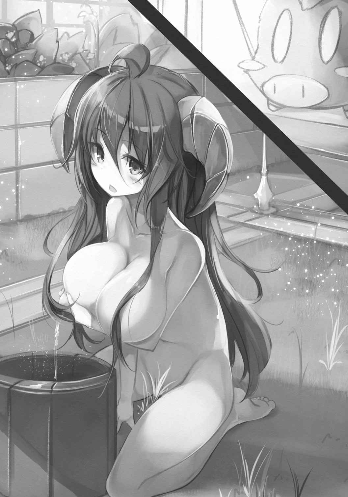
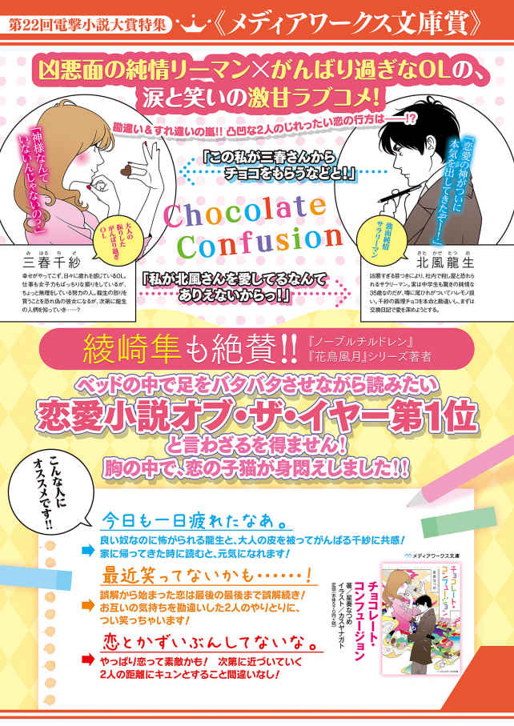
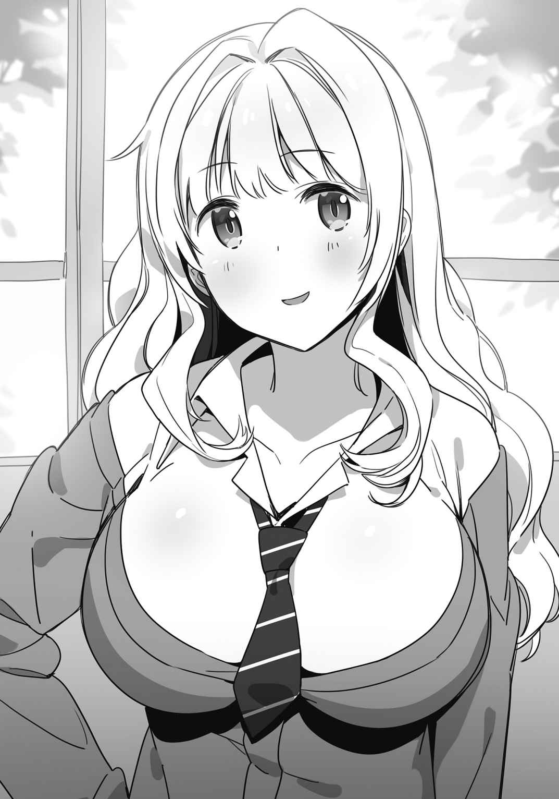
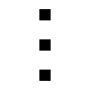

| まるごと1冊 第22回電撃小説大賞受賞作 【電子特別版】 (電撃文庫) | |
| Unknown | |
| (2016) | |
本書は、『電撃文庫ＭＡＧＡＺＩＮＥ Ｖｏｌ．48 』の付録『〝まるごと１冊〟 第22 回電撃小説大賞受賞作』からの抜粋と、電子書籍版の各受賞作品の試し読みを組み合わせた電子特別版です。
本書（電子版）に掲載されているコンテンツ（ソフトウェア／プログラム／データ／情報を含む）の著作権およびその他の権利は、すべて株式会社ＫＡＤＯＫＡＷＡおよび正当な権利を有する第三者に帰属しています。
法律の定めがある場合または権利者の明示的な承諾がある場合を除き、これらのコンテンツを複製・転載、改変・編集、翻案・翻訳、放送・出版、公衆送信（送信可能化を含む）・再配信、販売・頒布、貸与等に使用することはできません。
十四歳で自殺した被害者Ｋの遺書。
『菅 原 拓 は悪 魔 です。誰 も彼の言葉を信じてはいけない』
悪 魔 のような中学生が一人で四人のクラスメイトを支配し、その中の一人を自殺させた。
あまりに荒 唐 無 稽 な話だった。
わたしがそんなニュースを知らされたのは十二月の上旬。大学三年生であるわたしは、一人暮らしをしているために実家の近況を知らず、まさに寝耳に水であった。
信じられなかった。
まさか昌 也 が亡 くなるなんて。
昌也は桁 外 れな中学生だった。
才能が無かったことをあげる方が難しいくらいの人間だった。
まず中学に入学後、まったくの未経験からハンドボールを始めるが、二年生になる頃 には、県大会の最優秀選手に選ばれるまでに成長していた。しかも、自身が上達するだけでなく、仲間を指導して、弱小であった部を一年強で全国大会へと導いたというのだから恐ろしい。練習計画を細かく決める生 真 面 目 な性格と、年上年下問わず誰 からも好かれる明るい言動で、未経験者だらけのチームをあっという間に強豪校と渡り合えるようにしてしまったのだ。
だが昌也の才能は運動能力や指導力に留 まらない。特にずば抜けていたのは、むしろ、学力の方だろう。一般人とは比べ物にならない頭脳を持っていたらしく、学力テストでは常に学年トップ、成績表はマックスパラメーター。全国的にも有名な難関高校の入試問題もほぼ満点で解けてしまう。授業中は暇 を持て余し、部活の先輩の宿題を代行し、小金を稼 いでいたとか。あぁ、なんて超人！ 周りからは常に文武両道の天才として持て囃 されていた。
『菅 原 拓 は悪魔です。誰も彼の言葉を信じてはいけない』
それが昌也の残した遺書だった。マスコミの言う「少年Ｋ」こと岸 谷 昌也は、一枚のルーズリーフにそれだけ書き残し、教室にある自分のロッカーに入れた。
十二月の急激に冷えた朝、昌也は自宅で首を吊 って死んだ。
十四歳の誕生日を迎えてから、まだ二週間しか経 っていなかった。
昌也はわたしの弟である。姉も兄もいないわたしにとって唯 一 無 二 の存在であり、途方もないほどに大好きだった家族だ。
だが、学校や母親から聞かされた事件の詳細は、あまりに納得できないものだった。
伝聞でしかないためだろうか。謎 だらけの奇妙な流れ。
イジメの発覚は十一月上旬、菅 原 拓 という少年にイジメられていた木 室 隆 義 という子がネットに助けを求めたのが発 端 という。
『久 世 川 第二中学には悪 魔 のようなイジメがある。助けてくれ。俺たち四人は悪魔に支配されている』。その書き込みにはイジメの残 酷 な仕打ちが事細かに記され、セミの死体を食わされた話、万引きを強制させられた話などがリアリティのある描写で語られた。
寒気さえ覚えるようなイジメの記録は、多くの人間を学校や警察に通報させ、大きな騒 ぎとなった。
そして、騒 動 の翌日、その話を聞いた菅原が激 昂 して、暴力事件を起こしたことによりイジメの存在が確定する。教室の真ん中で、昌 也 を水筒で殴 ったのだ。
『イジメは発明だ。心を満たす必要悪なんだ。お前らじゃ革命は止められないよ』
職員室に連行された際、菅原はそう不敵に笑ったという。
殴られた昌也は顔に烙 印 のような大きな痣 を負い、それを見て義 憤 にかられた大人は動いた。
菅原拓にイジメの存在を認めさせると、菅原を三日間出席停止させて、その後もイジメの被害者たちから隔 離 させるようにした。菅原にはキツい罰 を与えて、昌也たちとは週に一回、教師との話し合いの場を設けた。
母親は携帯を買い替えて、定期的に菅原からの連絡がないか監視するようにした。毎日息子と会話するようにして、心の傷を癒 すことに努めた。
動いたのは何も大人だけじゃない。生徒側も大きく怒 り、菅原拓に精神的リンチを加えることが何度もあったという。それほど昌也が人気者であったということなのだろう。
菅原拓はイジメ被害者と接触することもできず、全校生徒を敵に回して凄 惨 な学校生活を送るハメになった。誰 一人も仲間などおらず、何一つも抵抗する余地などないはずだった。
だが、一ヶ月後、昌也は自殺した。
菅原拓はまさに『悪魔』だった。
昌也が自殺しても、学校側も警察側も、菅原拓に処罰を与えることはできなかった。
なぜなら、傷害事件から一ヶ月間、昌也が狂っていった期間、見える範 囲 では、菅原は昌也に何もしなかったのだから。証拠が一つもないのだから、誰も菅原拓を責めることができない。生きている三人の生徒は「何も分からない」の一点張りだ。
だから、彼は昌也が死んだあとも、謝罪一つさえしなかった。『最後の最後までバッカみたい』と笑っただけ。
悪魔は制裁も受けず、のうのうと今も生きている。
「こんなのおかしいよ......」
子供の頃 、昌 也 とよく遊んだ公園で、わたしはさめざめと泣いた。
公園の一角には小山があり、そしてその中央には遊具がある。色 褪 せたプラスチックで組み立てられ、まるで現代芸術のような派手な身なりをしているそれは、子供が好きな遊具を詰め込んだような集合体だ。
そこで、わたしは静かに泣いていた。どうしようもないほど涙が溢 れてきて、視界がぐちゃぐちゃになっていった。事件の詳細を知った今では、なぜか葬 儀 のときよりも激しく哀 しかった。自分の心臓を下から持ち上げられるような衝 動 があった。
あの頃に比べて、視点はとても高くなってしまったけれど、わたしがいる場所は紛 れもなく昌也との思い出が詰まった場所だった。だって、匂 いが変わらない。土と芝とプラスチックに擦 れたゴム、自分の身体 を優しく包んでくれるのは、十数年前と同じ空気だった。ここで昌也と時間が過ぎるのを忘れるほど笑って遊んだのだ。
気がつくと、やっぱり昌也との思い出が、はじめて自分を「おねーちゃん」と呼んでくれたときの記 憶 が思い出されて、どうしようもなく身体が震 えた。
「こんなの間違ってるよっ！」
それから怒鳴るように言葉を放つ。何が間違っているのかわたしには分からない。学校かもしれないし、世界かもしれないし、菅 原 拓 という存在かもしれない。
「昌也は誰 よりも勉強もできて、性格もよくて、少し生意気なところもあるけれど、それでも可愛 い弟だった。死んでいい人間じゃない。自殺させられて、泣き寝入りで終わらせていい弟じゃない。菅原拓だけがヘラヘラ笑って生き延びていいはずがないんだっ！」
絶対におかしい。
そんなの大学生のわたしだって分かる。
わたしは思うまま感情を吐 き出して、一回深呼吸をした。公園の空気を肺中に取り入れる。
それから拳 を握りしめて口にした。
「徹 底 的 に調べるんだ」
ゆえに、わたしは決意をする。
「全部、余すところなく、解 剖 するんだ。あの学校で何が起きて、あの教室で何が起きて、昌也に何があって、菅原拓が何をしたのか。昌也の無念を晴らしてみせる」
あの事件をバラバラに切り刻むのだ。
きっと、それが姉であるわたしが弟にしてあげられる唯 一 のことだから。
「待ってて、昌也。お姉ちゃんが全部、分解してあげるから。駄 目 で、欠落お姉ちゃんだったかもしれないけど、最後くらい、頑張らせてね」
夕暮れの公園にわたしの言葉が小さく響 く。
そして、わたしは思い出の場所から背を向け、歩き出した。
動き出したわたしは早かった。
翌日には、もう校長室にいたのだから。
そして、校長先生と向き合う。昌 也 の姉であるという事実を前面に押し出して、半ば強引にアポイントメントを取ったのだ。学校には事情説明の義務がある。
藤 本 校長は、今年で五十八歳になる。年にしては黒髪が生え揃 っており、何のスポーツをしていたかは知らないが、やけに筋肉質な身体 をしていて大 胸 筋 と上 腕 二 頭 筋 がスーツを押し上げている。
「わたしがここに来たのは調査のためです」それからわたしはゆっくりと口にした。「ですから、できる限りのことは答えて欲しく思っています」
藤本校長は軽く頷 いた。
「いくらでも聞いてくれたまえ。キミに隠 し事をするつもりはない。それが教育者として被害者のご家族にできる唯 一 の行動だ」
そこで彼は不思議そうに口にした。
「だが、キミは一体何を聞きたいんだい？ イジメや傷害事件、学校側が把 握 していることは教えたつもりだが」
「わたしが聞きたいのは、わたしの卒業後、この学校が取り入れた教育制度のことです」
「ほぅ......」
藤本校長は小さな笑みを浮かべる。わたしは真剣な口調で告げた。
「教えてください。『人間力テスト』とは一体どのようなものなのでしょう？」
昌也の状況を分解しなくてはならない。
わたしの調査はここから始まる。
人間力テスト。
なぜわたしが事件そのものではなく、この教育制度を聞くことから始めたのかには確かな理由がある。
それは、氾 濫 するほど溢 れるこの事件の情報の中で、一 際 異彩を放っているように思えたからだ。
明らかにこの教育制度は普通ではないのだ。
このテストは導入当初から話題になっていたのも覚えている。
ある評論家は先進的で時代に即したテストと評価した。ある企業はこの学校に大きく関心を示していると公表した。マスコミは、最 先 端 の画期的システムだと取り上げた。一人の有名人が「気持ち悪い」と評価したが、すぐにツイッターは「偽 善 者 」「綺 麗 事 」と書き込まれて炎上した。
評価はさまざまだが、とにかく多くの日本人が注目したのも無理もない。
人間力テストとは──生徒同士で、他人の性格を点数化するものだから。
人間力テストは二種類の質問事項によって構成される。
『この時代、○○に重要な能力はなんだと思いますか？ 以下の群から三つ選びなさい』
『同じ学年の中で、××を持つ人物を挙げてください』
その二種類だ。
○○にはリーダー、上司、人気者、などといった言葉が入る。リーダーに必要なものは何か？ 友達になりたいのは何を持つものか？ 文化祭ではどんな能力を持つ者がいれば役に立つか？ 将来、仕事で活躍するのに必要な能力は何か？ などとなる。
そして、××には、優しさ、真 面 目 さ、外見の良さ、などが書き込まれる。
生徒は各 々 の理想像やその理想に合った人間を答案に書き込むのだ。「リーダーシップには勤勉さ、優しさ、カリスマ」「学年の中で、一番勤勉なのは加 奈 子 、二番目は妙 子 」などと。
最後に、すべてを点数化する。現在、生徒が重要視する能力を持った人間ほど高得点というわけだ。生徒全員の順位を公表することはないが、生徒たちは自分の順位や点数を目 の当たりにすることになる。
自分という存在の価値を知る。
自分という性格の評価を知る。
「もちろん、初めは、多くの批判もあったよ。『生徒が生徒同士を格付けし合うなんて、とんでもない』『非人道的だ』。一応はまっとうな意見だ」
藤 本 校長は一 旦 、コーヒーを口にしてから語りだした。
「だが戯 言 だ。現代ではそんな綺麗事ではやっていけないのだよ。くだらない」
「くだらない......とは？」
「ふん、従来の学歴社会が崩 壊 しかけているのは、誰 の目にも明らかだろう？ 確かに、学歴による就職格差が広がっている事例もある。だが、超高学歴フリーターなんて言葉は三十年前まであり得なかった。有名大学を出さえすれば、良い就職先なんて山ほど降ってきた。大学入試も変わった。ＡＯ入試なんて、学力の要らない制度、私は最初聞いたとき、耳を疑ったよ」
「まぁ、そうですね」
「ニーズの多様化、サービス業の拡大、機械化の進行、とにかく社会はガリ勉を不要にしたのだ。勤勉など、ブラック企業につけ込まれて使い捨てられるだけ。今の時代に求められるのは、コミュニケーション能力なのだよ。人間力、などと人は簡単に言うがね。全部、これだ。これは私一人の考えではなく、社会の志向だ」
藤 本 校長は溜 息 と同時に少しだけ笑った。
「勤勉だけでは、真 面 目 だけでは、もう社会に通用しない。恐ろしい時代だ。このテストを批判するやつは何も分かっていないマヌケだ。『人間性の数値化に反対』『もっと過ごしやすい学校を』。なるほど、確かにその方が楽だな。学力テストのみやらせ、難関校を目指させ、学歴だけでは生きていけない社会へ突き落として、見殺しにする。就活生や新社会人の自殺統計でも見て、優雅にティータイムか。なかなかに愉快な教育機関だ」
校長はそこまで語り終えると、嘲 るようにクックッと笑ってまたコーヒーを啜 った。砂糖もミルクもないブラックコーヒーだった。
わたしはぽっかりと空いた間を埋 めるように「だから、人間力テストを作ったんですね？」と尋ねた。
「教え子が自殺したんだ」と彼は答えた。
質問の答えにはなっていなかったが、向こうも承知のようで語りだす。
「十五年前、私がまだ担任をやっていた頃 、一人の女子生徒が懐 いてきたのだがね、彼女は進学後、就職活動でどうしても面接が上 手 くいかず、鬱 になってビルから身投げした」
「......」
「私の望みは......彼女が死なない世界を作ることなんだよ。何に替えてもね」
そこで藤本校長は初めて、その仕事上とでも言うべき硬い表情を崩 して、過去の懐かしさと無念さを練り混ぜたような曖 昧 な微笑 みを浮かべた。
この人も、わたしと同じように誰 かの死を背負っているらしい。だが、その瞳 はどこか虚 ろで、わたしは見てはいけないものを目にしたようで背 筋 が寒くなった。
わたしが思わずペンを動かすのを止めてしまっていると、藤本校長はふっと息を吐 いてその表情を元に戻してから語った。
「だが、しかしね、そもそも現代においては人間力テストなんて無くても、中学生たちは互いに格付けし合うのだよ。なにせ学力が絶対視されない時代だ。絶対的な評価基準がないなら、自分たちで互いを評価し合うしかない。私はそれを数値化させただけだ」
さきほど校長の述べた女子生徒が気にかかったが、すぐにテストの話に流れてしまった。
「数値化して......競わせる？」
「競争、とは違うな。ただ、顕在化することによって何かは変わる。そうして、より社会に通用する人材になってほしい。教育者としてまっとうな願いだよ」
藤本校長は一 旦 、話を区切った。なので、わたしはすかさず用意した手帳に今の話を全部書き込んだ。彼は必死に筆をはしらせるわたしに向かって「いきなり語られて、疲れたかい？」と尋ねてきた。わたしは「正直かなり」とだけ答えた。ただいろんな情報を口頭で言われて、頭で整理しきれないだけだ。
わたしはコーヒーを飲み干した。
「おかわりは？」と校長が訊 いた、
「お願いします。お砂糖多めで」
藤 本 校長が二杯目のコーヒーを持ってきてくれたところで、わたしは更に質問した。
「それで？ 生徒の方からの評判はどうだったんでしょう？ 実際の声は」
「まぁ、評判はバラバラだな。予想通りだが。対人関係が楽になった例。あるいは逆に無力感を生んだ例。数えあげればキリがない」
「狙 い通り、コミュニケーション能力は上がったんですか？」
「統計的に比較できない。が、一部の企業はテストを高く評価してくれる。仮に彼らが就活するとき、学力１位よりも、人間力テストの１位を採用したいとな。いい判断だ。これは今後も広まっていくべき──」
そこで一 旦 言葉を止めて、校長は言った。
「──まぁ、これ以上はいいか。キミが調査するのは、弟のことだったな。このテストのことはあくまで事件の背景にしか過ぎん」
「はい」
「私たち学校側としては、キミの行動を諫 めることはできない。ご家族の知る権利は尊重する。しかし、出来る限り、他の生徒の傷に触 れることは避 けてほしい。我々には生徒を守る義務だってある」
「もちろん、配 慮 します」
「なにか他に質問はあるかね？」
一つだけ、ある。
僅 かばかり躊 躇 してしまう。だが、ボールペンを机に丁 寧 に置いてから、すぐにわたしは顔を上げる。
「昌 也 や菅 原 拓 は、そのテストで何位だったんですか？」とわたしは訊いた。
さすがの藤本校長もこの質問には露 骨 に嫌 そうな顔をした。あまり生徒自身の秘密を外部に公表したくはないのだろう。数秒間だけ考え込み、他言無用の約束をわたしに取り付けたあと、教えてくれた。
「一学期末、二学年３８１人中、岸 谷 昌也くんは４位だ。彼の友人、イジメられた三人、二 宮 俊 介 くん、渡 部 浩 二 くん、木 室 隆 義 くんも高得点。クラスメイトからとても人気があったようだ」
「......」
「しかし、菅 原 くんは３６９位。誰 からも認めてもらえない嫌 われ者が、たった一人で四人の人気者を虐 げていた」
藤 本 校長は最後にわたしへ謎 の言葉を投げかけた。
「菅原くんは言っていた。『これは革命なんだ。革命はまだ終わらない』と」
まだ終わらない？
わたしはその言葉の意味を尋ねたが、校長も首を横に振るばかりだった。
「もう、胡 散 臭 いよ！ 藤本校長の胡散臭さだけで、世界中の香水屋が閉店するよ！」
家に帰ったわたしがまず一番にしたのは、とにかく叫びまわることだった。カバンを投げ捨て、まとっていた防寒着を回転しながら脱ぎ散らかし、「ああぁ」だの「むおぉ」だの喚 いて、二階から一階のあいだを駆け上がったり駆け下りたりしていた。それから、まだ片付けられていない昌 也 の部屋に飛び込んで、ベッドの上へ倒 れ込んだ。二分ほど畳 水泳のように足をバタバタさせて、思考を落ち着かせる。
やはり慣れないことはするもんじゃないな。
もともと苦手だったが、何年経 っても変わらない。あんな気味の悪い藤本校長の前に、あれ以上居座り続けるなんて絶対に無理だ。
「けど、あの学校が普通じゃないことは分かったよ」
わたしは枕 から顔をあげて、校長から聞いたことを反 芻 する。
「あのテストが果たしてグッドかバッドかは抜きにしよう。わたしが分かることじゃない。でも！ あの学校が特別な環境だったことは理解できた」
ならば、次にやることは一つ。
「じゃあ、その教育制度の環境の中、昌也の教室で、なにが起きたかだね......」
こんなもの当然、事件当事者に聞くのが一番手っ取り早い。
けれど、昌也と共にイジメられた友人は全員、アポイントメントの時点で失敗している。両親にあっさりとはねつけられた。繊 細 な思春期、マスコミ含め、これ以上引っかき回されては敵 わないのだろう。
「でも、ダメなんだ。蓋 をしただけじゃあ、何も解決しないんだ」
わたしは昌也の交友関係を思い出す。
「昌也の彼女は......無理か。とてもじゃないけど、聞ける状況じゃないね......」
顔を合わせたことはある。こちらが嫉 妬 してしまうくらい可愛 い娘だった。
でも、今、彼女にヒアリングを求めるのは無理だ。
「じゃあ、次はどこに尋ねればいいんだろう？」
わたしはゴロリと寝返りをうって、昌 也 の部屋を見渡した。すると、一台のノートパソコンが目に入った。母親が買い与えたものだ。中学生の癖 に生意気である。わたしは大学生になってから、手にしたのに。
「......検索履 歴 は調べたのかな？」
さすがにＳＮＳやメール、データフォルダはすべて確認したはずだ。一度消したデータでも復元できるようなソフトを使って。しかし、そこには菅 原 拓 の存在の欠片 も無かった、と警察に教えられた。
でも、案外、些 末 なことは見逃しているのかもしれない。
わたしはベッドから跳ね起きて、すぐさまパソコンを起動させた。それから、インターネットのブラウザを開き、履歴をチェックする。そこにはアダルトサイトを含めて、普通の男子中学生が見るようなものしか無かった。
「やっぱ、とっくに調べられたのかなぁ......」
まさか、昌也も履歴がすべて復元されて、自身の性生活が明らかになっているとは思うまい。本当にごめんね。お姉ちゃん、見なかったことにするよ。
わたしは罪悪感を堪 えながら、前へ前へと遡 っていき、それから、
『盗 聴 防止』
という文字を見つけた。
わたしの身体 が硬直した。昌也は盗聴に怯 えていた？ 日付を見れば、ちょうど六ヶ月前。つまり、菅原が昌也をイジメていたと推定される時期だった。もちろん、盗聴の防止法なんてあるはずがないけれど。
「昌也......」
人間力テスト。
そんな奇妙な順位付けのされる学校で、何が生まれていたのだろう？
どうして昌也は自殺したのだろう？ 昌也はどうして盗聴を恐れていたのだろう？
菅原拓、一体彼は何者なんだろう？
全部、探しださなくてはいけない。
わたしは事件の核心に近づくために、『秘密兵器』に協力を頼 むことにした。
僕とキミが一つになれる手段は多くない。
別に生活が特別というわけじゃない。思想が特異というわけじゃない。ただ、あまりに愚 鈍 なだけだ。もちろんキミじゃなく、僕の話ね。
あの狭い教室の隅 で、僕は何かに集中することもなく空間を見て、それで一日が終わっていく。誰 かに話しかけられることもなく、僕だけが世界から取り残されたように、チャイムは勝手に鳴っていく。朝はみんな昨晩のテレビの内容を語り、昼間は美 味 しそうに給食をつつき、夕方は帰りに寄るファストフード店の場所を決める。すべて、僕を除いて。
僕はヒトリボッチなのである。
机も、黒板も、筆箱も、制服も、カバンも、教科書も、体操服も、ノートも、すべて僕とは違う世界の住人みたい。
だから、僕を嘲 って欲しい。
それで、僕とキミは一つになれるから。
今から語るのは、僕の情けない話。
十四歳なんてみんな馬 鹿 みたいなものだけれど、僕はとびっきりだ。頭の中がファンタジーに汚染される変な病気でも患 っているのか。
だから、僕の失恋を、挫 折 を、どうか蔑 みながら見て欲しい。
情けなくてみっともない、自 虐 趣 味 が生きがいの、冴 えないクズのちっぽけな革命戦争。
僕の名前は菅 原 拓 。
僕だけが知っていることがある。
友達がいないと、学校の授業というのは果てしなくつまらなくなる、ということ。
だから、僕は教室でも一人、陽 の当たる窓 際 の席でクズ思考を続けるのだ。
今日の脳内会議の議題は「世界で一番不幸な人間と、世界で二番目に不幸な人間、どっちになりたい？」だった。
二秒で決着。
満場一致で「世界で一番不幸になりたい」だった。
だとしたら、不思議だな。世界で一番不幸な人間は、案外、世界で二番目に不幸な人間？ なんだかヘンテコなパラドックス。実は、不幸は酷 ければとことん酷いほどいいのかもしれない。
アフリカの子供たちのためにはみんな募金をするけれど、全世界の誰 一人として僕に募金なんかしないのだから。
一人の中学生が、勉強も大してできなくて、運動神経もダメで、彼女なんてできるわけがなくて、毎日家族含めて誰とも話さずに生活する程度の不幸じゃ誰も見向きもしてくれない。
どこにもいない存在として。
教室の中で「空気」としてしか生きられない僕には、誰も愛を注がない。
だから、僕はアフリカの飢えた子供たちに勝手な逆 恨 みをしている。
（いやいや、彼らが大変ってことは分かるよ？ でもさ、彼らは誰かに愛をもらっている。けど、全世界中探しても、僕に愛を注ぐ人間はどこにもいない。それもまた事実なんだ。あぁ、チクショウ）
もちろん、理解してくれなくても構わない。所 詮 は、頭の悪い中学生の戯 言 なのだ。
ただ、十月、僕の思考はこのようにクズっぷり全開だったということ。
だから、人間力テストでワースト13 位を取るのであろう。
僕が石 川 琴 海 さんと会話したあの日。
あの事件が起きる二ヶ月前のこと。
僕の通う久 世 川 第二中学はグループワークの時間が多い学校として有名だ。
週に二回、クラス毎 で四人組を組み替えて、簡単な課題に協力して取り組む。「久世川市の新しい観光施設」、「無人島に持っていくもの」から、「バレンタインに代わる新たな商業的イベント」など雑談のタネにもならない問題をクジで決められた四人で取り組んでいく。どんなに喋 りが拙 く、あるいは頭の回転が悪い人でも少しは答えられるように配 慮 された授業だった。
けれど僕はどうしてもこの時間が好きになれなかった。理由はよくわからないが、やはりグループワークが人間力テストの採点素材に過ぎないことにあると思う。必死に頭を捻 らせて、誰かから投票を得るのが馬 鹿 馬 鹿 しく感じるのだ。
だから、目の前の三人の生徒で行われる「ハンバーガーチェーン店の新商品」というテーマにも僕は決して議論として参加することはなかった。なにか話題を振られても「時代によるね」か「場合によるね」としか言えない。やはりクズなのであった。
優等生の瀬 戸 口 観 太 くんは最初に何度もその品行方正スマイルと共に僕へ話題を振ったが、やがて諦 めるように無視するようになった。不良気質の津 田 彩 花 さんは最初から僕と同じ班になったことを不運であるかのように毒づき、時折睨 んできた。
「なぁ、菅 原 君。お願いだから、なにか発言してくれ」
最後に瀬戸口くんが僕に呆 れた顔で言う。
「おれ、菅 原 君と残りの中学生活、一切議論せずに終わりそうだよ」
とりあえず僕は「ごめん......」とだけ返した。謝っておけば、やり過ごせると思ったのだ。
案の定、津 田 さんがすぐに「いいよ、観 太 。こんな野郎、放 っとけよ」と告げてくれる。気の強い津田さんに圧 されて、瀬 戸 口 くんはしぶしぶと別の話題に議論を変えた。
ごめん、と今度は本心からこっそり謝る。こんなクズに気を遣わせてごめん。
結局、僕らの班の結論は「馬肉バーガー」で、それを瀬戸口くんが無難に発表した。
クラスの皆を最も沸かせたのは昌 也 の班が発表した、フルーツと生クリームをワッフルで挟んだ「ワッフルバーガー」であった。お調子者の二 宮 くんが「ハンバーガーじぇねぇじゃん」と野 次 を飛ばしたが、昌也は飄 々 とした態度で「サイドメニュー禁止なんてルールなんてあったか？」と反論してみせた。二宮くんは長い前髪を乱しながらオーバーにリアクションを取ってクラスに笑いを沸かせた。そんな二人のやり取りを津田さん含む何人かの女子が目をきらきらさせて見つめる。いつも通りのグループワークだ。
僕は昌也を見つめながら、クソ野郎め、と毒づきながら終業とともに教室を後にした。
石 川 さんと話したのは、そのグループワークの後、つまりは放課後だった。
場所は僕がライトノベルを借りにいった校内の図書室。十四歳にもなったのに、日本の文豪たちをことごとくスルーして、僕はもっぱら簡単に読めるものしか手に取らなかった。僕は『趣 味 は読書です』と声高に宣言し、小声で『ただし、ラノベ限定』と付け加えるタイプなのである。
今時の中学校の図書室には、それなりの数のラノベが揃 えられており、財布の寂しい中学生の強い味方だ。なにせ大きな棚二つ分もある。僕は思考を停止させながら、並んだ文庫本を隅 から順番に棚から引っ張り出す。表紙で描かれる女の子が可愛 くないなら、戻す。そんな風に選別していって、僕は家での娯楽を求めていった。
放課後のことだから、周囲には多くの生徒がいたのかもしれないが、どうでもよかった。自分以外はみな背景。だから、誰 かが僕の名前を呼んだことに非常に驚 いてしまった。
というか、グループワーク以外で僕の名前が呼ばれること自体がちょっとしたニュースなのである。
「菅原くんってよく図書室に来ますよね？」と、女の子の声がした。
振り返ると、石川琴 海 というクラスメイトが後ろに立っていた。
セミロングの艶 やかな黒髪の持ち主で、潑 剌 とした雰 囲 気 のある子。いつもクラスの真ん中で、上品な笑いをしている記 憶 がある。そんな彼女が僕の目の前で、ガラスでも見つけた子供のように無 邪 気 な微笑 みを浮かべている。
「え、あ、なに？」
激しく、つっかえながら僕は聞いた。情けない声！
けれど、石 川 さんはからかうことなく、真 面 目 に返してくれる。
「さっきのグループワーク、お疲れ様です。馬肉バーガー、良かったと思うんですけど、みんなの反応悪かったですよね。怒 っちゃいますよね」
そして、まるで僕と友人かのように他 愛 もない雑談をかけてきた。
なんで、この人が？
確かに、あの班には僕と瀬 戸 口 くん、津 田 さん以外にも一人、石川琴 海 さんがいた。途中何回か「バンズに味 噌 を練りこみましょう」だの「抹 茶 ソースなんか斬 新 ですよね」だの頓 珍 漢 な回答ばかりしていた記 憶 があるけども。
議論に参加する気のない僕と突飛なことを言い続ける石川さんと同じ班になった瀬戸口くんたちには、そんな資格ないながらも同情せざるをえなかった。
「まぁ......馬肉バーガーは熊本の方にありそうだもんね」
ここまで話しかけられたら無視するわけにはいかず、僕はぼそぼそとした声でそう返答した。
石川さんは目を丸くしながら「それは盲点でした！」とコメントしたあとで、僕が片手に持っていた文庫本の方へ視線をやって「あ、ライトノベルですか......菅 原 くんのオススメとかありますか？」と話題を変えてきた。
「......」
僕は文庫本を押しつぶすように、親指が変色するほど力を加えた。別にラノベが憎いというわけでなく、ほぼ無意識である。意図が分からなかった。いつもクラスの中心にいてバンドや芸能人の話で盛り上がっている人が、僕みたいな根暗と雑談を続ける理由が。
僕は追い詰められた野 兎 みたいな警戒態勢に入るが、石 川 さんはその理由が見当つかないのか不思議そうに首をかしげた。
背丈以上の本棚に挟まれた、図書室の隅 の隅の薄 暗 い空間で、僕らは何 故 か黙 り合ってお互いを見つめ合っていた。
「......単純に、話してみたかっただけです」先に沈 黙 を破ったのは石川さんの方だった。「わたしは菅 原 くんに弟子入りしたくなったんですよ」
「はぁ？」
「ぜひ、わたしを弟子にしてください」
まったくノリについていけなくて戸惑う僕に構わず、とうとう石川さんは頭を深く下げて僕にそのきれいなうなじを見せつけてきた。なんだこれ？ 女子の間で流 行 っている遊びなんだろうか？ 全然分からん！
「お、お願いだから、頭をあげて」
誰 かに見られたらあらぬ誤解をされて、迫害を受けそうだ。僕が精一杯に頼 み込むと、石川さんは困る僕がおもしろいのか笑いながら身体 を起こす。
僕は今年一番と豪語できるほど深い溜 息 のあとで口にした。
「一体全体、どういうことなのさ......」
すると、石川さんはそこでやっと説明不足に気づいたかのようで、「あっ」と発してから「だって菅原くんは凄 い人ですから」と述べる。
「凄い？」
「うん、さっきのグループワークもそう。ずっと堂々と孤高を突き通していますよね。他人の目なんか絶対に気にしない感じです。付 和 雷 同 しないというか」
「いや......それは別にそういうわけじゃ......」
「わけじゃなく？」
「単に僕は友達がいないだけ......」
.........我ながら酷 い返しだな。
けれども事実であるから仕方がない。僕如 きで凄いのなら、石川さんは千年に一度の怪物レベルだ。
石川さんは首を振った。
「あ、いや、確かにちょこっと友達も少なそうですが、そういうことでもないんです。そもそも友達が欲しそうでもない、というか。他人に媚 を売ることもないじゃないですか。他人の評価ガン無視！ みたいな。カッコイイと思います。尊敬しちゃいます」
なんか大 雑 把 な評価だ、とさすがの僕も思わなかった。
褒 められるなんて一年に一度もない。わーい、と内心喜んだ。ということは、つまり──。
「別に僕だって他人の評価を気にすることはあるよ」そう答えた。
「たとえば？」と石 川 さんが訊 いてくる。
「現に、今、『カッコイイ』と褒められて、すっごい嬉 しいしね」
僕がそう告げると、石川さんはクスクスと笑い出した。それから僕の胸を軽く拳 で突いて、僕をよろけさせてから言った。
「そういう見栄を張らないところです。けど、それは違うじゃないですか。道を歩いていたら、たまたま五百円玉が落ちていたとか、そういうことじゃないですか？ わたしとは、わたしたちとは、違うんです。だから......菅 原 くんが羨 ましい」
よく吞 み込めない比 喩 のあとに、曖 昧 な自 虐 が入り交じったが、彼女の声は決して暗くなることはなかった。まるで笑い話のように、石川さんは語った。
僕がそこを詳しく追及する前に、棚の向こうから「コトミン、どこやー？」「迷子だねぇ」と複数の女子の声がした。石川さんは友人と一 緒 にここへ来たらしい。石川さんもそこでハッとしたように声の方向へと振り向く。無断で僕のところに来たのか。本当に迷子みたいじゃないか。
僕は小さく手を挙げて「呼んでるよ、ばいばい」とだけ言った。
「弟子入りはまた今度、お願いすることにします」と石川さんは手を振る。「またお話ししましょう、暫 定 師 匠 」
なんだその呼び名、とツッコミながら、僕は自身の抱える気持ちに戸惑っていた。
なんとなく石川さんと別れることが物足りないような、あるいは、ほっとするような浮き足だった気持ちを僕は抱えていた。それに慣れない人と会話をする疲労もセットだから、複雑な気分。
僕がとりあえずこの場から立ち去ろうとすると、最後に石川さんは僕に妙なことを告げてきた。
「菅原くん」
「......なに？」
「わたしのおっぱい触 らせてあげる代わりに、次の人間力テスト、わたしに投票してくれませんか？」
「は？」
聞き間違いだろうか？
もちろん、急に聞かれても僕に答えられるわけがない。
僕が黙 っていると、石川さんは「冗 談 です」とイタズラっぽく笑って駆け出し、すぐに棚の向こうへ消えていった。
小学生の頃 、名前を忘れてしまったけれど、僕はとあるクラスメイトに「一 緒 に帰ろうよ」と声をかけたことがある。
返ってきた言葉は「お前と近づきたくない」だった。
だから、石 川 さんは決定的に誤解している。馬 鹿 馬 鹿 しいとさえ感じてしまう。
僕なんかを羨 ましく思ってはいけない。
確かに僕は他人の視線なんかどうでもよくなっている。そんなもの、蚊 ほどの興味しかない。蚊ほどの興味はあるけれど、早い話、その程度だ。
しかし、僕がこうなった理由を彼女は知らない。
僕の人間力テストの順位を彼女は知らない。
何も知らないのなら、彼女も僕のことを「クズ」と呼べばいいのだ。決して仲良くなろうとしてはいけないのだ。
席替えの知らせが届かなくても、体育で誰 ともペアを組めずとも、文化祭の打ち上げに誘 われなくても、女子に下の名前を覚えてもらえなくても、グループ活動で誰からも仕事を頼 まれなくても。
そんな中でも、クズでも、３６９位でも、他人の視線さえ無視すれば、僕はのうのうと生き延びていけるのだから。
《ハロー、聞こえているかい？》というメッセージが、その日の夕方に届いた。
僕の両親は共働きで深夜まで帰ってこないのが常だった。
そして、僕には兄弟も姉妹もいない。だから、家に帰ると必然的に一人になるわけだ。学校でもそう変わらないけれど。
小学生の頃、よく周りの大人たちは勝手に心配してきたが、むしろ憐 れまれる方が鬱 陶 しい。一人で晩御飯というのもこなしてしまえば、案外、慣れるのだ。とくに子供のときからの日常ならば。
僕はキャベツと玉ねぎ、そして豚バラ肉を味 噌 で炒め、別の鍋 でさっさと万能ねぎの鶏 がらスープを作り、炊きたてのご飯と一 緒 に食べた。両親の分はラップをかけて、冷蔵庫に入れておく。
それから二十畳以上の趣 味 よく整 頓 されたダイニングで、僕は一人でライトノベルに読みふけるのだ。いつもの通りの平日だ。
半分ほどページを進めると、部屋の窓際に置かれたパソコンがピコンと音を立てた。僕が液晶画面に近づいていくと、やっぱりソーさんからのメッセージだった。やけに明るい文章がチャットに書きこまれていた。
「お久しぶりです、ソーさん。昨日までは忙しかった、と言っていましたっけ？」
僕が文庫本をその辺へ放 り投げて、ブラインドタッチで返事をした。すると、すぐに向こうからの返事がきた。
《いやいや、私の話はいいよ。大して面 白 くないから。それよりも、キミが今日学校で何があったかを聞かせてよ》
いつも通りの言葉だった。
かれこれ半年以上、ときどき連絡を取り合っているが、ソーさんは決して自分のことを語ろうとはしなかった。だから、僕は相手の性別も年齢も職業も知らない。
彼（男か女かは分からないが、とりあえず彼）は、学校のパソコンの実習授業の際に知り合った相手だった。週に一回ある情報教育の授業中、僕はサボってネットサーフィンをしているうちに飛んだ匿 名 のチャットルームにいたのである。
たしか、向こうから話しかけてくれた。何回か会話をかわす中で意気投合した。
彼はとにかく人の話を聞きたがる性分があった。
だから、僕はいつも通りソーさんに今日の出来事を話した。彼は特に石 川 さんのことに強く興味をもったようだ。本名は出すわけにはいかないので、Ｉさんと命名。
《Ｉさん、か。彼女との会話というエピソードで明確になるのは、やはりキミという存在の中途半 端 っぷりだねぇ》
パソコンに書かれたのは、容 赦 ない毒舌だった。これもまたいつも通り。
《ヒトからどう思われようが、動じない。そんな人間を装 っているにも拘 わらず、たかが同じクラスの女の子に話しかけられた程度で舞 い上がっている。結局、キミは普通の男子中学生ということか。あぁ、情けない、情けない。仮にクズに美学があったとしても、キミはそれさえ持ち合わせていないんだ》
「誰 も、自分が特別な中学生だなんて思ってないよ。別に美学なんて求めていない」
というより、そもそも舞い上がっていたのか？ いや、それは少しくらい当てはまるかもしれないけれど。
《まぁ、キミが情けないことはいつものことだがね》
「ウルトラうるせぇ。自覚しているよ」
《とまれ何より重要なのはキミの気持ちだ。キミはＩさんのこと、どう思った？ いいや、言わなくても想像がつく。妄 想 しているんだな？ クズな人間というのは恐 い。性欲だけは有り余っているのに、相手がいない。候補が一人でも現れたら、すぐに浮かれやがる》
「......」
その文章を三回黙 読 し、そして一回だけ音読したあと、僕は席を立ちコップ一杯の麦茶を飲んだ。それから洗面所へ行ってから、蛇 口 を全開まで捻 って、大量の水で顔を洗っていく。
理由は単純、動揺を隠 すため。
ソーさんの推理はほとんど当たっているからだ。コンチクショウ、クズというのは行動が読みやすいものらしい。なんて簡素な生物なのだろう。ミドリムシか？
仕方なく僕は開き直って「なにか文句あるのか？」という文章を打ち込んだ。
ソーさんの返事はすぐに返ってきた。
《やれやれ。キミはせめて美しきクズを目指そうとは思わないのかい？ なんだ、その軟弱な精神は。他人に罵 倒 されても媚 びず、可愛 い女の子に言い寄られたら平手打ちで返し、金と権力だけ卑 しく集めて、貧乏人どもを踏 みにじるような》
「待て。それのどこが美しいんだ？」
《全部》
「まじか」
《私はね、キミを不安に思うよ。女子に好かれたいのか、好かれたくないのか、どっちなんだ。キミは一生、ニヒル気取って生きるつもりかい？》
「言いたいことは分かるけどさ、いや、実は半分も理解できないけれど」
《そう、半分だ。もう中学生も半分終わりなんだ。なにか悩みでもあったら、私はいつでも相談に乗る。だから、キミも自身の生き方を考えてみたらどうだい？》
「むぅ......」
自分の生き方なんて言われても、なぁ。
僕は画面を睨 みつけながら考える。けれど、なんと返していいのか思い浮かばず、仕方なく「そういえば、ソーさんって何歳なんですか？ 高校生？ 社会人？ やけに上から目線ですけど」と話題を変えてみた。
《呆 れた。話題を変えて逃げるかい》返答はすぐにきた。画面から溜 息 が届いてきそうだ。《私のことはまたいつか教えるよ。では、また》
僕の質問をはぐらかし、ソーさんはチャット画面から消えていった。
逃げてんのはどっちだよ、と僕は誰 もいない部屋でツッコミを入れた。
ときどき、昌 也 ならどう思うのか、と考えるときがある。
あるいは、尋ねてみたら、どんなアドバイスをくれるだろうか？
良かったら教えてほしい。
同盟相手であるこの僕に。
それは五日後のことだった。
こういうのって、何か名前がついていないのだろうか？ 案外、みんなも経験あるんじゃない？ なにかの拍子で知り合った人と、絶対に今まで会ったこともないはずなのに、道 端 での遭 遇 頻 度 が格段にあがる現象。
とにかく、僕は石 川 さんに再び出会ったのだ。
彼女は涙を流していた。
意外に思われるかもしれないけれど、僕は放課後、月に二回くらいの頻度で街のプラネタリウムに訪れる。ここで大事なのは、僕は別に星なんか興味がないということだ。夜空だってわざわざ見ようとは思わない。星座盤 の使い方さえ忘れてしまっている。つまり、僕はプラネタリウムが好きなのだ。理由を聞いてはならない。どうせ突き詰めれば、僕特有のクズ思考へと繫 がるかもしれないから。
このドームの中にいる間だけは、なにもかもを忘れていたいのだ。
忘れていたいという願望さえ忘れていたいのだ。
だからプラネタリウムの中で石川さんを見かけたのは完全な偶然だった。
石川さんは映写機を挟んだ向かい側にいた。僕はそのことを上映中に気がついた。平日であるせいか、それとも科学館がさびれているせいか、観客は極 端 に少ない。館内には僕と石川さんしかいなかった。小さな半球体の天 井 に映し出される無数の星は、僕ら二人だけを包んで廻 っていた。
天の川は彼女の真後ろへと流れていき、彼女の顔を照らした。
石川さんの顔でなにかが光を反射しているように見えた。
僕はその正体をぼんやりと考えて、やがて納得する答えに辿 り着いたときに上映は終わった。
「どうして泣いているの？」
そして僕は尋ねていた。学校のときとは違い、特につっかえることなく言葉は出た。
石川さんもどこかのタイミングで僕に気がついたのだろう。特に驚 いたリアクションを取ることなく、
「泣いていません」
と真剣なまなざしで答えた。
意味不明だ。
なにせ普通に涙ぼろぼろ流して、頰 まで届いているんだもん。よく否定できたな。
「どう見ても泣いてない？」
「みまち、がいです」
「いま、しゃっくりしなかった？」
「気のせいです」
「プラネタリウムの神様に誓 って？」
「もちろん、ですとも」
けれど、頑 なに彼女は認めようとはしなかった。両手の拳 をぐっと握りしめて、両 膝 に強く押し当てながら震 えている。
先に折れたのは僕だった。石 川 さんの涙を証明したところで得になることは一個もないのだから。石川さんは泣いていない。それでいいじゃないか。あぁ素晴らしい世界。
だから僕は観客席から立ち上がって、映写機の周りを回るように彼女の方へと歩いていく。それからカバンから一枚の板チョコレートを取り出して、彼女へと渡した。
「ほら、なにかを食べながら泣くって難しいから」とついでに言ってみる。
我ながらもう少し気の利いたセリフは言えないものか、とはツッコミたくなるけれど。
当然、石川さんの反応は無言で、ただ僕からチョコレートを受け取っただけだった。
それを見届けると僕は背を向けて、いち早くこの場から離 れることにした。柄にもないことをするって、けっこう恥 ずかしい。でも柄にもないことを一切しない人間なんていないだろう？
珍しいことをしたもんだ、と思いながら僕は出口の方へと進んでいく。
そのとき、僕の右手が誰 かに摑 まれた。指先からあたたかな体温が伝わってくる。
僕が振り向くと、石川さんは瞳 に涙を溜 めながら、僕の方をじっと見つめていた。そして、とても小さい、まるで幽 霊 みたいなか細い声で言った。
無音のドームの中で、彼女の声だけが響 いた。
「わたし、本当に菅 原 くんが羨 ましいです......」
噓 だ。
僕はすぐに理解できた。そんなの噓なのだ。なんとなく呟 いてみただけの言葉なのだ。だって、僕みたいなクズに石川さんが憧 れるわけがない。全世界の誰一人、アフリカの子供たちに多額の募金をする人だって、僕には愛を与えない。羨 望 なんかされるわけがない。
きっとソーさんに笑われる。これだからクズは単純だって。
でも、それでも、そんな見え見えの噓だって。
人間力テスト３６９位。
誰からも、性格を認めてもらえないクズ。
そして、そんな僕を泣きながら『羨ましい』と告げる石川さん。
以上は、岸 谷 昌 也 が亡 くなる二ヶ月前、街外れのプラネタリウムでの邂 逅 。
一体、僕はなにを選ぶのか？

では秘密兵器の出番である。
だから、わたしは「さよぽん、さよぽん、さよぽん、さよぽん、さよぽん、さよぽん、さよぽん」とひたすらスマホに向かって連呼していた。おそらく数十回くらいは言っていると思うけれど、なかなか向こうからの反応が返ってこない。しかたない。百回、続けてみよう。
だって、他に頼 る手段がない。既 にクラス名 簿 を片っ端 から電話をかけて「ぜひとも話を聞かせてください」と願ってはみたが、全部断られている。早くも手詰まり。
だが、現段階の情報ではとてもじゃないが、事件の真相なんて推理できないのだ。なにせ、わたしが知るところの事件を時系列にまとめるとこうなる。
① 校長がヘンテコな人間力テストを導入。
② 十一月、ネットの書き込み、菅 原 が起こした傷害事件によって、昌 也 たち四人が一人のクラスメイトにイジメられたことが明るみにでる。
③ 母親たちや学校が菅原拓 を処分、以降菅原を厳重に監視、昌也たちから隔 離 するように努める。
④ 十二月、昌也は精神異常をきたしたのち、自殺。
推理できるかっ、と怒鳴りたくなるほど情報不足だ。
特に意味不明なのは三番と四番の間。菅原拓は一体どうやって、昌也を追い込んでいったのだろう？ それが分からなければ、誰 も菅原を責めることはできない。
だから完全に行き詰まったわたしはたとえ中々繫 がらなくても、秘密兵器こと紗 世 、通称「さよぽん」へ電話をかけることにしたのだ。紗世は通う大学こそ違うものの、小中高と子供のときから、勉強に苦しむわたしを何度も救ってくれた幼 馴 染 なのだ。
《うるせぇな！ 呪 いみたいな留守電残すな、アホ野郎》
百回までさよぽんを唱えたところで、やっと向こうから言葉が聞こえてきた。普段通りのガサツな声だ。
《しかも、なんでお前は電話に出た瞬 間 、『さよぽん』しか言わないんだ》
「さよぽん、聞いて、さよぽん」
《無視か》
「わたしの弟の事件は知っているでしょ？ そのことを現在、調べているんだけど......」
そこから、わたしはマスコミや親から聞いた情報などを全部紗世に伝えた。整理しないままの情報をひたすらに彼女へとぶつけていく。話していくうちにわたし自身が混乱するようだったが、紗 世 はすべてを聞いた上で「なるほどな」と理解したように言った。
《まぁ、さすがにニュースで見るからな。事件の概 略 は知っていたけど》
「さよぽんの見解を教えて」
わたしはそう伝えてみたが、電話口からなかなか返答が返ってこなかった。なんだか向こうも悩んでいるみたい。憂 鬱 とした息遣いが聞こえてくる。
《あくまで一般的な感想としてだからな？》そう前置きしてから紗世は言う。《普通に考えれば、菅 原 が昌 也 たちをイジメていた可能性は低いんじゃない？》
「......どういうこと？」とわたしは訳が分からず聞き返す。
《いや、怒 るなよ？ ただ昌也ほどの人間が、たった一人の中学生にビクビク怯 えていたとは思えないだけだよ。菅原自身が『イジメは発明だ』とか腹立つことを語るのは、自 らに注目を浴びさせる演技。そして黒幕は他にいるんじゃないか？》
「黒幕説か......可能性としてはあるけど。でも、それだと、おかしいことがあるよ」
悪くはない推理だと思うけれど、妙な点が残る。
「黒幕がいた。だったら、昌也の遺書にはなぜ菅原の名前しかないの？」
そう、だから難しいのだ。昌也でさえ黒幕の存在が見抜けないという可能性を抜かせば、このイジメは菅原拓 という「一人の少年」のみで行われたことになる。自殺まで一ヶ月間、徹 底 的 に監視されていた中学生が。
わたしはどうしようもない行き止まりに溜 息 をついた。紗世も同じようで熊 が唸 るような声が電話先から漏 れてくる。
《かーっ、分からん。分からんな。なぁ、昌也以外のイジメの被害者の三人は学校に話したんだろう？ なんて話したんだ？》
「菅原拓にイジメられていた。傷害事件後はよく分からない。それだけみたい。なにかに怯えるように、本当にそれだけしか言わないんだって」
《そうか......》
「やっぱり内部の生徒に聞くしかないかぁ。だれか話してくれないかなぁ。菅原拓と昌也の関係を」
《だよなぁ......菅原拓か......》
そこで紗世は言葉を切り、押し黙 ってしまった。なにやら長考タイムに入ったようだ。時折、彼女は完全に沈 黙 して、自分の世界に入ってしまうことがある。大抵、話しかけても聞こえないので、わたしはしばらくスマホのカバーを親指でいじって暇 を潰 す。
少々の時が流れたあとで、電話の向こうで何かを決意したように《よし！》という声が聞こえてきた。
《香 苗 、ちょっとこの事件の調査、私にも協力させてくれ》
紗世の鼻息が電話から聞こえてくる。
《私だって、昌 也 と何度か遊んでやったからな。このままで終われるか》
「おぉ。どうしたの？ もともと頼 むつもりだったけど」
《いや......私だって、いろいろ、この事件には思うところがあるんだよ。それに、なんだかさ......》紗 世 はそこでまた何か言いにくそうに言葉を詰まらせてから口にした。《なにより、お前が心配だ》
いつも豪 快 な幼 馴 染 にしては、あまりに優しいお言葉。ちょっと驚 いた。
「......心配されちゃった」
《......しちゃったな。そりゃあ、幼馴染の弟が亡 くなって、気にすんなって方が無理だろ。お前、無理に明るくしようとしてない？》
「うん、少しだけね」
《あんまり見栄張るなよ。辛 かったら、なんでも話せ。なんか去年あたりから、ＳＮＳでも鬱 ツイートしかしてねぇじゃん。ほら、お前の失恋の噂 も聞いているからさ》
「そっか......ありがとうね。でも大 丈 夫 。いまは昌也のことが重要だから」
《そうだな......じゃあ、ちょっくら私も本気だしてやるよ》
電話の向こうで紗世が不敵に笑みを浮かべる姿が想像できる。
うむ、なかなかに良い親友をもったものである。そして、心強い協力者を得た。
わたしは心の中の温度が上昇していくのを感じながら、お礼だけ言って電話を切った。
紗世の方から再び電話がきたのは、協力を得た日の二日後だった。
《やっぱり親を通すと弾 かれるが、子供側には話す気満々の人間もいるらしいな》
「もしもし」も言わずに紗世は開口一番に語りだした。しかし、その内容はわたしが最も期待していたものだった。
「えっ？ ってことは？」
《うまくいったよ。今日の放課後、駅で会ってくれるって。お前、行けるよな？》
「もちろん！ さすが、わたしの秘密兵器」
詳しく紗世に尋ねると、久 世 川 第二中の生徒が彼女の友達の弟の友達にいたらしい。しかも、昌也のクラスメイト。まさか、こんな素晴らしい人間に話が聞けるとは思わなかった。やはり彼女には、わたしにはない人脈がある。
「よく約束できたね。いつも自分が昌也の姉ってことを伝えると、すごい勢いでドン引きされて断られるんだけど......」
《お前、正直すぎるぞ......そりゃ重たいだろう》紗世は呆 れたように言った。《だが、これで大人たちには見えない話が聞ける。もしかしたらクラスメイトは何か知っているかもしれない》
「うん、まったく謎 のイジメの話とかね......」
《任せたぞ。真相を聞きだすのはお前の仕事だ》
頷 いて、再びお礼を言ってから電話を切る。
わたしはコーヒーでも淹 れて、質問事項を整理しておこうと居間へと向かった。現在は下宿先から実家に戻っているのだ。大学の講義も三年後期になるとほとんどないし、昌 也 の調査をするならあまり久 世 川 第二中学校から離 れない方がいいと思ったのである。
家にあったコーヒー豆を思い出しながら階段を下りると、居間には母がいた。長髪を頭の後ろで留めて、パソコンに向かって、何かを懸 命 に打ち込んでいるようだった。
「母さん、何を作っているの？」
わたしが尋ねると、母親は顔をあげ、疲れた笑いをみせた。
「連絡網 よ」
「なんの？」
「学校教育を改善する会。まだ名前は決まっていないんだけどね。これ以上、昌也みたいな犠 牲 者 を出さないように久世川第二には頑張ってもらわなきゃいけないわ。だとしたら、ほら、わたしが動かないと」
確かに、自殺した生徒の母親というのはリーダー性としては十分だろう。もう昌也がいないにも拘 わらず、母さんは学校を変えようとする気なのだ。母さんは慣れない手つきで文字を打ち込んでいった。その横顔は昌也が亡 くなる前より、はるかに老 けてみえた。
「菅 原 拓 は厳重に罰 しないといけないわ。悪 魔 には制裁が必要よ」
そうして彼女は忌 々 しそうに呟 いた。
「確かに、昌也はやつに殺された。けれど、わたしと悪魔の闘 いはまだ終わっていない。わたしは絶対に許さない。絶対に破 滅 させる。追い込んで、追い詰めて、ボロボロにしてみせる」
その言葉はなんだか自分の母親のものではないようで、わたしは少し恐 くなった。
思い出されるのは、菅原拓の言葉。
『革命はまだ終わらない』
果たして事件はもう終わったことなのだろうか？ それとも、まだ始まったばかりなのだろうか？
わたしは嫌 な予感がしてならなかった。
紗 世 が紹介してくれた相手は、加 藤 幸 太 と言った。
初対面の印象は、もやし。この比 喩 がここまで似合う人間にめぐり合うのは初めてだったので、わたしは思わず喫茶店ではなく牛丼屋へ目的地を変えるところであった。まずは精をつけないと！ ほとんど骨しかない細長い手足、血の気のない顔、常に半開きの口元、左右のバランスが合っていないメガネ。どこもかしこも、ザ・もやしだった。
わたしは凝 った置物が店中に置かれたアンティークな雰 囲 気 のあるカフェへ彼を誘 導 した。コーヒーが一杯六百円もするような場所。間接照明が照らす薄 暗 い店内の奥の席に、わたしたちは座った。
彼はホットレモネード、わたしはホットコーヒーを注文し、飲み物が出てくるまで雑談したあと、質問を切り出した。
「最初に、なんでもいいから、二人の印象だけ話してくれないかな？ 加 藤 くんから見た、岸 谷 くんや菅 原 くんの雰囲気を」
まずはそこから聞くと、加藤くんは「はぁ」と呟 いた。
とりあえずは簡単に答えられる質問から始めることにした。漠然と菅原拓 は性格悪いやつというイメージはあるものの、実際確かめたい。それに、わたしも学校にいる昌 也 の様子までは知らなかったのだ。
「マサ、あぁ、岸谷昌也のあだ名です、アイツは一口に言えば人気者でしたね。なにかイベントがあれば間違いなくリーダーシップをとりましたし、勉強は飛び抜けていましたから。だから、みんなアイツをチヤホヤしていた。あぁ、もちろん俺も尊敬していました。マサがイジメの被害者なんて最初は考えられなかったですね。加害者でも被害者でもアイツはイジメという概 念 から無縁だったから」
「うーん、さすがだねぇ」
これは予想通り。昌也の家での雰囲気と変わらない。
「じゃあ菅原くんは？」とわたしは続いて尋ねる。
すると加藤くんは眉 間 にしわをよせて、ゆっくりと口にした。
「ん、いや、菅原は......なんでしょうね。暗いやつ、と言うのも変か。明るくはなかったです。嫌 われていた、というわけでもないんですが、とにかく存在感がなかったですね。たぶん、教室で一番目立たなかった」
「ん？」
これは予想外。ニュースや学校から聞いた情報では、もっと不 遜 で偉そうで捻 くれた中学生だったはず。わたしは手を使って、加藤くんの言葉を遮 って言った。
「地味ってこと？ マスコミが言うような、悪 魔 とは違って」
「あ、確かに不 気 味 でしたよ。なにを考えているか分かんなかった。でも、そんな不良生徒みたいなやつじゃないです。頭も悪かったし、運動もできなかった。昼休みは一人で漫画や小説を読んで静かでいるようなタイプ」
「他には......ある？」
「そうですね、あと、周囲の人間に無関心なように見えました。根本的に他人に興味がない、というか。話しかけても無視するというか。対人恐怖症とは違うんすよ。だから、やっぱり悪魔だったのかもしれません。気持ち悪かったですもん」
それから加 藤 くんは菅 原 拓 の「気味悪さ」を何回か強調して、一 旦 喉 を潤 すようにホットレモネードを飲んだ。
その間、わたしはノートを見ながら、聞かされていた菅原像のギャップを振り返る。あまりに大きい。菅原拓は悪 魔 であり『お前らじゃ革命は止められないよ』と偉そうに言うようなやつのはず。でも、本当は地味なやつ？ この落差はなんなの？
なかなかに気になるポイントである。だが、推理は後にして──本題だ。
簡単にノートにメモだけして、わたしは一旦深呼吸をする。脳みそに酸素を送り込んだのち、この事件の真相に切り込むことにした。気合いを溜 めに溜めて、わたしはボールペンを握り直して「じゃあ......イジメのことを教えてくれるかしら？」と切り出した。
しかし、わたしの意気込みの割には、加藤くんの反応は曖 昧 だった。申し訳なさそうに答える。
「......よく分からないんです。イジメは」
うつむきながら、加藤くんは呟 くように口にした。
「どういうこと？ 菅原くんが水筒で殴 ったあとの一ヶ月間、表面上は何もなかったってこと？」
質問を具体的にして、わたしは訊 いてみる。
けれど、彼は再び首を横に振った。
「いや、違うんです。それも含めて、最初から最後まで。傷害事件でイジメが発覚する前も後も、その現場を見た人間は一人もいないんです」
「............ え？」
わたしは思わずノートを取り落としそうになった。けれど、かろうじて摑 み、テーブルに乗り出して加藤くんの顔を見る。
それから茫 然 と質問を口にする。
「どういうこと？ ネットに投稿された内容では、ハチの死体を食べさせられたり、針で背中を刺されたりって......」
「だから、誰 も目 撃 していないんですよ。そんなの。どちらかがイジメている空気さえ無かった。その内容がネットに書き込まれるまで、いや、書き込まれて話題になっても気づかなかった。菅原が昌 也 を水筒で殴るまで、クラスの全員が誰一人としてイジメに気がつかなかったんです」
「......っ」
どういうこと？
さすがに混乱してくる。
誰にも気づかれずに人気者たち四人を一人で虐 げていた？ そんなこと可能なのか？
無 茶 苦 茶 だ。人気者が少しでも憂 いの表情を浮かべれば、クラスメイトがすぐに心配するはずだし、彼らなら相談相手だって山ほどいるはずだ。ありえない状況だ。
なんだか腹が立ってきたので、横にあった砂糖を二個ほどコーヒーの中に入れる。格段に甘くなるだろうけれど、元々わたしは甘党である。少しでも頭の回転を速くしておきたい。
わたしはそのコーヒーを口にしたあとで、加 藤 くんに尋ねた。
「......イジメは、本当にあったの？」
「チラリとした影はあったから、たぶん。マサの体操服が誰 かに切り裂 かれていたこともあったし......」
「影だけ、か」
「それにマサ、シュン、タカ、コウジの四人はイジメられたと主張して、菅 原 も認めているから......加害者も被害者も言うんだから、本当にあったんだと思います」
わたしは最 早 、溜 息 をつくしかない。
少しは真相に近づけると思ったが、完全に失敗である。もちろん加藤くんは悪くないけどね。でも、ちょっと落胆してしまう。
これで被害者の自宅、パソコンメール、スマホには何一つ手がかりなしというのだ。警察や学校だってお手上げなわけである。菅原拓 が昌 也 たちを追い込んだ決定的なものが見つからない。
加藤くんがイジメに関して何も知らない以上、この話題で訊 けることはない。後はもう確認事項だけ。なんだか敗戦処理をする投手の気分だ。
わたしはノートに事前に書き込んでおいたことを加藤くんに訊いていく。
「えぇと、じゃあ、傷害事件後、菅原が岸 谷 くんを水筒で殴 った後のことを教えて。話によると、菅原くんは孤立したみたいだけど」
「まぁ、元々菅原は孤立していましたが。あ、でも、一部の女子からは逆にイジメられていたみたいですね。マサのファンというか、仲間からの逆 鱗 に触 れて。まぁ、それよりも辛 そうなのはアレですかね、テレビは学校の不 手 際 しか取り上げないから......」
「ん？ 取り上げない？」
すると、言いにくそうに加藤くんは告げた。
「菅原は一週間、土 下 座 させられていたんですよ。学校中を回って」
わたしは再び「は？」とだけ言葉を発して、固まってしまった。これまた、まったく知らない事実であった。思わぬ情報。いや、確かに断片的には聞いていた。
学校や保護者は菅原拓に厳重な罰 を与えた、と。
けれど、そこまで過 酷 で、歪 んだ罰とまでは聞いていなかった。
「なんでも学校や保護者で取り決めたそうです。一週間、昼休み、三年から一年までの教室を回ってひたすら土下座させる。ちょっと惨 いですよね。全校生徒にイジメの首 謀 者 を晒 し回るんだから」
「え、なんでそんなことを？ あ、いや、加 藤 くんの答えられる範 囲 で教えて」
「たぶん、菅 原 が恐 かったんじゃないですか？ だって誰 にも気づかれず、誰にも知られずに、四人のクラスメイトを嬲 っていたんですから。それに全校生徒が菅原の顔を覚えれば、みんなが菅原を監視するわけですからね」
確かに話の筋は通っているように見える。先生側が見えなかったイジメを、生徒同士で菅原を見張らせるのは納得できる。
だが校内を土 下 座 しながら回る必要まであったのだろうか？
合理的なのか。けれど、これではあまりに──。
「お願い続きを教えて」急ぐ気持ちを抑えながらも、わたしは訊 いていく。「そして、その土下座回りから昌 也 、あ、岸 谷 くんが自殺するまでに何があったの？」
「特別なことはないですよ。ただマサの様子が徐々におかしくなるのは分かりました。なんだか、人を避 けるようになって。あんまり笑わなくなって」
「それは菅原くんが何かをしたから？」
「だから誰も分からないですってば......みんなは断然マサの味方ですし、菅原の敵です。なのに、なぜか壊 れていったんです。菅原が何かをしたとしか......」
壊れた、という表現が少し気に食わなかったが、ここで怒 るほど短気ではない。わたしは質問を続ける。
「それを見て周りはどう対処していたの？」
「もちろん、心配しました。菅原につけられた痣 は痛々しかったです。みんなで菅原をイジメて、昌也たちと菅原を遠ざけることに努めて、学校全員で昌也を護 って、菅原と戦ったんです」
「全員......菅原くんの味方は本当にいなかったのね？」
「い、いや、さすがにそこまでは言い過ぎました。きっと、何人かは菅原に同情するやつもいたでしょうし」
同情？ 菅原に？
わたしは「なんで？」と問いかけてみる。やや口調が強くなったのは、申し訳ない。もう少しで何か重大なことが聞けそうな予感があったのだ。
言いにくそうに加藤くんは顔を俯 かせた。
「えぇと、何も知らない上級生や下級生とかが、そう思うかもってだけです。菅原の土下座はインパクトが強すぎましたし、ちょっと誤解している人間がいても不思議じゃない。元々、学年以外の人間でマサを好かないやつは少しはいたんですよ」
「ん、どうして岸谷くんが嫌 われているの？」
そこで加藤くんは口にした。
「マサの母親、けっこう有名だったんですよ。ほら、よくニュースでやるモンスターペアレント。授業内容だとか、テストの採点方式とか、すぐにクレーム入れるようで。その事実を知っている人間はけっこう嫌 っているようでしたね」
そんな事実、聞いたこともない！
「......岸 谷 くんの母親はそんなに酷 かったの？」わたしはできる限り、自分の感情を押し殺しながら言った。今日のヒアリングは、全部、こんなのばっかだ。
「えぇ。だって、ＰＴＡの副会長でしょ？ マサ自身も嫌 がっていたみたいですしね。マサが忘れ物をしたことを咎 めたらクレーム、擦 り傷を負ったらクレーム。擦り傷なんて間違いなく家で負った傷なのに、体育のせいにして。マサ自身も隠 したらしいんですけど、どっかからネタを見つけてクレームを入れるようで」
「......そう、なんだ」
そして、得られた情報は衝 撃 的 なものだった。
口の中が一気に渇いてくのを感じる。
少なくとも、わたしが高校生だったときは普通の母だったはず。わたしが大学生となり実家から離 れた三年間のうちに、母は豹 変 していたのだ。
数時間前テーブルの前で、菅 原 拓 への怨 念 を浮かべていた母の姿が頭をよぎる。
そして確信した。菅原拓に土 下 座 回りをさせたのは母なのだ。モンスターと化した母は規格外の罰 を彼に与えたのだ。
どういうことだろう？ 事件の根幹が母親にある？
話を聞きに行かなくてはならない。母親の元に。この事件、彼女はただの関係者とは言えないほど事件に絡 んでいる。そして、なにより、わたし自身の問題なのだ。
わたしは加 藤 くんにお礼だけ言って、席を立った。
すると、彼はわたしに最後、質問をしてきた。
「あの、俺、何か言いました？ 途中、様子が変でしたよ」
「大 丈 夫 、ありとあらゆることは気にしないで。お姉さんは五分に一回、変になるの」
「あ、そう......じゃあ一ついいですか？ この事件を調べているんですよね。じゃあ、マサの彼女に関しても知っているんですよね？ 何か新聞以上の情報はありました？」
わたしはカバンを肩にかけながら口にした。
「いえ、岸谷くんが自殺する三日前、階段から転落したことしか......まだ意識不明なのよね？」
「はい......こっちも大分、謎 なんですよね。犯人は菅原拓って言われていますが、菅原はそのとき職員室で説教をされていた......」
そう、昌也の事件との関連が不明であるため後回しにしているが、謎はまだあるのだ。
昌也の恋人が、昌也の自殺の三日前に学校の階段から転落して意識を失った。
昌也が自殺する原因の一つともいえるが、こればかりは事故の可能性もある。とりあえず、わたしが調査するべき最優先事項は昌也のことなのだ。
わたしは彼に再びお礼を言って、その場を去った。
わたしはまっすぐ家には帰らなかった。
思考がまとまらなかったからである。
本来欲していたイジメの手がかりは手に入らなかったけれど、思わぬ大きな情報が手に入った。土 下 座 回りという菅 原 の受けた重すぎる罰 と、モンスターペアレントとなったわたしと昌 也 の母。
だから、頭を整理するために高校時代によく通っていた服屋だとか、大好きだったパン屋など、駅前にある商業施設をとくに目的もなく回っていった。なんだか歩幅が歩くたびに変わっていく感覚さえあって、まっすぐに進んでいるのかどうかも疑わしかった。あれ？ 南ってどっちだっけ？
わたしを正気に戻したのは、紗 世 からの電話だった。
彼女の声を聞いた瞬 間 、わたしは加 藤 くんから聞いたことすべてを語っていた。紗世は黙 って聞いたあと、穏 やかな声で《本当に大 丈 夫 か？》と心配してくれた。
「大丈夫。話したらスッキリした」とわたしは返す。「シュウフクカンリョウ、始動します」
《そこまでボケられるなら大丈夫だな》
「わたしは探偵に向いてないのかも。もう混乱の連続」
《んなこと紀元前から知っている。で、次は母親なんだな》
紗世が冷静に今後の提案をしてくる。
「......」
だが、わたしはすぐに同意はできなかった。
《香 苗 ？ どうした？》
「......いや、なんでもない。うん、たぶん母さんはなにか隠 しているんだ。じゃないと、土下座回りなんて常軌を逸 した罰が下されるわけがないもんね」
わたしはその場で深く頷 いた。
まだ謎 は多い。
──傷害事件前、誰 にも認知されなかったイジメ。
──傷害事件後、土下座をすることによって全生徒から注目されていたはずの菅原。
──そして、自殺した昌也。
それでも、少しずつ真実には近づけているはずだ。
どんどん解明していけばいい。加藤くんとの繫 がりができた以上、そこから広げてもいい。母が事件に深く関 わっているのならば、そこから崩していってもいい。ありとあらゆる繫がりから謎に迫っていくのだ。
《徐々にだが、事件が浮き彫りになっているな。香苗、ここが踏 ん張り時だぞ》
紗 世 の励ましの言葉が電話の向こうから届く。
正直に言えば、精一杯に元気を見せる裏側で、わたしは拭 いきれない不 穏 なものを抱えていた。真実に近づくたびに、だんだんとわたしの胸中に存在するべきでない感情が生まれてくるのだ。意識してはダメだと思い込むけれども。
事件を知るたびに、
昌 也 のことが分かるごとに、
わたしは──欠落したお姉ちゃんは──。
「うん、ガンバル」けれど、それでもわたしは決意する。「昌也のためにね」
不安なことを考えていたらキリがない。
《うん、その意気や良し》幼 馴 染 も満足そうに笑ってくれる。《が、その前に》
そして、そこで紗世が何かを思い出すように言った。
《香 苗 、画像送ってくれよ、画像》
「ん？」
《昌也、そしてイジメられた仲間、それから菅 原 拓 の画像。全体写真か何かであるだろ？ それを見ておきたい。イジメの問題には外見も重要だろ？》
「あぁ、そうか。ちょっと待って。一 旦 、切るね」
わたしは紗世へ画像を送信した。昌也が友人と笑い合っている画像、それから、集合写真の隅 でつまらなそうにカメラを見つめる菅原の画像。狙 ったわけではないが、そのえらく対照的な二つのものを送信した。
紗世からの反応はすぐにあった。
電話に出ると、いつもの彼女からはかけ離 れた深刻な口調で告げてきた。
すなわち、
《会ったことがある》
と。
当然、わたしは訊 き返した。すると、紗世は答えた。
《わたし、菅原拓に会ったことがある......》
つまりは、彼女も本格的に巻き込まれることになったのだった。
菅原拓の革命戦争に。
内臓が破 裂 した猫の遺体が家に届いたのは、その翌日のことであった。
『革命はさらに進む』というメッセージと共に。
やはり、それは動き始めている。
徐々に。しかし確実に。
Prologue
デスクに据えられたモニターに表示されている時刻と、秒針まできっちりと正確に合わせてある腕時計とを交互に眺めながら、男はごくりと唾を吞 み込んだ。始業時刻をとうに過ぎている社内には、慌ただしい喧 騒 が満ちている。キーボードを叩 く音、書類をめくる音、電話に向かって話している声。
時刻は、ＡＭ９時３分前。さっきから、唇が乾いて仕方がない。
ほんとうにやるのか？ 声に出さずに、自問する。
ＡＭ９時２分前。
乾いた唇を舌先で湿し、男はさり気なく席を立った。答えは既に決まっていたはずだ。やる。それ以外に、もう選択肢などない。
空席のデスクに素早く滑り込み、システムを立ち上げる。既にそらんじている番号を手早く入力して、ログイン。自分のデスク上にも表示されている、いつもと同じシステム画面が立ち上がってくる。そこに並ぶ数字を睨 み、男はしばし考えた。
９時１分前。
内心でひとつ頷 くと、いくつかの数字を入力する。そして待つ。
十、九、八、七、六、五、四、三、二、一──。
ＡＭ９時、ちょうど。
男は、ポンと勢いよくエンターキーを押下した。
途端にモニターに並んでいた数字がパッと消え、代わりに文字が浮かび上がる。カタカナで、一文字。それが意味するものを、もちろん男はよくわかっているが──。
即座にシステムを落とし、男は再びさり気ない仕草で自席に戻った。パーテーションの陰に落ち着くと、細く長く息を吐く。冷たい汗の滲 んだシャツが、べっとりと背中に張り付いていた。
これで、仕掛けは完了 だ。
数字を入力しているときも、エンターキーを押した瞬間も、一度も指は震えなかった。いざとなれば、意外と肝は据わるものだ。男の唇に、かすかな笑みが浮かぶ。
あとは、待つだけでいい。仕掛けが発動するのを、傍観者として、ただ黙って見守っていればいい。自分から口を開かぬ限り、誰にも気づかれはしないのだから──。
Day1 Tuesday
１
東京・丸 ノ内 。大規模な復元工事を終えた赤レンガの駅舎を見下ろすように、いくつもの高層ビルが聳 え立っている。
アメリカ資本の証券会社、Ｌ＆ Ｌ（Luke & Landon Group, Inc.）──ルーク・アンド・ランドンは、そのうちの一棟の三十九階から四十二階までを占めていた。
創業者ふたりの名前を社名に掲げたＬ＆ Ｌは、一八六〇年代の後半に設立された世界最大級の金融グループだ。Ｌ＆ Ｌが入居しているビルの名前は、東京サテライト・タワー、通称『サテライト』。建物の外装は、総ガラス張り。地表よりも青空に浮かぶ雲のほうが近くに感じられる窓の外には、二〇〇〇年代の初頭から次々と再開発が行われてきた丸ビルやＪＰタワー、八 重 洲 口のツインタワーなどの高層ビル群が建ち並んでいる。
少し遠方へと目を転じてみれば、東の方角にはスカイツリー、天候次第で西の方角には富士山の山頂がくっきりと眺められる。まさに、絶好のビューポイント。けれどもＬ＆ Ｌで働く社員の大多数は、窓外の絶景になど関心を払ってはいなかった。
六 本 木 に構えていた社屋が移転して、既に八年。高層ビルからの眺望にすっかり慣れ切ってしまっているせいもあるけれど、刻一刻と変動する金融市場 で真剣勝負に挑む毎日に、のんびりと戸外の景観を楽しむ余裕などありはしないからだ。腰高のパーテーションで区切られた各自のブースでモニターに向かうトレーダーたちの背中には、いずれも鬼気迫る緊張感が滲んでいる。
「ちょっと！ なに、これ！」
いつもと変わらぬ日常。途切れぬざわめきのなかで、辺りを憚 ることなく橘 立 花 は舌打ち混じりに声を張り上げた。少しも似合っていない分厚い黒縁眼鏡の奥で、きりりとした眼差しが一際きつく吊 り上る。形の良い唇が不満げに歪 み、眉間の中央にくっきりと皺 が刻まれた。
目線の先にあるのは、モニターの中央に浮かんだ見慣れぬエラーコード。ピーッとけたたましい警告音とともにエラーコードが表示されたのは、証券コードを入力して注文ボタンを押そうとした、まさにその瞬間だった。
「冗談じゃない、こんなタイミングでエラーだなんて！」
時刻は、ＰＭ２時50 分。現物株式の取引終了時間を十分後に控えて、誰もが慌ただしく受発注を行っている時間。他にはどこからも声が上がらないところをみると、操作の自由を失くしているのは立花の端末だけらしかった。
「ったく！ なんなの、もう！」
キーボードに触れる度にピーピーと耳障りな音で浮かび上がるエラーコードに舌打ちをして、椅子を蹴飛ばして立ち上がった立花は斜め前の席に向かって怒鳴った。
「今 野 、確認して！」
「あ、はい！ いま行きます」
弾かれたように顔を上げたグループセクレタリーの今野麻 美 が、小走りにパーテーションを回り込んでくる。
立花の所属しているＧＭ──グローバル・マーケット部門は、企業法人の資金調達業務を主に行っている。外資系証券会社の花形とも言われる、いわゆる営業職に該当するセールス＆ トレーディングの社員をメインに、グループセクレタリーと呼ばれる庶務を含めて総勢二十八名。
立花の同年代である三十代の半ば前後をボリュームゾーンに、二十代後半の若手や四十代のベテランが数名。弁護士や会計士の有資格者、他社や他部門で経験を積んでからやってくる者などが多いこともあって、社内でも比較的に平均年齢は高めの部門だ。外資系の常として人員の入れ替わりは多いけれど、長らく勤めている社員も決して少なくはない。
フロアの喧騒を縫って響きわたる苛 立 った声に、ちらりと顔を上げた同僚たちが一 瞥 を寄越して、すぐに興味を失くしたように視線を逸らす。各人の業績が給与だけでなくダイレクトに雇用にも直結するだけに、他人の動向になど構っていられないというのが正直なところだろう。
それに──日頃から辺り構わず悪態を吐く立花の悪癖は、部門の者ならば誰もがよく知っている。少々の怒声や暴言は、せいぜい受話器をあてた反対側の耳に指先で栓をするくらい。誰ひとり、気にもしない。
「これって......ＩＤロックがかかってるみたいですけど......」
立花のモニターを覗 き込んだ麻美がキーボードに伸ばしかけた手を止めて、当惑したように瞬いた。
「ほら、メッセージボックスに『invalid』って。無効っていう意味じゃないですか」
出来の悪い生徒に教える口調で麻美が言うのに、立花は小さく舌打ちをした。一々翻訳してくれなくても、単語の意味はわかっている。わからないのは、対処の仕方だ。
「橘ディレクター、ログインＩＤは間違ってませんか？」
いくらなんでも、そんな初歩的なミスを犯すはずがない。
金融マンはとかくＩＴに弱い、という神話は、立花よりも十年以上は上の世代に限った話だ。たしかに、四十代も後半以降のオジサンたちのなかには、『パソコン』という単語だけで顔をしかめる連中もいる。
「間違ってるわけない。ついさっきまで普通に動いてたんだから」
かつて国内系の銀行でオジサン連中の面倒をみていたという二十代女子は、その頃の癖が抜けないらしく、システム関係の話をするときには決まって保護者然とした口調になる。少しばかりムッとしつつ、立花はぶっきらぼうに答えた。
まったく、馬鹿にしないで欲しいものだ。三十五歳は、キーボードを人差し指一本で打ったりはしない。
「えーと、でも、ログアウトしたんですよね？」
「このタイミングで、するわけないでしょ！」
「んー、でもぉ......」
要領を得ない麻美の様子に、立花は苛々と腕時計の文字盤を爪の先で弾いた。
現物株式の取引では、一分一秒を争う。エラーが表示されてから既に二分が経過しようとしていた。後場の引け──取引の終了時刻まで、残り八分。エラー表示のボックスの裏にある株価表示画面では、買い付ける予定だった銘柄の価格がチカチカと明滅しながら変動している。
「サクマ・ファンドから、このタイミングでの取引指示が入ってるの。時間がない！ 今野、端末貸して！」
買い付ける予定の銘柄は、こうしている間にもじりじりと値上がりしている。なおも首を傾げている麻美の肩を押しのけて、立花は自分のブースから足を踏み出した。
ホールセール──対法人向けのセールスとして数多くの顧客を抱えているなかでも、サクマ・ファンドは立花にとって別格のクライアントだ。
多くの機関投資家から注目を集めているヘッジファンド、『サクマ・ファンド』の創業者、佐 久 間 社長は元々、Ｌ＆ Ｌに引き抜かれる前に勤めていた日系の証券会社で営業をしていた頃の客だった。個人投資家として立花の顧客だった佐久間社長は、Ｌ＆ Ｌに移ることになって以来、法人顧客としてサクマ・ファンドの運用を立花に任せてくれている。
その佐久間社長は数日前から入院中なのだけれど、不在の間の売買の指示は、一覧にして事前に受け取っていた。
数日間とはいえ、先を見越して事細かに売買の指示を寄越した佐久間社長の〝読み〟は、相変わらず素晴らしい。「後場の引けギリギリで買い付けろ」と指示を受けた今回の注文銘柄も、市況を見れば明日以降に大きく値が動きそうだ。さすが〝神の眼を持つサクマ・ファンド〟と、巷 の投資家たちから評されているだけのことはある。
「橘、そこを動くな！」
麻美のデスクへと向かいかけた立花の足を、背後からの鋭い声が呼び止める。振り向くと、上司の松 永 隆 がのしのしと大股で近づいてくるところだった。
小柄な体 軀 がコンプレックスらしい松永は、いつも必要以上に肩を怒らせた歩き方をする。接待ゴルフでこんがりと焼けた浅黒い肌に、趣味の悪いピンク色のネクタイが妙に似合っているのがいやらしい。
「サクマ・ファンドの注文は別の人間が引き受ける。おまえはシステムに触れるな」
いつになく強硬な口調で言う松永に、立花は眉を寄せた。
担当顧客を外す、という意味に聞こえた。いくら上長命令だとしても、そんなことは許されないし、あり得ない。
「ちょっと！ どういう──」
「言葉通りの意味だ。今野！」
詰め寄ろうとした立花の言葉尻を封じて、松永が断固とした口調で麻美に向かって指示を飛ばす。松永の背後で同僚の男がひとり、顔を伏せながらそそくさと自席に戻っていくのが視界の隅に映った。
「橘の代わりに発注しろ。急げ、時間がないぞ！」
「は、はい！」
「時間がない」は、相場に向き合う者を動かす魔法の呪文だ。麻美が慌ただしく立花の横をすり抜けて自席に戻る。
「橘ディレクター、注文内容ください」
「証券コード７３××、小 村 崎 製作所、〈成 行 〉で三万株の買い」
とにもかくにも、まずは発注を済ませることが先だ。松永に問いただすよりも先に、反射的に立花は麻美に向かって指示を出した。
「〈指 値 〉しなくていいですか？」
売買の値段を指定して発注することを〈指値〉といい、値段を指定せずに発注することを〈成行〉という。〈成行〉で買いの発注を出すと、注文時に市場に出ている最高値で約 定 ──売買が成立する。瞬間的に上下するのが株価の常だから、実際の売買価格が思いもかけずに安くなったり高くなったりする危険性を嫌って、〈成行〉での注文はしない投資家もいたりする。
「いい。買って」
端末に向かった麻美が頷いたのを確認してから松永に向き直った立花は、目線よりもわずかに下に位置する上司の顔をまっすぐに見据えた。
「で？ なに？」
上司を上司とも思っていない態度に、普段の松永は決まって苛立ちを滲ませるのだけれど......何故か、いつもと違ってどこか余裕のある顔つきを崩さない。
女性にしては長身の立花よりもいくらか背の低い松永は、年齢だけは立花よりも五歳ほど上だ。三年前に他社から移ってきて、当初からポジションアップへの欲を隠そうともしない男だった。
どこの企業でも似たようなものだろうが、Ｌ＆ Ｌでも出世のためには日頃の業績だけでなく、上司からの引立ても欠かせない。そうした点では、松永は戦略にも長けていたし、人あしらいも上手だったと言えるのだろう。アメリカから出向してきていた当時の上長に取り入ることに成功して、およそ一年前、彼の本社への異動と同時に、いまのポジションについた。
ＭＤ──マネージング・ディレクター。この肩書に憧れる若者は多い。
ただし、ＭＤになれたからといって、将来安泰、というわけではない。特に日本法人の場合、本国とは違って若手のＭＤを起用するのは、人件費も抑えられて、かつ日本から撤退する際に使い捨てにできるからだ、という噂 も囁 かれている。
「サクマ・ファンドだけじゃない。他の客も全部引き剝 がす」
口元にうっすらと笑みを浮かべた松永は、心もち顎 を上げ、重々しい口調でそう告げた。そうして立花が異議を唱えようと口を開くよりも早く、声高に言い放った。
「おまえは、クビだ」
「ク......ビ......？」
言葉の意味がわからなかったわけでは、もちろんない。けれども即座には事態を把握し損ねて、立花は間の抜けた声で問い返した。
「そうだ。橘、おまえは今日付けでクビだ。You're fired! わかったか？」
アメリカ育ちで培ったご自慢の発音を誇示するようにわざわざ英語を交えつつ、松永が自らの首元を親指で差し示して左から右へと搔 き切る動作をしてみせる。ご丁寧に、「ヒュッ」と効果音までつけて。
「なんでよ......？」
過酷な競争社会で、十年以上を生き抜いてきた。酸いも甘いも嚙 み分けて、滅多なことでは顔色を変えない自信があったはずだった。それなのに、咄 嗟 に頰 が引き攣 ったのが自分でもわかった。
「なんで、私がクビ？ 意味がわからない！」
外資系企業の特性として、使えない者 は即座に解雇されるということは常識になっている。これまでにも、ある日突然上司に呼び出され、そのまま二度とフロアに戻ってこなかった同僚たちを幾人も見てきた。
とはいえ、市場の動いている只 中 にフロアの真ん中で解雇を言い渡される事態など、滅多にあることではない。室内に満ちていた喧騒がぴたりと途切れて、誰もが啞 然 とこちらを注目している気配がした。
「白々しいことを言うな。自分の胸に問いかけてみれば、何故なのか、わかる──」
「だから、心当たりがないって言ってんでしょ！」
わからない。わかるはずがない！ こんな風に唐突に解雇される理由なんて、立花にはひとつもないはずだ。すかさず怒鳴り返した立花に、無骨なカバに似た松永の小鼻がぴくりと膨らんだ。
部下を怒鳴りつける直前に見せる、苛立ったときの癖。
けれども大きく息を吸い込んだ松永の口から吐き出されたのは、いつもの怒声ではなく、感情を抑えた低い声だった。
「これは決定事項だ。橘、おまえには退職してもらう」
「冗談じゃない！」
松永に向かって一歩踏み出すと、少しばかり後退しつつある額の生え際に向かって、立花は頭上から声を張り上げた。
「今月も稼働半月で収益は既に三億円を超えてる。着地見込みは五億円強。この部門のトップセールスは、誰よ？」
ここは、そう。稼げる者だけが生き残れる世界。そのトップの座で、もう何年もの間この部門を牽 引 してきたのは──。
「この私よ！ なのに、なんで私がクビにならなきゃいけないわけ!? サラリー分の仕事はこなしている以上、解雇される理由なんかない！」
怒りのあまり、握りしめた拳に力がこもる。立花は傍らのパーテーションに、握り拳をダンッと叩きつけた。
「ふざけたこと言ってると、ぶっ飛ばすぞ」
鈍い音と共に叩きつけられた拳の下で建具が歪み、それを見た松永の瞳の奥に、ちらりと怯 えの気配がよぎった。すっきりと細身の割に男顔負けの体力を持つ立花の原点が幼少期から習っていた合気道にあることは、部門内では周知の事実だ。
「と、とにかく、こちらからはこれ以上言うことはない。これは会社としての決定事項なんだぞ。そ、そ、即刻退社しろ！」
じりっと後ずさる松永が裏返った声で捲 し立てるのに、なおも詰め寄ろうと更なる一歩を踏み出しかけたとき。いつの間に近づいてきていたのか、ひとりの男が立花の前にするりと立ちはだかった。
「橘さん、お迎えに上がりました」
銀縁の眼鏡をかけた生真面目な印象の、ひょろりと細長い男。顔に見覚えはあるが、名前は知らない人事部の人間だった。松永の顔に、あからさまに安 堵 の色が浮かぶ。
「きみ！ いいところに......！ あとは頼むぞ」
そう言って、そそくさと自席に戻っていく。
「まず、セキュリティカードを回収します」
立花の胸元にぶら下げられたカードを示して、人事部の男が片手を差し出してくる。
「念のために申し上げておきますが、橘さんのカードは既に無効になっていますので、そちらはもう使用できません。セキュリティの都合上、端末、及びデスク周辺には一切触れないでください。人事部で整理の上、追ってご自宅までお送りします」
淡々と告げられる人事担当者の言葉に、肩の力が抜けて行く。理不尽に突き付けられた退職勧告に急激に湧いた怒りが、同じだけ急速に去っていった。カッとなっていた頭の熱が冷め、途端に意識がクリアになる。立花は、ゆるりと両手の拳を解いた。
人事が出 張 ってきた時点で、この勝負に勝ち目はない。この場でいくら松永を締め上げたとしても、自らの解雇が取り消される可能性はゼロだ。
「わかりました」
静かに息を吐き、首から外したセキュリティカードを人事担当者に手渡した。
そうして顔を上げた立花は、いつになく室内が静まり返っていることに気がついた。ぐるりと室内を見渡してみると、一様に驚きを隠せない様子の同僚たちが当惑げに瞬きながら見返してくるなかで、ひとりの男が気まずそうにするりと眼を逸らした。
間 宮 孝 夫 。いつだったか、間宮は立花のことをライバル視しているらしいと耳にしたことがある。けれどもここ数ヶ月、彼は立花と正面から眼を合わせようとしない。その理由は立花にもわかっているのだが......とはいえ、これほどあからさまに顔を背けられたりもしなかった。
渋い顔つきであらぬ方を向いた間宮の横顔に、この場においては既に、自分は戦線を離脱した〝部外者〟となってしまったのだと思い知らされた気がした。
「サクマ・ファンド、明後日には社長が戻ってくるから。それまでは、指示書通りにお願い」
麻美にそう命じて人事の男へと向き直ろうとしたところで、ふと、視界の隅に映ったモニターの表記に、違和感を覚えた。
「ん......？」
並んでいるのは、サクマ・ファンドの所有銘柄一覧だが──。
「橘さん！」
厳しい声にハッと顔を上げれば、人事担当者が無言で小さく首を横に振る。
セキュリティ。そうだ。部外者となってしまったいま、立花には、モニターを覗き見ることすら許されない。
「行きましょう」
かすかに頷いて、未練を振り切るように人事担当者を促した立花の背中を、松永の声が追いかけてくる。
「残念だよ、橘」
これみよがしの嫌味な口調に、ちりりと胸の内で怒りの火花が燻 った。
噓 つけ、残念だなんてこれっぽっちも思っていないくせに。この男とは、初めからウマが合わなかった。松永が自分を嫌っていることなど、三年前から承知の上だ。
「おまえはさぁ、美人なのにもったいないよな。その変な眼鏡を外してきちんと化粧して、まともな服でも着れば、ずいぶんと化けるんじゃないか？」
ふん、と立花は小さく鼻を鳴らした。クビになったのはこちらのほうなのに、負け犬の遠吠えにしか聞こえないのは何故だろう。
そんな風に思いながら肩越しに一瞥を投げると、いつになく清々しい顔で笑っている松永のカバ面が目に入った。
「松永ＭＤ、そのセリフはセクハラに該当します」
思わず足を止め、奥歯を嚙みしめた立花の傍らで、人事の男がすかさず口を開いた。
「訴えるか？ 裁判なら任せとけ。きっちり勝ってやるぞ」
〝セクハラ〟の言葉を受けて声を上げたのは、武 井 という古参の社員だ。転職してきて以来、立花の粗暴な言動を面白がりつつ、なにかと目をかけてくれたベテランの先輩社員で、弁護士の資格を持っていることもあって法律に明るい。
「お、おい！ ちょっと武井さん、それは......」
あたふたと声を裏返らせる松永には構わずに、人事の男も生真面目な顔で頷いた。
「橘さんには、その権利があります」
どうする、と眉を上げてみせる武井に向かって、立花は肩を竦 めて応じた。
「馬鹿らしい。結構よ」
セクハラごときで、裁判を起こすつもりなどない。
「では、参りましょう。松永ＭＤは、コンプライアンスの再確認をお願いします」
先頭に立ってドアを開いた人事担当者が立花に先を譲って足を止め、そうして感情の滲まぬ眼差しで松永を振り向いた。
「個人的なトラブルから派生した訴訟の場合、社としては責任を負いませんので」
冷淡な言葉をあっさりと、無表情のまま口にする。この男は、ずいぶんと職務に忠実な人間らしい。
おそらくは顔色を失くしているであろう松永を改めて振り返る気にもなれず、立花は先に立ってエレベーターホールへと足を向けた。
「松永ＭＤ、これはいったいどういうことです？」「橘ディレクターが、なんで......？」
背後で閉ざされゆく扉の向こう側に、同僚たちが松永に向かって口々に疑問を投げかけている声が消えて行く。
「社屋を出られるところまで同行します。ロッカーに私物がありますよね？」
同じような手順を、これまで幾度も繰り返してきたのだろう。彼の言動からは、決まりきった手続きを行っている慣れが感じられた。
「では、そちらに向かいますので私物を整理してお持ち帰りください。なお、他のフロアには立ち寄れませんので、ご了承ください」
社内を行き来するには、各フロアごとに設置されたいくつかのセキュリティゲートに阻まれる。カードを手放した瞬間にビル内での行動の自由を失っているのだから、言われなくても彼について行くよりほかにない。
エレベーターに乗り込んだところで、初めて立花は男の胸元にぶら下げられたＩＤカードに目をやった。坂 口 、と書かれている。坂口健 吾 。
そういえば、人事関連の通達メールにある署名は、いつも『坂口』となっていたはずだ。ほとんど読み流していた通達メールの差出人がどんな人物かなど、少しも気にしたことがなかった。ここで働いていた十年近くもの間。
最後になって、ようやく彼の顔と名前が一致したけれど、だからといって、どうということもない。エレベーターの操作盤の前、こちらに背を向けて立つ坂口の後頭部を見つめながら、立花はぼんやりとそんなことを思った。
２
「橘ディレクターが解雇って、どうしてですか？」
やたらと冷静沈着な人事の男に連れられて橘立花が去った後のフロアは、騒然となっていた。口々に疑問を叫ぶメンバーを代表するように口を開いたのは、さっきも橘を擁護する発言をしていた武井だ。
「あんな解雇の仕方って......いくらなんでも、ひどすぎやしませんか？ 理由もわからないままじゃ、ぼくらだって不安でしょうがないですよ」
武井に続いたのは、部内でも一番の若手で、先月末に日系企業から転職してきたばかりの宮 部 という男だった。
「それとも外資っていうのは、こういうことが日常的に起こるものなんですか？」
「いや、こんなことは初めてだ」
松永に代わって宮部の疑問に答えた山 本 という同僚が、断固とした口調で松永に詰め寄る。
「ちゃんと説明してくださいよ、松永ＭＤ」
「理由があってのことだ。詳細は、言えん」
メンバーたちの糾 弾 に渋い顔をみせて曖昧に応じる松永のもごもごとした声を聞き流しながら、間宮孝夫はパーテーションの陰に顔を隠して、じっと押し黙っていた。
固く唇を引き結び、そうしながら思い出す。凛 と立つ、長身の女の後ろ姿。ぴんと伸びたその背筋は、去り際まで堂々として崩れることがなかった。
橘立花。このＧＭ部門内で、彼女に追いつける人間は誰もいない。
彼女が数年前に叩き出した驚異的な数字は未だ誰にも塗り替えられてはいないし、今月は稼働半月で既に収益三億円超えだと言っていた彼女はたしか、先月も四億超を楽に稼いでいたはずだ。
なんだ、その数字は？ 日系の支店勤務ならば、トップセールスだってせいぜいが収益一千万から二千万クラスだ。三千万も稼げれば、堂々と大きな顔をしていられる。
もちろん、担当顧客が法人である以上、個人顧客を受け持つ支店のセールスとは稼ぐ数字の桁 が違って当たり前だ。それでも、毎月毎月軽々と、四億、五億を超えての収益を稼ぎ出すのは、やはり、ただモノではない。さすが数々の〝伝説〟を業界内で轟 かせているトレーダーだけのことはある。
誰もが少なからず損害を被った世界的大不況の折に、まだ年若い女トレーダーの抱える顧客だけが軒並み無傷で乗り越えたという、都市伝説並みの逸話は有名だ。
敵わない。どう逆立ちしても、敵いやしない。橘立花というトレーダーは、そういう女だったのだ。不本意ながら、そこはかとない敗北感がじくじくと胸を浸す。
すべてを見透かすような鋭い眼差しに、滅多なことでは笑みを見せない冷ややかな無表情。そんなはずはないとわかってはいても、いまも橘がすぐ傍らに立って、狼狽 える自分をじっと見据えている気がした。
「詳細は言えないって......松永ＭＤ、それはないでしょう」
間宮の心のうちなど露知らず、フロア内では、松永に対する追及がしつこく続けられている。
「数字だって上げてる。本人も心当たりがないと言っていた。それなのに前代未聞のフロア内解雇だなんて、我々が不安になっても仕方ないと思いますがね」
あくまでも落ち着いた声で指摘する武井の言葉に、そうだそうだとあちらこちらから賛同の声が上がる。間宮は、ちらりと武井の横顔を見やった。
この男は、松永のセリフがセクハラに該当すると人事の男が告げたときにも橘に味方していた。部門内ではともに社歴の長いふたりだから、それなりの付き合いがあるのかもしれないが、弁護士というのは余計なことにまで首を突っ込みたがる性質を持っているものなのか。日頃は頼れる先輩社員だと思っていたが、案外と厄介な人種かもしれない。
彼らに追随して賛同の声を上げる気にはならず、武井の横顔から眼を逸らした間宮はそっと顔を俯 けた。
「......不正があったんだ」
「不正？ どんな不正です？」
引き下がる気配のないメンバーたちに気圧された格好で重たい口を開いた松永に、驚きのざわめきが広がると同時に山本が声を高くする。
思わず、びくり、と肩が揺れるのがわかった。
ダメだ。動揺を表に出してはダメだ。間宮はデスクの下に隠して、拳を握りしめた。
「詳細は検証中だ。ダマテンを......」
そこまで告げて、しまったという風に松永が顔をしかめる。
「まさか！ 無断売買をしたとでもいうんですか？」
そう言いながら身を乗り出した山本は、会計士の資格を持っている監査法人からの転職組だ。そのせいもあってか、ときに鬱 陶 しいほど細かいことにうるさい。
「わからん！」
ざわめきが大きくなるフロア内に、松永の悲鳴じみた声が響く。
「わからないんだ！ 詳細はわかり次第、追って報告する。いいから、時間を無駄にするな！ さっさと仕事に戻れ！」
これ以上の質問は受けつけないという意思表示のためか、切り口上で告げた松永が自らのパーテーションのなかへと引っ込んで行く。それでもメンバーたちは疑問と不満を隠せない顔で、それぞれにぶつぶつと口のなかで呟 き続けている。
「馬鹿な！ あの橘ディレクターが、そんなわかりやすい不正行為をするはずがないじゃないか」
若手らしい遠慮のなさで宮部が叫ぶのに、「俺もそう思う」と山本が同意を示す。
「性格的に問題がなかったとは言わないが、あいつは優秀な奴だ。ダマテンなんて、うっかりでもやらかすものか。それに、彼女の別れた旦那は金融庁の役人だしな」
自席に腰を下ろしかけていた間宮はハッと顔を上げた。
「金融庁の役人？ それがほんとうなら、取り締まる側に元旦那がいると知ってて、みすみす不祥事を起こす馬鹿なんかするはずないだろう」
平素から橘の声は煩 いだの傍若無人だのと文句を言っていた同僚たちまでもが、不思議と山本に賛同の意を示している。
初耳だった。元旦那が金融庁の役人。それは、まずい。まずいぞ。
同僚たちの紛糾の声を耳に素通りさせながら、間宮はそっと椅子に腰を下ろした。そうして、パーテーションのなかで頭を抱えた。なんてことだ。よりによって......。
３
たったいま出てきたばかりのビルを振り仰ぎ、立花は雑踏のなかに立ち尽くしていた。サテライトの見慣れたエントランスからは、スーツ姿の男女がひっきりなしに出入りしている。
例年通りにじりじりといつまでも夏を引きずるかと思いきや、今年は秋の訪れが早い。少し前までは誰もが脱いだ上着を片手に半袖のシャツ姿で行き来していたのに、いまはみんなきっちりと長袖のジャケットを着込んで歩いている。無機質な都会の景観を、高く青い秋の空が包み込んでいた。
自分が職を失くしたのだということが、いまひとつピンとこない。ただ、どこか呆 然 としているのを意識していた。
自分にしては、非常に珍しい心理状態にあるようだ、ということまでは理解できている。それでも、わかっているはずだと告げられた解雇の理由を考えてみるところまでは思考が及ばず、今日中に分析する予定だった数字の断片だけが切れ切れに頭に浮かんでは消えて行く。足元に積み上げられた大量のダンボール箱すら、ひどく現実感が希薄だった。
ぶるりと頭を振り、立花は肩でひとつ息を吐いた。
「さて」
声に出して呟いてみる。さて、だ。
唐突に与えられた〝無職〟の肩書にリアリティがあろうとなかろうと、いつまでもこんなところに突っ立ってはいられない。どうやら往来の邪魔にもなっていることだし、とにかく移動しないことには始まらない。
「帰るか」
一番上のダンボール箱に手をかけて、持ち上げた、次の瞬間。ポコンと間の抜けた音を立てて、箱の底が抜けた。しっかりとテープを貼 らなかったのがいけなかったらしい。辺り一面にバラバラと散乱した私物を眺めて、立花は盛大に舌打ちをした。
買った覚えも読んだ覚えもないビジネス書、誰かから借りっぱなしのＤＶＤ、脱ぎ捨てたシアータイツ、ブラシ、口紅、ハンドクリーム、プリンターのインク、電卓、カップラーメンにカップうどんにカップ焼きそば、栄養ドリンクの空き瓶......。さして広くもないロッカーに、我ながら、よくもまぁこれだけ溜め込んでいたものだ。
タクシーを呼ぼうかと申し出てくれた人事の提案を断ったのは、失敗だったかもしれない。やせ我慢せずに、荷物の積み込みだけでも手伝ってもらえばよかった。行き交う人々は、しゃがみこんだ立花の脇を、素知らぬ振りで足早にすり抜けて行く。
「あぁ、くそっ！」
搔き集めた荷物を底の抜けた箱のなかに放り込んで、立花は苛立ち紛れに足元のダンボールを蹴飛ばした。
すると今度はその衝撃で、擦り切れかけていたパンプスの爪先に穴が開く。
ツイてない。色んな意味で、ツイてない。その場にがっくりとしゃがみこみ、立花は苛々と頭を搔き毟 った。
「タクシーを停めましたから。運びましょう！」
てきぱきとした声に顔を上げると、息を切らせた男がこちらに手を伸ばしていた。銀縁の眼鏡をかけた、生真面目な印象の男。
「あ、人事の......」
「坂口です。こっちの箱は私が運びますから、橘ディレクターはそちらの紙袋を」
差しのべられた手を取って立花が立ち上がったのを確認すると、坂口は底の抜けたダンボール箱を下敷きになっていた箱と共に器用に抱え上げた。
「ありがとう、助かった」
それぞれに二往復してタクシーのトランクへと荷積みを終えたところで、立花は改めて坂口に向き直った。
「大丈夫とおっしゃったんで引き上げたんですけど、エレベーターから苦労されてる様子が見えたので。余計なお世話かとも思いましたが」
終始無表情だった坂口の顔に、初めてかすかな笑みが浮かんだ。
「橘ディレクターは覚えていらっしゃらないかと思いますが、昨年と一昨年の採用面接の際にはお世話になりました」
言われてみれば、新卒採用の面接官として強制的に参加させられた覚えは、うっすらとある。けれども、坂口と会話をしたかどうかはまったく記憶になかった。
「日頃のお仕事振りも私たちは把握しておりますので、今回の件は驚きました。詳しくは聞かされていないのですが、ただ......その真偽に関しては正直なところ、疑わしいのではないか、という懸念がなくもありません」
ちらりと浮かんだ笑みを消して、坂口が顔を曇らせる。
「私たちでも部門内での決定事項として上がってきた人事に関してはタッチできませんし、特に精鋭部隊のＧＭ部門は、ほとんど不可侵領域と言っても過言ではありませんから。お力になれずに申し訳ありません」
坂口が頭を下げたところで、車道から盛大なクラクションが鳴らされた。
「お客さん、ここ停まってちゃいけないところだから。悪いけど、早く乗ってくれる？」
タクシーの運転手がそう言って乗車を急かすのに、「失礼しました」と坂口が応える。いつの間にかタクシーの後方に連なってしまっている車列にさっと目をやって、立花を後部座席へと押し込んだ。
「時間はかかるかもしれませんが、いつかまた橘ディレクターが業界に復帰されることをお待ちしています」
「いつか、また......？」
聞き咎 めた言葉を繰り返した立花の声は、坂口の耳には届かなかっただろう。忙しなくドアを閉めたタクシーが、行き先を告げる前に走り出した。
「とりあえず出ちゃったけど、悪いね。お客さん、どちらまで？」
「日 本 橋 。人 形 町 まで」
「はいよ、了解」
どこか粋な気配がする話し口調の、ゴマ塩頭の運転手は無駄口を叩かないタイプらしい。バックミラー越しに一度視線を合わせたあとは、黙って前を見つめている。斜め後ろから覗く横顔に、いかにも実直そうな雰囲気が漂っている気がした。
見知らぬ誰かと気安い会話を交わしたい気分ではなかったから、沈黙の空間がありがたい。それに、考えたいこともあった。
「業界に復帰するまでに時間がかかる、って......どういう意味？」
眼鏡を外して、片手を顎に添える。考え込むときの、無意識の癖だった。
ぼんやりとしか見えない車窓の景色に視線を向けながら、思索の波に沈み込む。立花の脳裏にあったのは、坂口の口から出た言葉だ。
「真偽」「疑わしい」「懸念」。
この単語の並びから想定できることは、ひとつしかない。
「嵌 められた......？」
でも、誰に？
いつ？
どうやって？
なにひとつ、思い当たることがない。
今日の時点で解雇が決定したのだから、ここ数日の間に〝なにか〟が起こっていたはずだ。けれども突然の通達を受けるまで、自分の周囲でなにかが動いていた気配すら感じなかった。いったい、なにを仕掛けられたのだろうか。どこで隙 を見せたのだろう。どこで〝敵〟に付け入る余地を与えてしまったのだろう。
「この先、どこまで行くの？」
運転手の声に、沈み込んでいた思考の淵から呼び覚まされる。
眼鏡をかけなおして車窓を眺めれば、車は江 戸 橋を超えて右折したところだった。
川の反対側は日本橋兜 町。日本最大の金融取引所である東京証券取引所──東証が建てられていることから、日本の金融の中心街と称されることもある。考え込んでいたせいではっきりとはわからないけれど、ずいぶんとスムーズに辿 り着いたようだ。
「三つめの角を右に。郵便局の裏手辺りまで」
通りを挟んで右が小 網 町、左が小 舟 町。このままもう少し直進していくと、地下鉄の人形町駅にぶつかる。
「あぁ......ひょっとしてお客さん、あそこかい？ 銀行がなくなったあとに建った、やたらとデカい高級マンション。ナントカ・カントカってとこ」
「パレス・ヴィサージュ。なんでわかったの？ 運転手さん、この辺のひと？」
「家は神 田 のほうなんだけどね。お客さんは、あれだ。まぁちょっと服や靴はくたびれってる みたいだけどな。バリバリのキャリアウーメン ってやつか？ そんな感じだし、あの辺に勤めてるエキゼクテブってのは大抵デカいマンションに住んでるからね」
慣れない横文字を無理に使う運転手に、立花は思わず笑みを浮かべた。
エキゼクテブなキャリアウーメン。服と靴はくたびれってる。
なんとなく、悪くない。
「その〝エキゼクテブ〟もさっき失業しちゃったんだけどね」
「あぁ、そうかい。それでその大層な荷物か。なんだか難しい仕事してるひとたちも、それはそれで難儀だよなぁ」
バックミラーのなかで顔をしかめた運転手が、片手でごしごしと頭を擦る。必要以上に同情する素振りも、突然の重たい告白に狼 狽 する様子もない。
立花はつと身を乗り出して、ダッシュボードに掲げられた乗務員証に目をやった。いまよりも白髪の少ない顔写真の隣には、宮 原 勇 作 と書かれている。覚えておこう。
「ま、人生なんて良いときも悪いときもあるからさ。なんでも波よ、波。お客さんなんかはちゃんとしてそう だからさ、すぐにまたバリバリ働くんだろうよ」
車に乗り込んだ当初に感じた寡 黙 な印象からは打って変わって気さくに言葉を返してくる運転手とのやり取りのお蔭か、マンション前にタクシーが止まったときには、いくらか気分がシャッキリとしていた。
「着いたよ、八百二十円......八百円でいいや。二十円おまけだ」
小さな心遣いが嬉 しい。好意を素直に受けて、立花は財布からカードを取り出した。
「おぅ、ブラックカードかい！ お客さん、ずいぶんと稼いでたんだな」
おどけた風に言いながら領収書を切り、カードと共に差し出した運転手が、ちょんと二十円の小銭を立花の手に載せた。
「ほいよ、おまけの二十円」
「ありがとう！」
律儀な運転手の振る舞いが嬉しい。二枚の十円玉をしっかりと握りしめて、立花は車を降りた。
俗に〝億ション〟と呼ばれる十八階建ての高級マンション。立花の部屋は五階にある。出入りの楽な低層階を希望した立花と、なるべく高層階の高額物件を売りつけたかった不動産業者との攻防戦の結果、中途半端な五階というフロアに落ち着いた。
入居している戸数はそれなりだろうに、意外なほど他の住人とは顔を合わせない。
「パレス・ビ......なんだ？ 近ごろはなんでも横文字なんだよなぁ」
読めなくて困るんだよ、と運転手がぼやく。
パレス・ヴィサージュ。御大層な名前が掲げられているけれども、重厚感のある一階エントランス部の雰囲気には似合っていなくもない。
宮殿や王宮を意味する〝パレス〟に、顔や容貌を意味する〝ヴィサージュ〟。フランス語を解する人間からしてみると、マンション名としては少し違和感を覚える名称だ。けれども、少しばかり先行きの怪しかった大手ディベロッパーが、起死回生をかけて生み出した冠シリーズの高級マンションなのだと知れば、その名称も納得できる。
都内の一等地を中心に建てられているらしく、このマンションシリーズは、いまやまさに会社の『顔』となっている──のだそうだ。不動産業者の説明によると。
玄関先まで荷物を運び上げるのに手を貸してくれ、「がんばれよ！」と言い残した宮原が去るのを見送ってからドアを開ける。破れ目から爪先が覗いてしまっているパンプスを脱ぎ捨ててドアストッパー代わりに使い、廊下に並べられた荷物をずるずると引っ張って玄関口まで運び入れた。
「あぁ、もう！」
宮原がうまいこと運んでくれたおかげで無事に到着していた底の抜けた箱が、バランスを崩して二度目の崩壊を起こす。舌打ちしながら玄関にぶちまけられた中身を踏みつけて、作業を終えた立花はようやく室内へと足を踏み入れた。
積み上げられた荷物の隙間を縫って廊下を進み、部屋に入ったところでバッグを放り投げる。次いで、腕を抜いたスーツのジャケットも適当に床に放った。
部屋の間取りは２ＬＤＫを改装してリビングを大きく取った１ＬＤＫ。一部屋をクローゼット代わりに使い、ＬＤＫにベッドを置いて、おおむねこの場所だけで日常生活を送っている。それでも、ひとりで暮らすには充分な広さ──のはずだった。綺 麗 に片付いてさえいれば。
脱ぎ散らかした服や新聞の束、読まれた形跡のない大量の書籍、吞みかけのウィスキーのボトル、ビールの空き缶、食べ終えたカップ麵の器、コンビニ弁当の残骸、踏み潰されて割れたままの鏡......。
ロッカーの中身と同じく、室内もひどい有様だった。唯一まとまった空間があるのはベッドの上だけ。それ以外は、壁際に置かれた本棚もサイドボードも、雑多な物に埋もれていた。
カーテンのない窓の外、ビルの隙間から覗く空はうっすらと茜 色 に染まりつつある。放り出した鞄 から財布だけを抜き取ると、立花は踵を返して再び玄関に向かった。
「靴......」
さっきまで履いていた穴のあいたパンプスは、ドアの隙間に挟まれたせいもあって、もはやほとんど靴としての形状さえ失っている。
舌打ちしながら崩壊したダンボール箱の中身が散乱しているのを搔き分けて、ひっくり返っていた突っかけサンダルを救出する。少しばかり間の抜けた格好になるだろうが、気にはならない。
サンダルの上に乗っていたＤＶＤを拾い上げてタイトルを一瞥すると、『ＬＩＫＥＣＲＡＺＹ』。ベタベタの恋愛映画らしいことが窺 える。いったい誰が、こんな映画を自分に貸し与えたのだろう。ラブストーリーなど観る気もおきないのに。
「ふん」
鼻息を吐いて、立花は手にしたＤＶＤを放り出した。
恋愛になんて、とっくに興味を失くしている。なんの気の迷いか学生時代に知り合った男とうっかり結婚なんぞをしてみて、そうして案の定、もののみごとに失敗してから。離婚してからどれくらいになるのかすら、もう覚えていない。少なくとも十年くらいは経つはずだけれど。
ぐぐーっ。
腹の虫が盛大に鳴いた。
とにかく考えなくてはならないことは色々とあるけれど、腹が減っては戦はできぬ。考えてみれば貯金も億単位で残っているのだし、経済的に困ることは当面ないのだから、じっくりと今後の方針を考えるのが得策な気もする。
「よし、まずは腹ごしらえだ！」
Day1 Tuesday-Night
１
平日のＰＭ５時。こんな時間に自宅周辺を歩くのは初めてのことかもしれない。
地下鉄の人形町駅、あるいは水 天 宮 前駅から、いずれも徒歩数分の圏内。住居やオフィスが入り乱れている地域柄か、この一帯は、朝から晩まで人通りも車通りも多い。
それなのに、なぜか立花の住むパレス・ヴィサージュのある辺りだけは、普段から車の影も人間の姿もあまり見かけない。歩いて数分の距離なのに、不思議なものだ。全国各地で銀行の統廃合が加速した折に、ここにあった支店がおそらくは早々に淘 汰 されたであろうことも、納得できる。
「餃子 でビール、かな」
人気のない通りへと足を踏み出した立花は考えるともなしに呟いた。口に出してみると、それこそいまの気分にぴったりな組み合わせに思える。ぐぐーっと、再び盛大に腹の虫が鳴いた。目当ての店へと、立花はわずかに歩調を速めた。背後でゆっくりと動き出した車の影があったことには、気づかずに。
目指す先は、マンションから徒歩数分。どこの街にも一軒はあるようなラーメン店で、いつでも閑散とした雰囲気の漂う路地にぽつりと店を構えている。スープや麵にこだわりのあるラーメン店というわけでもなく、中華料理店とも違う。強い主張はない店だけれど、これまでにも幾度か利用したことがある。
小綺麗なビルなのに閉店してしまっている割 烹 の前を過ぎ、煤 けた外壁のビルにあるスナックの前を通り過ぎて、少し先の看板の半分が欠けてしまっている商店──なにを売っているのだかは不明──のある角を曲がると、数軒先に目指す店がある......はずだったのだけれど。
「おわっ！」
曲がる予定だった角から、不意に若い男が飛び出してきた。
「あ、ごめんなさ──うわっ、わっ、わっ！」
危うくぶつかりそうになってひょいと身を引いた立花の前で、男が踏鞴 を踏む。
と、よろけた男の鼻先を掠 めて、一台の車が猛スピードで走り抜けた。
「ひぃっ！」
ギリギリのところで車との衝突を免れた男は、けれどもそのまま悲鳴を上げながら派手に尻もちをついた。
「あ、あぶね......」
呆然と口を開けて、走り去った車の影を見つめながら呟く男を見降ろして、「なにやってんの！」と立花は思わず怒声を張り上げた。
「ご、ごめんなさいっ！」
びくっと首を竦 めながら条件反射のように謝って寄越した男は、身を起こそうとしながら「イテテ......」と呻 いた。
「この辺、めったに車なんて通らないのに」
もごもごと言い訳がましく呟きながら、差し伸べてやった手に摑 まってようやくのことで立ち上がった男が、「だけど──」と言いながら立花を見てほわんと笑った。
「お姉さんも無事でよかったね」
「あんたもね」
轢 かれかかったのは自分なのに、〝無事でよかった〟もなにもないと思うが。
「あ、イテッ」
顔をしかめた男の視線を辿ると、転んだ拍子に手のひらを擦りむいたらしい。
「骨が折れてなきゃ、大丈夫よ。消毒して、絆 創 膏 でも貼っておきなさい」
「ちぇっ、冷たいなぁ」
唇を尖 らせて抗議するのは放置して、「それじゃ」と歩き出そうとするのを「ねぇねぇ」と男が引き止める。
「だけどさ、いまの車、なんかヘンじゃなかった？」
「なにが？」
「わざとこっちに向かって突っ込んできたっていうか、なんていうか......」
「あんた、誰かに殺される心当たりでもあるわけ？」
鼻で嗤いながらそう応じると、「オレ？」と男が素 っ頓 狂 な声を上げる。
「ないない、あるわけないじゃん！」
「それなら、気のせいね」
軽くあしらって、「じゃあね」と今度こそラーメン屋に向かおうと足を踏み出しかけたところを、またしても男が「ねぇねぇ」と呼び止めた。
「なによ!? 」
「お姉さん、もしかしてそこの〈佳 和 〉に行くところだったんじゃない？ たまに来てるよね、見かけたことがあるから。ほら、そのメガネって目立つじゃん？」
えへへ、と頭を搔いて、ナンパじゃないよ、と男が言う。
「でもね、今日はお店やってないみたいだったよ」
「あ、そう」
なんだ、休みなのか。どこの誰ともわからぬ若造に己の行動を悟られていたことを不快に思うよりも先に、餃子とビールが遠退いたことに落胆する。
「じゃ、別の店にするわ」
どこに行こうか。どうせなら、ガッツリとした物を食べたい。少し歩くのが面倒だけれど、仕方がない。甘 酒 横 丁 まで足を延ばすとするか。
傍らの男のことなどすっかり忘れてそう考えると、立花はくるりとその場で方向転換した。そうして歩き出そうとしたところを、「ねぇねぇ」と三度呼び止められる。
「今度はなに！」
「オレさ、近くの安くてウマい店知ってるよ。ラーメンのかわりに、パスタはどう？ オムライスとか、ハンバーグとかもあるよ」
パスタにはそう惹 かれないけれども、ハンバーグか。立花の逡 巡 を見抜いたように、男が畳みかけてくる。
「フライドチキンもあるよ。あとは、今日はいい肉が入ってるって言ってたな。ステーキなんか、どう？」
「ステーキ......」
思わず呟くと、我が意を得たりといった風に男がにんまりと笑う。
「よし、決まった！ じゃあ、こっち。すぐそこだから」
うまいこと釣り餌に食いついてしまった感はあるけれども、すぐ近くだというのなら、いいか。
「オレ、一 樹 。永 山 一樹、二十四歳！ お姉さんは？」
うきうきとした様子で先導しながら、訊 ねもしないのに男がそう名乗って寄越す。
「橘。橘立花」
つられて、うっかり応じてしまってから、立花は「む？」と眉を寄せた。行きずりの他人に、どうして名前など教えてしまったのか。
なんだろう、見知らぬ相手の警戒心を解くなにかが、この男にはあるのかもしれない。口のなかで小さく舌打ちをすると、立花は改めて一樹と名乗った男の横顔をまじまじと見つめた。
気づいてみればこの男、ずいぶんと背が高い。長身の立花がわずかに見上げるくらいだから、百八十センチ以上はあるだろう。それに、よくよく眺めてみれば、その顔はとても整っていた。すっきりと鼻筋が通り、切れ長の目元には色気もある。色素の薄い瞳は不思議に目を惹くし、ほとんど金髪に近い髪も、脱色しているわけでもなさそうでサラサラつやつやと光っている。きっと、この手の男を好きな女は多いだろう。
ただ、なんというか......良く言えば天真爛 漫 、悪く言うと少々バカっぽい雰囲気なのが、非常に残念な感がある。
じろじろと遠慮のない目線で斜め前を行く男を観察しながら、誘われるがままに来たばかりの道を引き返して行く。
やがて、煤けた外壁のビルの前を通り過ぎて、小綺麗なビルに辿り着く手前。タイルの剝がれ落ちた雑居ビルの一階にある擦りガラスの扉を、先導する一樹が勢いよく押し開いた。
「一名さま、ごらいてーん！」
見れば、路上には『洋食・紫 苑 亭 』と年季の入った看板が置かれている。あまりにもさり気なく設置されているせいか、いままでこの看板が目に留まったことはない。近所に住んでいながら、こんな洋食屋があることにすら気づいていなかった。
「遅かったじゃねぇか、カズ。どこで油売ってんのかと思ったぞ」
「お帰り、一樹ちゃん。なぁに、お客様が一緒なの？」
店のなかから応えたのは、老夫妻のようだった。
「ご主人の近 藤 辰 蔵 さんと、奥さんの聡 子 さん。むかしからここで洋食屋をしてて、辰蔵さんは二代目なんだよ。ちなみに、ここ、オレのバイト先ね」
「なるほど。私はキャッチセールスに引っかかったわけだ」
憮 然 として言う立花に、えへへ、と一樹が悪びれることなく笑う。
「お店の売り上げ、大事だからね」
すたすたと店に入って行く一樹のあとに続いて覗き込むと、外観に反して小綺麗に整えられた店内に、声音から想像できた通りの老夫妻の姿があった。ただし、二組、プラスひとり。
それぞれが座っている位置から推測するに、一組目の夫妻は、大柄で禿 げ頭にぎょろりと大きな目が特徴的な老 爺 に、白髪交じりの髪をきっちりとお団子にひっつめている神経質そうな面 持 ちの老婦人。
二組目は、気難しそうな顔をした老爺に、ふっくらとした頰が優し気な老婦人。
そして最後のひとりは、ぽしゃぽしゃと鳥の巣のような薄い白髪が頭頂部に乗っかっている、蓑 でも背負っているのが似合いそうな風貌の老爺。
二組の夫妻のうち、店主夫妻は果たしてどちらなのかと疑問を抱く間もなく、「おいおい」と言いながら立ち上がったのは、気難しそうな顔をした老爺のほうだった。
「キャッチセールスなんざ、人聞きの悪いことを言ってくれるなよ」
むっつりと顔をしかめながらもカウンターの内側にある厨 房 へと足を踏み入れたところを見ると、こちらが店主の辰蔵か。小柄で細身のわりに、話し方も声も力強い。
「まぁまぁ、いいじゃないの。とにかく、お座りなさいな」
ふくふくとした手で口元を押さえて、笑いながら立ち上がったのが聡子夫人らしい。奥のテーブル席の椅子を引いて手招くのに、立花は遠慮なく店内へと足を踏み入れた。
アルバイトという割には働く様子もなく、至極当たり前といった顔で一樹も立花の隣の椅子を引いて腰を下ろす。
「辰蔵さん、オーダーはステーキだって！」
「お、なんだ。姉さんビフテキ食いたいのか？ ちょうど、いい肉が入ってるぞ」
苦々しい表情を浮かべていた辰蔵店主が、一樹の言葉を聞くなり相 好 を崩す。気難し気な顔つきが、笑うと途端に好 々 爺 に変わった。
「姉さん、ラッキーだったな」と言いながら、いそいそと腕まくりをした辰蔵がフライパンを取り上げる。続いて、どん、と取り出した肉の塊を掲げてニヤリとした。
「ほれ、見てみろ。このサシの入り具合、旨そうだろ？ 上物の黒毛和牛だぞ。好きなだけ切ってやる。百五十グラムか？ それとも、二百ぐらい食えるか？」
「そんなんじゃ足りない。四百。レアでちょうだい」
即答すると、「ほぅ！」と辰蔵が唸 る。
「あと、ビールもね」
「はいはい、瓶しかないけどいいよね？」
今度は聡子がそう応えて、すかさずグラスをテーブルに置くと、手慣れた風に瓶ビールの栓 を抜く。グラスに満たされたビールを早速喉に流し込みながら、立花は改めて店のなかを見渡した。
四人掛けのテーブル席が二つに、カウンターに五席。小さな店だ。
壁紙は少し黄ばんでいるけれど、店内には塵 ひとつ落ちていない。カウンターの天板は艶 やかな飴 色に輝き、丁寧に磨き込まれていることがわかる。二組あるテーブル席は、胡桃 材だろうか。剝き出しの木材の味わいが活きているのが好ましい。厨房には、フランス語ラベルの調味料がずらりと並んでいるのが見えた。
外観からでは想像がつかなかったけれども、なかなかにいい店だ。チカチカと目にうるさいレジ脇のテレビの画面がなければ、なおよいのだけれど。
誰が見ているわけでもなさそうなのに、点けっぱなしのままのテレビでは、ワイドショーが流れていた。取り上げられているのは大手企業で発覚した粉飾決算のニュースで、株価が下落中だと報じられている。
「カズ坊の知り合いか？ 若い女の子がこの店に来るなんて、珍しいよな」
鼻の下を伸ばしながら、ギョロ目の老人が隣のテーブルから振り向いた。
この店の常連客なのだろう。店主夫妻やバイト店員と気安い間柄であることが、店の空気にしっくりと馴 染 んでいる様子からも窺える。
「そこで会ったばっかりなんだけど、立花さんって言うんだって」
「いやしかし、えらい別 嬪 さんだよなぁ。そのヘンテコな眼鏡がなきゃ、もっといい」
「いい加減におし！」
でれでれと相好を崩す禿げ頭を、傍らの老婦人がぺしんと叩いて嘆息する。
「立花さんね、ラーメン食べに行くところだったんだって。でも、〈佳和〉がやってなかったんだよね」
ね、と同意を求めてくる一樹に立花が反応するよりも早く、老人たちが一斉に首を捻った。
「お？ 中 内 んとこ、まだ開いてなかったかい？ 定休日じゃないはずだけどなぁ」
「休みなのかしら、珍しいわねぇ。さっきの寄り合いでも、そういえば佳 恵 さん来てなかったじゃない？ どこか出かけてるのかしら」
聞くともなしに聞き流していた老人たちの会話から、ご町内の寄り合いとやらがあったようで、そのままの流れでこの店に集合したらしいことがわかる。
「どうせ客も来ないしな。いつだって開店休業、こちとら貧乏神に好かれてっからよ」
そう言って、ギョロ目の老人がカラカラと威勢よく笑う。
「そういえば、立花さんもビンボーなんだよね。大丈夫だよ、この店は安いから」
「は？」
グラスに残ったビールを飲み干そうと持ち上げかけていた手を止めて、立花はきょとんと一樹を見た。なんだって？ 誰が貧乏？
「ここのみんなはね、ビンボーには優しいんだよ。オレも、辰蔵さんと聡子さんに拾ってもらえなかったら、いまごろは飢え死にしてたと思うもんな」
だから、よかったね。そう言いながら、一樹がのほほんと笑う。
「あらぁ、そうなの？ なによなによ。困ってるんなら言ってくれればいいのに。もう一本開けちゃいましょ。サービスするから」
途端に立ち上がった聡子が、二本目のビールを取り出すと、ぽんぽんと優し気に立花の肩を叩いた。
「お金がないなんて言いにくいのはわかるけど、貧乏なら貧乏だって言ってくれなくちゃ。困ったときはお互いさまなんだから、遠慮することなんてないのよ」
誰が貧乏だって？ 待て待て！ なんでそうなる？
「ね、家は？ 近くなんでしょう？」
「すぐそこのマンション。だけど、全然貧乏じゃ──」
「あらそう、近いのね？ それなら、これからは気軽にいらっしゃいな。お代は、あるとき払いよ。出世払いだっていいんだからね」
「あるとき払い」に「出世払い」だって？ それはつまり、タダで食わせてやると言っているようなものだ。見知らぬ他人に向かって言うことか？
「そうだそうだ、辰さんの飯は旨いしな。ちょくちょく来て、たっぷり食わせてもらったらいいじゃないか」
再び振り向いたギョロ目の老人が重ねて言うと、まじまじと立花を見つめて「ふむ」とひとつ頷いた。
「別嬪さんだけどよ、色気がないもんな。もうちっと肉がついたらいい女になるぜ」
「余計なお世話──じゃなくて！ 私は貧乏じゃない！」
鼻息も荒く言い放つと、釈然としない様子で一樹が首を傾げる。
「だって、服に穴が開いてるよ？」
「ん......？」
言われてみれば、たしかにパンツスーツの脇腹の辺りに虫食いの穴が開いていた。
「それに、ヘンなサンダルだし」
さっきパンプスを潰したせいでね。
「クツ、買えないのかと思った」
そんなわけあるか。失礼な！
「サイフだって、小さくてうすっぺらいし」
「一々うるさい！ 信用できないっていうなら、先払いでも結構よ」
ぴろりと財布を開いてカードを取り出して見せると、一樹が目を丸くする。
「うひゃ！ ブラックカードじゃん！」
そう言って、なにやら考えるように小首を傾げた一樹が、「ということは──」と続けた。
「立花さんはビンボーじゃなくて、むしろカネモチだね？」
「そうね」
あっさりと応じて、立花は聡子に向かってカードを示した。
「先払い、しましょうか？」
「いらねぇよ！」
少しばかり困った顔になった聡子の代わりに、吐き捨てるようにそう答えたのは辰蔵だった。
「ウチは後払いだ。あったりめぇだろ！」
「当たり前」を「あったりめぇ」と発音するいかにも江戸っ子といった口調なのが、気難し気なしかめっ面に妙に合っている。
「貧乏だろうが金持ちだろうが、客は客だからな。お客様を信用しねぇなんて、そんな失礼な真似なんざするもんか！」
ジュージューと音を立てる鉄板をドンッとカウンターの上に置き、腕を組む。
「いい客でも悪い客でも、好きな客でも嫌いな客でも、客は客だ。俺が自信持って旨いと思えるもんを食わしてやる！ 特上のビフテキ四百グラム、おまけして四百五十グラムだ。ちゃっちゃと食え！」
どうやら、なにかが店主の癇 に障ったらしい。些 か機嫌を損ねたようだけれども、まぁいい。聡子の手によって運ばれてきた鉄板を前に、舌なめずりした立花はそそくさとカードを財布にしまい、ナイフとフォークを取り上げた。
「いただきます！」
〝ビフテキ〟という、どこか懐かしい名称からイメージするものとは違って、差し出されたのはアメリカのステーキハウス並みに分厚いステーキだ。
「こんな風にみんなでゴハン食べると、おいしいよね」
「むぐ？」
にこにことこちらを覗き込みながら一樹が言うのに、立花は肉を頰張ったまま首を傾げた。旨いものは、どこでどう食べたって旨いけど？
しばらく黙々と肉塊と格闘していると、やがて「いい食いっぷりだな」という辰蔵の呟きが聞こえた。
「店はこんなだけどな、旨いだろ」
厨房の内側からかかったその声は返答を求めているようではなかったけれど、立花は無言のまま大きく頷いた。焼き加減は絶妙のレア。添えられたソースが、また旨い。
「お父ちゃんはね、若いころに日 比 谷 の名店で修業したこともあるんだよ」
聡子のその口ぶりに自慢はないけれど、夫の料理の腕前を誇りに思っていることが伝わってきた。
店はこんなだと辰蔵が謙 遜 するように、たしかに洋食店としてはあまり繁盛していそうもない。ただ、この建物は賃貸ではないという。聞けば、二階が住居で三階は物置だったそうだ。いまは一樹が居候しているらしいけれど。
ならば、日本橋界 隈 の路線価が現状いくらなのか正確には知らないが、近藤夫妻はそれなりの資産家だと言える。もっとも、不動産の資産価値だけでは、一概に〝裕福〟と言い切ってしまうこともできないだろうが。
「この店もね、早くに先代が亡くなっちゃったのもあってね。お父ちゃんの代になって、今年で四十二年だったかしら」
「いや、四十三年だ」
頰に手を当てながら述懐する聡子の言葉を、すかさず辰蔵が訂正する。
「立花さんも、同い年くらい？」
何気ない調子で呟かれた一樹の言葉に、立花は思わず肉を切る手を止めた。
「は？ いま、なんて？」
「え？ この店と、同い年くらいかな、って......。えーと、ちがうの......かな？」
ギロリと横目で睨みつけると、一樹が頰を引き攣 らせて首を竦めた。
「あ、あのね！ 辰蔵さんのね、オムライスもおいしいんだよ！ オレがここではじめて食べさせてもらったのがオムライスだったんだよね。ね、聡子さん」
慌てた様子で話題を逸らしにかかった一樹に、笑いながら聡子が「そうだったっけねぇ」と同意する。
「一樹ちゃんこそ、本物の貧乏だったんだものね」
「三軒連続でクビになって、挙句に行き倒れとはな。うっかり者のカズらしいや」
辰蔵が茶化すのに、オレのせいじゃないと思うんだけど、と一樹が唇を尖らせる。
てっきり店主夫妻の親戚かなにかなのだろうと思っていた一樹は、店の前を通りがかったときに空腹で座り込んでいるのを拾われて、以来、店主夫妻の好意でアルバイトとして使ってもらっているのだそうな。勤めたカフェやバーで、何故か次々と女性客とのトラブルが続き、短期間に幾度もクビになってきたらしい。
何故か、だなんて白々しい。決まってるだろうに。その〝顔〟のせいだ。
「まともに仕事したこともないフリーターで、おまけにお金がなくて行き倒れ？ バカじゃないの」
「うん、バカだよねー」
ふん、と鼻を鳴らした立花の嫌味に動じることもなく、一樹がへらっと笑う。
ダメだ、こいつは。打っても響かない感がハンパない。
「そういえば、家はこの近所って言ってたわよね。どこなの？」
「あそこじゃないの？ Palais Visageっていうマンション」
思い出したように訊ねる聡子に、やたらと流 暢 な発音で一樹が重ねる。おや、と思いながらも「そう」と頷くと、老人たちが口々に感嘆の声を漏らした。
「金持ちマンションだよな、あそこは。姉ちゃん、仕事はなにやってんだ？」
「トレーダー。証券会社で」
興味深そうに訊ねてくる常連客に短く応じて、立花はグラスのビールを飲み干した。
「へぇ、株屋さんか！ おいらも、そういえば株券みたいなの持ってるけどさぁ、あぁいうのは全然わかんないよなぁ」
「なんだ、チュー助。株なんか興味あんのか？」
ぽしゃぽしゃ頭が言うのに、すかさずギョロ目が口を挟む。
「金なんてのはな、銀行に預けとくのが一番なんだからよ。俺たち貧乏人はさ」
ん？ なんだって？
「ちょっと待った！」
聞き捨てならないセリフに、立花は思わず手にしたナイフを頭上に振り上げた。
「金がないから銀行に預けておくだけってのは、間違ってる！」
「なにがだよ？」
「簞 笥 預金も銀行預金も、いまの金利じゃたいして変わらない。どっちも、ただお金を眠らせているだけ。お金っていうのは活かすべきものよ。活かして、増やす。つまり、投資よ」
「なぁに言ってんだよ、姉さん。そういうのは金持ちがやるもんだろ。俺たちには関係ねぇ話だ」
唐突に声を張り上げた立花に、驚いた様子で顔を上げた辰蔵が言う。
「違う！ 投資っていうのはリスクヘッジのためにするものだから、お金がないひとほど賢く投資するべき」
「だからよぉ、その『賢く』ってのが曲 者 なんだってよぉ。素人には、なにが賢くてなにが賢くないのかなんて、わかんないじゃないか」
「そんなに難しいものじゃない。いい？ 投資っていうのは未来予測だし、未来は数字で読める。自分の読み次第でいくらだって稼げるんだから、こんなに楽しいことはないじゃない」
「血湧き肉躍る、ってやつだな」
ぼそりと呟いたぽしゃぽしゃ頭の老人をスルーして、立花は力強く断言した。
「金が欲しけりゃ、賢く稼げ！」
途端に「だけど」「でも」と口々に騒ぐ老爺たちを、「まぁまぁ」と傍らの一樹が宥 めている。騒がしい抗議の声は聞き流し、立花は再び肉の塊にナイフを入れた。
いけない。余計なことを話している間に肉が冷める。さっさと平らげなくては。
「だけどよ、株屋ってのは忙しいんだろ？ こんな時間にこんなとこで肉なんか食ってていいのかよ？」
「そういやぁな、今日は火曜日じゃねぇか」
ふと思い出したように首を捻る常連客に、辰蔵が壁のカレンダーへと目をやった。
「金融屋ってのは毎日残業だって聞いたが、案外とヒマなもんなのか？」
「さっきクビになったから、ヒマ」
「クビになった？」
「さっき？ さっきって、なによ？」
「なんだい、リストラってやつかい？」
「リストラじゃなくて──」
なんだろう。やっぱり、ほんとうに自分は誰かに嵌められたのだろうか。
忘れていたわけではなかったけれど、食欲の前に束の間霞 んでいた疑惑が改めて思い出される。
「嵌められた......？」
誰にともなく呟いた立花の声を、耳聡く聞きつけた老人たちが色めき立つ。
「嵌められた？ 誰にだ？」
「なによ、それ。ドラマみたいなやつ？」
「陰謀か？ あるよなぁ、テレビで。出世争いでどうのこうのってよぉ」
あぁ、うるさい！ ちょっと考え事をしたいから黙ってくれないだろうか。
けれども立花が放っておけと口を開くよりも早く、眉を寄せた聡子が同情のこもった声を上げた。
「だけど、ねぇ。急にクビだなんて、ひどい話じゃない？ 誰かの陰謀だかなんだか知らないけど、いくらなんでもクビにすることはないじゃないねぇ」
「まったくだ！ 会社ってぇのは、いっぺん雇ったら最後まで従業員の面倒を見るべきじゃねぇか。それを途中で放っぽり出すなんてよ。無責任極まりねぇ」
「それはでも、外資だから。よくあることなんだけど」
怒りのこもった辰蔵の言葉にそう返すと、「でも──」と言いかけたところで、立花は口を噤 んだ。
生き馬の目を抜くような業界で、ひとつの単純なミスが命取りになることはある。
だけどもちろん、立花にはミスをした覚えなどない。この自分が、ミスなどするはずもない。それなのに、今日の解雇の仕方はあまりに唐突だった。
「大丈夫だよ、立花さん。ここでいつでもゴハンは食べさせてもらえるから」
「そうだよ、困ったときはお互いさまなんだから。可哀そうになぁ」
「悪いことがあれば、また良いこともあるサ。そう気を落とすんじゃないよ」
不意に黙り込んだ立花の沈黙をどう勘違いしたのか、ふと顔を上げてみれば同情のこもった視線を一身に集めていた。
「あ、ありが......とう......？」
鉄板に残った肉の最後のひと欠片 を飲み込むと、立花はハタと我に返った。
なんで私は、会ったばかりの老人たちにぺらぺらと身の上話をしているんだ？ しかも、なんだっておバカなフリーターに本気で慰められなければならない？
顔をしかめて、立花はぐびりとグラスに残ったビールを飲み干した。

「アチチチッ！ っと、ほらほらパンの追加上がったぞ！ 盛り付けバンバンやっちゃって！ あとキャビアの方は足りてるか!? 誰かバックヤードの在庫確認！」
修羅場と化した夕暮れ時の厨 房 に、威勢のいい料理長の指示が飛ぶ。毎日毎晩のこととはいえ、今日も本当に目が回るほどの忙 しさだよ。
いや......忙しいのは当然か。何故 ならここは『ヴァルハラキッチン』。世界一大きな食堂の、世界一大きな調理場なんだから。
──人間たちが暮らす世界の、遠い遠い空の彼方 。そこには『アースガルド』と呼ばれる、この上なく広大な平原が存在する。偉大なる神々が住まう、天上の世界だ。
その平原の片 隅 、世 界 樹 レーラズに程近い場所には巨大な黄金が横たわっている。荘重かつ絢 爛 な神の御舎 ──黄 金 宮 『グラズヘイム』。それこそが、横たわる黄金の正体だ。
ボクは今、縁あってその宮中にお仕えしている。自分でも未 だに信じられないよ。だってボクみたいな雑 輩 が神聖を極めたこの場所で......主神オーディンさまのお膝 元 で働かせて頂けるなんて光栄なこと、もう夢か幻 としか。と言っても、ボクが実際に働いている職場は『グラズヘイム』の中にある五番目の館、『ヴァルハラ』なんだけれど。
「お、この音は......」
その時、遠くから低い笛の音が響 いてくる。死せる英雄たちの、今日の演習終了を告げる音だ。この角 笛 の歌声が聞こえたからには、ボクらキッチン組も調理完了を目指して最後の仕上げに入らなきゃならない。
「っよし！ オードブルはこれで完成だ！ スープの方ももう出来てるな!? 主菜の付け合わせとグラニテの準備は!? 」
「サラダの準備までできてます！ あとはデザートと、ヘイズの蜜酒 待ちです！」
料理長の渋い声が厨 房 を駆け抜け、ボクがすかさず答える。大食堂では食器を並べ終えた他のコックがサムズアップを送り、目と耳で晩 餐 の進 捗 状況を確認した料理長は満足げに頷 いてボクに向き直った。
「うん、いい感じだ。さてセイ君。ここから先はいつものように、君が主人公だ。我が『ヴァルハラキッチン』のメーンディッシュを手掛ける事ができるのは、君しかいない」
料理長の青い瞳 が、強い信頼を込めてボクを見つめる。
そう......料理長が言うように、この調理場でメーンを飾れるのはこのボクだけだ。他の人なんかには絶対に務まらない。何たってこの仕事は、アース神族を統 べる最高神オーディンさまから直々に任命されたんだから。
「......はい、料理長。大丈夫......心の準備は、もうできてます」
「本当に？ もう何度も言うようだけど、無理だけはしちゃいけないよ？ 時間ならまだ余裕があるからね」
余裕という二文字を聞いて、ボクの決心がグラグラと揺らぎだす。心配してくれるのは嬉 しい、けど......この緊張は受け止めてたら耐えられない。受け流すんだ、勢いで。
「平気です、やれます。今日もよろしくお願いします......料理長」
昨日も。一昨日も。ずっと繰り返してきたルーチンワーク。明日も。明後日も。ずっと積み重ねていくライフワーク。本当にさ、震 えがくるほど名誉な仕事だ、誇りに思うよ。
「......分かった。じゃあ調理を始めよう。セイ君、手を洗って」
「はい」
「顔も洗って」
「はい」
「足も洗って」
「はい」
「体も洗って」
「はい」
「アソコは特に念入りに」
「もちろんです」
「よし、じゃあ入って」
「 っ、あぁもうどーにでもなれぇっ!! 」
ピョンと跳んだら、もう後には戻れない。
父さん──母さん。ボクはこの『ヴァルハラキッチン』で、今日も必死に働いています。
............ 食材として。
「ぎゃああああっ！ あっぢいいぃぃぃぃ いいぃぃぃぃ いぃぃぃぃッッッッ !! 」
ボクの断 末 魔 の叫びを封じ込めるように。
煮えたぎる鍋の蓋 が、今日もゆっくりと閉ざされた。
お日さまが沈み、お月さまが空の主役に取って代わる少し前。ボクは何事もなかったかのように『ヴァルハラキッチン』へと舞 い戻った。
「お、セイ君お疲れ様。どうだった？ 今日の湯加減は」
「ぶぅ、手心を加えましたね料理長。気持ちは嬉 しいですけど、あぁいう中途半端な熱さは逆に困りますよ、なかなか死に切れなくてむしろ苦しいじゃないですか」
「ありゃ、そいつは面 目 ない。肉の旨 味 を壊 さないよう加減しつつ、それでいて君自身もポックリ逝 けるような......そういう絶妙な湯加減を目指したつもりなんだが。いやはや、まだまだ研究が足りないようだな、ハッハッハ！」
「ハッハッハ！ って笑い事じゃないんですよ!? 」
「いーや笑えるはずだ。もう一回さっきの台詞 よく考えてみろ。君がポックリ逝ける、つまり......ポークがポックリ。ポークがポッ、くくくっうひゃひゃ！ もう最高！ だろ!? 」
「ボク、ポークじゃなくてイノシシなんですけど......」
うん、まぁこれ以上は相手にしないでおこう。でなきゃ鍋の熱湯が恋しくなるぐらい寒くなりそうだ。
上機嫌な料理長を無視してボクはカマドの上の鍋を見上げる。蒸気でカタカタとタップを踏 む鍋 蓋 のリズムと、その隙 間 から漏 れ出る肉の香ばしい匂いがボクの食欲をそそった。
「って、なに自分の匂いでヨダレ垂らしてんだボクは！」
無理もないけど無理がある。だってアレは、鍋の中でグツグツ煮られているあの肉は、少し前に死んでしまったボクなんだから。ん？ あれ待った、いや合ってる、合ってるか。何だかちょっと混乱しそうになったけど、つまりはそういうことなんだ。
このボク、煤 けイノシシことセーフリームニルには、生まれついての不思議な特性がある。その特性とは、不死......というとちょっと誤解があるかな。人並みに死にはするけど、その後平然と生き返る......そんな特性。しかもただ生き返るんじゃなくて、生前の全ての記憶と経験を引き継いだ新しい体になって遺 体 の近くに出現する。オーディンさまにこの能力のことを初めてご説明した時は大変に驚かれて、〝グルヴェイグを思い出させる〟と仰 られていたっけ。
それがちょこっとだけ気になって、前に実家の文 献 で軽く調べたことがあるんだけど......それによると彼女、グルヴェイグは黄金の女神と呼ばれたヴァン神族で、死んでしまっても何度でも生き返るというとんでもない力を持っていたんだとか。
でもさ、それってつまり何度も死んだってことだよね？ 一体どういう経 緯 でそうなっちゃったのか知らないけど、毎晩料理にされて死ぬ運命のボクとしてはちょっと他人事とは思えない。そんなシンパシーから、ボクは自分の蘇 生 能力を勝手に〝グルヴェイグ〟と呼ぶことにしている。
そんなボクがこのキッチンで働けることになったのは、そもそもこの力のお陰。でもそれだけじゃまだ足りない。何故ならボクの〝グルヴェイグ〟を発動させるにはある条件があって、生き返れるのは一日一回と決まっている。そこで重要になってくるのが、今もボクをグツグツ煮立てているあの鍋だ。
実はあの鍋はボクの持ち物で、〝エルドフリームニル〟という銘 が付いた特別製。必要な材料を入れて煮立てておくと、月の出とともに自動で料理を作ってしまうという何とも便利な機能が付いている。
でもあの鍋の本当の凄 さはそこじゃない。なんとあの鍋には、月が出ている間に限り中身が一切減らなくなるという不思議な魔 法 が掛けられているんだ。つまりあの鍋の中身は夜が明けるまでずっと食べ放題状態ってわけ。
本来なら体の分量的に数人分のご飯にしかなれないボクだけど、あの鍋さえあれば何人前だろうと対応可能。そこに〝グルヴェイグ〟の力が加われば、毎日の晩 餐 がなんとボク一頭で賄 えてしまうんだ。
ボクが『ヴァルハラ』に来るまでは、毎晩何十頭という家 畜 が命を散らしてきたという。それを考えればボクはまさしく無限の食材。『ヴァルハラ』の食 糧 事情は全て、ボクの肩ロースにかかっていると言っても過言ではない！ ......と思う。
「ところでセイ君、今日の調子はどうだい？ 悪いなら部屋に戻っていいし、大丈夫そうなら軽く手伝ってもらうけど」
「あ、もちろん大丈夫です、働きます。デザートの盛り付けが途中でしたから、続きをパパッとやっちゃいますよ」
「あーいいよいいよ、続きは他の奴 に引き継がせる。君にはその......ヘイズ君の様子を見に行ってほしいんだ。ミードがまだ届かなくてね」
「あぁ、なるほど。任されました、急いで行ってきます」
病み上がり、もとい死に上がりのボクに課せられた使命は、この晩 餐 のもう一つの主役を確保することだった。
料理とは別に、宴 の席には絶対に欠かせない物がある。それは飲み物、つまりお酒だ。とりわけこの宴に出されるお酒は〝レーラズミード〟、世界樹の蜜 と謳 われる世界一美味 しい蜜酒なんだ。どれくらい美味しいかというと......そうだなぁ、それまでは神酒ネクタールしか口にしなかった神界一グルメなオーディンさまでさえ、新たにご愛飲なされるようになった、それくらいかな。
それほどに凄 いお酒だけど、実はそのお酒はネクタールのように長い時間を掛けて醸 造 されているわけじゃない。たった一人の年 端 もいかない女の子が、湧 き水のごとく常に生成し続けているんだ。あ、一人っていう表現は半分間違いか。この『アースガルド』ではボクを含めた一部の動物はルーンの力で人の姿になれるけど、ボクが本来イノシシであるように、彼女もまた動物としての正体がある。彼女......ヘイズルーンは、もともとヤギの姿をしている。
っと、そうこうしているうちに彼女の仕事部屋に到着だ。
コンコン、ガチャ。
「やぁヘイズ。レーラズミードの調子はどうわぁぁああっっ!? 」
「ぅん？ だれー？ あ、セーたんか。......なにしてるの？」
「そそそそりゃこっちのセリフだよっ！ なぜに全裸!? いやそれ以前になぜ人の姿!? 」
「？ ヘイズもなれるよ？ ニンゲン」
「知ってるけどそうじゃなくて！ 色々と問題あるでしょ？ だって......レーラズミードはその、キミの......おっ、おぉっ、おっぱいから、出るものなんだから」

ヤギの乳から搾 られる、謎の白い液体。それがレーラズミード。ボクが前に見にきた時は、ちゃんとヤギの姿で桶 に乳を集めていたのに......人の姿でやられると、なぜかひどく卑 猥 な行為に感じる。イノシシのくせにボクが人間目線すぎるせいか？
「このすがたでオチチしぼるの、なにかもんだいあった？」
「いやいや問題しかないでしょ！ だってまず画的にエロい......のはまぁいいんだけど......ゴホン！ ほら、たとえば搾 乳 の効率とか？」
「あー......たしかにニンゲンじょうたいだとオチチのでがわるくなって、すこしこうりつがおちるかも。でもヘイズ、さいきんはずっとこっちのすがたでやってるよ」
「えぇっ!? 初耳だよそんなの！ どうしてそうなっちゃったの？」
「ザコのおっちゃんたちが、そのほうがおいしいからって。キブンてきに」
「ザコって、エインヘリヤルたちが？ そう言ったの？ あ、アイツらぁぁぁぁ！ ダメだよヘイズ、あの人たちの言うことなんかホイホイ聞いちゃ！」
「あと、オーディンさまがぜひそうしろって」
「あのエロジジイ!! 」
あっ、しまった、この場におられないからってボクはなんて暴言を。オーディンさま申し訳ありません......。
「と、とにかく！ 今後はそういういやらしいのはダメ！ 気分的に！」
「またキブンてき？」
ワケが分からないよ、と肩をすくめて溜 め息をつくヘイズ。ワケなんか分からなくたっていい、だって人 化 した彼女の姿は淡いピンクのロングヘアがよく似合う幼女なんだ。しかも巨乳。分かる？ 彼女、いわゆるロリ巨乳なんだよ。ただ立ってるだけでも犯罪的なのに、裏でこんなことしてるなんて知れたら変態どもに捕まって終身刑に処されてしまう可能性大。ボクのような真 っ当 な紳 士 がしっかり護 ってあげなくちゃ。
「ありがとうセーたん、しんぱいしてくれて」
「フッ、当然のことだよ。ほら、ボクってば見て分かる通り紳士だからさ」
「うん。だからね、セーたんにはおれいにレーラズミードのしぼりたてをのませてあげるよ」
「えっいいの!? やったぁ、ボクもレーラズミードは味見程度に飲んだことはあるけど、その一 番 搾 りが飲めるなんて滅 多 にないことだよ」
「よかったね。はいどうぞ」
そう言うと、ヘイズは体長60 センチしかない小柄なボクに合わせて膝 立 ちになり、目の前に胸を差し出す。
「......えっ、これをどうしろと？」
「ちょくせつのむ。いちどオケにおとしたオチチはオケのふうみがまじるんだって。だから、これがさいこうののみかただってオーディンさまが」
「あのドエロクソジジイ!! 」
あっ、しまったボクとしたことがまたしても暴言を......。どうかお許し下さいオーディンさま、多分あなたを二度と敬うことはないであろう、このボクを。
至高至善の宝酒レーラズミードを無事に手に入れたボクは、その足で桶 を調理場まで運んだ。
「おっ、お疲れー、ってセイ君運んできたのかい!? あのねぇ、僕は様子を見てきてくれと頼んだだけであって、運ぶのはまた別の奴 にやらせたのに」
「大丈夫ですってば、最近は死ぬのにも少し慣れてきましたから」
「大丈夫じゃなくなってる証拠だよその発言。まぁやる気があるのは買うけどね......。じゃ、ミードの方はこれでオーケーと......そうだ、ヘイズ君はどうしてた？ 手こずってた理由は？ そう言えばここ最近はいつも搾 乳 が遅れてるよなぁ」
「あぁそれは......その、気分的な問題、でしょうか。明日からは元に戻ると思いますよ」
「そうかい？ だったら別にいいんだが......ん？ クンクン、おいセイ君、君なんだかミード臭くないか？ ひょっとして、途中でペロっちゃった？」
「いぃぃいやまさかそんな！ 大事なレーラズミードですよ？ 桶から失敬なんて、そんなことボクがするわけないじゃないですか！」
その通り、するわけない。これは神に誓 って真実だ。ただ......オーディンさまのことはもう少しだけ敬ってあげててもいいかな......ヒック。
「そんなことより料理長、料理の方は」
「ん？ よいしょっと、これで見えるかい？ ご覧の通り配 膳 まで全部済んでるよ。あとはエインヘリヤル様がたを迎えて、このレーラズミードで乾杯するだけさ」
「ナイフとフォーク、綺 麗 に並んでますね」
「そりゃね。何たって今日は趣 向 を変えて西方のフルコースって奴 を真似 てみたんだ。ま、脳ミソまで筋肉モリモリの勇者様がたにはお上品すぎて分からないかもしれないがねぇ」
確かに、いつものバイキング形式に比べると今日のは不評そうではある。でもさ、料理人には無性に凝 りたくなる日がたまにあるんだよ。......まぁボクはまだ見習いだけど。
「っと、言ってる間においでなすった。ほらセイ君、憧 れのブリュンヒルデ様に会いに行かなくていいのかい？ お話しするならチャンスは今しかないぞ？」
「は、はぁ!? ボクからお会いできるわけないじゃないですか！」
「まだ言ってるのかい。あの方ならそんな事気にしないって。ほらほら早くしないと酌 が始まっちゃうぞぉ？」
「まったく......行けばいいんでしょ行けば」
ホレホレ、とお尻を押してくる料理長をウンザリ顔で睨 みつけながら、ボクは調理場の隣 にある配 膳 室 に歩いていく。そこには、さっきボクが台車で運んできたミードの桶 を囲むようにして立つ九人の女の子たちがいた。
彼女たちは、戦 乙女 ヴァルキューレ。人間界に降り立って戦場を飛び回り、死した英雄の魂 をここ『ヴァルハラ』へ導くことが主な仕事だ。オーディンさまの命 次第では、直々に戦場に立ち英雄の運命を操作する......要するに、死んでほしい英雄の敵側についてそれを討 つ──そんなブラックな任務もあったりするらしい。
極めて危険で重要な役割をこなす彼女たちだけど、夜は夜でまた別の役目が与えられる。その役目とは、エインヘリヤルたちの酌をすることだ。
エインヘリヤルっていうのは、ヴァルキューレさまたちが集めてきた死せる英雄たちのこと。彼らは一人一人が優れた武芸の才を持ち、人間同士の争いの中で数々の武 勲 を打ち立ててきた。それだけに......彼らの多くはひどく高 慢 だ。『ヴァルハラ』に招かれたという事実がその自惚 れを助長させ、今ではこともあろうにヴァルキューレさまを下女扱いするヤツまでいる。
「まったく......そもそもお前らを選定してやったのは誰だって話だよ。この宴 のもてなしだって、みんなの善意でやり出したことなのにさ」
つい不満が声になって口から零 れ出る。その瞬 間 、ボクの不満を耳ざとく聞きつけたヴァルキューレさまたちが一斉に身構えた。
「誰ですかっ!? 」
誰よりも早く凜 とした声を発したのは、青 藍 色 の鎧 兜 を身に付けた女の子。ヴァルキューレ九姉妹の長女ブリュンヒルデさまだ。あぁ......今日も麗 しゅうございます、愛 しのブリュンヒルデさま。ってバカッ、早くお答えしないと！
「おぉぉお待ち下さい！ ボクですっ、セーフリームニルですっ！」
「セー......？ あ、セイさんでしたか。ごめんなさい、驚かせちゃいましたね」
曲 者 の正体がボクだと分かると、ブリュンヒルデさまは抜きかけた腰の剣を鞘 に戻して優しい笑顔を浮かべた。他のみんなも気が抜けたように表情を和 らげ、安 堵 の溜 め息をつく。
「もう酌 の準備ですか？」
誰にともなく尋 ねてみる。本当ならブリュンヒルデさま個人に話しかけたいけど、こう人目が多いとそうもいかない。
「ま、そんなところじゃ。はぁ～、いつもの事とはいえ面倒臭い事この上ないのぅ......」
尋ねるボクに答えてくれたのは姉妹の六女・ヘルムヴィーゲさま。褐 色 の鎧 兜 にセミロングの紫髪が特徴の、背の小さな女の子だ。彼女は九姉妹の中でも一番子供っぽい見た目をしてるんだけど、なぜかお年寄りみたいな話し方をする。それだけならまだしも、この見た目で姉妹中最も力持ちだっていうんだからなおさら驚きだ。
「それはそうとセイ、なんか今日の宴 はいつもと趣 向 が違うらしいじゃない。一体どういう風の吹き回しよ？」
そう言ってジト目でボクを睨 み付けてくる女の子は、姉妹の七女・ジークルーネさま。漆 黒 の鎧兜に身を包み、金色のツインテールと切れ長の目が印象的な子だ。あんまり話す機会がないんだけど、この子がステレオタイプのツンデレだってことはボクにもすぐに分かった。
「吹き回しと言われても......う～ん、風向きは料理長が決めたことなので何とも。ただ、今日はコース料理というものをお出しすることになるのでいつもより忙しくなるかもです。なので今日は微力ながらボクも酌をお手伝いさせていただきます」
「はぁ？ 別に手伝いなんて必要ないわ。アンタはちゃんと今日のお役目を果たしてるんだから、余計な事考えてないで大人しくしてなさいよ」
「そうですか？ すみません、何だか気を遣 わせちゃったみたいで」
「!? なっななな何でそーなるのよ!? 遣ってないし別に！ ただアンタは地味に凄 い大役を任されてるから、ひょっとしたら疲れてるかも......じゃなくてっ！ いや、そう！ 疲れてるのに無理されたら逆に足手まといよね？ だから言ってるの！ べ、別に心配してる訳じゃないんだからね、ホントに！」
真っ赤になって捲 くし立て、さっさとミードを酌用の容器に移し替え始めるジークルーネさま。うん、やっぱり見事にツンデレだよこの人は。
何はともあれ宴の開始までもう間もなくだ。手伝いを拒否された以上、このままここに留まっていても仕方ない。邪 魔 になったらいけないしここは大人しく退散しよう──と、踵 を返したその時。
「あっ、セイさんちょっと待って下さい」
ボクの背に、制止を求める声が投げかけられた。声の主は他でもない、憧 れのブリュンヒルデさまだ。
「な、何でしょうか？」
ドキドキしながら振り返る。すると傍 まで駆け寄ってきたブリュンヒルデさまはボクに合わせて腰を屈 め、頰 を赤らめながら耳元で囁 いた。
「あの......えっと......。今夜ってその、空 いてますか......？」
「もちろんガラ空きですっ！」
へいへいマジかよ、夜のお誘いだぜ！ やっっ、たあぁぁぁぁッッ !!
もしかしたら、ひょっとしたら！ いつかこんなお誘いをされる日が来るかもしれない──そう思って毎日繰り返し練習してた返答だ、それをついに......言える日が来たんだなぁ！
「ほ、ほんとに空いてるんですか？ 何だか即答でしたけど」
「空いてます！ 仮に空いてなくても空けてみせます！ たとえ今夜オーディンさまに緊急召集されたとしても！」
「それは応じなきゃ駄 目 ですよ？ 絶対」
「アッ、ハイ」
真面目だなぁ......でもそこが彼女のいいところだよ。
「ふふっ、それじゃあセイさん。今夜この宴 が終わったら、私の部屋に来てくれますか？」
「ブリュンヒルデさまのお部屋にですか？」
というと......ぬぉぉ、こ、これはとんでもないことになってしまったぞ。まさかこのボクがあの聖域、女神の館『ヴィーンゴールヴ』に招かれるなんて！
「部屋の場所とか、詳しい話は私の愛馬のグラーネに伝えておくので彼に尋 ねて下さい。それでは、また後ほど」
そう言ってブリュンヒルデさまはボクの頭を一 撫 ですると立ち上がり、姉妹たちの方へと戻っていく。酌 用 の器を九女のロスヴァイセさまから受け取り、最後にまたボクに向かって小さく手を振ってから、ブリュンヒルデさまは大食堂に出て行った。
「いやぁ......いやいやいや、これはもう大変なことになったな......フフフフ」
驚きと興奮のせいか、足下がおぼつかない。フラフラと調理場に戻ってきたボクを見て、料理長はなぜか心配顔だ。
「ど、どうしたセイ君。ひょっとして玉砕したのかい？ 当たって砕けちゃったのかい？」
「なに言ってるんですか料理長！ ボクは満面の笑みですよ！」
「イノシシの表情なんか分かんねぇよ！ けどそうか、笑ってるんならいい事があったんだよな？ よしよし、ホラ見ろセイ君、背中押されて良かっただろー？」
「えぇ、全くもってその通りですね！ ありがとうございました料理長、もし料理長が背中を押して欲しい時は遠 慮 なく言って下さい。ボクがグイっと押しますから」
「お、そうかい？ じゃあ今度お願いしようかなぁ。実は最近体中凝 っちゃってさぁ、誰かマッサージしてくれる人探してたんだよね」
「そういう意味で言ったんじゃないですよ......まぁ押しますけど」
恩返しができるなら、もう何でもいいや。とにもかくにも、これにてボクらキッチン組の仕事は終了だ。ボクはしばらくの間ヴァルキューレさま方の可 憐 な仕事ぶりを遠目に堪 能 すると、ブリュンヒルデさまとの約束の時間まで自室で休むことにした。
慣れてきたとはいえ、やっぱり一度死んで生き返るのはさすがに少し疲れるし、ね。
そして数時間後──夜が深まった頃合を見計らって、ボクは寝床から体を起こす。ずっと続いていた宴 の喧 騒 は、ボクがちょっと仮眠をとっている間にすっかり治まっていた。
「今の時刻って......お、そろそろ満月の刻か」
部屋の窓から夜空を見上げると、『アースガルド』では時計代わりのお月さまはもう少しで満月になるところ。この時刻ならブリュンヒルデさまもお部屋に戻られている頃だろう。
人間界『ミッドガルド』出身の料理長に聞いて知ったことなんだけど......ここ『アースガルド』から見る月は、どうも料理長からすると特殊であるらしい。一ヶ月かけて形を変える『ミッドガルド』の月に対して、『アースガルド』の月は一晩の間にその形を一周させる。
人間界でいうところの午後六時には日没を迎え、それまで新月だったお月さまは月の神マーニさまの手によって空に昇り、月の満ち欠けが始まる。三日月、上 弦 の半月、満月へと変わり、下弦の半月、逆三日月、そしてまた新月になり姿を消すと、今度は太陽の女神ソールさまがお運びになるお日さまと入れ替わる。それが大体、午前六時。
規則正しいサイクルで繰り返される昼と夜。それが、季節の概念がないこの世界の日常だ。
「よし！ じゃあ行くか！」
まだまだ生き返りたての新鮮なボクには、出発前の身だしなみチェックは必要ない。というか、一人じゃブラッシングもできないしね。
部屋を出たボクが向かったのは、『ヴァルハラ』に隣 接 する世 界 樹 レーラズ。本来の目的地は『ヴィーンゴールヴ』だけど、そこに徒歩で向かうのはあまりに無 謀 だからだ。
何しろこの『ヴァルハラ』がまず広い。ボクが一生懸命走っても、外周を一回りするには大体二時間くらい掛かってしまう。それでも頑張って『ヴァルハラ』を出たとして、そこはまだ大宮殿『グラズヘイム』の敷地内。そして目的の『ヴィーンゴールヴ』は『グラズヘイム』の外にあるというね......。多分、ボクの足だと一晩中歩いたって辿 り着かないだろう。大きくて立派なのはいいことだけど、ここまで規模が大きすぎると逆に不 便 極まりない。
でも、その不便を一発で解消するのがこのレーラズだ。正確にはレーラズの幹にポッカリと口を開けた、〝虚 〟なんだけど。
世界樹の虚の中は、七色に輝 く光で満たされている。これは〝虹 の虚〟と呼ばれるもので、人間界と神界をつなぐ虹の橋〝ビフレスト〟の縮小版といったところ。つまり、この光の中にダイブすれば神界の各場所に任意でワープすることができるんだ。
ただし......この虚 によるワープは片道切符。帰りは当然徒歩になるから利用は自己責任だということを忘れてはならない。
「いいさ、パッと行けるならそれで充分。今夜はお泊りになるかもしれないしね......ぐふふ」
っと、邪 な考えを浮かべるのはここまでだ。行きたい場所の名前をしっかりと思い浮かべ、ボクは虹 の虚へと飛び込んだ。
「！ ......？ おおっ、着いた！ 初めて使ってみたけど、ちゃんと来れたよ！」
一 瞬 の眩 しさに閉じた目を開いた時、ボクの目の前にはあの『グラズヘイム』よりもさらに神々しい黄金の宮殿が鎮 座 していた。『グラズヘイム』に初めて訪れたときに横目で見た、この宮殿......これこそ女神たちが住まう秘密の花園、『ヴィーンゴールヴ』だ。
「こ、こ、この中に......ブリュンヒルデさまが......いやそれだけじゃない、他のヴァルキューレ姉妹全員、それどころか超アイドル神フレイヤさまがあんなことやこんなことを......！」
本来であれば男子禁制のサンクチュアリ、不可侵の絶対領域。そこに踏 み込む優越感と背徳感がボクを襲 う。はぁ、はぁ、耐えろセーフリームニル、ボクの紳 士 魂 を見せる時だ。落ち着いて、まずは深呼吸──っ、そ、そんなバカな!? まだ建物の外なのにほんのりいい匂いがするだと!? くっ、鎮 まれボクのハートビート、いいか行くぞ？ 抜き足差し足しのび、
「おいお前、そこで何してる！」
「アーーーーッ !? ごめんなさいごめんなさいつい出来心でぇぇぇぇっ !! 」
「はぁ？ ん、お前、煤 け色のイノシシ......そうか、あんたが〝セイさん〟だな」
「えっ......ボクのこと知ってるの？」
「あぁ良く聞いてるぜ。我が主 、ブリュンヒルデ様からな」
思いもよらない名前が飛び出し、ボクは驚きに見開いた目で彼を見つめる。灰色の体に黄金のたてがみ、力強さとしなやかさが同居する長い四本足。そうか、ピンときた。彼こそが......。
「グラーネくん......？」
「く、くん付けかよ。まぁ構わねぇけどさ」
照れ臭そうにソッポを向くグラーネくん。世界最高の呼び声高い名馬スレイプニルを父に持つ、ブリュンヒルデさまの愛馬。そんな凄 い馬が今、ボクの目の前にいるなんて......。
「おいセイさんよ、今夜は主様に会いに来たんだろ？ 部屋まで案内してやるから惚 けてないでついてこい」
「あ、ありがとう、助かるよ」
さっさと前を行くグラーネくんを、ボクは小走りに追走する。一歩一歩のストロークが違うから、ついていくのも結構必死だ。
「そう言えば、グラーネくんはボクがあそこにいるってよく気が付いたね」
「あ？ そりゃ気付くだろ。入り口のまん前だぞ」
「そうだけど、でも足音は完璧に消してたよ？ それこそ暗殺者さながらに」
「足音はな。だがあれだけ息荒げてたらもう暗殺者じゃねぇ、変質者だ」
何てこった、そりゃ気付くはずだよ。あぁ、ボクに紳 士 魂 なんてなかったんだ......。
「どんな曲 者 が来たのかと一 瞬 本気で身構えちまったぜ？ 今度からは鼻息にも気を付けるんだな。......そら、着いたぜセイさん。ここが主 様 の部屋だ」
「ありがとうグラーネくん。......あのさ......ボクのことなんか、別に呼び捨てでいいんだよ？」
「......嫌だってんなら改めるが......主様がそう呼ぶから、ついな」
「あ、別に嫌なんかじゃないよ。それで呼びやすいならそれでいいんだ」
「なら好きに呼ばせてもらう。だがいいか？ セイさんよ。主様は俺に癖 がついちまうくらいあんたの話を聞かせてくるんだ。それがどういう意味か分かるか？」
「？ ううん、さっぱり」
「あのな......要するに気に入られてんだよ、お前。ったく、軽くジェラシーだぜ」
「あ、それはよく褒 められるよ、キミはジューシーだねって」
「ジェラシーだっつの！ それにそれは褒め言葉としておかしい！ ......とにかくな、俺が言いたいのは主様の信頼を裏切るような真似はするなよって事だ。頼むぜ？」
諭 すように語るグラーネくんの眼 差 しは、真剣そのものだった。覚悟と誠意を問うその眼差しを真 っ直 ぐに見つめ返し、ボクは真 摯 に答えを返す。
「もしもこんなボクに──信頼なんていう身に余るものが寄せられているなら。ボクは裏切る前に死を選ぶ。なんて......毎晩のように死ぬ安い命だけどね」
「ふ......いい目をしてやがる。最初はただの変態かと思ったが、主様がお前のどこに惹 かれたのか、何となく分かった気がするぜ」
「あ、やっぱり分かっちゃう？ この滲 み出る紳士魂がボクの魅 力 の秘密なんだよね」
「はぁ、やっぱ気のせいだったか......？ ま、その明 け透 けなまでの単純さは買うけどな。お前の魅力は紳士魂なんかじゃなくて、毎晩のように命を捧 げられるその勇気だよ。誰も真似できないぐらいとびきりの、な」
穏 やかな声で言い残し、グラーネくんはクールに立ち去る。よかった......ボクはブリュンヒルデさまの愛馬に合格点をもらえたらしい。何て誇らしい気分だろう。『ヴィーンゴールヴ』を目 の当たりにして浮ついていた心が、今ではすっかり平静を取り戻していた。
今ならきっとある。ボクにも......紳士魂が。いや、さっきまでは無かったかもしれないけど芽生えたんだよ今まさに！ きっとそう！
コンコン。
「ブリュンヒルデさま、遅くなってしまい申し訳ありません、セーフリームニルです」
「あっ、セイさん？ ちょっと待っていて下さい」
扉越しに足音が近付き、ゆっくりと扉が開かれる。扉の隙 間 から姿を現したのは、青 藍 の鎧 兜 を脱ぎ捨て淡い金の長髪をなびかせる大天使──。生まれたままの姿に純白のバスローブだけを羽 織 ったブリュンヒルデさまだった。
「ようこそ『ヴィーンゴールヴ』へ。さぁどうぞ、遠 慮 せず中に入って下さい」
「......」
部屋に招かれ、ボクは生まれ立ての小鹿のような足取りで中に入る。あぁダメだ、帰ってきてよボクの紳 士 魂 。滲 み出しすぎて全部抜け出ていっちゃったの？
「ブ、ブリュンヒルデさまにおかれましては、今宵 はバスローブ一枚でご機嫌麗 しゅう」
「？ あ、この格好......ちょっとはしたなかったですね。今ちょうどシャワーを浴び終えたところで、セイさんをお待たせしては悪いと思ってついこのまま......」
「お、お気 遣 いありがとうございます。ボクのためにバスローブ一枚なんですね？」
「え？ は、はい、セイさんのためにバスローブ一枚です......あ、あれ？ そう言うと何だかヘンな意味に聞こえるような......」
遅ればせながら羞 恥 心 に火が付き始めたのか、ブリュンヒルデさまの頰 が赤くなる。
「そ、それよりセイさん、今日はわざわざ予定を空 けて下さりありがとうございます」
「いえそんな、胸元開いてます......じゃなくてっ！ 元々空いてましたから！ と、ところで今日はどういったご用向きでしょうか？」
「......。用がないと、呼んじゃ駄目ですか......？」
ブリュンヒルデさまが悲しげに呟 き、薄紫の双 眸 がうるうると揺れる。しまった、ボクとしたことが会話の構成を誤ったか！
「滅 相 もない！ 用があってもなくてもご自由にお声掛け下さい、ブリュンヒルデさまのお傍 にいられることはボクの最高の喜びなんですから」
「そんな事言うと、本当に毎日呼んじゃいますよ？ だってセイさんは......」
そこで一 旦 言葉を区切り、ブリュンヒルデさまはボクの体に覆 い被さるように抱きついてくる。そしてそのままボクの背中に顔を埋めると思いがけないことを口にした。
「あぁやっぱり、セイさんの体って何だかフルーツみたいに甘い香りがしますね。リンゴみたいな、ブドウみたいな」
「ええっ、そんな匂いしてますか？」
自分では気付かなかったなぁ......何だろう、ここのところ毎日死んで新品の体になってるからか？ それともレーラズミードを飲み始めたせい？ もしくは女の子にモテたくて適度な運動を始めたから？ いや、そもそも生まれつきの体質だったり......。何にせよ、ボクの肉がエインヘリヤルたちにやたら好評なのは、その体質が原因なのかもしれないな。
「はぁ 、目一杯堪 能 しました......。あの、また嗅 ぎたくなったら頼んでもいいですか？」
「もちろんです。ボクも目一杯堪能できましたから」
「？ 何をです？」
「それはまぁ......ハハハ、どうかお気になさらず」
あの間、ボクの顔面がブリュンヒルデさまのおっぱいに埋もれていたことは絶対に秘密だ。
「ところでブリュンヒルデさま、今回ボクを誘って下さったのは匂いを嗅 ぎたかったからでしょうか？ それくらいだったらもう毎日でも喜んで、いやむしろボクからお願いしたい」
「いえ、違います」
「あ、そうですか......」
邪 な願望を無 垢 な笑顔で否定され、思わずガックリと項垂 れるボク。声のトーンもテンションも下がってしまったボクを見て、ブリュンヒルデさまは慌 てたように顔の前で手を振った。
「あっ、あぁぁのっ、違いますっ、いえ違うという事もないんですけど今回お呼びしたのは他に理由がありまして......その、前に料理長のアンドさんから聞いたんですが......セイさんは人間の姿になれるって本当ですか？」
「え、あ、はい本当です。マンナズのルーンを使って」
「マンナズ！ セイさん凄 いです、やっぱりルーン魔 術 が使えるんですね！」
「いやぁ～ははは、マンナズだけ、ですけどね」
「それでも充分に凄いですよ。あの......実はですね、今日セイさんをお呼び立てしたのはある相談があったからなんです」
そう言って、改めて居住まいを正すブリュンヒルデさま。つられてボクも姿勢を正し、緊張を表に出さないようにしつつ相談内容に耳を傾 けた。
「相談というのはですね、私の妹、次女のゲルヒルデの事なんです」
「あぁ、ゲルヒルデさまというとあの高 飛 車 、っではなく！ た、立ち振 る舞 いに気品が漂う槍 使 いのお嬢様ですね!? 」
しまった！ 自分の失言に気付いて咄 嗟 に言い繕 ってみたけどもう遅い。ボクの素直すぎる感想を受けたブリュンヒルデさまはジト目になってボクを睨 んできた。
「むぅ......セイさん酷 いです。私の可愛い妹をそんな風に思っていたんですね？」
「あうっ！ そそそれは違っ、違うんですそれは......っ、ごめんなさいでしたぁっ!! 」
ボクは全身を使って謝罪の意を表現する。あぁ、いつも四つん這 いの体がもどかしい！ これじゃ折角の土下座がただの伏せにしか見えないじゃないか！
ボクは恐る恐る視線を上げる。するとどういうわけか、ボクを見下ろすブリュンヒルデさまはすっかり顔を綻 ばせて可笑 しそうに笑っていた。
ひょっとして......からかわれた!? でも許せる！ ブリュンヒルデさまのジト目最高だったし！
「ふふっ、すみません、何だかつい意地悪したくなっちゃって」
「イジワル大歓迎......ゲフンゲフン！ いえ、ボクがゲルヒルデさまを侮 辱 してしまったことには変わりありませんので」
「別にいいんですよ？ あの子が高飛車なのは本当の事ですから。......あの子は武芸の腕前は達者なんですが、その分ルーンの技量に欠けていまして。なのに今度の任務では白鳥に変 化 をしなければいけないらしくて困っている......という話を四女のヴァルトラウテから聞いたんです。あの子も私に直接相談してくれればいいんですけど、はぁ......私って何故かあの子に敵視されてるんですよねぇ」
遠い目をして深い溜 め息をつくブリュンヒルデさま。物 憂 げな表情も悪くないけど、やっぱり女の子には笑顔でいて欲しいなぁ。
「敵視......ではないと思いますよ、多分」
「そ、そうなんでしょうか？」
ボクは『ヴァルハラ』に来てまだまだ日が浅い方だけど、それでも彼女の様子を遠目に見てると分かるんだ。彼女のソレは敵視だとかそんなドス黒いものじゃなくて......そう、言うなればライバル視。
いつでも手が届きそうでいて、あと一歩のところで絶対に届かない、常に先を行く存在。そんな自分の姉を素直に尊敬できなくて、ついついキツい態度をとってしまうんだ。
ゲルヒルデさまがブリュンヒルデさまに頼ろうとしないのは多分......その背中に追いつきたいからじゃなくて、ずっと追い続けていたいからなんじゃないのかな。
なんて、知った風なことをドヤ顔で言ってみる。さすがに勝手が過ぎたかなと後悔しかけたけど、ブリュンヒルデさまはちょっとだけ安心したように笑ってくれた。
「ありがとうございますセイさん、お陰で気持ちが楽になりました。でも、セイさんの言う通りだとしたらやっぱりあの子は私の言う事を聞いてくれないんでしょうね。だからこそ、お願いがあります。セイさん、私に代わってあの子に変化のルーンを教えてあげてくれませんか？」
「ボ、ボクがですか？ でも確か、七女のジークルーネさまも相当なルーンの使い手でしたよね？ なんでもルーンの知識だけならあのオーディンさまに勝るとも劣 らないとか。ボクなんかよりも彼女にお願いしてみては？」
「う～ん......そう思って前にお願いしてみたんですけど、あっさり断られてしまいました」
「な、なぜ？」
「『姉妹一だと唯一誇れるあたしの取 り柄 を人にホイホイ伝授できる訳ないじゃないっ！』って」
「器 ちっさ！」
安心していいですよジークルーネさま。あなたは多分、心の狭さも姉妹一だ。それが誇れるかどうかは別問題だけど......。
「分かりました、僭 越 ながらこのボクがお引き受けしましょう」
「！ ありがとうございますっ！ あ、あの、私からの頼まれ事だという話は......」
「もちろん伏せておきますよ。じゃないとボクの指導も聞いてくれなくなりそうですし」
「ふふふっ、本当に困った妹で申し訳ありません」
上品な笑みを浮かべ、ブリュンヒルデさまはもう一度頭を下げる。本当に丁 寧 な人だな......そんな風に恐縮されちゃうと、逆に居心地が悪くなるよ。ボクなんか、足 蹴 にするくらいが丁度いいんだから。いや......むしろ足蹴にして欲しい。お願いしてみるか？ こっちだって依頼を引き受けたんだ、お礼になにか一つくらい要求してもバチは当たらないんじゃ......。
「ところで......」
「は、はいっ!? いや今のはほんの冗談でして、決してお礼が欲しいなんて浅ましいことは」
「え？ いえ、そうではなくて、もう一つお願いしてもいいかな～と思ったんですけど」
きょとんとしてボクを見つめるブリュンヒルデさま。何だ、変な考えが声に出ちゃってたのかと一 瞬 焦ったよ。
「いいですよ。ブリュンヒルデさまからのお願いなら、一つと言わずいくらでも」
「わぁ、セイさんって本当に優しい方ですね。ではあの......マンナズのルーンなんですが、今ちょっと見せてもらう事ってできますか？」
「えぇ、お安いご用です」
愛 しの女の子から期待に満ちた目を向けられて、応 えない道理はない。ボクはここぞとばかりにありったけの気合を込めて、得意の変 化 魔 術 を披 露 する。
「《ユミルの頭 蓋 に敬拝を。その軀 には接 吻 を。我ここに、全知を暴き神 さびせし事の許 を請 い願う。千変万化に色を変え、邂 逅 、離別、調和と孤独を象 り示せ！ フサルク第二十のルーン──マンナズ！》」
内なる魔力が一 瞬 の閃 光 となり、部屋全体を食らい尽くす。一呼吸の後に光が収まった時、ボクの目の前には目を丸くして震 えるブリュンヒルデさまがいた。
この反応......どうやらボクのルーンは無事に発動したみたいだな。ボクは一応確認のため、服のポケットにあらかじめ忍ばせてある手鏡を取り出して姿をチェックする。
イノシシ時の体毛と同じ煤 け色の髪、まだ幼さが残る十五歳前後の顔、質素で飾り気のないシャツとズボン......うん完璧、いつも通りの人間の姿だ。
「どうですかブリュンヒルデさま。ボクのマンナズはこんな感じで......ってアレ？」
「はっ、え......な、いや......」
な、何だろう？ ブリュンヒルデさまの様子がおかしい。バスローブをぎゅっと押さえて縮こまって......顔なんか耳まで真っ赤だ。
「あの、大丈夫ですか？」
「み、見ないで下さいっ！ あ、すみませ......でも......」
え、なにこれ、ブリュンヒルデさま一体どうしちゃったんだろう？ 今まで気にしてなかったけど、ボクの人 化 って何かおかしいのかな？
ボクは手鏡でもう一度自分をチェック。寝 癖 なし、目ヤニなし、鼻毛も飛び出したりなんてしてないし、歯に青ノリも付いてない。どこからどう見ても完璧、まさに紳 士 魂 を体現させたような紳 士 っぷりじゃないか......あ、もしかしてこのナルシストがダメなのか!?
「えと......よく分からないですけどすみません、今日のところはこれで失礼した方がいいでしょうか？」
「そう......ですね。ご、ごめんなさい......本当にでも、な、何だか、凄 く恥ずかしくて......」
「あわわっ、いやボクのことは構わないのでどうかご無理はなさらず！ ......お休みなさい！」
ガチャ！ バタン！
ふぃ～...... ホントにどうしちゃったんだろうブリュンヒルデさま。今にも煙が出そうなくらいに真っ赤になって......。
まさかアレかな？ 人 化 したボクがめっちゃ好みで、バスローブ姿の自分が急に恥ずかしくなっちゃったとか。......んなわけないか......。
「お？ セイさんだよな？ 人の姿になんかなってどうした？ もう帰りか？」
どこかで様子を窺 っていたのか、退室したボクの前にすぐさまグラーネくんがやってきた。
「そうみたい。今夜はお泊りかもと思ってたんだけど、残念だなぁ」
「そいつはご愁 傷 さん。さて、帰るんだろ？ 乗ってけよ。ヴァルハラまで送ってやる」
「えっ、いいの!? 」
「まぁ......。友達......だからな」
「っ！」
グラーネくんが、友、達......？ え、ボクなんかに、友達？ 本当に？
噓 みたいだ、夢みたいだ！ 友達なんて初めてできた！ そりゃ実家の森にいた頃は出会いすらなかったかもしれないけど、それでも......『ヴァルハラ』にきて今日まで、こんな言葉を掛けてもらったことなんて一度もなかった。
ブリュンヒルデさまに憧 れて森を出て、でも結局のところボクはただの食材で、来る日も来る日も死ぬ毎日。その覚悟は決めてきたつもりだったけど、やっぱり辛 い。なにかホッとする幸せがあったとしても、その幸せを一発で帳消しにするぐらい、死は辛いことなんだ。
でも確信できる。今日は間違いなく人生最良の日だよ。『ヴァルハラ』に来て本当に良かったな......。
「グラーネくん、ボク嬉 しいよ」
「......あぁ」
「ホントだよ？ キミとはいつか......友達以上の関係になりたいなって、思ってる」
「......えっ!? いやっ、それはちょっと......」
そう──友達以上の......親友にね。
よ～し、何だかやる気が湧 いてきたぞ。明日からゲルヒルデさまのルーン指導、気合入れて頑張らなきゃ！
って......よく考えたらそれって結構重要な任務だよね......？ そんな大役がボクなんかに務まるのか、急に心配になってきた。
けど、やるしかない。それが......ボクにしかできないことなら、全力で。
月の神・マーニさまが御者を務める月の入った箱馬車が、遥 か西の空の果てへと消え去ろうとしていた。
神界における盈 虚 のサイクルに則 って、それまで優しく夜を照らしていたお月さまは空 際 近くで新月となり、『アースガルド』を完全な暗黒が支配する。昼と夜との変わり目にだけ訪れる、一片の光もない刹 那 ──でもそれは、すぐさま昇るお日さまの赤によっていつものように彩られた。
「ふぁぁ...... ソールさま、本日もおはよーございまひゅ......」
声なき産 声 を上げる世界に寝ぼけ眼 で挨 拶 し、ボクは寝床からノソノソと起床する。
今更だけど、ソールさまは毎日毎日本当に早起きだなぁ。まぁ太陽をお運びになる女神さまが寝坊なんかしちゃったら、それはそれで大 事 だけどね。
というか......そもそも太陽の箱馬車を引く馬の名前が、確かアールヴァク──早起きって意味だから、二重の意味で寝坊はできない訳だけど。
ボクには別に早起きする義務もないし、特に昨夜は寝るのが遅かったからベッドの温もりがまだまだ恋しい。でも甘えるなセーフリームニル、今朝も起きるったら起きるんだ。
「よぉぉ～し行くぞ、今日も早朝ジョギングだ！」
強引にテンションを引き上げ、体を揺すって眠気を振り払いながら部屋を出る。起き抜けに広大な『ヴァルハラ』の館をグルリと一周──それがこの『グラズヘイム』にお仕えするようになってからの、ボクの日課だった。
どうしてこんなことをやり始めたかって言うと、それはもう単純明快。ボクが〝食材〟としてこの地に招かれたことは最初から分かってたからね、どうせ食べられるんなら美味 しく食べてもらいたい......そのためには、もう少しくらい肉を引き締めた方がいいと思ったからだ。今のままだと脂 肪 ばっかりで霜 降 り肉とはほど遠いし、目指せ肉質五等級だよ。
あぁ、ボクはなんて捕食者思いの家畜なんだろう。美味しくなるために自主トレなんて並大抵のイノシシにはできないだろうね。しかもこうすることで男も磨 ける。もっともっと逞 しくなって、いつかヴァルキューレさまがたからチヤホヤされて......。
「『きゃーっ！ セイさまっ、なんて逞しいモモ肉なの！』 『フッ、味見してみるかい？』 『ううん、むしろ私たちを味見してっ！』 ......ぐへへへなんつってなんつってぇ！」
と、邪 な本音が殊勝な建前をズタズタに粉砕したところでジョギングコースもそろそろ終 盤 、ボクは最後の力を振り絞ってラストスパートをかける。
が、その時だった。
「なん......だと......？」
一体いつから──ボクは一人でジョギングしていると錯 覚 していた？
スパートをかけたボクを一 瞬 にして抜き去る、超高速の金 塊 。いや、金塊なんかじゃない、不思議だらけの『アースガルド』でもさすがに金塊は走らない。だったら今のは......。
そう思った時、金塊は地面に蹄 を立てて派手に砂 塵 を巻き上げながら急停止。砂塵が晴れると同時に追いついたボクを待ち受けていたのは、全身を黄金の体毛で着飾ったイノシシだった。
「イノシシ......？ 『ヴァルハラ』にボク以外のイノシシがいたの？」
ボクよりも数段大きい、人一人が乗っても悠々と走れそうな体は惚 れ惚 れするくらいの筋肉質。その体長よりさらに長い二本の牙 が天を貫かんとばかりに伸び、雄 々 しさを際立たせる。これは......はっきり言ってボクの、いや、全イノシシにとって理想の体格だ。こんなイケメンイノシシが何故こんな時間のこんなところに？
「......遅い......」
「え？」
黄金のイノシシが若い男の声で何かを呟 く。見れば分かるけど、さすがに女の子じゃないか。
「遅すぎるな貴様！ 世界最速である我 輩 からすれば、貴様には足りんものが幾つもある！」
「な、何だよ藪 から棒に。一体ボクの何が足りないって言うのさ？」
「フン、よく聞け。貴様に足りないものは......それは！ 気合い・根性・体力・精神力・呼吸法・フォーム・リズム感！ そして何よりも──速さが足りない!! まさか今ので全力か？ いや......違うな。あれだけ遅いとなるとそうか、なるほど......さては貴様、擬 態 の練習でもしていたのだろう？」
「ぎ、擬態......？」
な、何だこのイノシシ。曲がりなりにもボクの全力疾走が、周囲の風景に溶け込む練習に見えたって言うの？ ヒドいっ！ それはあまりにも！ ......これはいかに温厚なボクでもニコニコしてられないね。
「あれっ？ よく気が付いたね。キミが言う通りボクは擬態の練習をしてたんだ」
「何ッ!? ジョギングをしていたのではないのか!? 」
「ジョギングしてたに決まってるだろ！ 何だよ擬態の練習じゃないって分かってたんじゃないか！ 何で噓 ついたの？ 噓つきは泥棒の始まりだって習わなかった？」
「め、面 目 ない......」
「ホントだよ全く。今回は見逃すけど、二度とこんなつまらない噓はつかないでね。じゃ」
「はい、すみませんでした────っ てオイッ!! 何故我 輩 が怒られているのだ！」
立ち去ろうとしたボクの前にズザッと回り込んで息を荒げる金ピカくん。あ、もう我に返られたか。というか、一 瞬 でも言いくるめられるなんて存外ピュアなんだな......。
「えっと......ところでキミは誰なのかな？ 初めましてのはずだよね」
「そうだな、貴様とは初対面だ。しかし！ 礼儀知らずに名乗る名などない！ 他人に名を尋 ねる時はまず自分から名乗る......そう習わなかったのか？」
「あ、じゃあ別にいいです」
「ままま待ってくれたまえっ！ 我輩の名は〝グリンブルスティ〟......くくく、どうかな？ この偉大なる名に聞き覚えがあるだろう」
「ま、まさか......！ ドヴェルグ謹 製 、宝具六大傑 作 の一つで」
「ハッハッハ！ みなまで言うな」
「うん、分かった」
「えっ!? あの、できれば最後まで賛美して欲しいのだが」
「みなまで言うなって言ったじゃん！」
「すまん、流れ的につい言ってみたくなって」
「ノリで会話しないでくれます？」
「め、面目ない......」
はぁ......ボクに色々足りないとか言っといて、何だか面目ばっかり足りてないなぁこのイノシシ。こんな面倒なのがあのグリンブルスティだって言うの？
「グリンブルスティ。鍛冶 職人の種族ドヴェルグが作った六つの傑作の一つ、黄金に輝くイノシシ......だったよね？ 豊 穣 の神フレイさまの所有物で、陸上・空中・水中の全てを誰よりも速く走れるとか」
「如何 にもそうだ。イノシシにおいて......否 ！ 神を除く全生物において頂点に立つ男。それが我 輩 グリンブルスティなのだ！」
「ヘェー、スゴイナー。タマゲタナー、カッコイイナー」
「どうした？ 言葉に心が籠 もっていないぞ。あれだけ仔 細 に我輩の説明をしてくれたというのに、我輩のファンではなかったのか？」
「いやそんな全然ファンとかじゃないから！ 家でたまたま六大傑 作 について調べたことがあるだけだから！」
「何だそうなのか。因 みに訊 くが、貴様が特に心惹 かれた六大傑作は？」
「ん～、そうだなぁ。スリーズルグタンニとか、もう最高にロックだよね」
「それは我輩の別名だな」
「あれぇーーっ !? 」
何てこった、ボクとしたことがドヤ顔で熱烈ファンアピールしちゃったよ！ これじゃむしろファンを通り越して信者だよ！ うぅ......昔のボクのバカ野郎、暇人なら暇人らしくもっと真面目に勉強しとけばこんなことには......！
「どしたのルスティ、こんなトコで。ん？ あ、この子って例の......」
ボクが後悔に歯 嚙 みしていると、今度は背後から聞き慣れない女の子の声がした。驚いて振り返ったそこには、白銀色に輝 く体毛が眩 しいイノシシの姿が。何で？ ここに来て『ヴァルハラ』のイノシシ率が急上昇だよ。
「プルプル震 えてどしたのおチビちゃん。にゃふっふ、ルスティにイジメられたか～？」
この白銀の子......グリンブルスティの知り合いみたいだけど、一応ボクを気にかけてくれてるみたいだ。でも、イノシシを見かけだけで判断するのは頂けないな。
「おチビちゃんはやめて下さい。ボクはこれでも......〝人 〟！」
ピカッ、とボクはマンナズのルーンを発動させる。
「これでも人間でいうところの十五歳くらいなんですから」
「......へぇ～。そりゃ悪かったよ、謝らないといけないねぇ。でもまぁ、」
ピカッ、と白銀の子も姿を変える。これはマンナズのルーン!? まさか......。
「あたいは人間でいうところの十八歳。実際？ キミよりすこーしだけお姉ちゃんなんですけどねー！ にゃっははは！」
ポンポン、とボクの頭に手を乗せて豪快に笑う白銀の子。く、くそ～、年齢だけじゃなくて身長もボクより少し高い！ ......完敗だ。
「参りましたお姉さま。どうぞ、ボクを足 蹴 になさって下さい」
「い、いやいやあたいにそんな趣 味 ないし。けど素直なトコは気に入ったかな～？ にゃふん、おチビちゃんのお名前は？」
「セーフリームニルです」
「セーなんとかね。じゃ、これからはセイって呼ぶことにするからさ。ちなみにあたいの名前は〝ヒルディスヴィーニ〟、気軽にヒルディって呼んで。あとコレ重要！ あたい相手に畏 まるの禁止！ 堅苦しいのは苦手でさ～、さっきはお姉ちゃんぶったけど、これからはタメ口でシクヨロ！」
言って、ニカッとハツラツとした笑顔で手を差し出してくるヒルディスヴィーニことヒルディ。うん、第一印象はちょっとあれだったけど、こうして話してみればサバサバしたいい子じゃないか。
人 化 後の見た目も悪くない。銀の長髪を上に折り曲げ後頭部で留めた髪型は、正面から見ると毛先が猫耳のように見えて可愛らしい。布面積の少ない衣装から覗 く小麦色に焼けた肌は活発的かつ健康的だ。同じイノシシ族だし、もしブリュンヒルデさまにお会いできていなかったら好きになっていたかもしれないね。
「こちらこそよろしく、ヒルディ。そっちのグリンブルスティもよろしくね」
「わ、我 輩 は......ま、まぁ、同族のよしみでよろしくしてやらん事もない。しかし！ 我輩は貴様を気安く愛称で呼ぶつもりも呼ばせるつもりもないぞ！ セーフリームニル！」
そう叫ぶと同時にグリンブルスティもルーンで人化、ビシッと人差し指を突きつけてくる。へぇ～、グリンブルスティは逆立った金の短髪に、遮 光 眼鏡を掛けた姿になるのか。
父さんや母さん、ヘイズもそうだったけど......同じマンナズのルーンで人間に変 化 してもみんなそれぞれ個性的な外見になるんだな。もし人間に生まれていたならこう、っていうイメージが勝手に適用されるのかも。うん、やっぱりルーン魔 術 は奥が深いや。
「ところで二人は『ヴァルハラ』で暮らしてるわけじゃないよね？ ボクも『ヴァルハラ』に来て一ヶ月くらい経 つけど初めて会ったし。どこから来たの？」
ボクはずっと気になっていた質問を投げかけてみる。すると二人は一 瞬 だけ顔を見合わせ、まずはグリンブルスティが一歩前に出て答えた。
「どこから......という問いには少々答え辛 い。我輩がフレイ様と共にあるのは知っての通りだが、スキーズブラズニルを手に入れてからのフレイ様は一 所 に留まらないからな」
「スキ......ブラ？ え、も、もしかしてエッチな話題？」
「馬鹿だろ貴様ッ!! スキーズブラズニル！ 我輩と同じドヴェルグ六大傑 作 の一つ、伸縮自在の魔法の船だ！ ゴホン......ともあれそれさえあれば世界中の空がフレイ様の庭となる。故に──どこから来たかと問われたら、空からとしか言えんな。ただ、つい最近まで居たのは妖 精 の国『アールヴヘイム』の空だ」
「へぇ～、妖精の国。何でそんなところから『ヴァルハラ』へ？」
「うむ......実は『アールヴヘイム』へ行ったのも任務の一環でな。ドヴェルグの鍛冶 師 ヴェルンドから、かねてより修復を依頼していた〝勝利の剣〟を受け取りに行っていたのだ。その剣は『神々の黄昏 』を制する鍵となる重要な宝具だけに、無事に入手できた事をオーディン様にご報告するため『グラズヘイム』を訪れたという訳だ」
「『ラグナロク』を制する剣......」
『ラグナロク』──その昔、オーディンさまの伯父 でもある知恵の巨人・ミーミルさまが予言したと言われる、世界の終末。それが一体どういったものなのか、具体的な形は語られていないものの......一般的には神々の敵対者である〝霜の巨人 〟たちの反乱を指すものだと解釈されている。
オーディンさまがエインヘリヤルたちを集め出したのもやがて来る『ラグナロク』に備えてのことなんだけど、まさかその鍵となる宝具が存在するなんて......。
「お手柄じゃないかグリンブルスティ！ じゃあこれで世界は安 泰 なんだよね？」
「ハッハッハ！ そうだとも！ 勝利の剣が一振りあれば神々の栄光は揺るがない。よって目 障 りなエインヘリヤル共もめでたくお払い箱という訳だ」
言って、グリンブルスティは豪快に鼻を鳴らしてみせる。え......エインヘリヤルがお払い箱？ それってつまり......エインヘリヤルのご飯になりに来たボクもお払い箱ってこと!?
「なんて余計なことをしてくれたんだよこのバカイノシシ!! 」
「ヘブッ!? な、何だどうした？ 何故我 輩 が殴られねばならんのだ？」
頰 を押さえてへたりこみ、フルフルと震 えながら疑問符を浮かべるグリンブルスティ。その一方、飛んでいった遮 光 眼鏡をヒルディが拾い上げ、苦笑いを浮かべてボクの肩を叩 いた。
「まぁまぁ抑えて抑えて。ルスティも悪気があった訳じゃないんだしさ。それにご報告した時のオーディン様の反応からして、エインヘリヤルを今すぐクビにする事はなさそうだったよ」
「ほ、ほんと？ はぁ......だったらいいんだけど。あ、ところでヒルディはどうして『ヴァルハラ』に？」
「あ～、あたいはホラ、フレイヤ様のお使い。愛 しの兄上様が久方振りに『アースガルド』に戻ったって聞いたフレイヤ様がさ、どうしても会いに行きたいって言うから乗っけてピューンって一っ走り。そのついでっちゃーなんだけど、『ヴァルハラ』に新入りのイノシシがいるって噂 を聞いてたからルスティと一緒に様子を見に来たって訳。チミの事ぢゃよぉ～？」
ツンとボクの鼻を突いて拾った遮光眼鏡を掛けるヒルディ。な、なるほど......それで二人揃 って『ヴァルハラ』にいるわけか。
......待てよ？ 今の話から察するに......フレイヤさまがこの近くに来てるってこと!?
「ち、ちなみにフレイヤさまは今どちらに......？」
「え？ あぁ、フレイヤ様なら今はアレよ、オーディン様のお屋敷の『ヴァーラスキャルヴ』に......あ、違った。後ろだ」
「後ろ？ 後ろってどこ？」
「後ろは後ろじゃん。ほれ、回れ～右っ」
なぜか素早く遮 光 眼鏡を外すヒルディの号令を受け、ボクは咄 嗟 にそれを実行に移す。百八十度ターンを決めたボクの視界に映り込んだのは、明るいブラウンのストレートヘアを背に流し、レーラズの若葉のごとく鮮やかな緑のドレスを纏 ったうら若き女神さま。兄・フレイさまと同じ豊 穣 に加え、美と愛をも司 るクイーンオブアイドル・フレイヤさまだった。
「はひっ!? ふひっ、はふっ、はふっ」
「あれれ？ ちょ、貴方大丈夫？」
あまりの衝 撃 に呼吸困難に陥 ってしまったボクに駆け寄り、優しく背中をさすって下さるフレイヤさま。ああぁぁ感動だ感動だっ、今すぐ十回死んでもいい！
「ボボボボクなら大丈夫ですのでっ！ それ以上はお手が穢 れます！」
「そんなことないけど......あ、ねぇルディちゃん、ひょっとしてこの子が噂 の？」
「えぇ、その通りですフレイヤ様。彼が噂の生き返るイノシシ、セー......セー......えっとその、仕事仲間からはセイと呼ばれているらしいですよ」
うわ、ヒルディってばボクのフルネーム覚えてくれてないよ。ていうか......ヒルディの喋 り方がいきなり丁 寧 になったみたいだけど一体どうしちゃったんだろう？ フレイヤさまの前では猫被ってるってことなんだろうか。
「そっかそっかぁ。ねぇセイちゃん？」
「はははいっ！ なんでありましょうフレイヤさまっ！」
「ちょっとマンナズのルーン解いてみてくれる？」
「お安いご用ですっ！」
ボクはフレイヤさまが望まれるまま、瞬 時 に人 化 のルーンを解除する。一瞬の閃 光 の後、ボクは慣れ親しんだイノシシの体に戻った。
「やだ可愛いぃぃ～！ こんなにちっちゃいんだぁ！」
「!? 」
イノシシに戻った瞬間、こともあろうにフレイヤさまがボクを力いっぱい抱きしめてくる。あぁ......なんて心地いいんだろう。不 埒 な欲望も、淫 猥 な妄 想 も......ボクの紳 士 魂 を毒していた邪念のことごとくが浄化されていくようだ。
......あ、でも無理だコレ、なんかめっちゃ苦しくなってきた！ マズイマズイ、このままだとオッパイで溺 死 する！ フレイヤさまちょっと力入れすぎです！
どどどどうしよう、ギブか？ ギブなのか？ でもこのポジションで迂 闊 にタップしたらパイタッチの現行犯で人生終了、ブリュンヒルデさまに醜いブタを見るような目で見られること請 け合いだ。......ん？ 待てよ、それはそれで悪くないような......いやいやダメだ！ ここは紳士魂を鬼にしてでも脱出を！
さぁ脱出を、脱出、早く......あ、ダメ。なんかもう意識が朦 朧 としてきた......。
「ギ......ギブ......」
「あれっ!? 何で、セイちゃんぐったりしてるよ!? どうしたの、しっかりして！」
天使の悲鳴を耳に聞きながら、ボクの意識は急激に薄れていく。
これまで誰にも経験できない回数を死んできたボクだけど......たまにはこういう死に方をするのも悪くないかな──ガクリ。
天に召 されかけていた意識が戻った時、ボクは自室のベッドに寝かされていた。ベッドに寝たまま目を開くと、子ヤギの姿のヘイズが隣 でせっせとミードを搾 っているのが見えた。
「ヘイズ？ 何してるの？」
「あ。セーたん、いきかえった？」
「いやさすがに死ぬまではいってないから。ちょっと気を失ってただけだよ」
とはいえアレは本気でヤバかった。あの極上の感触を一秒でも長く堪 能 しようとしたばっかりに脱出が遅れるなんて......ボクの紳士魂にはキツいお仕置きが必要だって、今日改めて思ったよ。......そんなのがホントにあればだけど。
と、後悔しているボクの目の前に、ヘイズが頭で器用にジョッキを押し出してくる。ジョッキには美味 しそうなミードがなみなみと注がれていた。
「レーラズミードのいちばんしぼりだよ。キツケにどうぞ」
「わ、ありがとうヘイズ。いただきます」
んぐ、んぐ、プハーッ！ うまい！ もう一杯！ ......は、いくら何でも贅 沢 すぎだよね。
「ところで、どうしてヘイズはボクの部屋にいるの？」
「んと......ニセセーたんがセーたんのこと、はこんでて......おへやにあんないしたから」
「ニセセーたん？」
「キンキラキンとギンギラギンのイノシシだった。ホンモノのセーたんは、いちばんみすぼらしいんだよね？」
「......うん。はは、ヘイズは正直者だね......」
ちっ、相手がヘイズじゃなかったら鉄の斧 に縛り付けて川に投げ入れてるところだよ。
でもそうか......気を失ったボクのことを、ヘイズの案内でグリンブルスティたちが部屋まで運んでくれたんだな。二人には後でしっかりお礼しなくちゃ。もちろん、ヘイズにもね。
「ありがとねヘイズ、二人を部屋まで案内してくれて」
「どういたしまして。......もうひとりでへいき？ ヘイズはあさごはんたべにいくけど」
「あ、だったらボクもお供するよ。そうだ、ついでに料理長も誘ってみんなで食べようか」
「っ！ （こくこくこく）」
部屋を出ながらボクが料理長という単語を発した瞬 間 、いつも半目のヘイズが途端に目を輝 かせて頷 きまくる。うん、この反応は分かってたよ。何しろヘイズは『ヴァルハラ』にやってきたその日のうちに料理長に一 目 惚 れしてたからね。
ヘイズはボクと違って積極的で、あれから事あるごとにアタックを仕掛けているようだけど料理長の対応はあまり芳 しくない。なんでも「種族が違う」だとか、「社会通念に反する」だとかがその理由だ。全く......エインヘリヤルたちの間で密かにファンクラブが作られるような巨乳美幼女に愛されて、一体あの人はなにが不満だっていうのやら。
まぁ幼女に本気で手を出すような人だったら尊敬なんてできないけどね。
「さぁ、料理長の部屋に着いたよヘイズ。料理長はまだ起きてないみたいだから、キミが起こしてあげるといい......ん？ ヘイズ？ どうしたの？」
話しかけても俯 いたまま、反応がないヘイズ。何事かと思った時、ヘイズは不意にマンナズのルーンを使って人 化 、思いつめたような表情で静かに告げた。
「セーたん......。ヘイズ、ここからさきはヘイセイをたもっていられるじしんがないの」
「え......だ、ダメだよ？ 健全かつ節度のある起こし方でお願いします」
「むり」
「そこをなんとか！」
「ダメ。ヘイセイでいられるうちに......セーたんにつたえておかなきゃいけないことがある。フレイヤさまからのでんごん──〝きょう、『ヴィーンゴールヴ』でランチをごいっしょしましょう〟──だって。そのとき、セーたんはヘイセイでいられる？」
「無理」
ボクの即答を免罪符と受け取り、ヘイズは邪悪な笑みを浮かべて部屋の扉に手をかける。扉には鍵がかかっていたけど、ヘイズはノブごと粉砕して室内に踏 み込んだ。
「おわっ!? な、何だ、ヘイズ君!? あぁセイ君、これは一体どういう状況だい!? 」
粉砕音に驚いて飛び起きた料理長は、ボクとヘイズを交互に見やって状況を問いただしてくる。ボクは自分でもビックリするくらいに冷淡な声で答えた。
「昨日マッサージしてほしいって言ってましたよね料理長。ヘイズがね、代わりにやってくれるそうですよ？」
「うん......はつみみだけどそういうことなら。ダーリン......どこがこってるの？ め、かた、こし？ あっ......やだ、ココ、すごくかたい」
「ままっ待てヘイズ君！ そこは今確かに硬くなってるが別に凝 ってる訳じゃ、寧 ろ血行が良くなっててね......あっ、もっと優しく......ってセイ君どこ行くの！ ヘイズ君を頼むよ！ 僕には彼女を止められない！」
「いいんじゃないですか？ 無理に止めなくても。すみません、今日はお昼から予定があるのでボクはこれで失礼します」
言うが早いか、ボクは半 壊 した扉をすり抜けて一人で大食堂へ向かう。
嫌よ嫌よも好きのうち、口ではあぁ言ってても体は正直なんだ、料理長だってヘイズのマッサージはまんざらでもないはずさ。おまけにヘイズの欲望も満たされて一石二鳥、早くも恩を返せた感じだ。フフン、ボクってば有能すぎ？
みんなで一緒に朝食の予定は狂ってしまったけど、二人の幸せのためには仕方ない。お邪 魔 虫は自 重 してボッチ飯とシャレ込もうじゃないか。いやー、今日もパンがうまいっ！
朝食の量もほどほどに、お腹 を空 かせて迎えた本日のランチタイム。
女神の宮殿『ヴィーンゴールヴ』に、恐れ多くも宮殿の実質ナンバー２であるフレイヤさまから直々にご招待をたまわったなんて、末代まで語り継いでも色 褪 せない栄誉になるだろう。
「さて。今日も行きは虹 の虚 を使えばいいのかな？」
と、世 界 樹 レーラズに向かう途中。『ヴァルハラ』が誇る大演習場を右手に見ながら歩いていると、空の彼方 から高速で飛来してくる謎の物体が。あれは鳥？ いや......馬だ！
「グラーネくん！」
「ようセイさん。拾いに来てやったぜ」
ザッ、と地面に降り立ちクールにたてがみをなびかせるグラーネくん。しかし、今日の彼の背中には青 藍 色 のドレスに身を包んだ美少女がまたがっていた。
「こんにちはセイさん。お迎えに上がりました」
「ブ、ブ、ブリュンヒルデさまっ!? 」
の、私服バージョン。は、初めて見た。いやーこれは......いつもの凜 々 しい鎧 姿 もいいし、昨晩みたいなエッチなお姿はなおいいけど、この楚 々 としたお姿も最高だ！
「さぁセイさん、どうぞ乗って下さい」
「え......の、乗るって......あはは、ど、どこにでしょう？」
「そんなん一つっきゃねぇだろ？ そらよ」
理解しつつも何となく躊 躇 していたボクの首根っこをグラーネくんが甘 嚙 みし、ボクを宙に放り投げる。放物線を描いてボクが着地したのはブリュンヒルデさまの膝 の上......というか、太ももの間だった。
「では参りましょう、しっかり摑 まっていて下さいね」
「えっ!? い、いいんですかっ!? しっかり摑まっちゃっても！」
「もちろんです、じゃないと落っこちちゃいますから」
「ハハハ、ですよねぇ。で......では、お言葉に甘えまして......」
むにっ。
ふあぁ～、やわらかぁ い。全身がとろけちゃいそうだよ。なにしろ〝摑む〟と言ってもボクの前足は蹄 だからね、こうやって上半身全体で左太ももを抱きかかえるような形になるのは仕方がないことなのさ。ブリュンヒルデさまのお御 足 の感触をここぞとばかりに堪 能 しようという意図は、断じて無い。
ボクがしっかり摑まったのを確認したブリュンヒルデさまが手 綱 を引くと、グラーネくんの足がフワリと地を離れて空高く舞 い上がる。昨日とは違う、昼の空から見下ろす『アースガルド』はまさに絶景の一言に尽きる。それどころかこの太ももの付け根に目をやれば更なる絶景が至近距離で楽しめるんだろうけど......くぅ、さすがにそこまでしてしまうのはボクの紳 士 魂 が許さないよ。
......で、でもボクの紳士魂ってさ、ひょっとしたら案外優しいんじゃないかとも思うんだ。ちょっとだけ、チラッとだけなら許してくれるかな？ いや許す！ 他でもないボク自身が許す！ 焼き付けろ、青いミニのプリーツスカート、その奥に隠された背徳の美を！
「あの、セイさん」
「はいすみません！ まだ何も見てません！」
「うん？ 何をです？ あの、それより一つお尋 ねしたい事があるのですが」
え？ あぁ、何だ質問か。ボクの紳士魂がブリュンヒルデさまに悪事を告げ口したんじゃないかと一 瞬 本気で焦ったよ。全く、悪いことは考えるもんじゃないな、うん。
「ゴホン！ ブリュンヒルデさまからのご質問とあらば何なりと承 りましょう」
「ふふっ、何だか紳士っぽいですね、それ。あのですね、今日はフレイヤ様からランチのお誘いを受けたみたいですけど......セイさんはフレイヤ様とはどんな間 柄 なんでしょうか？ あっ、べ、別に深い意味は、ないんですけど」
「？ どんなと言われましても、今日が初対面ですよ。ただ以前に一度だけフレイヤさまのライブを見に行ったことがあって、それからすっかりフレイヤさまのファンになってしまったんですけどね。いや～あの可愛さは『アースガルド』の、いや、九つの世界全ての至宝です」
「......へぇーそうなんですか。だからセイさん、さっきからお顔が緩 みっぱなしなんですね」
「ギクッ！」
あ、あれ、おかしいな、何で表情がバレたんだろう？ 料理長はイノシシの表情なんか分からないって言ってたのに。
！ ま、まさか今のボクは他種族の目でも見て取れるほど卑 しい表情を浮かべてたのか!? いや......むしろこうは考えられないだろうか。ブリュンヒルデさまは自然と表情が読めるようになるくらい、ボクのことを日頃からよく見てくれていたとか。
ここはぜひともプラス思考でいきたいところだけど......気のせいかな。何だかブリュンヒルデさま、さっきから微妙に不機嫌そうにしてるような。もしかして......嫉 妬 なさってる？
いやいやそんな心配いらないのに！ 確かにボクはフレイヤさまのこと好きだけど、高貴なゲルヒルデさまも神秘的なオルトリンデさまもお色気全開なヴァルトラウテさまも生真面目なシュヴェルトライテさまも自由人なヘルムヴィーゲさまもツンデレなジークルーネさまも天然なグリムゲルデさまも健気 なロスヴァイセさまもみんなみんな愛してるけども、ブリュンヒルデさま一筋なんだってことだけは分かって欲しい。
「違いますブリュンヒルデさま！ ボクの顔が緩みっぱなしだとしたらそれは──」
ハッ......しまった、これってどう答えたらいいんだ!? 全身で太ももの温もりを感じてたからなんて正直に言ってみろ、その瞬 間 にボクの恋が、いや人生が終わる。かといって〝あなたと一緒だからです〟なんていうのは......イケメンにしか許されないセリフのような気がする。
（くっ、どうする......どうするボク！ あっ閃 いた！ よし、もうこの手しかない！）
「大好きなグラーネくんのそばに居られるからです！」
その瞬間、ボクの恋と人生と友情は物の見事に終わりを告げた。
プロローグ 俺はお前と会いたくない
「今日こそは......。今日こそは......」
時は昼休み。右手に弁当箱を持った俺 は、目の前のドアに書かれている『図書室』の三文字を眺 めつつ、神に祈るように左手で十字を切った。
「ねぇ、あの人って、確か二年の......絶対に関わっちゃいけないって言われてる人じゃ......」
「早く行こ！ あんな人見てたら、お昼ご飯がまずくなっちゃうよ！」
たまたま近くを通りかかった下級生の女子生徒達から、俺に辛 辣 な言葉が注がれる。
学内で『ボッチ』の称号を得た者だけが味わえる特権は、今日も絶好調だ。
しかし、こんなことはもう慣れたもの。いちいち気にするほどではない。
「よし！ 行くとするか！」
気合充 電 完了！ 下級生の言葉は聞こえてないふりをして、俺は意気揚 々 とドアを開いた。
ザン！ と力強い一歩を踏 み出 し、図書室へと突 入 。
たとえこの先にどれほどの困難が待ち受けていようとも、俺は逃 げるわけにはいかない！
その思いのままに、全力で受付へと視線を向けると、
「あれ？ いねぇ......。おかしいな。いつもなら──」
「こんにちは」
「────っ！ 」
背後から声をかけられるという想定の範 囲 外 の事態に、全身の毛が一気にスタンドアップ。
落ち着け俺！ ここで取り乱したら、この女の思うつぼだ！
「ビックリした？」
「............っ ふ。想定の範囲内だよ」
冷静に、あくまで余 裕 綽 々 に、髪 をかきあげそう言ってやった。
足は生まれたての小 鹿 のようにガクガク震 えているが、まぁそこは見 逃 してもらおう。
「そんなに見られると......恥 ずかしいわ」
クルリと背後を向いた俺からの、嫌 悪 感 たっぷりの視線はまるで逆効果。
ポジティブガールは俺からの視線を都合よく解 釈 し、ポッと頰 を朱色に染め、両手に持つ文庫本──芥 川 龍 之 介 の『羅 生 門 』で顔を覆 い隠 している。
その上、勘 違 いした期待をしているようで、少しだけ本を下げ、チラリと上 目 遣 い。
照れアピールと図書委員アピールを同時に行う高等技術だ。
「はぁ～」
それを見て、俺 は盛大に溜 息 を吐 いた。
そりゃね、これをやってるのが可愛い子だったらたまらないよ。
でもさ、この子ったら、びっくりするくらい可愛くないんだ。
ぺったんこな胸に無感情で淡 白 な顔。そこに加えて三つ編み眼鏡。とんだ昭和女子ですわ。
今は平成。俺の心は平静。ときめきなんて、マンボウの子供の生存率ほどもない。
「君、あっち。俺、こっち」
なので俺は、自分の向かうべき場所（読書スペース）と少女の向かうべき場所（受付）を指で示し、歩を進める。ちなみに、俺が読書スペースを目指す理由は簡単だ。
なぜかは知らんが、うちの学校の図書室は読書スペースに限り飲食を許されている。
広く大きな机が配置され、窓から射す日の光がポカポカと気持ちのいい俺の癒 しスポット。
そこに座り、心の傷を癒しつつ、持参した弁当箱を広げた。
「あん？」
ふと横を見ると、少女は俺の指示に従わずについてきたようで、隣 にチョコンと座っている。
「一 緒 にお話ししましょ。今日は美味しい紅茶を用意したの」
どうやら俺と話をしたいようだ。
ヒラヒラと紅茶の葉らしきものが入った袋をアピールしている。
「大変恐 縮 ではございますが、承服いたしかねます」
心優しき俺は、どんなにひどい相手であっても気 遣 いを忘れない。
懇 切 丁 寧 な断り文句とお辞 儀 を少女へ。
もし事情を知っている人間が見たら、感 涙 にむせぶに違 いない素晴らしき態度と言えよう。
「そう......。分かったわ」
慈 愛 に満 ち溢 れる俺の言葉を理解してくれたようで、少女は淡 々 と返事をすると、そのまま立ち上がり去っていった。うんうん。どんな事情があっても、やっぱ優しさって大事だよな。
いつもは相手をするまでしつこく諦 めない女が、今日はあっさりと引き下がってくれたぜ。
さーて、レッツランチタイムだ！ まずはウインナーをパクリ！ うーん。ジュ～スィ～！
※
「ふぃ～......。食った食った」
昼飯を食い終わった俺は、そのまま上半身を机に預けた。
どうせ教室に戻 っても、居心地が悪いからな。ここでゆっくり休むに限 る。
寝 る子は育つ。心と体の成長のためにも、お昼寝は欠かせない。
あー。日射しがポカポカしていて気持ちがいい。ほんと、ポカポカしていて......。
ポカポカ......。ポカポカ......。ボカボカ......。
「いってぇぇぇ！ 」
今まさに眠 りに入ろうとした瞬 間 、俺 の背中に尋 常 じゃない痛みが走った。
思わず立ち上がると、先程の女が大量の本を俺に向かって、落としているではないか。
「何すんだてめぇ！」
「貴方がいじわるをするからよ」
プイとそっぽを向き、ふてくされる女。俺が悪いと言わんばかりの態度である。
「俺はてめぇと話したくねぇ」
「私は貴方と話したいわ」
「てめぇの事情は聞いてねぇ」
「貴方の事情は聞いてないわ」
すでに会話をするのは決定事 項 なのか、気付くと目の前には紅茶の入ったマグカップが二つ。
ご丁 寧 に一つには俺の名が、もう一つには女の名が記されており、マグカップを合わせるとハートの形が作られるようになっていた。
おのれ。忌 々 しい......。結局、今日も諦 めていなかったのか。
「......わーったよ。話しゃいいんだろ話しゃ」
「嬉 しいわ。じゃあ、準備を整えるわね」
俺が観念して対話に応じる姿勢を見せると、スカートを押 さえ麗 しき動作で俺の隣 に座る女。
マグカップを持ち、上 機 嫌 に紅茶をコクコクと飲んでいる。
「で、何を話すんだよ？」
「............っ！ 」
紅茶を飲む動作がピタリ。その後、ツツツと女の視線が左から右へと移動していく。
「おい、てめぇ......まさか、何も考えてなかったのか？」
「私、体が先に動くタイプなの」
「アグレッシブすぎるわ！ てめぇは図書委員なんだから、もっと考えて行動しろ！」
「これで私についてまた一つ、詳しくなれたわね」
「ぜんっぜん嬉 しくねぇけどな！」
「私が嬉しいからいいわ」
口調は淡 々 としているが、本当に上機嫌なのだろう。
アグレッシブ図書委員は、自分のマグカップをトンと机に置くと、そのままおもむろに俺 のマグカップへと近づけてハートの完成を目 論 んでいやがる。
「......んじゃ、何か聞け。それに答えっからよ」
自分の分のマグカップをすぐさま手に取り、ハートの完成を阻 止 しつつ、紅茶をゴクリ。
悔 しいことに美味かった。
「ねぇ、最近どう？」
「焦 点 を絞 れ。漠 然 としすぎだ」
すると女の胸ポケットから、怪 しげなセピア色の小 瓶 が現れた。
「ねぇ、細 菌 どう？」
「昇 天 するわ！ てめぇはどんだけ準備がいいんだ!? 」
「貴方が答えてくれないからでしょ。答えるって言ったのに......噓 つき」
「......あー。最近もいつも通りだ。学校の連中からドン引きされた目で見られてるよ」
「大変ね」
「こんなことになったのは、てめぇのせいだろが」
「......それは、そうかもしれないけど......」
俺の言葉にシュンとする女。だが、同情などせん。
こいつはそれだけのことを俺に対してやったのだから、自業自得だ。
たとえ落ち込んで僅 かに瞳 を潤 ませようが、俺がこいつを許すはずがない。
「大体な、本当に反省してるんだったら、さっさと俺を喜ばせろ」
チラリと横目で期待を促 す。やけに察しのいいこいつのことだ。これで全てを悟 るだろう。
その証 拠 に、先程までのやや沈んだ瞳が、あっという間に活気を取 り戻 している。
「分かったわ」
「まじか！」
おお！ 言ってみるもんだな！
「......少し......恥 ずかしいわね」
頰 を朱色に染め、言葉とともに少女が立ち上がる。
そのままジッとこちらを見つめつつ、足を徐 々 に上げていき、俺 の眼前へ自らが履 いている上 履 きを、スッと差し出してきた。
さすが、スカート膝 下 二十センチだ。下着も太 股 もまるで見えない。
で、こいつ、何やってんの？
「さ、お舐 めなさいな。今日は貴方の大好物よ」
「お舐めませんよ？ 俺、君の上履き、大好物じゃないよ？」
「そ、そんなっ！ ......信じられないわ......」
女の胡 散 臭 い驚 きの表情に、俺の堪 忍 袋 の緒 がプチッといった。
「ぜってぇ、わざとだろが！ この腐 れペッタンコ三つ編みメガネ！」
「あら？ 貴方の真似をして、いじわるをしただけなのに、ひどい言われようね」
「てめぇが俺にやってることの方が、よっぽどひどいわ！」
............ ここまでで十分に伝わっているとは思うが、俺はこの女が大 嫌 いだ。
昭 和 臭 漂 う地味な容 貌 。無表情で何を考えているか分からない態度。
口を開けば、俺に対する罵 詈 雑 言 ばかり。
最低の女だ。できれば、今後一切関わりたくない。図書室にだって来たくない。
だが、とある事情により俺は、図書室に来ざるを得なくなってしまっている。
その理由について話せば、誰 もが驚き、納得するに違 いない。
この女が、俺に対してやった最強最悪の『意地悪』についてな......。
僕 の名前は如月 雨 露 。通称ジョーロ。
僕の名前から「月」を取ると「如 雨 露 」になるんだ。だからジョーロ。単純な話でしょ？
容姿並。成績並。運動並。
何をやってもパッとしない高校二年生の男子さ。
部活動はやっていないけど、去年の十月から生徒会で書記をやっている。
特に立 候 補 をしたわけではないのだけど、副会長になった人物と一年生の時にそれなりに交流をしていたら、その人に推 薦 された。
曰 く、「お前には単純作業がよく似合う」だそうだ。
何か僕って、面 倒 なことを押 しつけられやすいんだよねぇ......。
とまぁそんな感じ。
毎日学校で授業を受けて、放課後は生徒会の活動。
休みの日は予定がない時は、家でボーっと過ごしている。
ちなみに今日は平日なので、現在登校中。
季節は春。ようやく重苦しかったコートが脱 げて、清々しい気分だ。
「おっはよー！ ジョーロ！」
「いっつぅ！ お、おはよ......。ひまわり」
「えへへへ～。ジョーロは今日もジョーロだ！」
何を当たり前のことを言っているのやら......。
僕の背中を天 真 爛 漫 な笑顔で叩 いてきた彼女は、日向 葵 。通称ひまわり。
彼女の通称も僕と似たようなものだ。ひまわりを漢字で書いたら「向日葵」になる。
ちょうど彼女のフルネームを並 べ替 えたらそうなるってわけ。
ひまわりは、僕と幼 馴 染 で同じ学校に通う同級生だ。
女子テニス部のエースで、運動神経抜 群 。
成績は下の中くらい。落第をするほどではない。
髪 型 は肩 ぐらいまでの長さのボブカット。クリンクリンとした目が特 徴 的 で、犬みたいで可愛らしい。胸はそんなにあるわけでもないけど、ないわけでもないＢカップ。
だけど、スタイルはものすごくいいんだよね。
スポーツをやっていて、キュッと引 き締 まったウェストがよく目立つ美少女だ。
性格は、まぁ見ての通り。ちょっとおバカな元気キャラって感じかな。
陰 気 な僕と違 って明るい性格だから、学年や男女を問わず人気がある。
もちろんそれは、友人としてだけではなく、女性としてもだ。
噂 で聞いた話だと、最低でも月に一回は、誰 かから告白されているらしい。
前に「なんで誰とも付き合わないの？」と尋 ねたら、頰 を朱色に染めながら「ジョーロには内 緒 ー」と言われてしまった。まぁ別に、そこまで興味はないからいいけどさ。
「んー！ すっごい、いい天気！ まさしく春だね！ ジョーロ！」
「そうだね。春だね」
「む！ ジョーロ、もうちょっと元気を出しなよぉ！」
「朝っぱらから、高いテンションを披 露 するのは、ちょっと僕 には難しいかな」
「つまんなーい！ でも、ジョーロだもんね！ 許したげる！」
コロコロと表情を切 り替 えていくひまわりは、もう長い付き合いだけど、まったく飽 きない。
それに、少し羨 ましくもある。僕は彼女みたいに感情が機 敏 に変化しないからだ。
「じゃあ、今日も学校へダッシュだよ！ ほら、行こ行こ！」
「え～......。また走るの？」
ひまわりはギュッと僕の手を摑 むと、グイグイと引っ張り始めた。
いたい。いたいって......。君、見た目に反して力が強いんだから、もうちょっと考えてよ。
「もっちろん！ ジョーロと一 緒 に走るのが、朝の楽しみだもん！ レッツ・ダーッシュ！」
そんな楽しみ、持たないでよ......。
けど、こうやってひまわりと手を繫 いで、朝の通学路を走れるのって、僕の特権だよね。
そう思うと、朝の全力疾 走 は、不思議と辛 くはなかった。
......最初の一分だけは。
※
「おっはよー！ 諸君！」
教室に入るなり、ドでかい声で挨 拶 をかますひまわり。
「つ、疲 れた......」
対して僕は、そんな余 裕 は一切なし。
両手を膝 の上に乗せてゼーハーゼーハー言ってるよ。
時計を見ると八時十分。まだ朝のＨＲまで、三十分以上もある。
こんなに朝早く来て、何をするんだか......。
「......ふぅ。とりあえず、休もう......」
ふらつく足取りで、自分の席に着いてまずは一息。
チラリとひまわりを見ると、すでに登校しているクラスメート達と楽しそうに話している。
ま、いっか。僕はゆっくりと休ませてもらおう。
「ジョーロ、おっす！」
「あ、おはよう......。サンちゃん」
背後からとんできた元気いっぱいの陽気な声に、僕 は疲 労 たっぷりの陰 気 な声を返す。
僕に全力熱血スマイルな挨 拶 を送る彼は大 賀 太 陽 。通称サンちゃん。
太陽だから「サン」ちゃん。
スポーツ万能。成績微 妙 。スポーツ刈 りのよく似合う野球部のエースだ。
性格は明るく元気で、どんな時でも一 生 懸 命 。
ただ、とても負 けず嫌 いな性格をしているので、勝負事になるとものすごく熱くなる。
身長一八○センチの筋肉質な体は、彼の性格を表していると言ってもいいだろう。
性格は正反対だけど不思議と気が合う、中学時代から続く僕の大切な親友だ。
「おっと！ 相変わらず、朝は疲 れ果 ててんな！」
「まぁね。僕、走るの苦手なのに、ひまわりがさ......」
「気にすんな！ ひまわりはお前の足が遅 くても、これっぽっちも気にしないさ！」
うん。そういう問題で言ってるんじゃないけどね。
「そうだ！ ジョーロ、体力をつけたいってんなら、俺と朝の筋トレをすっか？」
グイッと腕 の力こぶを披 露 するサンちゃん。引 き締 まった筋肉がやけにかっこいい。
「あ！ それ面白そう！ わたしもやるぅ！」
「お！ ひまわりか！ おーっす！」
「サンちゃん、おっはよ！ ジョーロもおっはよ！」
気づけば僕らの会話に、ひまわりが参戦していた。
って言うか、わざわざ僕にまで挨拶しなくてもいいのに。さっきも言ったじゃん。
「それにしてもお前らって、ほんとに仲がいいなぁ！ 今日も一 緒 に来たんだろ？」
サンちゃんが僕らを見て、笑顔で一言。
「ピンポンピンポーン！ わたしとジョーロは、今日も一緒に来ましたぁ！」
胸の辺りに手を添 えながら、ふてぶてしい態度でひまわりはそう言った。
あー......。大きな声を出すから、皆 から変な注目が集まっちゃったよ。
ま、いっか。「ああ、またいつものか」っていう冷めた視線だし。
「でさぁ、お前らって、いつから付き合うの？」
サンちゃん、今日は随 分 直球で来たなぁ。
いつもなら、「ひゅーひゅーお熱いねぇ！」とか「さっすが幼 馴 染 ！」って感じなのに。
一応伝えておくと、僕とひまわりは付き合ってないよ。
巷 では幼馴染は付き合うものみたいに思われているが、実際のところはそうでもない。
僕はひまわりをいい友人だと思っているし、ひまわりも同じだろう。
「ちょ、ちょっと！ サンちゃん、やめてよ！」
あれ？ どうしたんだろう？ ひまわりの奴 、顔が真っ赤だぞ。
うーん......。いつもだったら軽く流して終わりなのに、今日は反応が随 分 違 うなぁ。
「はっはー！ 照れることはないんだぜぇひまわり！ お前ならジョーロはイ・チ・コ・ロさ！」
親指をピッと立てて、歯がキランと輝 きそうなニカッとした笑顔でそう言うサンちゃん。
それがスイッチになったのか、ひまわりの態度がよりおかしくなった。
「あぅ......えと......えと......」
瞳 を潤 ませて、叱 られた後の子供のようになるひまわり。
視線がおぼつかず、僕 とサンちゃんを行ったり来たりしている。
そんなひまわりを見ながら、僕とサンちゃんは同時にコテンと首を傾 げる。
お、さすが親友。気が合うねぇ......っ てあれ？ ひまわりがクルッと体を反転させたぞ。
「............っ！ 」
「あ！ おい、ひまわ──」
そのまま、走り出しちゃったよ！
サンちゃんが呼び止めようとするが、ひまわりは止まらない。
あっという間に教室から去って、どこかへ行ってしまった。
......まずい。まずいぞ。ひまわり。その行動は色々とまずい。
さっきとはまるで違う好 奇 の視線が一 斉 に、僕らに集中してしまっているではないか。
どうしよう......これ？
「えーっと......。俺 、やっちゃった？」
「うん。多分だけど......」
気まずそうな顔でこっちを見るサンちゃんの言葉を、僕 はオドオドと肯 定 する。
だけど、よく分からないなぁ。どうしたんだろう？ ひまわりのやつ。
いつも通り軽く流せばいいのに、あんなに顔を真っ赤にしてさ。
まぁ、きっと何か事情があったのだろう。
ひまわりって、ああ見えて意味のないことはしないしね。
ちなみにこの後、トボトボ戻 ってきたひまわりに対して、サンちゃんがペコペコ頭を下げ、それに対してひまわりもペコペコ頭を下げていた。
君達は鹿 威 しの真似でもしているのかい？
※
「さぁ、今日も俺の熱き血 潮 を迸 らせるぜ！ 待ってろよグラウンド！」
「レッツゴー！ ぶっかつー！」
放課後になった瞬 間 、あっという間に教室からいなくなるサンちゃんとひまわり。
さすが、野球部とテニス部のエースの二人だ。やる気が違 う。
いや、元の性格か。入部当時から、やる気満々だったよね。
ま、いっか。二人に倣 うわけじゃないけど、僕も急いで生徒会室に向かおーっと。
ひょいと鞄 を肩 に担ぎ、ほんの少しだけ足取りを弾 ませて、僕もまた目的地を目指す。
僕は僕で放課後は楽しみなんだよね。さぁ！ 今日も書記活動、頑 張 るぞぉ！
※
目的地である生徒会室の前に辿 り着 くと、コンコンとドアをノックする。
「どうぞ」
ノックをし、「どうぞ」という声を聞いてからドアを開けるのが、ここのしきたりなんだ。
ドアの向こうから聞こえてくる優しい声に呼応して中に入ると、綺 麗 な女性が僕に笑顔を向け、歓 迎 してくれる。
「やぁ、ジョーロ君。今日も早いね」
「ＨＲが早く終わっただけですよ」
いやぁー！ 今日もお美しい！
この人と毎日会えて会話できることこそが、まさに生徒会の醍 醐 味 と言ってもいいだろう！
まだ、始まってもいないけどね。
「それでもさ。いつも最初に生徒会に来てくれる君は、私にとって非常に貴重な存在だよ」
僕 に優しい言葉をかけてくれる彼女は秋 野 桜 さん。通称コスモス。
名前を見て分かる通り、コスモスは漢字で書くと「秋桜」だからだ。
一つ上の学年で、現在高校三年生。
はっきり言って美人。腰 まであるロングヘアーが素敵すぎる。
ついでにこの人、容姿だけでも超ハイスペックなくせに、生徒会長もやっている。
生徒会長なんてものをやっているのだから、勿 論 成績もいい。ぶっちゃけ学年ナンバーワン。
「じゃあ運動は？」って質問にも答えると、もう凄 まじい。万能ですよ万能。
しかもスタイルもすごくいい。胸もどっかのひまわりとは違 い、中々に立派だ。
とある筋から入手した情報によると、Ｄカップらしい。
性格もすんごい良い。クールで冷たそうな印象の鋭 い目つきをしているが、本当は優しくて、校内でも皆 に好かれている。
ひまわりと人気を二分する我が校きっての美女だ。
ひまわりが可愛い系だとすると、コスモス会長は美人系。
高 嶺 の花というイメージを皆から持たれている。
だからこそ憧 れが先行してしまってか、とある筋から入手した情報によると、告白はあまりされていないらしい。
それでも、普 通 の人と比べたら十分に多いだろうけど......。
でも、彼氏はいないみたいなんだよねぇ。
とある筋から入手した情報によると、「好きな人がいる」って話なんだけど......。
どこのどいつだよ。羨 ましいなぁ。とある筋からの新情報に期待しよう。
「しかし、他のメンバーはまだ来ないか」
「そうですねぇ。ＨＲがまだ終わってないんじゃないですか？」
「うーん......。どうだろう？ 山 田 は私と同じクラスなんだがね......」
ちなみに山田っていうのは会計の人。
大して重要でもないし、紹 介 は軽く済ませるよ。
山田さん、モブキャラ。以上。
「まぁいいじゃないですか。ゆっくり待ちましょうよ」
「ははは。ジョーロ君のそういうマイペースなところ、私は好きだよ」
「ありがと、うございます」
コスモス会長に「好き」と言われて、思わず心臓が高鳴ってしまう。
まったく、自分の容姿をもうちょっと自覚して言葉は選んでほしいよ。
貴方みたいな人に......っていうか今って、二人きりじゃないの？
そう思うと、少し......いや、かなりドキドキしてきたぞ。
「あ、そうだ。ジョーロ君、君に少しお願いをしてもいいかな？」
「はい！ なんでちょうか！」
「ん？」
しまったぁ！ 緊 張 のあまり嚙 んでしまった。これは恥 ずかしい......。
「そ、それで、僕 にお願いってなんですか？」
「あ、あぁ。そうだったな」
どうにか話題を戻 すことで、自分の異変をごまかす僕。
平気だよね？ 変に思われてないよね？
「君に図書室へ行って取ってきてほしい本があるんだ。ほら、五月に我が校伝統の百 花 祭 があるだろう？ そのために過去の資料を参考にしたくてね。今ならまだ取って戻ってきても、時間に余 裕 はあるし、お願いしてもいいかな？」
「は、はい！ 畏 まりましたぁ！」
「はい。畏まれました」
穏 やかな笑みとともに放たれる温かい声色にズキュン！
ダメだって！ これ以上僕の心をかき乱さないで！
これが心臓を撃 ち抜 かれるって感覚なんだろうね。すんごい分かる。
僕はコスモス会長から優しく手 渡 されたメモを慎 重 に受け取り、急いでドアを開けると、猛 然 と図書室へ向かった。
あ、もちろん走ってないよ。廊 下 は走っちゃいけないからね。競歩ってやつです。
両手をブンブン振 りながら、ズンズン図書室へと向かったよね。
※
「ふぅ......」
まずは息を一つ。さっきまで荒 々 しい鼓 動 を奏 でていた心臓も、図書室まで歩く間におさまって、今は大分落ち着いている。
って言うか図書室か......。
できれば、あまりここには来たくないんだよなぁ。
別にうちの学校の図書室が、特 殊 とかそういうわけじゃないよ。
まぁ強いて言えば、なぜか飲食可能なスペースがあるところは特殊だとは思うけど、本当にそれ以外は全部普 通 。問題は中にいる奴 にあるんだ。
僕はゴクリと唾 を飲み込み、ソッと図書室のドアを開ける。
開けたドアからヒョッコリと顔を出し、恐 る恐 る受付の方を確認した。
いませんように！
「あら、ジョーロ君？」
ほら、いたよ！ やっぱりこいつが受付にいたよ！ だから図書室には来たくないんだ！
僕 の嫌 悪 感 をあっという間に満タンにした女は三 色 院 菫 子 。通称パンジー。
こいつの名前を省略すると「三色菫」で、パンジーになるからだ。
今までの流れからすると、こいつもひまわりやコスモス会長と同じように、魅 力 的 な女の子に思えるかもしれないから、先に言っておくね。
こいつに魅力なんて、微 塵 もない。
まぁ、なんで僕がそう言うかは、この後にする説明で分かってもらえたら嬉 しいかな。
こいつは、僕と同学年で別のクラスの生徒。
三色院菫子とかいう気品のある名前をしているのに、普 通 の一 般 家庭で育ったというんだから詐 欺 としか言えない。
しかも、眼鏡をかけて三つ編みだよ？
今時ありえるのかよその格 好 ？ と思わずツッコみたくなってしまう容姿だ。
お前はアレだ。巻いとかなきゃダメだろ。ねじの如 きロールヘアーでいるべき名前だ。
顔も並だし、胸はペチャパイって言うかない。
成績に関してだが、悔 しいことに容姿に見合った上位ランカーだ。
特に現国と古典、それに漢文がやばい。
こいつが入学してから、誰 一人として国語系科目でこいつの上に立てた奴 はいないのだ。
つまりソレに関しては、常時学年ナンバー１。さすが三つ編み眼鏡だ。
性格は、はっきり言って最悪だね。
淡 々 としていて何を考えているか分かんないし、何より超毒舌だ。
しかも、その毒舌の的になっているのは、なぜか僕だけというのが納得いかない。
他の人は、全然言われてないんだよ？
いつもこいつは、僕の顔を見る度に罵 詈 雑 言 を吐 き、嫌 がらせをしてくるんだ。
そんな性格だから学校に友達がまともにいないんだって、ちゃんと理解してほしいよ。
......さて、ここまで言って十分伝わったかな？
つまり僕は、こいつのことが大 嫌 いなんだ。
「や、やぁ」
それでも何とか笑顔を作り出し、受付に座るパンジーに挨 拶 をする。
たとえ嫌いな相手でも、戦いの火種を作る必要はない。僕は平和主義なのだ。
「何を死に来たの？」
ん？ おかしいな？
ただの質問のはずなのに、ものすごい悪意を感じる言い回しをされた気がするぞ？
いや、気にしちゃダメだ。
パンジーにちょっとでも嚙 みつこうもんなら、あっという間に攻 撃 されてお陀 仏 だ。
今までもちょっとした言葉を拾われて、徹 底 的 にそれをいじられたり、様々な小説の一文を引用しては、人が気にしていることをズバズバ言ってくる。
存在感がない、足が短い、幸 薄 そうなど、今までに吐 かれた毒は数知れず。
しかも、それで僕がうろたえる様子を楽しげに見るんだから、より性 質 が悪い。
これから生徒会があるのに、無 駄 に体力を消 耗 している場合ではない。
だけど無視するのもアレだし、パンジーは図書室の主でもある。
この学校の図書委員は複数人で放課後の図書室の管理を任されているんだけど、パンジーが入学してからは、ほとんど彼女一人でやっている。
その見た目の通り、本好きなパンジーは、自分で買っているとお金が追いつかなくなるため、図書室の主として君 臨 しているわけだ。
ほんの少しの好 奇 心 からこれを尋 ねたら、聞き出すまでに僕 の精神に多大な被 害 があったのはいい思い出だ。
好奇心は身を滅 ぼすと、体感した瞬 間 だったよね。
......とまぁ、そろそろ思い出には蓋 をしておこう。二度と開かないよう厳重に。
「ちょっと、資 料 を探しにね。去年までの百 花 祭 の資料なんだけど、どこにあるか分かる？」
「そう。死 霊 ね。私の目の前にちょうどいるわ」
はい、早速来ました！ 聞きましたこれ？ ひどいと思いませんかね？
何にもしてないんですよ？ ただ図書室に来て質問をしただけでこの対応。
言っておくが、過去に僕がパンジーに何かしたなんてことは一切ない。
去年の二学期ぐらいから、それまで一度も関わったことがなかったのに、いきなり僕のところにやってきて、ずっとこんな感じだ。
お、落ち着け僕......。こめかみがピクピク言うが落ち着け。
これ以上余計なことを言われないためにも、できる限りいつも通りの態度で......。
「今日もいつも通り、傷んだミカンの皮みたいな顔をしているわね」
いつも通りの態度すらアウトだった......。
って、こんな会話をしていたら、いつまで経っても資料を手に入れることはできない。
パンジーはほっといて、自分で探そう。
何より、こいつとこれ以上会話をしていたら、僕の胃が炸 裂 する。
「じゃ、じゃあ僕、資料を探しに行くから、これで！」
敵意のない笑顔をパンジーへと示し、僕は逃 げるようにその場を離 れ、資料探しを始めた。
まぁ、実際、逃げたんだけどね。
えーっと......。うーん......。どこだろう？
本 棚 をくまなく探したが、どうにも見つからない。誰 かが持ってっちゃったのかな？
「ねぇ、ジョーロ君？」
「ほぎゃぁぁぁぁぁ！ 」
いつの間に背後にやってきた!?
アレか？ 背 後 霊 なのか？ 憑 りついて僕 を呪 い殺 すつもりなのか？
「四六時中私と一 緒 にいたいからっておばけにしないでちょうだい。迷 惑 な人ね」
うん。君はナチュラルに、僕の心の声に反応しないでもらえるかな？
はぁ......。どうして僕ばかり、パンジーからこんな目にあわされないといけないんだろう？
他の人に聞いても、別に何もされたことはないって言ってたし......おかしいよ。
......ダメだ。内心でグチをこぼしている場合じゃない！
早く返事をしないと、もっと大変なことになっちゃう！
「な、何かな？」
ギギギと首を後ろに曲げて、何とか笑顔を作る。よく頑 張 ったぞ僕。
「貴方の探している資料は、ここにはないわよ」
「え？ なんで？」
「私の鞄 の中に隠 してある可能性が高いわ」
「は？」
クスリと嘲 笑 を漏 らすパンジー。ポカンとする僕。
えーっと......。今、何て言った？
「貴方が見当違 いのところを無様に探している間に、とある本を私名義で借りてそのまま鞄にしまったの。だから、ここにはないのではないかしら？」
こいつ、なに余計なことしてくれちゃってんの!?
「えっとぉ、三 色 院 さん......」
「菫 子 でいいわ」
「それじゃあ、菫子さん」
「どうしてかしら？ 脳裏に辞 世 の句 が浮 かんだわ。保健室で休んでくるわね」
君が呼ばせたんでしょ！ 僕のせいじゃないでしょ！
「ま、待って！ その、菫......三色院さん」
テクテクと去ろうとするパンジーを慌 てて呼び止める僕。
「何かしら。ジョーロ君？」
クルリと振 り向 いて、どこか楽しげな表情を浮かべるパンジー。
凄 まじく嫌 な予感しかしない。
「あ、あのさ、その本って、今日貸してもらえたりしない？」
「いいわよ」
お、意外とあっさりと許可が出たぞ。言ってみるもんだな。なーんだ。僕の勘 違 ──
「三回まわってワンと言った後に『バ〇ルドーム！ ボールを相手のゴールにシュート！ 超・エキサイティング！』って叫 んだら貸してあげるわ」
前言撤 回 。難易度が跳 ね上 がりました。なんでそんな昔のＣＭの内容を知ってるんですかね？
「どうする？ 私はどちらでも構わないけど」
時計をちらりと確認すると、結構な時間が経っている。
目の前のパンジーは無表情で人形のような目でじっとこちらを見ている。
恐 らくだが、先程言ったことをやらない限り資料を貸してくれないだろう。
「............ 」
僕 は無言でくるくると回り、
「ワン！」
そして、
「バ〇ルドォォォム！ ボールを相手のゴールにシュゥゥゥ ト！ 超・エキサイティング！」
「はい。よくできました」
僕の渾 身 の叫びの甲 斐 があってか、パンジーは鞄 から袋に入った資料を取り出すと、それをヒョイと渡 してくれた。
「う、うん......ありがとう」
「どういたしまして。今日はとても満足したわ」
それだけ言うと、僅 かに足を弾 ませて、テクテクと受付に戻 っていくパンジー。
できることなら怒 りに身を任せて、仕返しをしてやりたいがそれはやらない。
だって僕、パンジーに勝てる気がしないし、戦略的撤 退 って大事だよね。
さ、急いで逃 げよう。
※
パンジーのせいで生徒会の遅 刻 は確定。本当にあいつは最悪だ。
生徒会はコスモス会長を除 いて皆 、時間ギリギリに来るけど遅刻者には厳しい。
戻ったら、きっと怒 られるんだろうなぁ。はぁ......。
「ジョーロ君！」
「あれ？ コスモス会長？」
僕がドンヨリと肩 を落として廊 下 を歩いていると、正面からコスモス会長がやってきた。
しかもその表情は珍 しく慌 てていて、心なしか歩調も速い。
もしかして僕が遅 かったから心配して来てくれたのかな？ そしたら、ちょっと嬉 しいな。
「すまない！」
「え？」
しかしコスモス会長の第一声は、予想外にも謝罪の言葉だった。
後 輩 の僕 に、先 輩 のコスモス会長がこんなに深々と頭を下げるなんて、どうしたんだろう？
「その......。頼 んでいた資料なんだがね、山 田 が昼休みに図書室で借りてくれていたんだ。それを伝えようにも、私は君の連 絡 先 を知らなくて......。だから、君を迎 えに来たのだが......その......申し訳ない！」
「え、えと......。大 丈 夫 です。気にしないで下さい」
「そ、そうかい？ ......よかった」
そう答えながらも、僕は混乱していた。
だって僕、パンジーから資料を受け取ったんだよ？ じゃあこれって......何？
「それと、時間のことは安心してくれ！ 皆 には私から事情を説明してあるから大丈夫だ！」
「あ、ありがとう......ございます」
ヘトヘトだったので、確認もせずに持ってきてしまったパンジーから受け取った資料。
それを恐 る恐 る袋 から取り出し、確認すると、
『ファーブル昆 虫 記 』
パンジィィィィィィィ！
お、落ち着け僕！ ここにパンジーはいない。
復 讐 なんて考えるな。それが生み出すのは、僕のさらなる不幸でしかない。
戦略的撤 退 の大切さは、もう十分に理解しているはずだ。
「っと、こんなところで立ち話をしていると、皆に迷 惑 をかけてしまうな。それじゃあジョーロ君、生徒会室に戻 ろうか」
「はい。分かりました」
うん。まぁ......。コスモス会長の綺 麗 な笑顔が近くで見られたし、我 慢 しよう。
すごく苦労したんだから、このくらいご褒 美 があってもいいよね。
※
その後、僕とコスモス会長が生徒会室へ戻ると同時に、生徒会は始まった。
今日の議題は『部活動の予算について』だ。
生徒会では毎年、各部への予算分配を決めている。
去年、優秀な成績を収めている部には多めに、また、普 段 の活動状 況 からも予算を振 り分 けている。本当なら、皆で意見を出し合うべきなんだろうけど、コスモス会長の独 壇 場 だ。
女の子らしい薄 いピンク色のノート......通称『コスモスノート』を片手に、去年の部活動での功績や問題をホワイトボードに手際よく書いている。
噂 によると、コスモスノートには、うちの学校の全ての情報が記されているらしく、テスト問題すら、コスモス会長は掌 握 していると言われている。
ただ、それはあくまで噂 だ。
「それでなんだが、今日は各二人組で部活の視察に行こうと思う」
「「「「わかりました！」」」」
コスモス会長の一声に各自が賛成し、分けられたペアが、ホワイトボードに記されていく。
ん？ あれ？ 僕 と一 緒 に行くのって......コスモス会長!?
「ジョーロ君は私と一緒にスポーツ系の部活動を主として回ろう。君は確か、大 賀 君や日向 さんとも仲が良かったよね？」
「は、はい！」
「彼らは、我が校が誇 るスーパーエースだからね。懇 意 な君がいてくれると助かるんだ」
サンちゃん、ひまわり、グッジョブ！
君達と仲良くしていて本当によかったと僕は思えるよ！
「それじゃあ、行こうか。なるべく早めに行かないと部活の時間が終わってしまうからね......っと、その前に......」
ノリノリでいざ出発！ と思ったら、コスモス会長が自らの鞄 からスマホを取り出した。
「今日の件で、君の連 絡 先 を知らないのは不便だと痛感してね。どうだろう？ よければ、私と連絡先を交 換 しないかい？」
「え！ 本当ですか!? 」
「そんなに驚 くことかい？ その......君が嫌 なら、別にかまわないのだが」
ほんの一 瞬 、コスモス会長が不安な表情をする。僕は慌 てて口を開いた。
「そんなことありません！ 全然ありませんよ！」
「よかった。では、早速だが君の連絡先を教えてくれないかい？」
「はい！」
コスモス会長の連絡先をゲットできるなんて！
これは嬉 しい！ すごく嬉しいぞ！
パンジーよ。さっきまではお前を親の仇 のように憎 んでいたが許そう。
お前は悪 魔 の皮を被 った魔 王 だけど、今この瞬 間 だけはキューピットに格上げだ。
その後僕は、迅 速 に自分のスマホを取り出し、コスモス会長と連絡先を交換した。
これはジョーロ史に残る素晴らしき日として、記 憶 しておこう。
※
「まずはテニス部の視察に行って、その後にサッカー部と野球部を見て回ろう」
そこそこ年 季 の入った校舎を出ると、コスモス会長が弾 んだ声でそう言った。
「ここからだと、テニスコートが一番遠いですけど、いいんですか？」
てっきりここから一番近いグラウンドで練習をしている野球部から行くと思ったんだけど、それは僕 の勘 違 いだったらしい。
うちの学校、結構広いし、近いところから行った方が楽だと思うんだけどなぁ。
「テニス部は、野球部やサッカー部と比べると部活時間が短いからね。それを考 慮 したんだよ」
「なるほど。分かりました」
さすがコスモス会長だ。ちゃんと時間まで考えてるなんて、本当に凄 いや。
「それじゃあ行こうか。ジョーロ君、今日はよろしく頼 むよ」
「はい！ こちらこそよろしくお願いします！」
もう、そんな素敵なウィンクなんてされたら、僕のやる気があっという間に満タンになっちゃうじゃないですか！
よーし、今日の視察、頑 張 るぞぉ！
※
僕とコスモス会長がテニスコートへと到 着 すると、そこではテニス部が練習をしていた。
そりゃそうだ。何を当たり前のことを僕は言っているんだろう？
ちなみに、うちの学校のテニスコートは二面。
一面を部員同士の練習試合に使い、もう一面で他の部員達が自主トレをしている。
今、僕とコスモス会長が見ているのは、部員達が自主トレをしている方のコートだ。
新入生達と先 輩 が混ざり合って、皆 が一 生 懸 命 素 振 りをしている。
さすがに優秀な成績を収めているだけあって、練習も気合が入ってるなぁ。
ついでに横を見ると、コスモス会長がコスモスノートに何かを書いていた。
ちらっと覗 き込 んでみると、テニス部の活動内容が記 載 されているではないか。
ほんと、コスモス会長は真面目で偉 いよなぁ。感心しちゃうよ。
「それじゃあ、次はもう一面の方に行こうか」
「分かりました」
パタンとノートを閉じたコスモス会長に呼応し、僕らは部員の邪 魔 にならないように、コートの端 を通りながらもう一面のコートへと向かった。
「はぁ！ てぇあ！」
「あ。ひまわりだ」
威 勢 のいい掛 け声 とともにボールを打ち返す、テニスウェアに身を包んだひまわり。
おー。さすがテニス部のエースだ。
まさにエースに相応しい、立派なふとももを......じゃなかった。
いけないいけない。いつもと違 う格好をしてるから、つい、ドキドキしちゃったよ。
まさにエースに相応しい、立派な振 る舞 いだ。よし、修正完了。
「やぁぁぁ！ ......よし！」
うん。これぞまさに青春だね。
ひまわりが打った力強いボールに練習相手は反応できず、ポイントになり、ガッツポーズを取っている。いつもふざけてばかりいるけど、テニスに関しては本当に真 剣 なのがよく分かる。
「あれぇ？ ジョーロじゃん！」
と、そこでひまわりは僕 達の存在に気づいたようで、試合を一時停止し、軽い足取りでこちらに向かってきた。
「どうしたのぉ？ 生徒会のなんかぁ？」
「うん。ちょっと視察に来てたんだ」
「そうなんだぁ。あ！ コスモス会長、こんにちは！」
「やぁ。こんにちは。ひまわりさん」
「今日はテニス部の視察なんですね」
「ああ、そうなんだ。この後はサッカー部と野球部を二人で見て回ろうと思っているよ」
「......え？」
瞬 間 、ピクリとひまわりのこめかみが動く。どうかしたのかな？
「......へぇ～。ジョーロと二人で、視察で......サッカー部と野球部に行くんですかぁ」
げっ！ ひまわりの奴 、何か分からないけど不 機 嫌 だぞ。
このやけに低いトーンの声色。これはひまわりが何か厄 介 なことをする前 兆 だ。
やばいかも......。
「つまり、今日は二人でデートなんですかぁ？」
「な！」
ひまわりの奴、いきなり何を言うんだ！
僕はいいけど、コスモス会長は嫌 な顔をしてないかな？
「ははは。まぁそんなところだ。君の幼 馴 染 を拝 借 しているよ」
すごい。まさに鉄 壁 の笑みだ。ニコリと笑うコスモス会長の笑顔に隙 はない。
平然としてるよこの人。
「むぅー！」
そんなコスモス会長の反応が面白くなかったのか、ひまわりはプクっと頰 を膨 らませてコートに戻 っていき、練習試合を再開した。
「......もしかして私は、彼女に嫌 われているのかな？」
「え？ そんなことはないと思いますけど？」
「それならいいんだが......いや、しかし......」
コスモス会長はまだ少し気にしているようだけど、僕 は考えすぎだと思う。
ひまわりがコスモス会長を嫌 う理由なんてないし、なんていうかアレは嫌っているというより、怒 っている顔だ。さっきからチラチラと（なぜか僕に）敵意のある目を向けてきてるし。
これは早々に退散した方がよさそうだな。
「さて、それじゃあそろそろ次に行こうか」
「そうですね」
コスモス会長の言葉に安 堵 し、テニスコートを去ろうとした瞬 間 だ。
パコーンという軽快な音とともに、僕の後頭部に衝 撃 が走った。
「いったぁ！」
頭をさすりながら衝撃のした方を見ると、ひまわりがあかんべーと思い切り舌を出していた。
ほんと、何なんだよあいつ......。
※
テニスコートでテニス部の、体育館でサッカー部の視察を終えた僕らは、グラウンドへ野球部の視察へとやってきた。
うちの野球部の待 遇 はかなりいい。学校のグラウンドは、野球部が占領していて、他の部は体育館や別の場所を借りて活動していることがほとんどだ。
しかしそれに関して、他の部から文句は絶対に出ない。
うちの学校にかかっている垂れ幕が、それを見事に阻 止 しているのだ。
『今年こそ悲願の甲子園！』
そう。うちの高校は去年、なんと甲子園出場一歩手前まで行ったのだ！
地区大会の決勝戦には、全校生徒が集められて盛大に応 援 した。
結果は残念ながら負けてしまったが、それでも、我が校始まって以来の快挙だったそうだ。
勿 論 、僕も行ったよ！ だって、サンちゃんが出てる試合だもん。
本当に、野球をしている時のサンちゃんはすごいんだ！
まだ一年生だったにも関わらずエースを務め、バッシバシと剛 速 球 を放つサンちゃん。
並み居るバッター達から次々と三 振 を奪 い取 る彼は、本当にかっこよかった。
応援すると同時に、彼と親友であることが誇 らしく思えてしまうほどに。
「おー！ ジョーロじゃねぇか！」
ちょうどその立役者──サンちゃんが僕に気が付いて、笑顔で走ってきた。
土ぼこりの沢山ついたユニフォームは、まさにサンちゃんの努力の証明だ。
「やっほ。サンちゃん、今日も頑 張 ってるね」
「おう！ 今年こそは......っと、いけねぇ！ 秋 野 会長もちわっす！ 今日は視察っすか？」
帽子を取って、丁 寧 にお辞 儀 をするサンちゃん。ひまわりとは大 違 いだ。
「こんにちは大 賀 君。その通りだよ」
「大変っすね！ ジョーロと一 緒 に頑 張 ってください！ こいつ、頼 りになりますから！」
「そ、うだね。ジョーロ君は本当に頼りになるよ。君も練習、頑張ってくれたまえ」
「うっす！」
それだけ話すと、サンちゃんは再びグラウンドに練習へと戻 っていった。
って言うかコスモス会長、今少し、不自然なところで言葉が切れなかった？
僕 の気のせいかな？
「どうかしましたか？ コスモス会長」
「いや、何でもないよ」
「あ、そうですか......」
うーん、やっぱり僕の気のせいかなぁ？ 話してみると普 通 のコスモス会長だしなぁ。
顔もちょっぴり紅 く染まってる気がするし、ごまかすようにノートを書いているようにも見えるんだけど......思い当たる節はないしなぁ。僕の気のせいだよね。
と、僕が自分の考えをまとめている時だ。
ちょうどノックをしていた球が、フワフワとこちらへ飛んできた。
そして、それを追ってきた部員もまたこちらに近づいてきた。
とっさにコスモス会長を見るが、一心不乱にノートを書いていて、気づいていない。
このままだと......ぶつかる！
「危ない！」
「きゃあ！」
僕は咄 嗟 にコスモス会長の体を庇 うように抱 きしめ、彼女と部員の激 突 を防ぐ。
とてもコスモス会長が出したとは思えない可愛らしい声が響 いたぞ。
「す、すみません！ 大 丈 夫 っすか!? 」
無事、ボールをキャッチした野球部員の心配そうな声が聞こえる。
幸い、激突は避 けられたようだ。
「いつつつ。コスモス会長、大丈夫です......かぁ！」
現状を見て僕は固まった。
そりゃそうだろう。だって僕......思いっきりコスモス会長に覆 いかぶさっているんだもの。
コスモス会長を見ると、いつも冷静沈着な彼女が、顔を真っ赤にしているではないか。
「す、すみません！」
「い、いや！ いいんだ！ こちらこそありがとう。危ないところだったよ」
慌 ててコスモス会長の上からどいたけども......やっちゃったぁ！
「わりぃ！ ジョーロ、大丈夫か!? 」
サンちゃんも僕 を心配してか、グラウンドから大急ぎで駆 けつけてくれた。
「うん。大 丈 夫 だよ」
「おーよかった......。ってお前それ！」
「ん？ あ！」
ふと横を見ると、ちょうど倒 れていたところに、僕のスマートフォンが落ちていた。
そして悲 惨 なことに、液晶画面が見事に砕 けて、蜘 蛛 の巣のようになっている。
「わぁぁぁぁぁ！ 」
拾い上げて操作をするが、全く反応がない。
ああ、せっかく、コスモス会長の連 絡 先 を知ったのに。
「これは......。ひどいな」
「うぅぅぅ。僕のスマホが......」
「げ、元気出せよジョーロ！ ドンマイだ！ ドンマイ！」
やっぱり今日の僕って、ついてないのかなぁ......。
背中をシュンと丸めて、トボトボと僕は、コスモス会長と一 緒 に野球部の練習を後にした。
※
僕らは再び生徒会室に戻 った。
スマホは壊 れちゃったけど、そこは気を取り直していこう。
そうだ！ 嫌 なことがあった後は、いいことがあるはずだ！
「──ということで、今年の各部の予算はこれでいこうと思うが、異議のある人はいるかい？」
さすがコスモス会長だ。彼女が提案した予算案は完 璧 で、誰 も反論をしなかった。
結果としては、野球部に一番多い予算を。
他の部は去年とほぼ同額で、その中でも僅 かに部費を削 減 されたのは、テニス部と書道部だ。
コスモスノートに記された情報によると、その両部は新入部員が例年より少なかったことや不真面目な面が目立っていたから、少し予算をカットしたらしい。
視察に行ってない部まで把 握 しているとは、凄 まじい力のノートである。
いや、他の人からの報告か。さすがに。
「では、以上で本日の生徒会を終了します。お疲 れ様 でした」
「「「「お疲れ様でしたー」」」」
コスモス会長の一声に皆 が返答し、荷物をまとめて生徒会室を出る。
僕も自分の鞄 をヒョイと担いで、出口を目指す。
さ、家に帰ってテレビでもみよーっと。
「ああ、ジョーロ君、少しいいかい？」
およ？ コスモス会長に呼び止められたぞ。
「はい。どうかしましたか？」
「その、君は今度の休みは暇 かい？」
「はぁ。まぁ暇ですけど......。あ、でもスマホが壊 れちゃったし、それを買 い換 えようかなって考えていました」
「ちょうどよかった！ なら、私も一 緒 に行っていいかな？」
「え!? 」
「今日、君のスマートフォンが壊れたのは私の不注意が原因だ。だからそのお詫 びをしたいんだが......迷 惑 だったかい？」
「い、いや、お詫びなんていいですよ！ そんな大したことじゃないですし！」
「いいやダメだ。それでは私の気が済まない。私も行かせてくれ」
わお。コスモス会長の顔がものすごく近くに来ちゃったよ。
なんだかいつもよりちょっと子供っぽい表情で、これはこれで可愛いなぁ。
ってそうじゃなくて！
これってもしかして......デート!? デートになるのかな？
コスモス会長と二人で出かけるなんて、それだけで一生物の自 慢 になるぞ。
それに、コスモス会長から誘 ってくれてるんだ！
ここまで言われて断 る奴 なんて、男じゃない！
「わ、分かりました！ そ、それじゃあ今度の土曜日に一緒に......。その、出かけましょう！」
「本当かい！ ありがとう！」
うわぁぁぁぁぁぁ！ 手！ 手を握 られちゃってるよ！
そんなに優しく僕 の手を両手で包まないで！ ほんと、すごくドキドキするんだから！
「おっと、すまない！」
僕が顔を真っ赤にしているのに気が付いて、コスモス会長は慌 てて手を離 す。
「そ、それじゃあ、土曜日に」
「は、はひぃ......」
それだけ言うとコスモス会長は恥 ずかしそうにそそくさと生徒会室を後にして、残されたのは完全に熱に浮 かされた僕だけだった。
その後、校舎を出る前にパンジーと遭 遇 して、「あら？ 大分エキサイティングした顔をしているわね」と言われたが、それは三秒後には記 憶 から抹 消 した。
※
いやぁ、今度の土曜日が楽しみすぎる！
まさか、こんな僕 がコスモス会長と二人で出かけるなんて！
これってデートだよね？ デート確定だよね!?
スマホが壊 れたのはショックだけど、それ以上に幸せなことがあったから総じてプラスだ。
超プラスで、ジョーロ株は急 上 昇 だ！
いつも見慣れた帰り道なのに、なぜか今日は輝 いて見えるよ！
「ジョォォォ ロォォォ！ 」
「どびふぅ！」
幸せに浸 っていたら後頭部に凄 まじい震 動 が走った。あぁ......。時が見える。
これはあれだ。鞄 を全力で僕に当てている。
しかも当てた本人は全く悪いとは思っておらず、ニコニコと僕を見て笑っている。
「ひまわりぃー...... 」
「えへへへ。びっくりした？」
「びっくりどころか、軽く別の世界が見えたよ！」
「わぉ！ 新たなる世界の発見だね！ ジョロンブスだね！」
「怒 るよ？」
「あはははは。ごめんごめん。もうしませーん」
「絶対に反省してないだろ。お前」
「あは。バレた？」
チロッと舌を出しながら、いたずらっ子のように微 笑 むひまわり。
むぅ......。仕草が可愛いし、さっきの狼 藉 は許してやるか。
「それにしても、ジョーロ。何かあったの？ ものすごく機 嫌 良さそうに見えたけど？」
「ああ、ちょっとねぇ」
思い出したらまた顔がにやけてしまう。
あのコスモス会長と二人で出かけるなんて......フヒヒヒヒ。
「キモッ！」
失礼な！
でも、ひまわりのドン引きした表情を見る限り、かなりひどい顔だったのかもしれない。
僕としては、そういうつもりはなかったんだけどなぁ。
「それで、何があったの？」
ひまわりが、好 奇 心 丸出しの顔で僕を見る。
うーん。この顔のひまわりは厄 介 なんだよなぁ。
納得するまでしつこく聞いてくる上に、噓 をついても平然と見破ってくる。
なんとなくだけど、土曜日のことはひまわりに知られたくないし、どうにかごまかさないと。
「ちょ、ちょっとね......」
ふいと目を逸 らしたのが失敗だった。
ひまわりが露 骨 に機 嫌 を損 ねて、プクリとハムスターのように頰 を膨 らませたのだ。
「あー隠 したぁ！ ジョーロが隠したぁ！」
その場で地 団 駄 を踏 んで、まるで小学生だ。
「何を隠したのぉ！ 教えて教えて！」
僕 の両 肩 をガシリと押 さえつけ、ブンブンと前後に揺 らす。
行 為 と台詞は可愛らしいが、テニス部で鍛 えられた腕 力 で揺らされる僕としてはたまったもんじゃない。
やめて......！ 出る......！ 色々出ちゃうから！
「言う！ 言うからやめて！」
そうするとピタッと僕を揺らすのをやめて、ジーっと僕の顔を覗 き込 んでくる。
「ほんとぉ～？」
「本当」
「そっかぁ。じゃあ教えて！」
ニパッと笑って、僕の腕 に自分の腕を回すひまわり。
そのまま無 邪 気 な瞳 で僕を見てくるので、思わず頭を撫 でてやりたくなるが、やっていることは完全に脅 迫 である。
「今度の土曜日、コスモス会長と出かけるんだよ」
それを伝えた瞬 間 、ひまわりの笑顔がピキンと凍りついた。
そして、やけに困 惑 した顔を披 露 している。
......やばい。なんだか非常にやばい気がする。
「な、なんでぇ......？ 」
まるで自分には理解不能な事態に陥 ったかのような声。
何か不安でもあるのか、僕の腕を先程よりも強くギュッと抱 きしめてまでいる。
スポーツをやっているし、ゴツゴツしていると思っていたら、想像以上に柔 らかい感 触 が僕の腕を包み込むので、思わずドキリとしてしまう。
「い、いや、今日の視察でさ、僕のスマホが壊 れちゃったんだ。それで買 い換 えることになってさ、コスモス会長が一 緒 に付き合ってくれるって言ってくれたんだよ。本当にそれだけ！」
なんで僕は口調が言い訳っぽくなっているのだろう？
これじゃあまるで、浮 気 をしてバレた亭主のようだ。
恐 る恐 るひまわりを見ると、顔を下に向けて動かなくなっている。
まずいぞ。これは間 違 いない。怒 っている。なんでか知らんが怒っている。
しかもあれだ。僕が悪くもないのに理 不 尽 に怒られるパターンだ。
こうなった時のひまわりは厄 介 極まりない。
ギャアギャア滅 茶 苦 茶 な自分理論を振 り回 し、挙句の果てには暴力で従えようとしてくる。
だけど、今回はどんなにひどいことをされても譲 らないぞ！
僕 はコスモス会長と出かけるのだ！
「......日曜日」
顔を地面に向けたまま、ひまわりがポツリとそう言った。
「は？」
「日曜日！」
今度はガバっと顔を上げてそう叫 んだ。
思い切り顔を近づけて、鼻息をフンフンと鳴らして、それが僕の顔に当たる。
近い！ ひまわりさん近いです！
「コスモス会長だけジョーロとお出かけなんてずるい！ わたしだって、ジョーロとお出かけしたいもん！ だから、日曜日はわたしがジョーロとお出かけするの！ それでおあいこ！」
えっと......。この子は何を言っているのだろう？
なぜ、僕が君と日曜日に出かけなくてはならない？
土曜日にスマホを買 い換 えて、その後にコスモス会長と、お洒落 なお店でランチングなんて素敵で出費のかかることを考えていた僕には、そんな金銭的余 裕 はないぞ。
「いや、でも......」
「でもじゃないもん！ もう決まったもん！」
出ました！ ひまわり理論！
こっちが無理だと言っているにも関わらずそれを軽く却 下 して、自分の我 儘 を押 し通 す！
ダメだ。分かっていたけど、もう何を言っても無 駄 だ。
はぁ......。今月のお小 遣 いは、コスモス会長との昼食でなくなるし、お年玉の残りを切 り崩 すかぁ。本当は沢山貯 めて、将来使いたかったんだけどなぁ。
「とにかくこれは決定事 項 ！ 分かった!? 」
「......はい」
そういうわけで僕は、土曜日にコスモス会長と、日曜日にひまわりと一 緒 に出かけることになりました。
今月の節約生活が確定しちゃったよ。
はい。やってきました土曜日です！
長かった。本当に長かった！
コスモス会長と約束したのが水曜日。それから土曜日までの三日間、本当に楽しみだった。
待ち遠しくなると、時間が経つのが長く感じるって言うけど、ほんとだよね。
超長く感じちゃったよ。三日しか経ってないけど、体感時間は三十年くらいだったね。
十六年しか生きてない僕 が、精神的にはおよそ倍の時間を過ごしたってことになっちゃうね。
うん。ないね。言いすぎた。
そんな僕は今、張り切り過ぎて待ち合わせ場所に一時間前にやってきていた。
待ち合わせの場所に選んだのは、駅の近くの交番の前。
もしもコスモス会長が先に来ていて、ナンパな人に絡 まれても、おまわりさんに助けてもらえるようにって小 粋 な心 遣 いさ。
ま、僕が先に来ちゃったから意味はないけどね。
待っているコスモス会長を遠くから見てみたいってのもあったけど、自分の欲望のためにコスモス会長に迷 惑 をかけるなんて愚 の骨 頂 だ。
よって、却 下 。
さて、コスモス会長が来る前に自分のファッションチェックだ。
今日の僕は完 璧 だ。
完璧と言っても元があまり優秀じゃないから、大したことはないけどさ。
でも、頑 張 ったんだよ？
デートが決まった日の夜に「待ち合わせ 好印象」、「手に汗 をかかない 対策」、「手を繫 ぐ タイミング」、でググっちゃったよね。ついでにファッション誌を買って、読みまくったよね。
そんな僕の今日の格好を紹 介 しよう！ え？ どうでもいい？ まぁ、そう言わずに。
えー。季節は春なので、まずは白のＴシャツに茶色のチノパン。やっぱりコスモス会長は真面目だしね。シンプルなファッションの方がいいだろうと考えたのさ。そこに黒のジャケットをフワッと羽 織 っています。靴 は今日のために新しく買った白のスニーカー！
これなら誰 でも似合うし、安心だ！
って言うか、僕の場合、誰でも似合う格好じゃないとダメなだけなんだけどね。
はぁ......。もうちょっとかっこよく生まれたかったなぁ。
ダメだ僕！ 落ち込んでちゃダメだぞ！ 今日はコスモス会長と出かけるんだから、こんな表情をしていたら、変な誤解を生んでしまう！ ちゃんといつも通りの表情でいなきゃ！
もちろん、待っている間の行動も要注意だ。スマホなんていじっていたらいけない。
頭のいいコスモス会長だ。スマホをいじっていたら、結構な時間待ってるって悟 られちゃう。
あ、僕 のスマホは壊 れているから意味ないや。
よし、キョロキョロしていよう。「今、来ましたよー。会長は来てるかなー？」って感じでキョロキョロしていよう。
※
そんな周りの人から見たら挙動不 審 な行動をしてから早三十分。
「やぁ。早いね」
おっほほーい！
振 り向 かなくても、その声だけで誰 が来たか分かりますよ！ 分かっちゃいますよ！
待ち合わせの三十分も前に来てくれるなんて素敵！
そんなに僕とのお出かけが楽しみだったということでしょうか!?
「い、いえ！ ぼきゅも今きたところでしゅ！」
嚙 んだー！ 嚙んでしまったー！
「ふふふ。面白い言い方をするね」
クスクスと口元に手を添 えて笑うコスモス会長はもう、すごい。
どうしてこの人は、こんなにも的確に僕のツボをついてくるのだろう？
落ち着け。落ち着くんだぞー。落ち着いてコスモス会長を見るんだ。
あぁ......。なんですかその可愛らしい服装は！
コスモスの色に似た淡 いピンク色のワンピースにふわっと羽 織 った白いカーディガン。
ちらりと見える太ももが......はふん。
少女らしい服装が、大人びた雰 囲 気 のコスモス会長に絶 妙 に合っていてたまらない！
美しい！ 美しすぎる！ こんな美しい生命が存在していいのだろうか？ いいのです！
両手で持っているバスケットが、また可愛らしい様子を醸 し出 していて......！
「その......。私にどこか変なところでもあるかい？」
て、照れてる！ コスモス会長が照れていらっしゃる！
っと、いかんいかん！ つい惚 けてしまったが、それではいかんぞ。目的を忘れるな。
今日の目的はコスモス会長と親密に......。じゃなくて！ スマホを買うことなんだから。
「大丈夫です！ そ、その、行きましょう！」
「ああ。そうしようか」
ああ。視線がすごい。周りの人が皆 、コスモス会長を見てるよ。
すっげぇ美人とか聞こえてくるよ。いや、分かりますよ。その気持ちは十分に分かりますよ。
僕も周りのモブキャラ担当だったら、そうなっちゃいますよ。
ま、今日は主役だけどね。コスモス会長がヒロインで僕 が主人公。
やったね！
僕は完全に舞 い上 がりながら、コスモス会長と一 緒 に携 帯 ショップへ向かった。
※
「ジョーロ君、こちらの方がいいよ。機能性から見ても、値段から見ても断然お得さ」
「そうなんですか？」
右手にノートを広げつつ、コスモス会長はそう言った。
「ああ。昨日、私なりに調べたんだ。恐 らく、間 違 いないよ」
「え!? わざわざ調べてくれたんですか!? 」
「当然だろう？ 私が君に迷 惑 をかけたのだから、何もしないわけにはいかないさ」
何この人？ 女神？ 女神なの？
「ジョーロ君に何かこだわりがあったら、それを尊重したいのだが、何かあるかい？」
スッと僕の傍 に来て、確認をとるコスモス会長。
どんな高級なシャンプーを使っているのだろう？ すごくいい匂 いだ。
「い、いえ！ そんなには......。あの、会長......。もうちょっと離 れて......」
「ああ。すまない。私は何かに熱中すると、他が疎 かになりがちでね。以後、気をつけるよ」
少しはにかんだ笑顔とともに、僕から距 離 をとるコスモス会長。
もう言葉といい、仕草といい、素晴らしすぎる！
結局僕は、言われるがままに、コスモス会長一 押 しのスマートフォンを購 入 した。
さらにおまけで、コスモス会長から『じゃあ、私の連 絡 先 をまた伝えさせてくれ』と再度、電話番号やメールアドレスを教えてもらえた。
ジョーロ史に残る新たな歴史......『僕のスマホに最初に登録されたのは貴女』が誕生した。
ようこそ！ 僕の新しいスマートフォン！ 家に帰ったら、データの移行をするからね！
「それとジョーロ君、これは私からだ」
「え？」
「よければ使ってくれ」
そう言ってコスモス会長が僕に差し出してくれたのは、スマートフォン用のケースだ。
どうやら僕が受付の人と話している間に、こっそりと買っていたらしい。
「いいんですか!? 」
「いいんですよ」
穏 やかな笑みと温かい声。だからそれは反則なんだって！
このケースを使うか使わないか、真 剣 に悩 んだよね。
僕 の部屋にご神体として奉 るべきか否 か、でも使わないのは申し訳ないのでパパッと装着しましたよ。
そしてここからが本番。今日のために探 しに探した美味しくてお洒落 でいい感じのカフェ！
そこに今から、コスモス会長と行くのです！
「ジョーロ君、昼食なんだが......」
「はい！ ちゃんと考えてきました！ 少し歩いたところにお洒落なカフェがあるんです！」
「そうなのかい？ そ、そうか......」
あれ？ なんだかコスモス会長が困った顔をしているぞ。
何かまずいことを言ってしまっただろうか？
「いや、そのだね......」
やや控 えめな動作で、コスモス会長はソッと持っていたバスケットを掲 げた。
「差し出がましいとは思ったのだが、実は昼食を作ってきていて......」
「ええ！ 本当ですか!? 」
手料理!? 食べられちゃうの？ コスモス会長が作った手料理が食べられちゃうの？
そんな素晴らしくも煽 情 的 な物をいただけてしまうなんて！
すみません。ぶっちゃけるとバスケットを見た時点で凄 まじく期待していました。
そして、僕の想いが天に届いたのか、期待が叶 っちゃいました。
「だから良ければ、昼食は近くの公園でとらないかい？ 嫌 だったら、構わないのだが......」
「全然嫌じゃありません！ むしろ、ウェルカムです！」
「それを聞いて安心したよ。ありがとう。ジョーロ君」
「い、いえいえ！ むしろお礼を言うのは僕の方ですよ！」
「そうかい？ じゃあ、お互 い様 ということにしておこうか」
「はい！」
女神の微 笑 に僕は全力で首を縦 に振 る。
そうと決まれば公園だ。公園に行くぞぉ！ ヒヤウィゴー！
※
「ここにしようか」
公園に着き、手 頃 な場所を確保すると、コスモス会長は用意していた可愛らしいピンク色のシートをひいた。
そこにスッと足を斜 めにたたんで座るコスモス会長。僕も慌 てて正面に座った。
うわぁ......。何だか僕達、本当にカップルみたいだよ。
あぁ、周りでは家族連れの子供達がワアキャアワアキャアと騒 いでいるのに、全然気にならないや。普 段 なら絶対やかましいと感じてるのに。
これがコスモス会長の力か。
「それじゃあ、これを」
スッと僕 におしぼりを手 渡 してくるコスモス会長の美しい仕草ときたらたまらない！
男なら片手でヒョイと渡すけど、この人両手で、ソッと渡してくるんだもの。
もう、どこまで反則を積み重ねるのさ！ この反則女王様め！
「じゃあ、食べようか」
コスモス会長が作ってきてくれたのは、サンドイッチだった。
バスケットの中には、色々な種類のサンドイッチが綺 麗 に並んでいて、どれもこれも輝 いて見えた。味はもちろん最高！ と言いたいところだけど、舞 い上 がりすぎてよく覚えていない。
ああ、幸せ......。
こんなに幸せでいいのだろうか？ この後に大どんでん返しとかありそうで少し怖 いや。
「ご馳 走 様 でした！ すごく美味しかったです！」
「そう言ってくれて嬉しいよ。ありがとう」
ニコリと微 笑 むコスモス会長。ダメだって！ そんな顔しちゃダメだって！
僕のときめきゲージはすでに満タンなのに、それを超えちゃうってぇ！
「じゃ、じゃあ、片付けは僕がやりますんで！」
暴走しそうな自分を抑 え込 むために、互 いにシートから立ち上がったところで、僕はクルクルとシートを丸めていった。
「はい。これでいいですか？」
「はい。これでいいですよ」
穏 やかな笑顔で僕からシートを受け取るコスモス会長に、再度暴走の危 機 、到 来 。
ダメだぞぉ僕。我 慢 だ我慢............ というか、この後どうしよう？
一応、プランは考えてきているが、スマホを買 い換 えるという当初の目的は達成してしまったし、ここで終了ってこともあり得る。
コスモス会長からのお詫 びも、もう十分すぎる程受け取ってしまったしな。
ここで終了でも僕は満足だ。
だってすっごく楽しかったもん！ 欲張っちゃダメだよね。
「あ、あの！ ジョーロ君！」
「はい？」
僕が幸せに浸 っていると、コスモス会長から声をかけられた。
その声はいつもより、少しだけ緊 張 を含 んでいるような気がした。
それは勘 違 いだと思ったけども、コスモス会長の顔を見ると、ほんのりと朱色に染まっているから気のせいではないだろう。
「そ、そのな......。いや、何と言っていいのやら」
「どうしました？」
コスモス会長は、そっとスカートの裾 を押 さえ、近くにあったベンチに座る。
「じ、実は今日一 緒 に来たのは、私からも言いたいことがあったからなんだ！」
「言いたいこと？」
「そ、そうなんだ！ 君にとっては迷 惑 かもしれないし、嫌 な話かもしれないのだが......」
えっと？ 僕 にとって迷惑で嫌な話？ 何のことだろう？
そんなにモジモジしちゃって、どうしたのかな？
「あ、えっと......。まずは、隣 に座ってくれないか？」
「は、はい。分かりました」
僕はコスモス会長の指示に従い、ベンチに腰 を下ろす彼女の右側に座る。
だが、指示に従ってもコスモス会長の言葉が続くことはなかった。
何かが始まる。何となくだけど僕はそう思った。そして、それは気のせいではないのだろう。
あのクールでいつも冷静なコスモス会長が、視線を泳がせて、自分の髪 の毛をクリクリといじっているのだから。
かわえぇのぅ。っとダメだ！ 僕に何か言いたいことがあるんだろう。
それをちゃんと聞かなくてはならない。見 惚 れるのはその後だ。
「あのっ......！ うぅ......！ 」
何度か口を開こうとしては、また沈 黙 。
さっさと言えばいいのにって思ったけど、僕は何も言わない。
だって、あのコスモス会長がこんな風になるんだ。きっと、余程のことなのだ。
僕は男として、静かに彼女が話し出すのを待つのだ。
「じ、実はね......。その......。私には、好きな人がいてだね......」
ドッキーン！ その言葉を聞いた瞬 間 、僕の心臓が飛び出しそうな鼓 動 を奏 でた。
「は、はい！」
「その人のことを考えると、胸が苦しくなって、毎日会えるだけで本当に幸せになるんだ。だから、自分勝手だとは思うが、口実を無理やり作って会っているのだが......」
なんでそんな話を僕に？
心臓の音が脳にまで強く響 いてくる。まるで体全体がドクンドクンと震 動 しているみたいだ。
「わ、私は......」
そして、コスモス会長の顔が近づいてくる。ゆっくりと、それでいて確実に。
まさに恋する乙女の表情だ。まるで絵画のように綺 麗 で、魅 入 ってしまう。
そして、お互 いの吐 息 がかかる距 離 まで近づくと、コスモス会長はグッと瞼 を閉じた。
もしかして......もしかしてこれって......！
「君の親友の大 賀 太 陽 君が、好きなんだ！」
............ ホワッツ!?
「きっかけは去年、野球部が挑 んだ地区大会の決勝だ！」
え？ ほ？ きょ、去年の地区大会？
「あの時、惜しくも負けてしまい悔 しがるメンバー達を、満面の笑みで励 まし続けていた大賀君。最後の最後に逆転されて、ピッチャーである彼が一番悔しかったに決まっているのに、『皆 、気にするな！ 俺 が悪いんだからさ！』と自分を犠 牲 にして、笑い続け、チームメイトを鼓 舞 していたよ。今でもその姿が、私の目と心に焼き付いているんだ」
その時の光景を思い出すように、空を見上げながらコスモス会長は言葉を紡 ぐ。
「だけど、私だけは知っていたんだ！ あの後、少し気になって、球場の東口から選手控 え室 に向かったのさ。そしたら、ちょうど大賀君が控え室から出てきていてね。自分の頭を壁 にゴツンと打ちつけ、泣いていたんだよ！」
そうだね。サンちゃんはそういう奴 だよね。本当はすごく負 けず嫌 いだもんね。
「あの時、どれだけ私の心臓が昂 ぶったか！ 君は悪くない。力の限り奮 闘 していたと、抱 きしめたくなったよ。それで気づいたんだ。私が......彼に対して恋心を持ってしまっているとね」
あ、さいでっか。
「ただ、私と彼では学年も違 うし、ほとんど交流もない！ だから生徒会という名目で、たまに会いには行っていたのだが......。その......。関係の進展とまでは行かず......」
コスモス会長は顔を真っ赤にしてノートを開き、凄 まじい勢いで語り出した。
サンちゃんの好きなところ、かっこいいところ、エトセトラエトセトラ......。
「そ、それで！ 情けないとは思ったのだが、君に彼との仲を取り持ってほしいんだ！」
目を見開いて、必死にこっちを見てくるコスモス会長。
それを見ているだけで、彼女がどれだけ本気なのかは十分に伝わってきた。
あー......。えっと？ もしかして今日、コスモス会長が僕 と一 緒 に出かけたいって言ってた真の目的ってこれ？ うん。これだね。
さっきまでアレ程までに、荒 ぶっていた僕の心臓も、今では意 気 消 沈 している。
大どんでん返しってのは、本当にあるんだね。
「だ、ダメかな？」
コスモス会長は瞳 を潤 ませて上 目 遣 いで僕を見ている。
そんな不安そうなコスモス会長を見ていると、胸がキュンとなって、
「いいですよ。任せてください！」
胸にドンと手を当てて、僕は強くそう言い放った。
「ありがとう！ 本当にありがとう！」
相当嬉 しいのだろう。コスモス会長は年下の僕にペコペコ頭を下げている。
「そ、それじゃあ、また月曜日に！」
そこでコスモス会長は羞 恥 の限界が来たのだろう。
小走りで公園を去っていき、そこには僕だけが取り残された。
その瞬 間 、一筋の風が公園内を突 き抜 ける。
......オーウ。ノーウ。
その時の僕は、それを考えるのが精 一 杯 でした。
※
「ジョーロ！ お待たせ！」
気が付くと日曜日になっていました。
ひまわりさんとは特に待ち合わせなどはしておらず、「来たい時に勝手に来てくれ」と伝えていたので、勝手に来たようです。
午前十時ちょうどにチャイムの音が我が家に鳴 り響 き、母からの「葵 ちゃんが来たわよー」という声に応え、僕はヨロヨロと自分の部屋から玄関へと向かっていきました。
玄関で靴 を履 き、ドアを開けると家の前で幼 馴 染 のひまわりさんが、いつも通り無 邪 気 な笑顔でスタンバイしています。
可愛らしいノースリーブの水色のＴシャツに、ひまわりの名に相応しい黄色いスカート。
てっきりジーパンか何かをはいてくると思っていたので、スカートであったことに僕 は「スカートもはくんだなぁ」と少し感心しました。
別に驚 きはしません。というか驚く気力がありません。
僕ですか？ 僕はよれよれのジーパンに平 凡 な黒のロンＴですよ。以上。
正直言って、あれから今までのことはよく覚えていません。
ただ、呆 然 自 失 になり、家に戻 って、晩ご飯を食べて寝 ました。それだけです。
寝る前にスマホを確認したら『本当にありがとう。すごく助かるよ』とコスモス会長からメールが来ていたので、『いえいえ、こちらこそありがとうございます』って返信しました。
それくらいは覚えています。ちゃんと返信ができた自分を褒 め称 えましたよ。
自画自賛？ 当たり前でしょう。どれだけショックだったと思っているんですか？
「何変な顔してんの？ ジョーロ！ あははははは！」
目の前のひまわりさんは、僕の絶望感など全く気にした様子もなくニコニコ笑っています。
こんな時にバカはいいですね。ほんと。
「バカってひどいなぁ。ほら、行くよぉ！ ドンドン行くよぉ！」
ドンドンどこに行くというのでしょうか？ 僕はこれからどこに行けばいいのでしょうか？
「今日はね、観たい映画があったんだ！ 今日から公開だからちゃんと予約したんだよ！」
えっへんと胸を張るひまわりさんですが、貴方の胸じゃ少し心許ないですよ。
「むー！ 胸のことは言わないでよね！」
と言うかなんで貴方は、さっきから僕の心の声と平然と会話をしているのでしょうか？
あれでしょうか？ 超能力者とかなのでしょうか？
「ははは！ 変なジョーロ！ そんなわけないじゃん！」
そんなわけありますね。分かりました。行きましょう。
こうして、抜 け殻 となった僕はひまわりさんに手を引かれて、映画館へと向かったのでした。
※
「はぁー！ 面白かったね！」
ひまわりさんが満足そうに息を吐 いています。映画の内容が大変面白かったのでしょう。
僕は内容なんてさっぱりです。映画の泥 棒 さんあたりで意識はフェードアウトしていました。
「あのシーン、すっごくよかったね！ じゃじゃーん！ 愛があれば、全てよし！」
ひまわりさんが僕の体と自分の体を使い、ハートの形を作り出します。
どうやら映画は恋愛ものだったようです。
「あとここも！ 犯人は貴様だ！ 偽 りの闇 は、勇気の光によって照らされる！」
恋愛ものだと思ったらまるで違 ったようです。
まるでダンスでも踊 るように、僕 と自分の体を密着させ、ビシッとポーズを決めております。
「それで最後にこれ！ 愛と勇気の前に、この宇宙のバイキンは全て消え去るのだぁ！」
ジャンルが何かは分かりませんが、顔の交 換 シーンはありそうですね。
お金の方も昨日の昼食代が浮 いたので大して消 耗 していません。
ばっちり残っています（絶望）。
「ねぇねぇ、ジョーロ！ お昼ご飯、どこで食べる？」
そうですね。では土手に向かい、つくしでも摘 み取 りましょうか。
ごま油で炒 めると、大変香 ばしゅうございますよ。
「あはははは！ ジョーロがそんな冗 談 を言うなんて珍 しいね！」
僕の適当な返事にも笑顔で答えるひまわりさんは本当に元気です。
もう心の声に反応していることにはつっこみません。
つまりはそういうことなんでしょう。
「じゃあさ、どっかお洒落 なお店を探そうよ！」
どこでもいいですよ。あ、できれば出費が少なめのところでお願いします。
牛丼屋さんとかいいかもしれませんね。あれなら三百円もあれば事足ります。
「だーめ！ せっかく二人でお出かけしてるんだよ？ もっとお洒落なとこがいいー」
お洒落ですか。貴方からそんな単語が出てくるとは思いもしませんでしたよ。
「ぶー！ わたしだって年 頃 の女の子なんだからね！」
プクっと頰 を膨 らませていたら、小学生に間 違 えられますよ。
年頃の女の子というのであれば、もっと麗 しく振 る舞 わないと。
そう。たとえば、そうコスモス会長のように......。
あ、ダメです。思い出したら頭がクラクラしてきました。やめておきましょう。
「って言うかジョーロ、大 丈 夫 ？ さっきからブツブツ変なことばっかり言ってるし、本当に変だよ。何かあったの？」
ひまわりさんが少し心配そうな顔をして、僕を覗 き込 んできます。
気がついていませんでしたが、どうやら僕は心の声をブツブツと外に漏 らしていたようです。
昨日何かあった？ その通りです。何があったかは説明したくないので説明しません。
「えい！」
ひまわりさんが突 然 僕の両 頰 を摘 んで、思い切り引っ張ってきました。
痛い。痛いですよひまわりさん。
「うーん。これでもダメかぁ。困ったなぁ。ジョーロには元気出してほしいのに......」
シュンと落ち込むひまわりさんの仕草に、ちょっぴり癒 されました。
コスモス会長が美人系だとすると、ひまわりさんは可愛い系。
両 極 端 でどちらの派 閥 に所属するかは、人それぞれでしょうね。
「ねぇ、ジョーロはどうしたら元気が出るの？」
どうしたらいいんでしょうね？ 僕にも分かりません。
「うーん。本人も分からないかぁ。むむむむむむ！」
ひまわりさんは顎 に手を当てて、グイーンと体を傾 げまくっております。
もはや準備運動の一 環 にしか見えません。
「よーし！ ひまわりちゃんパワー......じゅ～でん！」
そう言いながら、ひまわりさんは僕に思い切り抱 きついてきました。
まったく、何がひまわりちゃんパワーだよ。
そんな風にギュッと抱きしめられたって、元気が出るわけないだろ。
「あ！ ジョーロが敬 語 じゃなくなった！」
......変なところに敏 感 な奴 だ。そんなに敬語が嫌 なら、別に今すぐにでもやめられるよ。
「えへへへー。よかった！ じゃあちょっとだけ元気が出てきたってことだね！」
はにかむその笑顔はキラキラと輝 き、僕 の心がポカポカと温かいモノで満たされていく。
ふと、散乱していた意識をかき集め、僕はひまわりをジッと見た。
「な、何？」
僕の真 剣 な眼差しに、まるで動物のようにビクリとするその仕草もまた癒される。
そうだよ......。考えてみろよ。僕の幼 馴 染 はこんなに可愛い。
確かにコスモス会長とのことはちょっと......。いや、かなりショックだったけど、僕は今、こんなに可愛い女の子と二人で出かけている。しかも、相手から誘 われてだ。
それなのに、こんな態度じゃ失礼だろう。
「うん。ありがとう。元気出たよ。ひまわり」
「あー！ さてはジョーロ、またひまわりちゃんパワーをじゅ～でんしてほしいんだなぁ？」
「ち、違 うよ！」
「あはははは！ ジョーロ、顔が真っ赤ぁ！」
僕の様子を見て、無 邪 気 に笑うひまわり。
その笑顔が、僕の中の汚 れた部分を次々と洗い流してくれる。
そうだ。せっかくの日曜日なんだ。今は、昨日のことは忘れて楽しもう。
「それでさジョーロ、お昼ご飯はどこにする？」
「そうだね。じゃあ......」
一 生 懸 命 、僕を元気づけてくれたんだ。お礼にあそこへ連れていこう。
本当は昨日コスモス会長と行こうと思っていたけど、結局行かなかったしね。
「ここからちょっと歩いたところにあるカフェに行こう」
「お洒落 なところ？」
「もちろん。お洒落でいいお店だよ」
「わぁー！ すっごい楽しみ！」
「さ、行こっか」
「おー！」
ひまわりは腕 を大きく上げて、元気にそう答える。
......言ってよかった。ひまわりの笑顔を見て、僕 は心からそう思った。
※
「わぁー！ すごいすごいすごい！」
お店に入り席に着くと、ひまわりは興奮してそう言った。
僕達が来たのは、川沿いにひっそりと建つカフェ。
いい場所に出しているとは言えないが、連日行列ができ、料理も美味しいと評判の店だ。
また雰 囲 気 も非常にいい。木造の店構えに、店内には綺 麗 なソファーと所々に飾 られている絵画。カップルで来てもよし。家族で来てもよしと、用 途 は様々だ。
なんで連日行列ができている店に、休日のお昼時にすんなり入れたかって？
たまたま偶 然 運のいいことに空いていたってやつさ。
「でも、ここって高いんじゃないの？」
まるで借りてきた猫 のように、オズオズとひまわりが言った。
「気にしないでいいよ。僕が出すから」
「え！ いいの!? 」
「いいよ。ひまわりには元気を出させてもらったし、そのお礼ってことでね。特別だよ」
「ありがとジョーロ！ 大好き！」
突 然 の言葉に、思わず心臓がドキンとしてしまう。
そういうこと、軽々しく言うもんじゃないぞ。
「あ、ごめん！ てへへへ」
ひまわりも自分の失言に気が付いたのだろう。
ちょっと気まずそうに僕から視線を外して、頰 を赤くしている。
可愛い奴 だ。
「ご注文は、いかがなさいますか？」
「えっと......。僕はこのランチセットで。ひまわりは？」
「わたしもそれ！ ランチセット、もう一つお願いします！」
「畏 まりました。ランチセット二つですね。少々お待ち下さい」
僕 達が注文を済ませると、店員さんはそれを厨 房 へと伝えに行った。
すると、五分もしないうちに料理が出てきたので、僕もひまわりも驚 いた。
「ねぇねぇジョーロ！ このエビフライすっごい美味しいよ！ 身がプリプリーって！」
「そうだね。っておい。僕の分を取るなよ」
会話の隙 にフォークを伸ばし、僕の皿に載っていたエビフライをヒョイと奪 うひまわり。
アーンと口を開いたところで、一度ストップし、いたずらめいた笑みを見せる。
「いいじゃんいいじゃん！」
「ダメだよ。最後の一つは、楽しみにとっておいたんだから」
「むー！ じゃあ代わりに、わたしが楽しみにとっておいたブロッコリーあげるから、これでおあいこ！」
「それはお前が嫌 いなだけだろ」
「違 うもーん。楽しみにとっておいただけだもーん」
結局、僕はエビフライの代わりにブロッコリーを食べる羽 目 になり、少しだけ損 をした気分になった。......けど、なんだろう？ やけに落ち着くなぁ。
もしかしたら、ひまわりといる時は、いつもそうかもしれない。
......そうか。コスモス会長はすごい美人で年上ということもあり、どこか緊 張 してしまう。
だけど、ひまわりにはそれがないんだ。
いつでも明るくて、天 真 爛 漫 。だから僕も気を遣 わずに、言いたいことが言える。
「ん？ どうしたのぉ？ ジョーロ？」
エビフライを上 機 嫌 に頰 張 りながら、キョトンと首を傾 げるひまわり。
そんなささやかな仕草が、僕の心を癒 してくれる。
「ううん。何でもないよ。ありがとね。ひまわり」
だから素直に僕はお礼を言った。落ち込んでいた僕を元気にしてくれた大切な幼 馴 染 に。
「え？ ジョーロって、そんなにブロッコリーが好きだったの!? 」
「ははは。違うよ」
やっぱりひまわりは分かってないんだな。でも、それが君の良さだもんね。
※
「ブランコー」
帰り道、僕の前を上機嫌に歩くひまわりは公園にさしかかると、ブランコへ向かっていった。
まったく、まだまだ子供なんだから。
ちなみにこの公園は、昨日コスモス会長と行ったのとは違う場所だ。
昨日行った公園は広々としたところで、お花見などでもよく使われている。
今いるここは、ちっぽけなブランコと滑 り台 だけがポツンと置いてある小さな公園。
そのブランコが、ひまわりは子供の頃 から大のお気に入り。
今も楽しそうにブランコを立 ち漕 ぎしている。
「わーい！ あはははははは！」
「おい、あんまりはしゃぐと見えちゃうぞ」
「聞こえなーい！」
君は恥 をもっと知るべきだ。
そう言いたかったが、僕 も男だ。
ブランコを漕ぐ度に揺 れるスカートに視線が行ってしまい、言ってしまわないことにした。
やましくてすみません。でも仕方ないのです。
「えいっ！」
立ち漕ぎをしながらブランコの反動に合わせてひまわりは跳 躍 し、上手に僕の目の前へやってきた。
一 瞬 、あれが見えたような見えなかったような......。
「へへへー！ どうだ！」
Ｖサインを作りながら、僕の目の前にグッと拳 を出す笑顔のひまわり。
彼女のこういう無 邪 気 なところは、本当にいいと思う。
僕の汚 い部分を、綺 麗 に洗い流してくれる錯 覚 に囚 われすらする。
「気が付けば、わたし達も高校二年生だねぇ」
「そうだね」
ひまわりにしては珍 しい、しみじみとした声。
それと同時に公園内に風が吹き、ひまわりの身に着けているスカートがユラユラと舞 う。
キラキラ光る日射しと相まって......。それはとても綺麗だった。
「わたし、可愛くなった？」
クルリと身を反転させ、僕に問いかける仕草。それが僕の中に淡 い感情を生み出す。
「うん」
「へへへ。そうでしょ！ 頑 張 ったんだもん！」
「頑張ったの？」
「そうだよぉ。食べ物のカロリーを計算したり、一 生 懸 命 運動したんだよ！ まぁ、胸はまだ成長途 中 だけどさ......」
「あははは。胸は個人差が出ちゃうからね」
「うー！ 気にしてるんだから、笑わないでよぉ！」
そう言って、ひまわりはプクリと頰 を膨 らませて、ベンチに座った。
「そんなに気にしなくても、ひまわりは十分可愛いよ」
「ほんと!? 」
「本当だよ」
あまりにも自然に、可愛いという言葉を自分が出せたことに、少しだけ驚 いた。
でも、事実だったのだ。こうしているひまわりは非常に......魅 力 的 だ。
「じゃあさ、女の子が可愛くなる努力をするきっかけって、分かる？」
「うーん。どうだろう？ 周りに変に見られたくないとか？」
「もう！ ジョーロは鈍 感 だなぁ。女の子が可愛くなる努力をするのは......恋をした時だよ！」
思い切り心臓が高鳴った。恥 ずかしそうにモジモジしながらも、笑顔で言葉を放つひまわりはその場ですぐに抱 きしめたくなるほど可愛く、まるで妖 精 のようだ。
「あ、あのね！ ジョーロ！」
僕 が惚 けていると、ひまわりが強く声を出す。
その声はいつもより、少しだけ緊 張 を含 んでいるような気がした。
それを気のせいだと思ったけども、ひまわりの顔を見るとほんのりと朱色に染まっているから気のせいではないだろう。
「そ、そのね......。いや、何て言えばいいのかな......」
「どうしたの？」
激しく狼 狽 しているひまわり。こんなにオロオロするひまわりを見るのは珍 しい。
「じ、実は今日一 緒 にお出かけしたのは、わたしから言いたいことがあったからなの！」
「言いたいこと？」
「そ、そう！ ジョーロにとっては迷 惑 かもしれないし、嫌 な話かもしれないんだけど......」
えっと？ 僕にとって迷惑で嫌な話？ 何だろう？
そんなにモジモジしちゃって、どうしたのかな？
「あ、えっと......。まずは、隣 に座ってもらっていい？」
「うん。分かった」
僕はひまわりの指示に従い、ベンチに腰 を下ろす彼女の右側に座る。
だが、指示に従ってもひまわりの言葉は続かなかった。
何かが始まる。何となくだけど......ってあれ？ あれあれあれ？
何だかこの配置......昨日の状 況 と、非常に酷 似 していらっしゃいませんかね？
隣にいるひまわりを確認すると、視線を泳がせて、自分の髪 の毛をクリクリといじっている。
凄 まじい再現率だ。
「あのっ......！ うぅ......」
何度か口を開こうとしては、また沈 黙 。
はっはっは。段々流れが読めてきたぞ。ははーん。なるほどなるほど。そういうことかぁ。
「じ、実はね、さっきも言ったんだけどさ......。その、わたしね、好きな人がいてさ......」
そう言われて僕 は確信したよ。間 違 いない。
「そうだね。言ってたね」
冷静沈着な声を出す僕。そりゃそうさ。だって、僕の話じゃない。これはサンちゃんの話だ。
「その人のことを考えると、胸が苦しくなって、毎日会えるだけで本当に幸せになるの。だから、自分勝手だとは思うけど、口実を無理やり作って沢山お話ししてるんだけど......」
なんでそんな話を僕に？ 決まっているさ。協力を要請するためだ。
心臓の音が全然聞こえない。何を言われるか分かりきっているからだね。サンちゃんでしょ。
「わ、わたしは......」
ひまわりの顔が近づいてくる。ゆっくりと、それでいて確実に。
まさに恋する乙女の表情だ。相手は僕じゃないけどね。サンちゃんだけどね。
そして、互 いの吐 息 がかかる距 離 まで近づくと、ひまわりはグッと瞼 を閉じた。
よーし。オッケーオッケー。いつでもバッチ恋！ お、うまいこと言ったな。
「ジョーロの親友のサンちゃんが、好きなの！」
............ 本当に予想通り来んなよ！
来ちゃダメでしょ！
僕 、前の流れでサンちゃんが出そうで出ない感じ、一 生 懸 命 出したじゃん！
どうして出てきちゃうの？ なんで出てきちゃったの？
引っ込んでやり直して！ もっかいブランコのシーンからやり直そう？
「きっかけは、野球部の皆 が挑 んだ地区大会の決勝だよ！」
ですよねー。そうだと思いましたよー。
「あの時、あとちょっとってところで負けちゃって悔 しがる皆を、笑って励 まし続けていたサンちゃん。最後の最後に逆転されて、ピッチャーのサンちゃんが一番悔しかったに決まってるのにさ、『皆、気にするな！ 俺 が悪いんだからさ！』って、自分を犠 牲 にして、笑い続けて、チームメイトを元気付けてたんだよ！ 今でも目を閉じれば、その姿が思い出せるんだぁ」
かなりの羞 恥 からか、ひまわりは大地をジッと見つめながら、言葉を紡 ぐ。
空のコスモス会長、大地のひまわりである。
ところでこのままの流れだと、空と大地がゴッツンコしない？
「だけど、わたしだけは知ってたの！ あの後、少し気になって球場の西口から選手控 え室 に向かったら、控え室から出たところでサンちゃんが頭を壁 にゴツンって当てて、泣いてたの！」
西だったぁ！ 入り口は一つじゃなかったぁ！
「あの時、わたし、すっごくドキドキした！ サンちゃんは悪くない。力の限り頑 張 ってたよって、抱 きしめたくなったもん！ それで気づいたんだ。わたしが......サンちゃんに対して......恋をしたんだなぁって」
もう大 丈 夫 。気になっていた点も解決した。皆まで言うな。
「ただ、わたしとサンちゃんだとさ、もう仲の良い友達ってことになってるじゃん？ 朝早く学校に行って、できるだけサンちゃんと会話をしてるんだけどさ、こないだもほら、いつからジョーロと付き合うの？ とか言われちゃうし......」
ひまわりは顔を真っ赤にして、凄 まじい勢いで語り出した。
サンちゃんの好きなところ、かっこいいところ、エトセトラエトセトラ......。
だからもう、話さなくていいと言ってるでしょうに。
「そ、それで！ 情けないとは思ったんだけど、ジョーロに何とかしてほしいの！」
目を見開いて、必死にこっちを見てくるひまわり。
それを見ているだけで彼女がどれだけ本気なのかは十分に伝わってきた。
あー......。えっと？ もしかして今日、ひまわりが僕と一 緒 に出かけたいって言った真の目的ってこれ？ うん。これだね。
どうして繰 り返 しちゃったのかな？ 地球が丸いからかな？
「だ、ダメかな？」
ひまわりは瞳 を潤 ませて上 目 遣 いで僕を見ている。
そんな不安そうなひまわりを見ていると、胸がキュンとなって、
「いいよ。任せてよ！」
胸にドンと手を当てて、僕 は強くそう言い放った。
「あ、ありがとう！ 本当にありがとう！」
相当嬉 しいのだろう。ひまわりは僕にペコペコ頭を下げている。
「そ、それじゃあ、また明日にね！」
そう言うとひまわりは羞 恥 の限界が来たのだろう。
小走りで公園を去っていき、そこには僕だけが取り残された。
その瞬 間 、一筋の風が公園内を突 き抜 ける。
......オーウ。マーイ。ゴッド。
その時の僕はそれを考えるのが精 一 杯 でした。
※
ひまわりと別れた後、僕は家に帰った。
静かに淡 々 と、決まった動作をする機械のような動きで階段を上り、自室を目指す。
そして、部屋に着いたところで、バタンとドアをしめた。
静 寂 に包まれる室内。ここには僕しかいない、本当の意味で自分を出せる空間だ。
ふと目に入ったのは、本棚にあった僕が小学生のときに書いた卒業文集。
パラパラとそれをめくり、とあるページをジッと眺 める。
『ぼくは一生けんめいがんばって、ニコニコみんなと仲よくして、人気者になります』
あぁ、懐 かしいなぁ。この時ぐらいから皆 と仲良くできるように、嫌 われないようにって考えるようになったんだよねぇ。
そんな懐かしさに浸 りながら、僕は卒業文集をギュッと摑 んだ。
そして、そのまま力任せに、ソレを縦 に破り割いた。
もう、『僕』の出番はおしまいだ。
「ざっけんなぁぁぁぁぁぁぁぁぁぁ!! 」
ここからは、『俺 』の出番だぁぁぁぁ！
なんだよこれ!? どうしてこうなんだよ!? やってらんねぇよ！
俺、頑 張 ってたよね？ 一人称も『僕』にして、結構いい感じにやってたよね!?
鈍 感 系 巻き込まれ型主人公感出してたよね!?
モノローグでも結構いい感じに頑張ってたよね!?
あ！ これもモノローグか！ いや、今はそんなことはどうでもいい！
状 況 を整理しろ。俺 ！
えー......。まずはコスモスだ。
コスモス、コスモス......胸がでかい。触 りたい。
ちっがーう！ そうじゃない！ そうじゃないだろ！
えーっと......。コスモスは何て言っていた？
確か、サンちゃんが好きだとか......。それで俺に協力してほしいとか。
......ガッデム！ 俺じゃないじゃん！
おかしいじゃん！ 絶対におかしいじゃん！
俺、一 緒 に出かけちゃったじゃん！ 二人きりで出かけたじゃん！
手料理まで作ってきてたじゃん！ もう、俺を好きだって思っちゃうじゃん！
ジャンジャン祭だよ。ほんとに！
普 通 、好きでもない男のために手料理とか持ってくるか？ 手とか握 ってくるか!?
答えは否！ 断じて否である！
......ダメだ。コスモスについて、これ以上思い出すと、負の感情に支配される。
次だ。次に行こう。
そうだ。ひまわりだ！ ひまわりに何て言われた？
確か、サンちゃんが好きだとか......。それで俺に協力してほしいとか。
......ジーザス！ テンプレに騙 されたわ！
てめぇは自分のポジション考えろ！
幼 馴 染 だぞ。お・さ・な・な・じ・み！
そういうポジションの奴 は俺を好きでなきゃいけないの！ いるべきなの！
巷 では幼馴染は付き合うものって最初の方に言っといたでしょ！
性格的にも、チョロインだと信じてたんだぞこっちは！
なんで親友に行っちゃうの!? なして俺の親友を好きになっちゃうの!?
くそう！ 鈍 感 系 を極めていけば、女の子と関わっていればモテると思っていたのに！
皆 にも嫌 われずに、いい感じの人生を歩めると思ってたのに！
くそう！ くそうくそうくそう！ もういい。もうこんなキャラやめだ！
皆と仲良くニコニコとなんて頑 張 っても、無 駄 だって、十分に分かった！
こうなったら明日からはやさぐれまくって、ありのままの自分を............ いや、待てよ。
よく考えろ俺。よーく考えてみるんだ。
今の状 況 ......男は一人。女は二人。
つまりどちらかがうまくいったとしても、もう片方はくいっぱぐれる。
そこですぐ傍 にいるのは誰 だ？ 何を隠 そう俺だ！
クックック......。そうだ。チャンスはまだ消えていない。
諦 めるな。「諦めたらそこで試合終了ですよ」って、怒 ると怖 いおじちゃんも言っていた。
ということは俺 がこれから取るべき行動は一つ。
どちらかがサンちゃんと付き合うまで、精 一 杯 フォローをすればいい！
頑 張 りをやめるんじゃない。シフトするんだ！
今日から俺はモブキャラとして、奴 らをサポートする。
ほら、あるだろ？ 恋愛漫画でもくいっぱぐれたヒロインが、いつの間にか現れたモブキャラと付き合うなんてことはよ！
つまり、そこを目指す！ モブ最高！ モブこそ我が人生！
まだまだ諦めねぇ。俺の人生はこれからだ！ 打ち切られてたまるかぁ！
......そんなで小物な人生で、俺は本当にいいのだろうか？
俺 の名前は如月 雨 露 。通称ジョーロ。
俺の名前から「月」を取ると「如 雨 露 」になる。だからジョーロ。単純な話だろ？
容姿並......よりちょっと上。成績並......よりちょっと上。運動並......より割と上。
何をやってもちょっぴりパッとする高校二年生の男子だ。
中学時代も男女問わず、皆 とそこそこうまくやれていたし、自画自賛ではない......はずだ。
部活動はやってねぇけど、去年の十月から生徒会で書記をやっている。
特に立 候 補 などをしたわけではねぇけども、今年の生徒会長が美人だったから、副会長になった奴 とそれなりに交流があったので、頼 み込 んで推 薦 してもらった。
そいつには「単純作業で僕 にかなう奴はいないんだ！」とゴリ押 ししたらなんとかなった。
世の中、案外なんとでもなるもんだ。
......何？ 最初と自己紹 介 が違 う？
あんなん噓 だよ。噓。ああやって紹介しとかねぇと、こっちにも色々あるんだ。
だって、ああしないと嫌 われるかもしれないじゃん？ 主に......読者さんとかに。
それって怖 いし......ねぇ？
つうわけで、心の声では本性を露 にした俺だが、このキャラを外面に出すつもりはない。
俺の学校での印象は、僕僕キャラの巻き込まれ系鈍 感 ＆ 純情ＢＯＹとして確立しているのだ。
今更、こっちのキャラ（本性）を出したら全てが崩 れ去 る。
故に、このままのキャラで高校生活は押 し通 すつもりだ。
「おっはよー！ ジョーロ！」
「おはよ。ひまわり」
いってぇな。背中を叩 くな背中を。
てめぇに叩かれると、背中にくっきり紅葉ができんだぞ？
体育の前の着 替 える時間に、ジークフリートとか言われる俺の気持ちを少しは考えろボケ。
「昨日はありがとね」
「あ、うん」
ぶっちゃけ心の中では怒 りの炎が燃え盛っていたが、俺はそれを外には出さない。
まだチャンスはあるのだ。コバンザメ作戦のためにも、好感度を落とすわけにはいかん。
「あ、あのさ......。それで、昨日のことなんだけど......」
もじもじと言 い辛 そうに振 る舞 うひまわり。
仕方がない。ここはポイント稼 ぎも兼 ねて、俺から言ってやるとするか。
「僕に任せてよ。ちゃんとひまわりの手伝いをするからさ」
「ほんと!? よかったぁ。わたし、どうしたらいいか、分からなくてさ！」
へいへい。分かってますよ。ちゃんとお手伝いさせていただきますよ。
ま、こっちにもちゃんとメリットはあるしな。
しっかりと協力しておけば、もしこいつがフラれた場合、いい感じに......クックック......。
が、協力の前に、俺 の保身を優先させてもらおう。
「あ、でもその前に......」
「ん？」
「これは言っておかないといけないと思ったから言うんだけど、僕 さ、コスモス会長にも同じこと頼 まれてるから」
「えぇぇぇ！ 何それ！」
そっくりそのままこの台詞を返してやりたい。
俺の状 況 の方が遥 かに、『えぇぇぇ！ 何それ！』だ。
まぁ正直、俺もこれを言うかはかなり悩んだが、素直に言う方を選んだ。
後でコスモスにも同じことを伝えるつもりだ。
どっちにもいい顔をして、その後にバレてお前はどっちの味方なんだと二人に同時に責められてはたまったものではない。
そんな愚 行 を俺はしない。
先手必勝。こっちが先に情報を開示するのだ。
「土曜日にね、ひまわりと同じことを相談されて頼まれたんだよ」
「うぅー...... 。コスモス会長。やっぱりそうだったんだ！」
てめぇ、気づいてたのかよ！ やるな。
俺は、てっきりコスモスが俺を好きだと期待に胸を膨 らませていたよ。
そして、膨らみすぎてそのまま破 裂 したわ。
「こないだ視察に来た時に、その後野球部に行くって言ってたからね！ どう考えてもうちのテニスコートから野球部の練習を見に行くのは非効率なのに！ それに前々からあの女、やけにサンちゃんを気にかけてたし、怪 しいと思ってたんだ！」
「そ、そうなんだ......」
それでてめぇは俺にボールをぶつけてきたのか。人を八つ当たりの対象にするな。
本人にやれ本人に。今なら俺が許す。やってしまえ。
ついでに声がこえぇよ。ブラックひまわりさんのご登場って感じだわ。
ナチュラルにコスモスを「あの女」呼ばわりしてて俺の心はドン引き状態だぞ。
「でね。僕なんだけど、二人ともに協力するつもりだから」
「えぇ！ ジョーロはわたしの味方じゃないの!? 」
「もちろん味方だよ。でも、コスモス会長の味方でもある。だから二人ともに均等にサポートする。僕 にだって立場はあるし、頼 んできたのはコスモス会長が先だ。どっちがサンちゃんと付き合うことになっても恨 みっこなし。嫌 なら僕は協力しない」
「うっ！」
「それと、この話は今日学校に行ったらコスモス会長にもするつもりだから。ひまわりだけがこの事情を知っているのはフェアじゃないしね」
「えーやだぁ！」
「昨日、内 緒 にしてとは一言も言ってないよね？ それなのに今更文句を言うのは卑 怯 だよ」
「ぶー！」
ハムスターのように頰 をプクリと膨 らませて、「文句があります」と露 骨 にアピールしてくるひまわりだが、それはもう俺 には通用しない。調子に乗んじゃねぇ。
大体、俺に協力を頼んでいる時点で十分卑怯だ。
そのまま秘 境 にでも行け。そこでウンバーウンバー現地人と仲良くしてろ。
「でね、ここからは今後の作戦の話だよ」
「え！ 考えてきてくれたの!? 」
尻尾 がこいつに付いていたら、垂れ下がっていたのがピョンと上がる感じの動きだ。
ああ、可愛い可愛い（棒読み）。
ちゃんとモブとして、君のために考えてきましたよぉ～っと。
「もちろんだよ」
「わぁ！ ジョーロ、ありがとぉ！」
ひまわりは俺の言葉が嬉 しかったのか、俺に抱 きついてきた。
ほのかに甘い石 鹼 の香 りが鼻 孔 に届き、ほんわかと心がときめく......わけねぇだろが！
この天然系ビッチめ！ 貴様の行動でどれだけ、俺が騙 されたと思っている!?
もう二度と騙されん！
だからしばらくそのままでいろ！ できればもっと密着率を上げてな！
もっとしっかりがっしり、決して離 さないように強くな！
「よっと。......それで、どうするの？」
すぐさまパッと離れおったぞこやつ！ おのれ......。これがモブの限界であったか。
「まず、ひまわりの印象を変えることから始めよう」
「わたしの印象？」
「そう。こういう場合、一番大事なのは、『まずは相手に自分を知ってもらうこと』だと思うんだけど、ひまわりはこれに関しては問題ない。サンちゃんとは中学時代からの長い付き合いだからね。けど、それがデメリットにも繫 がってるんだ。今までの印象が原因で、サンちゃんにとって、ひまわりは『女の子』じゃなくて『仲の良い友達』になってる。言ってる意味、分かる？」
「うん......。サンちゃん、いつもわたしと遊んでくれるけど、ジョーロと一 緒 にいる時とそっくりだもんね」
「その通りだよ。だから、まずはその印象を変えよう。ひまわりを『女の子』としてサンちゃんに認識してもらうようにする。これだよ」
「ジョーロ......。すっごぉい......」
「それで一つ目の作戦だけど、今日から僕 と一 緒 に教室に入るのはやめよう」
「へ、なんでぇ？」
「サンちゃんは、僕とひまわりを恋愛絡 みで、よくからかってくるでしょ？」
「......うん」
俺 の言葉にシュンとするひまわり。まぁ、そりゃ気にするわな。
好きな相手から別の相手に気があると思われるのは、きついだろう。
「その原因の一つは、僕とひまわりが一緒に登校しているからだと思うんだ。だからそれをやめる。ただ、学校に通うまでの道は一緒に行こう。そこで僕が考えてきたことを伝えるからさ」
「なるほどぉ！ ジョーロ、さすがだね！」
「多分初めは、いきなり僕達が一緒に来なくなったら、サンちゃんが疑問を持つだろうけど、それでいい。僕達は付き合っていないということ、ひまわりも僕もお互 いを異性として意識していないってことを伝えられるから。だけど、教室ではいつも通り仲良く話す。喧 嘩 してるって誤解されちゃうかもしれないからね。だから今日からは、あまり仲が良すぎる様子は見せない。それと、一緒に教室には入らない。学校の少し手前で別れる。わかった？」
「うん！ ばっちりだよ！」
そうかそうか。理解度が高くて助かるよ。
なのにどうして、俺の気持ちをまるで理解してくれていないのかな？
え？ どうでもいいから？ めっちゃ、むかつくな！ 自 爆 ですけど！
「それじゃあ、今日から早速それで行こう」
「おっけー！ それじゃあ学校まで......レッツダーッシュ！」
話を聞いたひまわりは変に張り切って、俺の手を取って猛 然 と走り出した。
作戦を伝えたんだから、これ以上てめぇと俺が一緒にいる意味はねぇだろが。
いちいち俺を巻き込むんじゃねぇよ。まぁ......。遅 刻 はしなくていいけどな......。
※
......疲 れた。学校手前でひまわりとは別れたが、とにかく疲れた。
なんだって俺まで、あいつのランニングに付き合わされにゃならんのだ。
まぁいい。とにかく教室に入るとしよう。
お？ ひまわりの奴 、早速サンちゃんに話しかけてんな。
なら、二人の世界を堪 能 してもらうとするか。モブキャラは空気を読みますよっとさ。
というわけで俺 は、二人に対して声はかけず、静かに自分の席に着いた。
ついでに、この後の作戦でも考えるとするか。
「おーい。ジョーロ！」
と思っていたが、サンちゃんがこっちにやってきた。作戦を考える時間はなさそうだ。
「どうしたのサンちゃん？」
「あのさ、お前とひまわり。なんかあったの？ 今日、別々に来たよな？」
「いや、何もないけど？」
当然ここはすっとぼける。
当たり前だ。サンちゃんにこの件がバレるのは、なんとしても避けなくてはならない。
しかし、このまま言及されるのは少しめんどくさい。
俺はひまわりに目で合図をして、こちらに来るように促 す。
それを見たひまわりは、コクコクと頷 いた。
......ん？ 腕 を広げてこっちに来てるし、さてはサンちゃんに背後から抱 きつくつもりだな。
なるほど。天然系ビッチならではの中々にナイスな作戦じゃねぇか。
よしいけ。てめぇのＢカップの破 壊 力 を見せてやれ。
「ジョーロ、サンちゃん！ ずるい............ ぞぉ！ 二人で仲良く話して！」
やらねぇのかよ！ なんであと一歩のところで、ひよってんだよ！
しかもそのままのポーズできやがった。その広げた腕をどこに収集するつもりだ!?
「お！ じゃあひまわりも一 緒 に話すか？」
「うん！ 話す話すぅ！」
嬉 しそうにピョンピョン跳 ねるな！ まず、自分の失敗を反省しろ！
てめぇは今、一つのチャンスを失ったんだぞ！
......ったく、しゃあねぇなぁ。今度は失敗しないように、俺で練習させておくか。
非常に遺 憾 で、嫌 で嫌で仕方がないが、特別に俺の背中に抱きつかせて練習させよう。
絶対にな！
「そうだ！ サンちゃん、わたしね、昨日映画観たんだ！」
「へぇー。そうなのか？」
ほう。てめぇにしては、いいチョイスの話題じゃねぇか。
それなら「今度はサンちゃんも一緒に行こう」と、ごく自然な流れで誘 うことができるぞ。
「うん！ 昨日、ジョ......」
ぶわっかもんがぁぁぁぁ！
何おもっくそ、俺と一 緒 にいたって露 呈 しようとしてんだ！ ダメに決まってんだろが！
んなこと言っちまったら、またいつものパターンになるって、考えて行動しろ！
ったく、咄 嗟 に俺 が目を見開いて、ひまわりの爆 弾 発言は止めたが、どうすんだよこれ？
いきなり発言が止まったから、サンちゃんが眉 をひそめてんじゃねぇか。
「ジョ？ どうしたんだひまわり？」
俺、知ーらねっと。
「ジョ、ジョ............ ジョージョエン・スカイウォーカーの演技がすごくよかったの！」
なんだその、焼肉屋とフォースが合体したかのような俳 優 名 は！
『ジョ』の後だったら、『ージ・クルーニー』とか、『ニー・デップ』とか、『ニー・ライデン』とか色々あんだろが。なぜ自分のオリジナリティを追及した？
「へぇ～。ジョージョエン・スカイウォーカーか。俺は聞いたことがない俳優だな」
そりゃ、架 空 の人物ですから。メイドバイひまわりさんの人物ですから。
......ん？ 何かひまわりが俺を涙 目 で見つめてきているぞ。これはアイコンタクトだな。
えーっと......。なになに？
『ナントカシテ』
無 茶 振 りすぎるわ。もうちょっと具体的な指示をよこせ。
ジョージョエン・スカイウォーカーに勝る話題なんて、ヒョイヒョイ出てくるかっつーの。
が、一応、協力することになってるしな。ここでひまわりから俺への印象を下げてしまうと、こいつがくいっぱぐれた時にコバンザメできなくなってしまう。
ならば見せてやろうではないか。モブキャラの力というやつをな。
「ねぇ、ひまわり。それって、一人 で観に行ったんだよね？」
「う、うん！ そ、そうだよ！」
ここで説明しよう！ 俺のこの発言には、二つの意図がある！
一つ、『ひまわりが一人で映画に行っている』という意図。
二つ、『その情報を俺がサンちゃんより先に知らなかった』という意図。
これによってサンちゃんは、ひまわりに特定の男......つまりは彼氏的な存在がいないのだなと想像し、さらに、俺が自分よりも先に情報を知り得る存在ではないと理解できるのだ。多分！
完 璧 なフォローではあるが、ひまわりの視線が右往左往しているのが、不安でならない。
「そっか......。ねぇ、サンちゃんは最近、映画とかは観に行ってる？」
「いや、ずっと部活ばっかだし、あんま行ってないなぁ」
「じゃあさ、今度ひまわりと一緒に行ってきたら？ ひまわりって、昨日は一人で観に行ったみたいだけど、本当は誰 かと一緒に映画を観に行くのが好きらしくってさ。ほら、観終わった後に感想とか言えるしね」
「そりゃ、確かにそうだな！ ってなら、ジョーロと行けばいいんじゃないのか？」
「ひまわりと僕 ってさ、映画の趣味が違 うんだよね。サンちゃんとひまわりは話も合うし、映画の趣味も似てると思うんだ。だから、どうかなって」
どうよこれ？ 天才じゃねぇ？ ジョージョエン・スカイウォーカーを吹っ飛ばした上に、完 膚 なきまでのパスをひまわりに放ってやったぜ。さぁ、決めちまいなひまわり！
「わたすも、サンぢゃんどいぎだい！」
はい！ 俺 のサポートが木 っ端 微 塵 に砕 けましたぁ！
いったいそれは、どこの地方の方言でしょうかねぇ!?
「そ、そうか？ へへ......何か嬉 しいな」
おい。まじか。奇 跡 が起きたわ。ここでサンちゃんが頰 を赤らめたわ。
ってことは、サンちゃんって、案外ひまわりのことまんざらでもないんだな。
「サンぢゃんに喜んでもらえるんど、わたすも嬉しいだぁ」
うん。ひまわり地方のひまわり弁は置いておくとしても、これは良い返しだ。
いいぞ。その無 邪 気 さを使って、どんどんサンちゃんを攻め立てなさい。
後のことは任せろ。俺はコスモスと幸せに過ごす。
......が、残念ながら、それ以上進展せず、その後俺達は三人で何気ない会話をして過ごした。
まぁいい。こうして俺とひまわりが普 通 に話しているところを見せれば、俺達が喧 嘩 をしたわけではないとサンちゃんにバッチリ伝わるだろう。
当初の目的は十分に果たせている。
そして、いい情報が得られたぞ。サンちゃんはひまわりからの言葉で照れる。
つまり女としては、意識しているってことだ。
※
......っち、もう放課後か。
行きたくねぇけど、行かねぇわけにもいかねぇしなぁ......。
ＨＲが無事終わると同時に、俺は足早に生徒会室へと向かった。
うちのクラスの担任はいい意味で適当だからな。ＨＲが終わるのが早い。
他のクラスよりも大分早く終わるこの時間を利用して、生徒会が始まる前にコスモスに作戦を伝えられる。
ちなみにコスモスは、絶対最初に生徒会室にいる。
どんな手を使っているかは知らないが、それは絶対だ。
コンコンとノックをし、「どうぞ」という声を聞いてからドアを開ける。
ほら、やっぱりいた。
ノートをパタンと閉じ、ニコリと麗 しく笑いかけやがって......。
てめぇがそんな瞳 を向けるから、俺が騙 されるんだ！ 無知は罪と知れ！
「やぁ。ジョーロ君」
「こんにちは。コスモス会長」
「そうだ。土曜日はありがとう。とても嬉 しかったよ」
「いえいえ、こちらこそ」
これが女神の微 笑 なんだろう。すごくよく分かる。
がそれも土曜日まで。今の俺 に効 果 はまるでない。じめんタイプに十万ボルトだ。
「今、コスモス会長は時間ありますか？」
「ん。そうだな。まだ開始時間ではないし、少しだけなら」
よし。それならさっさと話を切り出そう。
「それじゃあ、土曜日の話なんですけど」
そう言った瞬 間 、コスモスの体がビクンと固まった。
すげぇな。普 段 からぜってぇ取り乱さないと思っていたのに、俺の一言でこれかよ。
まさに恋する乙女だ。俺にも是 非 、その視線を向けてほしかった。
「な、なんだい？ ここで話しても平気なのかい？」
シュバっとノートを開き、構えるコスモス。凄 まじいやる気である。
いいやる気だ。そのやる気に応えて、俺も全力でサポートさせてもらおう。
そしてもし、てめぇがフラれた場合はこの俺と......クックック......。
おっと、いかんいかん。まずは保身を優先しなければ。
「まぁ誰 も来ていませんし、大 丈 夫 でしょう」
「そ、そうだね！ どうせ他の者は開始時間まで来ないしね」
その通り。
俺はコスモスを一秒でも長く見たい、少しでも好感度を稼 ぎたいから早めに来ていたが、他のメンバーはそこまで頑 張 ってはいない。
早くても開始時間の五分前にしか来ないのだ。つまり、時間はまだたっぷりある。
ま、モブキャラどもは空気をちゃんと読んでくれますよってやつだ。
......すでに、俺も同じポジションへと落ち着いてしまっているがな。
「ですがその前に、伝えておかなければならないことがあります」
「ん？」
「実はひまわりにもコスモス会長と同じことを頼 まれました」
「なんだと？」
それを告げた瞬間、コスモスの目が一 際 鋭 くなった。
うわ、こえぇ！ まじこえぇんだけど！
何か背中から黒いオーラが溢 れてるよ。よし、これをダークコスモスと名付けよう。
思わず後退りしそうになるが、ここでびびってちゃいけない。立場はこちらの方が上だ。
コスモスはひまわりと違 い、俺の力がなければほとんど進展はできない。
「日曜日にひまわりと出かけて、そこで頼 まれたんですよ」
「あの小娘......。やはりそうだったか！」
うわ、こっちもばっちり気づいてたよ。
女って、こえぇな。しかも「小娘」呼ばわりかよ......。印象変わるわぁ。
「先日、視察に行った時に明らかに私に敵意を持っていたからね。特に私が野球部を見に行くと言った時の態度だ。露 骨 にふてくされて、君にボールをぶつけてきただろう？ ああいった不真面目な行 為 をしてしまうから、その後の会議で予算カットをされてしまうのだ」
「そ、そうですか......」
何この人、こんなに怖 い人だったの？ 敵に回したくねぇ～。
「それでですが、僕 は二人ともに協力するつもりですので」
「そ、そんな！ てっきり君は、私の味方になってくれると思っていたのだが!? 」
なめんな。そんな焦 った表情をしたからって、優しくされると思うんじゃねぇぞ。
「もちろん味方です。でも、ひまわりの味方でもあります。だから二人ともに均等にサポートします。僕にだって立場はありますし、ひまわりは大切な幼 馴 染 です。どちらかがサンちゃんと付き合うことになっても恨 みっこなし。嫌 なら僕は協力しません」
「うっ！」
「もちろんこの話はひまわりにもしてあります。ひまわりは了承してくれましたが、コスモス会長はどうしますか？」
「そう言われるとな......」
一見、コスモスに決めさせているようだが、こいつに選 択 権 はない。
ここで俺 の協力を断ったら、俺は完全にひまわりの味方になるのだから。
そんな愚 行 をコスモスはしないだろう。別に断ってくれてもいいんだけどな。
「むぅ......。分かった。それでお願いするよ」
ほらね。こうなった。
「それじゃあここからは、今後の作戦です」
「考えてきてくれたのか!? 」
「もちろんです」
「ありがとう！ 心強いよ！」
いちいち手を握 るな。てめぇに手を握られても何とも思わねぇっつーの。
証 拠 を見せてやるから、あと三十分は離 すんじゃねぇぞ！
もっとしっかりがっしり、決して離さないように強く！
「ふぅ。......それで、どうすればいいんだい？」
すぐさまスッと離れおったぞこやつ！ おのれ......。やはり俺は所 詮 モブか......。
「まず、コスモス会長の印象を変えることから始めましょう」
「私の印象？」
「はい。こういう場合、一番大事なのは、『まずは相手に自分を知ってもらうこと』です。これに関してコスモス会長は、ほとんどできていない。サンちゃんとは、生徒会や部活を通じてたまに関わる程度の付き合いですからね。はっきり言ってしまうと、コスモス会長はサンちゃんにとって、『女の子』ではなく、『会長』なんです。言っている意味は分かりますか？」
「ああ。具体的に言えと言われると難しいが、要は真面目な先 輩 という印象なのだろう？」
「その通りです。ですから、まずはその印象を変えましょう。コスモス会長を『女の子』として認識してもらうようにする。これです」
「あ、ああ。凄 いな君は......」
「つきましては放課後、サンちゃんと一 緒 に帰りましょう。コスモス会長にとっては嫌 かもしれませんが、僕 も一緒にいます。今日は寄りたいところがあるから付き合ってほしいと、彼にはすでに言ってありますので」
「そ、そこまでしてくれていたのか！ いや、むしろ君がいてくれて助かるよ！ 彼と二人きりに突 然 なってしまったら、恐 らく私は緊 張 して何も話せない！ あぁ！ 今から何を話すか考えないと......」
こらぁ～。俺の話はまだ終わってないぞぉ～。いきなりノートに色々書き始めるなぁ～。
「一応、気をつける点ですが、生徒会の業務が終わっても、生徒会室からは出ないでください」
「えっと、まずは彼の趣味を......。ん？ 私が出ると不都合な点があるのかい？」
「はい。生徒会はいつも十八時頃 終わります。対して野球部は十九時に練習を終えます。ただ、その間にテニス部の練習も終わります」
そう言っただけでピクリとコスモスの眉 が動いた。察しがいいことで。
「そうです。もしもコスモス会長が生徒会の業務が終わっているにも関わらず、学校に残っているのを見かけたら、ひまわりはすぐに気が付くでしょう。そして、自分もサンちゃんを待つと言ってくるに決まっています。そうでなければひまわりは大 抵 、部活のメンバーと一緒に帰るので」
「でも、いいのかい？ 君は彼女の味方もすると言っていたが？」
「あくまでも二人とものです。ひまわりはコスモス会長とは違 い普 段 の授業などで一緒にいるので、放課後はコスモス会長の協力をする。それ以外の時間はひまわりの協力をする。昼休みに関しては、どちらの手伝いもしません。何か行動を起こしたい場合は事前に相談して下さい。その際は協力します。何もない場合は僕も一人でやりたいことがあるので何もしません」
「分かった！」
ま、やることなんてねぇんだけどな。
ただ、朝も昼も放課後も他人の色恋沙 汰 のために、自分の時間をつぶすのが嫌だっただけだ。
昼休みぐらいは静かに一人で過ごしたい。それだけだ。
......それにしても疲 れた。同じことを二回喋 るのってめんどくせぇな。
ついでにひまわりと同じ反応をしすぎだコスモス。脳回路は案外似ているのか？
だとしたら、この後に不安しか見えてこえねぇぞ......。
※
さて、時刻は十九時。生徒会室にはもう俺 とコスモス以外誰 も残っていない。
こないだまでなら歓 喜 していた状 況 だが、今となってはそんな気はまるでない。
むしろ、目の前でウキウキした表情でノートを書くコスモスにむかっ腹すら立っている。
「あぁ、緊 張 するなぁ！ 大 賀 君と一 緒 に帰れるなんて、ドキドキするよ！ えーっと、まずは挨 拶 だな。『お疲 れ様 』『こんにちは』『春光うららかな今日この頃 、ますますご健勝のほどお喜び申し上げます』......どれがいいだろう？」
「......最後のは、やめた方がいいと思いますよ」
「そ、そうかい？ 礼 儀 を重んじるなら、このぐらいの方がいいと思ったのだが......」
重んじすぎである。なぜ時 候 の挨拶なのだろう？
「ん？」
その時だ、俺のスマホが振 動 した。連 絡 してきた相手はもちろんサンちゃんだ。
「あ、今練習終わった？ ......うん。......うん。それじゃあ校門で」
とりとめもない会話を終え、俺はスッと立ち上がり、コスモスに声をかけた。
「それじゃあ、行きましょうか」
「あ、ああ！ 分かった。その、ジョーロ君。私はどこか変なところとかはないかな？」
髪 の毛を両手で整え、引きつった笑みを浮 かべるコスモス。緊張しているのがよく分かる。
おのれ恋する乙女め。俺と出かけた時はまるで違 う笑みを浮かべおって......。
「いえ、いつも通り綺 麗 ですよ」
「そ、そうか！ ありがとう！」
せっかく、綺麗という言葉を付け加えたのに軽くスルーされた。
これがサンちゃんだったら、きっと茹 蛸 みたいに真っ赤になるんだろうな。
どうせ俺はモブキャラですよ。けっ！
※
二人で校門まで行くと、もうサンちゃんは来ていた。
俺が歩いてくるのに気がつき、笑顔でブンブン手を振 っている。
「よう！ ジョーロ！ 用ってなんだぁ？」
「大したことじゃないんだけどね。あ、その前に」
俺 は少し体を横に反 らすことで、ビクビク縮こまったコスモスをサンちゃんの前に出した。
「コスモス会長も、今日は一 緒 に行くから」
ほれ、さっさと挨 拶 しろ。そして、ノートはしまえ。
「春もたけなわの日 和 、益 々 のご発展お喜び申し上げます！」
だからなんで、時 候 の挨拶をしてんだよ！ やめろっつっただろうが！
んな深々とお辞 儀 しなくていいから、普 通 にしてくれよ！
「あっ！」
校門にバサっと音が響 く。
コスモスが、力強くお辞儀をしたのが原因で、ノートを地面に落としたのだ。
まぁ、緊 張 してかなり手も震 えてたからな。そんな気はしてた。
何か色々とひどすぎる......が、そんなピンチをチャンスに変えるのが俺の仕事だ。
「ごめんサンちゃん。コスモス会長のノートを拾ってもらってもいいかな？」
「そのくらいお安い御用だぜ！ よっと！ 秋 野 会長、どうぞ！」
「す、すまない！ ......ありがとぅ......」
ここでも説明しよう！ 俺のこの発言には、二つの意図がある！
一つ、『サンちゃんとコスモスのきっかけ』という意図。
二つ、『俺が自分で拾わなかった』という意図。
これによってサンちゃんとコスモスの間にほんわかといい空気を作り、さらには俺が率先して動かないことからコスモスに対し、俺は特別な感情を抱 いていないと、サンちゃんに想像させられるのだ。多分！
完 璧 なフォローではあるが、コスモスが顔を真っ赤にして縮こまっているのが、問題だ。
「うぅぅぅ...... 。大 賀 君に迷 惑 をかけてしまったよぅ......」
ノートを両手で抱 きしめながら、俺にしか聞こえない程小さな声で、言葉を漏 らすコスモス。
うーん......。まぁ、予想通りではあるが、ひまわりの方が現状では圧 倒 的 に有利だな。
ただでさえ、先 輩 で会長という少し関わりにくい印象を持たれているのに、そこに加えてこの焦 りようだ。ひまわりへの好感度が十だとすると、コスモスに対しては三ぐらいだろう。
ったく......。いつも通りのてめぇの方が、魅 力 的 なことくらい考えて行動してくれよ。
「じゃあサンちゃん、ちょっと一緒に来てくれる？」
「おう！ まっかせとけ！」
まぁ、それを今日でどれぐらいポイントを稼 げるかはてめぇ次第だ。
精 々 頑 張 んな。それなりにサポートはしてやっからよ。
※
俺 が二人を連れていったのは、ファーストフード店だった。
学校から少し歩いた駅の近くに佇 むＭマークのバーガーショップ。マから始まる方な。
ちょっとだけ気を利かせて、俺が二人の注文を承り、二人は席確保の役割。
はい。二人きりの時間の完成。うまくやってくれてもいいぜ。そしたら俺は帰る。
「コーラ二つとアイスティー一つ。Ｍサイズでお願いします」
「畏 まりました！ コーラ二つアイスティー一つ。Ｍサイズですね！」
店員の全力営業スマイルと飲み物を受け取り、トレーで運びながら二人のところへ向かう。
その際に、わざと歩調を遅 らせて覗 き込 んでみたところ......。
うわ！ あいつら、一言も話してねぇ！
サンちゃんはいきなりコスモスと二人になって緊 張 しているのかそっぽを向いているし、コスモスはコスモスで、顔を真っ赤にしながらノートに何かを書いている。
......こりゃだめだわ。
「お待たせ。二人とも」
俺が声をかけると同時に、二人そろってキラキラした目で俺を見てきた。
なんだ？ 俺は神の使いか？ いいえ、人間です。
飲み物をそれぞれ二人の前に置き、俺はサンちゃんの隣 に座った。
あえてサンちゃんの隣に座ったのは、俺とコスモスの関係を変に誤解させないためだ。
気が利くだろ？ これがモブキャラってやつさ。自分で言ってて悲しくなってきたわ。
「用なんだけどね、実はコスモス会長のことなんだ」
「「へ？」」
二人そろって間 抜 けな声をあげる。さっきからてめぇら、息が合ってるな。
付き合えば案外うまくいくかもしれない。よし付き合え。ひまわりは俺が幸せにしておく。
「あのね、サンちゃん。コスモス会長って、お固い人ってイメージない？」
「あ、あ～......。う～ん......」
腕 組 みをして考え込んでいるサンちゃん。
恐 らくそう思っているのだろうが、本人にそれを言ってもいいのか悩 んでいるのだろう。
コスモスよ。そんなに息を飲んでサンちゃんを見つめても無 駄 だ。事実は受け入れろ。
「言いにくかったら、無理して言わなくてもいいよ」
「いや、それは男がすたる！ 言うぜ！ そうだな。秋 野 会長にはそういうイメージがする！」
ズバッとそう言われたコスモスは、心をズバッと斬 られたかのような仕草をする。
その仕草はこっちとしてはかなり面白いが、本人からしたら大ダメージなのだろう。
そしてそのまま、凄 まじい勢いでノートに何かを記し始めた。
うん。この子、結構残念な子だ。本番に弱いタイプの子だ。
「だよね。それはサンちゃんだけじゃなくて他の生徒達......。特にコスモス会長の後 輩 にあたる一、二年生は特にそうだと思うんだ」
「まぁ、先 輩 ってのもあるしなぁ」
「それでね。そのイメージを何とか払 拭 したいから、サンちゃんの力を借りたいんだ」
「へ？ それと俺 って、何か関係があんの？」
それはね、君のことが好きだからだよ。
とは言わずに、
「ほら、サンちゃんは誰 とでも仲がいいんじゃん？ それにちょうど後輩にもなるしね。だからコスモス会長とサンちゃんが仲良くしているのを皆 が見れば、皆からもそういう印象がなくなるかなぁって。それにコスモス会長は実際に堅 苦 しいところがあるからさ。それをサンちゃんと一 緒 に過ごして治したいんだ」
「そうかぁ？ 俺よりもっといい奴 がいそうだけどなぁ」
「そんなことないよ。サンちゃんは人を笑わせるのが上手だからね。コスモス会長もきっと楽しく笑わせてくれると思うんだ。だからこれはサンちゃんが一番適していると僕は思う」
「お、何かジョーロに真顔で褒 められると照れるぜ」
俺はどんなに褒められても何も進展しないと理解していて絶望しているよ。
ダメだ。落ち着け。負の感情に囚 われるな。
俺はモブキャラ......。俺はモブキャラ......。オッケー。精神衛生完了。
「ということでさ、サンちゃんが嫌 じゃなかったら、しばらく、部活の後にでもコスモス会長と一緒にいてほしいんだけど、ダメかな？」
どうだこのキラーパス！ 素晴らしいだろう？
こんな素晴らしいパスを送っているんだ。あとは決めるだけだぜコスモス。
「俺はいいんだけどさ、その、秋 野 会長は嫌じゃないか？ 俺みたいな汗 臭 い奴と一緒なんて」
「そ、そんなことはニャァい！」
おぅ。少女から猫 さんになっちゃったよ。この子。
しかも本人はそれに気づいてないようで、そのまま話を続けてしまわれた。
「わ、私は、この自、分のイ、メェェェ、ジをニャんとか、したいんだ。本当はもっと色、んニャ生徒達と仲、良くした、いし、大 賀 、君とも、もっと仲、良くニャりたい！」
「あ......うっす！ 分かりました。秋野会長」
読点の位置がおかしいぞ。読点の位置が。片言にも程がある。
ついでに、一部山 羊 化 まで果たしている。
だが、最後のがナイスだ。個人名をあげて顔を赤らめながら、強く相手の目を見る。
完 璧 だね。どうして俺 にもそれをやってくれなかったのかな？
ビコーズシーダズントラブミー！ オーマイゴッドネス！
「ははは。サンちゃんもコスモス会長もさ、これから仲良くなるんだったらさ、そんな他人行 儀 な呼び方はやめた方がいいよ。サンちゃんはコスモス。コスモス会長はサンちゃんって呼ぶってのはどうかな？」
俺、天才じゃね？ もうさ、神だよね。いいえ、人間です。
「お！ そうだな！ それじゃあよろしく頼 むぜ！ コスモスさん！」
「ああ。お願いするよ......。サンちゃん」
ようやく落ち着いたのか、コスモスが柔 らかい笑みを見せた。
うん。ナイス笑顔。やっとまともになってくれたな。
「な、なんか恥 ずかしいっすね......」
サンちゃんは、そんなコスモスを見て照れくさそうに右手で頭をかいている。
ふむふむ。コスモスもひまわりと同様、女性としては意識されているな。まぁ当たり前か。
コスモス、美人だし。
この後、今後どうするかなど細かいことを三人で話し合ったけど、それはまた別の話。
こうして二人のファーストコンタクトは成功し、俺の怒 濤 の一日が幕を閉じたのであった。
あぁ、これが毎日続くと思うと、正直しんどい......。
※
──次の日。
あ～。づがれだぁ～。やっと昼休みだぁ～。
こんなに昼休みが待ち遠しかったのはいつ以来だろう？
小学生の頃 に、自分の好きな献 立 が給食にあった時以来かもしれない。
昨日の夜は、コスモスからのやけに丁 寧 な謝辞に対応し、今日の朝はひまわりの今後の対策について話した。
とりあえず二人とも、摑 みはＯＫだろう。......摑みはな。
ひまわり......。てめぇが午前中にやらかしたことは、とりあえず今は置いておくぞ。
昼休みは、てめぇらからの悩みからは解放されたいからな。
ちなみに二人に、お互 いの気持ちは伝えているが、俺が何をしているかまでは伝えていない。
だって、それだと二重スパイだろ？ そこまではやらないさ。
まぁ、なんにせよ昼休みだ。
早々にどこかへと行かないとサンちゃんが来る。
サンちゃんが来るということはひまわりが来る。
ひまわりが来るということはコスモスが怒 る。
この負の連 鎖 を起こさないためにも、俺 は教室から撤 退 しなくてはならない。
しかし、どこに行こう？
学食はどうだ？ ダメだ。あそこはうるさすぎる。
一人でいるには厳しい。周りの声で、キンキンと頭痛がしてくるほどだからな。
よって、却 下 。
屋上はどうだ？ ダメだ。あそこはカップルの聖地だ。
今も多くのカップルが、キャッキャウフフとランチを楽しんでいるのであろう。
そんな光景を目にしてしまったら、俺は自分を抑 える自信がない。
負の感情が暴走して、アオーンって紫 色 の汎 用 人型決戦兵器の如 く暴れ回る自信がある。
よって、却下。
となると......。まぁあるさ。一つだけあるさ。心当たり......。
そこもすんげぇ行きたくないけど、他の二つに比べれば大分ましだし、何より静かだ。
一匹の悪 魔 がいるデメリットを除 いては......。
だが、他にもう当てがない俺はそこにトボトボと向かった。
全力で「奴 がいませんように！」と、天に祈りながら。
※
「あら、珍 しいわね」
ドアを開けたら、背後から奴の声が飛んでくる。
受付にいないからと安心したら、本を整理していやがった。
三つ編み魔 王 のパンジーだ。どうやら俺の祈りは、完全に効果がないらしい。
「お昼休みにどうしたの？」
また絡 まれて余計なことをされたくない。さっさと読書スペースに逃 げよう。
......ん？ ありゃ、なんだ？ やけにでかい密林マークのダンボールがあるぞ。
しかも開封済みで中身は空だ。
......まぁいいか。ぶっちゃけ、どうでもいい。
俺は背中を丸めて、話しかけてきたパンジーは無視してトボトボと読書スペースを目指す。
後ろからテクテクと、パンジーがついてくるがあえてそれには触 れない。
到 着 と同時に、グッタリと体を机へと預けた。
「本当にどうしたのジョーロ君？ いつもの貴方は、傷んだミカンの皮みたいな顔なのに、今日の貴方は、腐 ったミカンの皮みたいな顔になっているわ」
俺 の様子が妙 だと気づいたのか、パンジーが罵 倒 ついでに俺の顔を覗 き込 む。
「ごめん。しばらくほっといてくれないかな？」
いちいち関わってくんじゃねぇ。てめぇと会話してる余 裕 なんざ、俺にはねぇんだよ。
「あら、それは貴方をいないものとして扱 えってことかしら？」
「それでもいいよ」
「わかったわ」
パンジーはそれだけ聞くと、スッとその場から去って行った。
今日はやけに物分りがいいじゃねぇか......。んじゃ、少しばかし、昼 寝 させてもらうか。
静かに......【ポン】。してくれ......【ポン】。るなら......【ズン！】。
「って、重い！ 何してくれちゃってるの！」
こいつ、いの間に戻 ってきやがった！ 気配が無かったぞ！
なお、ポンポンズンの正体は、本を載せた音だ。
パンジーの奴が、昼寝をしようとしている俺の上に次々と本を載せていやがった。
「机で本を整理していたの。沢山あるから大変なのよね。これは独り言よ」
こいつはこの短時間で、どうやってこんなに大量の本を持ってきたのだろう？
「もう......。あんまり変なことはしないでよね......って重い！ 重いから！」
もう一度椅 子 に座り、昼寝を試みると、再度襲 い掛 かってくるブックプレス。容 赦 が無い。
「不思議ね。ここには誰もいないはずなのに、声だけは聞こえるわ。幻 聴 かしら？」
「あの......。すみません。いるものとして考えつつほっといてもらえないでしょうか？」
「嫌 よ」
「どうしてそんなにほっといてくれないのでしょう？」
「貴方がいないものとして扱っていいと言ったのでしょう？ おバカさんね」
パンジィィィィィィ！
「あのぉ～三 色 院 さん」
「菫 子 でいいわ」
眼鏡をクイっといじりながら、ジッとこちらを見てくんじゃねぇ。
前にその要望に従った時、てめぇが何を言ったか思い出しとけ。
「いや、三色院さん」
「......いじわるね」
「あのさ、僕 ね。今、すごく疲れてるんだ。だから一人でゆっくりさせてほしいんだけど......」
「朝は幼 馴 染 、放課後は生徒会長の恋のお手伝いをしているものね。確かに疲れると思うわ」
「......え？」
こいつ今、何て言った？
「分かったわ。私には大 賀 君に貴方の秘密を伝えるぐらいしかできないけど、頑 張 ってみるわ」
そう言ってパンジーは立ち上がり、クルリと背を向けて歩き出した。
「ちょっと待ったぁぁぁ!! 」
俺 は大きな声をあげ、慌 ててその背中を追い、ガシッと思い切りパンジーの肩 を摑 んだ。
この図書室に誰 もいなくて本当に良かったと思う。そのくらいでかい声だった。
パンジーはこちらを向くと、いつもの無表情のままジっと俺を見ている。
「何で、知っているのかな？」
「何を？」
「だから、その......さっき言ってた......」
「はっきりしない人は嫌 いよ」
ややムスッとした表情。怒 りたいのはこっちの方だ。
「別に君に嫌われても、全く問題ないんだけど」
「ひどいわ。もうお嫁 に行けない」
「そんなに!? 」
「それで何かしら？」
再度、眼鏡をクイ。俺の恐 怖 はグイっと上がる。
「いや、どうして君が、ひまわりとコスモス会長の件を知ってるのかなぁって......」
「ああ。それね。確か土曜日に秋 野 先 輩 に、日曜日に日向 さんに相談されていたわよね？」
「そこまで詳細を!? 」
「簡単な話よ」
「う、うん......」
パンジーの淡 々 とした声に恐 怖 を覚え、俺は咄 嗟 に視線を逸 らす。
すると窓に映ったパンジーが、視線を下にしてスカートの裾 をギュッと握 り締 めているのが確認できた。こいつ......緊 張 してんのか？
「私、貴方をストーキングしているもの」
............ はい？
聞いた瞬 間 、俺の頭の中に「ストーキングしているもの」がエコーになって鳴 り響 いた。
それ、確かに緊張しながら言う台詞だけど......そうじゃないよね!?
なんでパンジーが俺をストーキングしてんの？ 意味が分からんのだが......。
いやしかし、やばいことだけは分かったぞ。これは沼 だ。しかも底なし沼だ。
一度入ったら抜 け出 せず、ズブズブと全身が埋 まり、窒 息 死 する危険な沼だ。
よし。逃げよう。可 及 的 速 やかに逃 げよう。これ以上聞くのはまずい。
「そ、そっかぁ！ 三 色 院 さんは僕 をストーキングしてたのかぁ！ それじゃあ仕方ないね！ じゃ、そゆことで！」
シュビッと手を上げ、クルッと体を反転。即座に競歩を開始した。
逃 げていいんだ。逃げていいんだ。逃げていいんだ。
「逃げたら、全部言っちゃおうかしら？」
逃げちゃ駄 目 だ。逃げちゃ駄目だ。逃げちゃ駄目だ。
チラリと背後を確認していると、淡 々 と手招きをしている使徒が一人。
誰 か......。まごころを俺 にくれ。
「ワンちゃん、こっちに来なさいな」
死刑台に連れていかれる死 刑 囚 の気持ちがよく分かった。
抗 えない絶望とは、なんと辛 いのだろう......。
俺はパンジーの元へ、肩 をズンと落とし、トボトボと戻 っていった。
何でこいつは俺ばっか......。いつもいつも......。
「ジョーロ君」
死神は俺の名を呼ぶと、すっと距 離 をとり、とある物へと腰 掛 けた。
「......へ？」
それが目に入った瞬 間 、俺はフリーズした。
ここは図書室。屋外ではなく、皆 が本を読み、借りる場所。それ以上でもそれ以下でもない。
そんな場所になぜ........................ ベンチがある？
「ネットショップで販 売 されていたの。レビューには、とても座り心地が良くて、皆からも大好評と書いてあったわ。六四八〇円もしたんだから」
そんなこと、まるで聞いてないよ？
「えっと......。まずは、隣 に座ってくれるかしら？」
というかこの状 況 ......ま、まさか......！
まずいぞ。だったら絶対にこいつの言うことを聞くわけには──
「座らないと、色々言っちゃうかもしれないわね」
「はい。分かりました」
問答無用とはまさにこのこと。俺はパンジーの指示に従い、悲 壮 感 たっぷりに座った。
せめてもの抵 抗 でパンジーの左側に座ろうとしたら、容 赦 なく右側に座らされた。
だが、指示に従っても、パンジーの言葉が続くことはない。
間 違 いねぇぇぇぇ！ アレだぁぁぁ！ 輪 廻 ったぁぁぁ！
パンジーは胡 散 臭 く視線を泳がせ、やや楽しげに自分の髪 の毛をクリクリといじっている。
恐 ろしいまでに、可愛くない。
「あのっ......。ふぅ......」
甘い吐 息 を吐 くな。おぞましい。
「実はね、私、好きな人がいるの」
はいはい。分かった分かった。サンちゃんねサンちゃん。
知ってるよ？ 俺 をストーキングしてて、俺のことをやけに知ってるけど、サンちゃんなんでしょ？ 分かってる。分かってるから安心して、口を閉じろ。
「その人のことを考えると、胸が苦しくなって、毎日会えるだけで本当に幸せなの。だから、自分勝手だと思うけど、口実を無理やり作って会いに行っているのだけど......」
へぇ～。そうなんだぁ～。ジョーロ、びっくりぃ～。
そう言えば前々から、たまにうちの教室を覗 いてたよね。サンちゃんをこっそり見てたんだよね。俺が廊 下 に出ると、絶対話しかけてきたのは、サンちゃんが好きだからだよね。
もうこの子ったら、大 胆 なんだからぁ～。ほんと、ダイターンな子なんだからぁ～。
「私ね......」
そして、パンジーの顔が近づいてくる。ゆっくりと、それでいて確実に。
まさに恋する乙女の表情だ。なんと恐 ろしい顔だろう。不 動 明 王 より怖 い。
そして、互 いの吐 息 がかかる距 離 まで近づくと、パンジーはグッと瞼 を閉じた。
サンちゃん！ カムヒアァァァ！
「ジョーロ君が好きなの」
............ そこはサンちゃんで来てくださいよぉ！ どうしてそこだけ裏切っちゃうかな？ どうしてこうも見事に定番イベント起こしちゃうかな？ ひまわりは違 ったじゃん！ あれだけサンちゃんじゃない感出してサンちゃんだったじゃん！
「きっかけは──」
「オッケー！ 皆 まで言わなくていいよぉ！」
これ以上聞きたくなかったので、俺 はとにかく気合でパンジーの言葉を止めた。
もういいって！ お腹いっぱいだって！ ほんと、勘 弁 してください！
そんな泣きそうな顔の俺に、パンジーは不 機 嫌 さを滲 み出 す表情を見せた。
「その喋 り方 ......嫌 よ」
はぁ？ こいつ何言ってんの？
「本当の貴方が、私は好き」
三つ編みを揺 らし、微 笑 をチラッと覗かせるパンジー。
本当の俺？ 本当の俺って言うとアレか？
僕 僕 キャラじゃなくて、今のいい感じにクソ野郎感出しているこっちの俺か？
「そうよ」
おいこら。ナチュラルに心を読むな。
「あ、あのさ、三 色 院 さん」
「その喋り方で話すなら、言っちゃおうかしら？」
「うぐ！」
いたずらめいた瞳 のパンジー。ほんのわずかに唇 の端 を上げる仕草。
いと惜しいね。これが美人だったら愛おしいのに。いや、本当は気づいてねぇんじゃ──
「私が話したいのは、ハイドよ」
そう言ってパンジーが俺に見せてきた本は『ジキル博士とハイド氏』だった。
こいつ......。まじで気づいてやがる......。
ってか、それで俺を好きとは、申し訳ないが頭がおかしいと思う（以前から思っていたが）。
まずい......。完全に詰 んだ。
俺の現状も本性も知ってるなんて、何を要求されても逆らえない。
いや、命に関わることだったらさすがに逆らおう。
よし。もういい。覚 悟 は決めた。
「......目的は何だよ？」
素の話し方に切 り替 えると、パンジーがパァッと達成感の溢 れる輝 きに満ちた笑みを見せた。
「キモッ！ いってぇ！」
言ったと同時に、ものすごい速度で足を踏 みつけられた。
「正直すぎるのはどうかと思うの」
暴力を振 るうのはどうかと思うの。
「私の目的ね」
「いつつ......。そうだよ。言っとくが俺 は、てめぇと付き合うつもりなんかまるでねぇぞ」
「私もよ」
「はぁ？ てめぇは俺を好きなんじゃねぇのか？」
「そうよ」
パンジーは、やけにハッキリとした口調で肯 定 をした。
「だったら、俺と付き合ったり、キスしたり、他にも......なんだ......色々したいんじゃねぇの？」
「セックスと言わなかった点は、評価するわ」
「ねぇ、オブラートって言葉知ってる？ 俺が言 い辛 くてオブラッたのに、君がオブラんないと意味ないんだよ？」
「そういうことではないの。ただ、知っておいてもらいたかっただけ」
「知らせてどうすんだよ？」
「............っ は！」
「考えてないんかい！」
俺の指 摘 が図星だったのか、パンジーがプイとそっぽを向く。
なんなんだこいつはさっきから！ こいつって、こんなに考えなしの奴 だったのかよ！
「後のことを考えたわ」
「はぇぇな！」
人差し指をピンと天井に向けるパンジー。ほんのりと頰 が朱色に染まっているように見える。
「とても素敵なことよ」
「嫌 なら嫌って言ってもいいのか？」
「構わないわ」
「へぇ......」
「ジョーロ君、朝は日向 さんと一 緒 にいて、放課後は秋 野 先 輩 と一緒にいるのよね......。なら、お昼休みはここに来て、私と一緒にお喋 りしましょう」
パンジーが体を僅 かに反らし、読書スペースへと手を向ける。
「嫌だ」
「だめよ」
「嫌って言っていいって言ったよな？」
「許可するとは一言も言ってないわ」
「て、てめぇ！」
「貴方にとってもメリットがあると思うわ。ここなら静かに過ごせるし、誰 にも聞かれない。それだけでも、とても素敵じゃない？」
確かにこれに関してはパンジーの言う通りだ。昼休みの図書室には、ぶっちゃけ人なんてほとんど来ない。さらにもう一つ、密かな利点があるのだ。
「それに、隠 れるのにも便利でしょ？」
その通り。この図書室は隠れることのできる場所が多い。長机の下や、本棚の間など、もし俺にとって厄 介 な人物が来たとしても、すぐに隠れてやり過ごせる。
「そりゃ、そうだけど、てめぇといる時点で、マイナスの方がでかくなるな」
「ジョーロ君は私が嫌 いなのね」
「ああ。それもかなり」
「噓 をつかない人って私、好きよ」
「俺 もそれには同意見だ」
「両想いね」
「ポジティブシンキング過ぎるわ！」
「違 うの？」
パンジーがキョトンと首を傾 げ、俺の苛 立 ちがより募 る。
「まるっきり違うわ！ 言っとくが、俺はてめぇとキスしたいとかそういった感情は、これっぽっちねぇからな！」
「私もよ......。両想いね」
「話を戻 すな！」
「そろそろ昼休みが終わるわ。また明日」
「あ、おい！」
パンジーはベンチから立ち上がり、荷物を持つ。
そしてテクテクと図書室の出口を目指すと、途 中 でピタリと歩を止めた。
「............ これでも、すごく恥 ずかしかったんだから」
最後にそう言うと、パンジーはそそくさと図書室を去っていってしまった。
はぁ......。なんでこうなんだ？ なんで......。よりにもよって、てめぇなんだ？
コスモスはダメ。ひまわりもダメ。
俺なりに色々努力をしてきた。皆 に好かれようと頑 張 ってきた。
だってのに......。
俺を好きなのはお前だけかよ......。
【序】 祈憶
香を焚 き染 めた紙の匂 い。高窓から差し込む血色の日差し。塵 の渦 が導かれるように天 井 へ昇り、火の粉のごとく暗がりに煌 めく。敷 石 の床を叩く自分の足音だけがいやに響き、慌てて歩を緩 めた。書庫では静 寂 を保つこと。呼吸を整え、服に付いた土をそっと払い落とす。
それから探すのは彼女の姿。見落としのないように気を付けながら書庫を歩く。彼女は普 段 、長 机 で読書をしていたり、高い梯 子 の天 辺 に腰 かけていたり、あるいは床に座り込んで眠っていたりする。部屋の隅 にいる日もあれば、窓の夕陽を眺めている日もある。今日は書 棚 に寄りかかりながら、彼女の手に収まるほどの小さな本に目を落としていた。ただこちらの足音に気付くと、跳ねるように顔を上げる。瑠 璃 色 の水を染 み込 ませたような青の髪。内側に細やかな光を隠す白い肌。春の若草よりも柔 らかな微 笑 が口元に浮かんでいる。
しかし夕陽を映し込む彼女の瞳だけは、ふと影を落として不安げな色合いに染まる。
〔......それ、痛 くないの？ こめかみから血が出てるよ？〕
俺は右耳の近くを拭 い、指先にぬるりとした感 触 を覚える。固まりかけた赤黒い血が指の腹を汚 していた。手を顔に近づけると、汗と鉄の入り混じった臭 いが鼻を掠 める。
〔気づきませんでした。今日は試験だったんですが、少し失敗してしまって〕
〔燕舞 の試験だよね？ 組 太 刀 をしてる時に怪 我 したってこと？〕
〔はい。仕太刀の横 薙 ぎを避けきれずにこの様 です。あと少し重心を低くしていれば──〕
〔合格できなかったの？〕
遮 るように尋 ねてくる。どこか恐れの入り混じったその表情は、俺が横に首を振ると一挙に氷解した。彼女は大きな目を輝かせて、ほっと小さく息を漏 らす。
〔他に二人が最後まで残っていたんですが、護 舞 官 見習いには自分が選ばれました〕
〔もう......ちょっと不安になっちゃったよ〕
彼女は持っていた本を書棚に戻し、近づいてくる。背 丈 はほとんど変わらない。少し俺の方が高いだろうか。彼女は細い指を伸ばして、俺のこめかみに触 れた。〔じっとしていてね〕と言うと、そのまま傷口に指を当てる。鈍く内側に響くような痛みと、突然の澄 んだ香りが意識に触れる。雨降る朝の森の匂い。清 冽 な冷気に神経を摑 まれるような感覚。
それから彼女は囁 くように歌い始めた。王 歌 。王族だけが歌うことの出来る奇 蹟 の歌。俺の知らない古い言葉が、穏やかな音色に乗せて紡 がれる。一瞬傷口がひやりとして、それから徐 々 に熱を帯びた。全身の血が巡 り、大きな力の流れが加速する。彼女の口からは霧のような光が零 れて、歌と共に俺の身体に浸 み込んでいった。すると次 第 に痛みが引いていく。
これは俺にとって見慣れた光景だった。いつもと違うのは彼女が少しだけ表情を曇 らせていたこと。彼女は俺の顔を覗き込みながらも、どこか遠いものを見つめていた気がする。
やがて歌が終わると、王 歌 の細い光の筋 が消える。
〔傷口は塞 がったから、これで大丈夫だね。今日はなんだか傷が深かったみたいだけど〕
〔そうですか？ 痛みはさっぱりなくなりましたよ〕
こめかみに触 れると乾いた血が粉となって落ちる。傷は治 癒 され、痕 の位置さえ分からない。
彼女はそっと俺から離 れると、胸 元 まで伸びた髪を手で弄 びながらどこか浮かない様子で床を見つめていた。
「アルナリス様」
俺が呼びかけると、彼女は静かに首を振る。
「これから俺は正式に護 舞 官 見習いに着任します。稽 古 や修学が厳しくなるので、明日からこの書庫に来ることはできません」
彼女はまた首を振る。
「今までありがとうございました。その、色々と、手当とかしていただいて......」
小さな唇の前に、人差し指を立てて彼女は微笑 む。
〔口を閉じて〕
「しかし」
〔閉じなきゃ、だーめ〕
彼女の指が俺の唇に触れて、息が詰 まったみたいに何も言えなくなる。透き通った彼女の匂いと、どきりとする指の冷たさに脳 髄 まで痺 れた。だから俺は仕方なく手を使って 言う。
〔書庫にいる人間なんていつも俺達だけじゃないですか。気 兼 ねする必要はないでしょうに〕
すると彼女も手で 答える。
〔だって規則だもん。書庫では、ちゃんと静かにしなくちゃいけないの〕
手 語 。彼女から教わったことの一つ。俺がまだ文字もろくに読めなかった頃、言葉を話してはいけない彼女と会話するために必死で覚えた言葉だ。
〔さっきあんなに歌っていたじゃないですか。話すのは駄 目 で、歌はいいんですか？〕
〔いーの。だってユウファは何回も喋 ってるもん。だから一回くらい私が歌ってもいいんだよ〕
〔......そんな屁 理 屈 ですよ......〕
〔当分私の歌を聞く機会もなくなっちゃうんでしょ？ ユウファは聞きたくなかった？〕
〔それは......まあ、聞きたいですけど。こんなに綺麗な歌はよそでは聞けませんからね〕
彼女は少しだけ目を見開いて俺を見つめる。でもすぐに軽やかな笑みが口元に浮かんだ。
〔ユウファはいつも死んだお魚みたいな顔してるけど、言うことは素直だよねー〕
〔......死んだ魚って......別に、俺としては普通の顔のつもりなんですけどね......〕
〔少し無愛想に見えるのは本当だもん。でも確かに中身はふつーかな。ユウファって心配性だしー、疲れているとすぐ寝 ちゃうしー〕
〔......俺もアルナリス様のことはよーく知ってますからね。第一に、大理石みたいに頑 固 。それから食いしん坊。もう十三歳になるっていうのに、いつまでたっても子供っぽい〕
〔が、頑 固 じゃないよ！ それにぜーんぜん子供っぽくないもん！〕
〔......食いしん坊 は否定しないんですか。あ、もしかして、今何か持ってるんでしょう〕
俺がそう言うと、彼女は何かを隠すように服の袂 を抱 え込んだ。なんともわかりやすい。問い詰 めるようにじっと視線を送り続けると、彼女は観念して不思議な形の実を取り出した。球根に似ていなくもないが、おそらく別ものだろう。深い紫 色 の皮で覆 われている。
〔これ、何ですか？ まさか玉ねぎ......じゃないですよね〕
〔イチジクっていう果物だよ。この辺りでは育たないから、珍しいかもしれないけど。これも西国からの献 上 品 なの。本当はユウファに分けてあげようと思ってたけど──〕
彼女はそう言って手を止めると器用にイチジクの皮を剝 き始める。白い果肉が露 わになり思わず俺は咽 喉 を鳴らすが、事もあろうに彼女は一口でそれを吞 み込んでしまった。
「あ！」
思わず声が漏 れてしまう。彼女は堪 らなくおいしそうにイチジクを味わった後、袂から麻 布 を取り出して器用に皮を包む。彼女はぺろりと指先を舐 めると、
〔私をからかったから、あーげない〕
と悪戯 っぽく笑った。......まさに子供じゃないか。ただ、指摘するとまたぷんすかと怒り出すので、黙るしかないのだが。
とは言っても、〔すごーく甘くて、おいしかったなあ〕とかいうわざとらしい感想を聞くと、やはりあのイチジクという果実が惜 しく思われた。
〔今、もったいないことしたなあ、って思ってるでしょー。ほんのり顔が悔しそうだよ〕
〔目の前で同じことされたら誰だってそう思いますけどね〕
〔そう？ 普通は怒ると思うよ。悔 やむより先にね。......ユウファって、からかっても全然怒らないんだもんね。張り合いがないなー〕
〔張り合いですか......まあ、相手がアルナリス様ですからね。大体の事は許せてしまいますよ〕
彼女はびくっとして手を止めた。窓から差し込む夕陽のせいなのか、耳の先まで赤い。それから妙 に意を決した様子で息を吸い込むと、彼女は再び手を動かそうとした。だが丁 度 、それを制するように六つ時を知らせる鐘が鳴る。彼女は鐘が鳴り終わるまでじっと目を閉じていたが、溜 め息を一つ漏 らすと寂しげに微笑 んだ。
〔今日はあんまり話せなかったね〕
〔すみません。試験が長引いたせいでいつもより来るのが遅れてしまって〕
〔ユウファを責めてるんじゃないよ。五年後にちゃんとユウファが護 舞 官 になったら、ずーっと私を守ってくれるんだもん。書庫じゃなくても、いつだって会えるよね〕
......しかしこうして話すことは許されない。なぜなら手語は、王族同士が会話するためのものだからだ。平民が手語を用いるなど問題外。それ故 に俺達は、人の眼を忍び、僅 かな時間を利用して書庫で会話してきたのだ。
〔ねえ、お別れする前に一つだけお願いしてもいい？〕
突然彼女に言われ、思わず身構えてしまう。思いのほか相手の眼 差 しが真剣だったこともあるだろう。ごくりと唾 を飲んで、〔何ですか〕と尋ね返す。
〔私達しばらく会えないんだよね？ 私が成人するまでは見習い期間が続くんでしょう？〕
〔......まあ、はい。国内の巡 察 とかもあるので、王都にいないこともあると思います〕
〔別に大したことじゃないんだけど......その......手語をちゃんと覚えていて欲しいなーって。きっとね、私が国王になってからも......あんまり話す時間はないかもしれない。付き人が沢山増えるし。お互いに仕事が大変だろうし。でも、私がおばあちゃんになって王族の仕事も全部なくなったら、その時はまた書庫で会えるでしょ？ それでまた、お話しするの〕
〔もうそんな先のことを考えているんですか。まだ即位もしていないのに〕
俺が呆 れたように笑うと、彼女は微笑 みながら、しかしふざけた調子もなく続けた。
〔約束してくれる？ またいつか、こうやって二人だけで話すの。静かな書庫で、二人だけで。もう六つ時の鐘なんか気にしないで、昼も夜もずーっと。ユウファが話すのに疲れて手を動かせなくなったら、私が面 白 い本を読んであげる。それで私が話すのに疲れたら、一緒にご飯を食べて、眠って──〕
〔書庫で暮らすんですね〕
〔そう。書庫が私達の家になるの。それってすごく楽しそうでしょ？〕
〔それは、ええ。すごく〕
〔だから......手語を忘れないでね。絶対に。これは私とユウファの約束だからね〕
彼女はそう言って、唇の前で人差し指を立てる。それは正確に言えば手語ではないけれど、おそらく彼女に教えてもらった最初の言葉だ。意味は二つある。
〔静かに〕
そして、
〔秘密だよ〕
彼女は最後にこちらを見つめてにっこりと微笑んだ。俺は自分の無 愛 想 な顔が、出来る限り真剣な表情に見えることを祈りながら、彼女に頷 き返したのだった。
彼女はそれから五年、第百三十二代赤 燕 の 国 王位継 承 者 アルナリス＝カイ＝ベルヘス第一王女として生活し、俺は第百三十二代護 舞 官 ユウファ＝ガルーテンとなるため、修 練 に励 むこととなる。
しかし、これから始まるのは一人の王女と一人の護舞官の物語ではない。
これは言葉を話せない彼女と言葉を話せる俺の物語なのだから。
──刀を掲 げる。切っ先は天を指し、刀身は手中に落ちて体心は不動。指から手首、手首から肩 口 へ、言血を渡して体 幹 に繫 ぐ。曰 く、星 河 の腹を衝 いて一羽の燕 が森に落ちると。刀の刃先から心臓まで、一羽の燕が舞い降りるように力道を通す。これを称 えて序の構え、又の名を天の構えと言った。
──刀を振る。自重に任せるでもなく、力で振り回すでもなく、ただ刀を振る。刀の先に腕はなく、腕の先に刀はない。この妙もまた、一羽の燕。燕が風を切るように、燕が宙を舞うように。身体に降りた燕を放ち、自 らもまた一羽の燕とならねばならない。払いの根本はこれにあり、序の構えと跋 の構え、二点を繫ぐ全ての動きが帰着する。
──刀を止める。飛 翔 し、傷付き、死を覚 悟 する燕が地に降りる。言 血 を大地に流し、刀身から余 気 を放って息を吐 く。燕 舞 において跋の構えとは相手の死を意味する。型の終わりは戦いの終わり。故 に残 心 はなく一つの舞を終えて燕もまた息絶える。跋の構えは二つ、流れを殺さず跋から転じて再び刀を振るう転の構え。そして型の終わり、燕の死を意味する地の構え。
天 から降りて燕となり、転 々として地 に落ちる。
型を学ぶ者が始終唱えることとなる刀 術 の理 だ。理を学びて動き、動いて後、理を語れ。言血とは力であり、言葉である。万物を貫 き定める力の流れ、それを己 で御 することは必 定 、強者の条件となる。赤 燕 の 国 の組 太 刀 は四本の正伝にそれぞれ四通りの派 生 がつき、計十六本、これを称 して燕舞と言った。
燕舞の一本は異様に長い。仮に燕舞のように何度も切り結ぶような戦闘を行えば、あっという間に刃が毀 れてしまう。それゆえに兵士の多くは細かく分割され実戦用にまとめられた燕舞の省略形を覚えるのだ。......とは言っても護 舞 官 は別の話。王族の護衛と燕舞の奉 納 、二つの役目が求められる。
目下、俺は第一の型から第四の型まで、最初に打太刀、次に仕太刀の動きを一人で休みなくやらされていた。やがて最後の地の構えを解くと堰 を切ったように息が漏れる。全身は汗でしとどに濡れ、視界も滲んでいた。脳天から指先までの万 遍 ない疲労。だが、これでいい。偏 りのない疲れは偏りのない動きの証。俺は安 堵 に似た感覚が腹の底から湧 いてくるのを感じる。
「よし、いいだろう。呼吸が落ち着くまでは瞑 想 して言血を整えろ。それから水を飲め」
稽 古 場 の端で指示するだけの師 匠 。俺は喉 元 まで出かかった文句を我 慢 して、目を閉じる。確かにいつでも言血を整えていることは必要な技術だ。人間の感情、感覚、力、全てを統 御 するのが言血であり、言血を制することは即 ち克 己 を為 すということ。邪 念 、邪 推 、懊 悩 は太刀筋を鈍くするだけだ。俺は心臓が平常の速度で脈を打つようになったのを見計らい、壁際の水袋を取りに行った。
もう五つ時が近い頃合いだった。既に他の兵士達は帰り、稽 古 場 には俺と師 匠 の二人だけ。だだっ広い土間を簡素な壁と天 井 が囲んでいるだけの空間は、酷 く寥 々 として見える。一滴でも残った水を飲もうと水袋を逆さまにして口の上で振っていると、不意に妙な視線を感じた。
「......なんですか、師匠」
「いやあ、お前も随 分 と様 になってきたと思ってなあ。任用試験の時なんぞ、燕 舞 を一回やっただけでぶっ倒れていただろう」
「あれは師匠に殺されかけたからですよ。側頭部に鋭い一撃をいただきましたからね」
「ああ、そういえばそうだった。確かにこう、がつんと一発、打ち込んだ覚えがある」
「あれが真剣での組 太 刀 だったら、頭半分吹っ飛んでいましたからね。正直なところ、あそこまで失敗してどうして自分が合格したのか不思議なくらいでしたよ」
師匠は一瞬黙り込むと、何やら含みを持った眼 差 しでこちらを見つめてきた。
「......知りたいのか？」
「え？ まあ、そりゃ一応......他の試験者だって十分に燕舞は舞えていたと思いますし」
「......本当に知りたいのか？」
ぐい、と相手の顔が近づく。野蛮さと気品の間を綱渡りするような豪快な髭 面 。市街の飲み屋にいてもおかしくない気さくさが漂 っているが、顔立ち自体は端正な方だろう。
「それはだな.................................... お前の心臓に燕 が降りていたからだっ！」
やにわに師匠が声を張り上げ、顔面に唾 が飛んでくる。きったねえ。
「汚いとはなんだ、汚いとは。少しは嬉しそうな顔をしたらいいだろう」
「言 血 の扱 いができるってだけじゃないですか。変にもったいぶらないでくださいよ」
「褒 めているんだから素直に喜べ。ったく、お前はいつも絞 められた兎 みたいな顔しよって」
絞められた兎って......酷 い例えようだ。どうして俺の顔はろくでもないものにたとえられることが多いのだろうか。死んだ魚とか干からびた蜥蜴 とか、皆そんな感じだ。確かに顔の筋肉を使ったつもりはないが、それだって別に死んじゃいない。
師匠はこちらの不平を見透かしつつも吞 気 に笑っていた。それから壁にかけられた木 刀 を一本取り、「もうそろそろ、始めるか」と言って、稽古場の中心に立つ。
「崩し の練習だ。お前も一通りは教わっているんだから、今日は勝手に踏み込んでこい」
「勝手に、っていうのが一番困るんですが」
崩 し、とは燕舞の型を崩すことを指す。本来は十六本の組太刀が燕舞とされているが、実際の戦闘において敵は燕舞の相手と同じように動いてくれるわけではない。そのため型の随 所 に崩しと呼ばれる分 岐 点 を設 け、臨 機 応 変 に技を繰り出せるようにするのだ。
「正伝と崩しを上 手 く繫いでこそ、燕舞の真価が発 揮 されるんだぞ？ 燕舞は後 手 で殺す刀術だ。正伝で先を取り、後に受ければ崩しで刺す。いかに適した技を選べるかで勝敗は決する」
「俺が先に踏み込んだら崩すのは師匠じゃないですか。ずるいと思います」
「相手が燕 舞 の刀 術 を使うなら避 けられないことだろう。崩しを崩し返してこそだ」
話はいいから始めるぞ、と師 匠 が顔をしかめる。俺としてはもう少し休みたかったのだが、時間稼ぎもこれまでか。仕方ないので木 刀 を構え、息を整えて体 軀 と刀に言 血 を通した。すると向こうの切っ先がこちらの首元を指してぴたりと停止する。言血を刀と繫 いだ証 拠 だ。両者が動きを止め、稽 古 場 には傷一つない静 寂 が降りた。
間合いは二歩。師匠は上 段 正 中 の天の構え。脇を大きく開いておきながら、刺し込む隙 が微 塵 も見いだせない。俺は刀を傾 いで絞 り手に握る。下 腿 に流した言血を爆発させ、地を蹴った。
二歩を一足で飛 騰 する。そのまま額を砕くように一 閃 。師匠は正面でそれを受け、半歩引いて力を流す。それから返し手に撫 でるような切り上げ。手首の静脈を狙 う崩しだ。こちらの重心は止まっていて躱 すことは不可能。小円を描 く軌 跡 で、横 薙 ぎに凌 ぐ。カンッ、と乾いた打撃音。師匠は続けざまに二の太 刀 を放ち、俺はそれを間一髪でまた凌いだ。稽古場の静けさに小気味のいい木の音が刻まれる。崩しては凌ぎ、凌いでは崩され、もはや相手の動きがいずれの型にあたるかなど判 別 する余 裕 もない。反 射 にまかせて燕 舞 を繰 り出していく。
一瞬、相手の首が僅 かに正中を逸れる。すかさず半身で袈 裟 を躱し、刺 突 。咽 喉 を潰 す一撃。だが相手はさらに首を傾いで、躱 閃 。これは常道。しかしそのまま太刀を返すかと思った次の瞬間、鋭い掌 底 が俺の首を襲う。肩を斬 られる覚悟で踏み込んできたのだ。
俺は軽々と打ち倒 され、背中の衝 撃 に木刀を落としてしまう。その上咽喉を打たれて息が出来ない。這 いつくばって必死に呼吸を整えていると、師匠の木刀が頰 に触れる。
「おい、ユウファ。それくらいで刀を離すな。腕を切り落とされたわけでもないだろう。この崩しは体 軸 を伸ばすことになるから、敵の次の手は遅い。お前がこうやって反撃されたように、この崩しを躱すことができれば簡単に仕留められる。まあ、初撃で倒すべきだったがな」
まだ息が落ち着かないために、頷くことしかできない。
「言血を繫ぎ直せ。頭が首の上に座ってないぞ」
そう言われて懸 命 に言血を繫ぐのだが、呼吸の乱れに惑 わされて上 手 くいかない。
「いい加減息を吸う律 動 に頼るな。戦闘中には止めるようなものを拠 所 にしてどうする」
「し......し、しか......しかし」
「人間の体内で拍 子 を刻むのは肺だけじゃないだろう。心臓も胃袋もそれぞれの拍子がある。燕舞は基本的に呼吸の速度で構わないが、崩しを挟むときは鼓 動 に合わせて動け。心臓が止まらない限りずっと動いていられる」
身体の中心で脈打つ音に意識を向ける。全身を巡 る血流に言血を重ねるようにして、力を万 遍 なく行き渡 らせた。断線していた首の流れをもう一度繫ぎ直すと、ようやく呼吸が楽になる。木刀を摑 んで立ち上がり、再び構えた。......あー、くそっ、身体が痛い。
「最初からだ」
「......はい」
□ □ □
掛 り稽 古 が終わる頃 には日が暮れ、稽古場の高窓からは薄明りの空が覗 いていた。まだ肌寒い季節ではないが、汗が引くと少し冷える。木 刀 を磨 いていると師 匠 に声をかけられた。
「ユウファ、この後連れて行くところがあるから官服に着替えてこい。六つ時までに大講堂の前で落ち合おう。絶対に遅れるなよ」
「何か仕事ですか」
「ああ。詳 しいことは後で話す。赤 刀 は要 らないが、服だけはきちんとしておくんだな」
彼はそう言って足早に稽古場を出て行く。正式な服装としては官服に赤刀という組み合わせが普通なのだが、官服だけ身に着けて帯 刀 せずとはどういう了 見 か。それに、これだけくたくたにさせておきながら、まだ仕事を残しているとは人 面 獣 心 の所業。幼い頃から師匠の下で稽古をつけられてはいるが、相変わらず他人の限界を考えない人だと思う。歴代屈 指 の護 舞 官 と呼ばれ、弟 子 の自分も求められるものが多い。こっちとしては本当に迷惑な話だ。
士 官 寮 に戻り、軽く全身の汗を拭 って臙 脂 色 の官服に着替えた。以前着用したのは先代国王の崩 御 に伴 う送 燕 の儀 。あれからずっと棚 に入れっぱなしだったために、妙に埃 臭 い。俺は裾 についた皺 を手で伸ばしながら王宮へと向かった。
道中は丁度帰路に就く士官達の流れに逆らうこととなる。猫の血、蛇の血、鳥の血と、行き交う面々の血種は多様だ。腕に赤い鱗 が光る兵士が通ったかと思えば、首筋から黒い羽が見える官 吏 とすれ違う。基本的に皆人間の顔、人間の四 肢 を持っていることに変わりはないが、身体の一部の形態変化とそれに応じた能力の差は様々で、蛇の血の兵士とばかり顔を合わせている身にはそれが少し新鮮に映るのだった。
日 没 が近いために、王宮の正門は人の往来がひときわ激しくなっている。国を挙 げての耀 天 祭 が近いこともあって、城下全体が浮 足 立っているようだった。俺は人間が沢山いるところはどうにも苦手で、自然と気分も悪くなる。早く師匠が来ないかと耐 えるようにじっとしていると、不意に肩を叩かれた。ぎょっとして振り向くとそこには官服に身を包 んだ待ち人の姿。
「......驚 かさないでくださいよ。子供じゃあるまいし」
「遊び心と言ってくれ。気配を感じ取れない方が悪いんだ。俺は肩を叩いただけさ」
曰く、滔 天 の髭 親父。まさに尊敬と親しみを込めたあだ名だろう。滔天とは水が天まで行き渡ることだが、要するにこの男はどこにでも現れるのだ。国中を駆 けまわって治安を守り、王都でも国政の要 を果たす。師匠の有能ぶりは、若い士官達の尊敬の的に違いない。......俺から言わせると、あまりに有能過ぎて気持ち悪いくらいなのだが。
師匠は俺の服装を一 瞥 すると髭を撫 で回し、少し砕 けた口 調 で言った。
「おいおい、ユウファ、少し官服の袖 が短いんじゃないか？ みみっちいぞ」
「......そうですか？ 別に動きやすくていいんですが」
「ずぼらなやつだなあ」
師 匠 こそ稽 古 場 などでは杜 撰 な身なりをしていることも多いが、臙 脂 の官服に身を包んだ様子はさすがに威 厳 があった。特に正 三 位 の官位を意味する黒い外 套 は人混みの中にあっても目を引く。彼は俺から視線を外して周囲を見 渡 すと、苦笑を浮かべた。
「随 分 ここも騒 がしいなあ。これがしばらく続くのかと思うと、気が滅 入 る」
「皆、耀 天 祭 が楽しみなんでしょう。一年に一度の行事なわけですし」
「そう言うお前は楽しそうに見えないけどな」
「俺、人混みは苦手ですから。祭の時期は市街に出る気にはなりません」
「そうだった！ お前は昔から陰 気 くさい顔をしている上に、引き籠 りだったなあ！」
豪 快 に笑う師匠に行き交う人々の視線が集まる。しかし彼は気にも留めず、けろりとした表情で門をくぐった。
大講堂は巨大な穹 窿 と石柱が有名な赤 燕 の 国 でも最も古い建物の一つだ。頭上では配達物を持った様々な大きさの蜻蛉 達が飛び交っている。
「蜻蛉の大群を見ると、この時期がやってきたって感じがするな」
「耀天祭の前後が一番多いですよね。俺は虫が得意じゃないので嬉 しくはないんですが」
「俺だって嬉しくないさ。むしろ迷惑な話でな、最近は夜中だってお構いなしに俺の部屋に突っ込んできやがる。落ち着いて寝られやしない」
王族専用の紫 蜻蛉が大 聖 堂 の一番高いところをまっすぐ飛んで行き、直後に別の手紙を持った紫蜻蛉が後を追う。地位が上がれば上がるほど耀天祭の仕事は増えるものなのかもしれない。
謁 見 の間へと繫 がる廊下を左に折れ、武官連の建物が連なる柱廊を進む。時折師匠の顔を見て頭を下げる者もいたが、挨拶された本人は適当に頷 くだけでさっさと歩いて行ってしまう。
「今回は武官長の命令ですか？」
「いいや」
「近 衛 庁 の召 喚 とか？」
「いいや」
「......それじゃあ一体、何なんですか。この時期はどこの部署も忙しいと思うんですけど」
「王女との謁見だよ」
「え」
頭がくらりとする。王女との謁見？ 聞いた言葉が信じられずに、俺は恐る恐る尋ねる。
「アルナリス様、ですか」
師匠は振り向くこともせず呆 れたように肩をすくめた。
「この国に王女は一人しかいないだろう。そうじゃなきゃ、どこの王女に会うって言うんだ」
「で、ですよね......」
「仕事だと言ったじゃないか。ユウファ＝ガルーテン、一世一代の大仕事だよ」
自分の上官が楽しげに肩を揺らしていることがこれほど不安だったこともない。それ以前に話がいきなりすぎて心の準備が出来ていなかった。アルナリス様と顔を合わせるのはあの書庫で別れてから実に五年ぶりだ。ほんの一瞬すれ違うことはあったが、まだ護 舞 官 見習いの身では、王族と会話することはおろか目を合わせることさえ許されなかったのだ。
一体どういう顔をして会えばいいのだろう。こんなことならもう少し身なりを確 かめてくればよかった。今 更 になって師 匠 に指摘された官服の裾 がみっともない気がしてくるし、ここへ来る前にきちんと水 浴 びして汗を流すべきだった。五年ぶりの再会を汗臭さで飾るなんてもってのほかだ。彼女を幻滅させてしまうのではないかと気が気でない。
「......師匠、謁 見 は簡単に終わりますかね？」
「そんなわけあるか。今日は晩 餐 を共にするんだ。これから先三日、ずっと一緒に生活することになるぞ」
コレカラサキミッカ、ズットイッショ。何だそれは。不安と後悔が怒 涛 のように押し寄せてくる。師匠はふと後ろを振り向いたかと思うと、なぜか口元に笑みを浮かべて言った。
「いやあ、さすが度 胸 が据 わっているな。王族に会うというのに凄 い落ち着きようじゃないか」
もはやただの皮肉にしか聞こえないんだが。緊張で顔が麻 痺 しているだけですから。
しかし抗 議 などする間もなく、王族が住まう月 鳴 宮 に入ると、王女の謁見部屋までやってきてしまう。
俺は師匠の後ろに従って中に入った。床は白大理石が敷 き詰 められ、その上には深 紅 の絨 毯 。伝統的な双 燕 模 様 の毛織は柔らかく、足を乗せると身体が沈 んだ。そして四 隅 に灯された蠟 燭 が照らす薄暗い部屋の奥に、小奇麗な書き物机と肘 掛 け椅子に座った一人の少女がいる。
夜空を煮詰めたような青い髪。星を砕 いてまぶしたような白い肌。金 糸 の刺 繡 が施 された髪飾り。その全身が蠟燭の光を反 射 して静かに輝いているように見える。そして彼女は美しい姿 勢 で本を読んでいた。あまりにも変わらない光景。俺が幼い頃から知っている光景だ。
ただし一つ付け加えるとすれば......なんというか......まあ、ちっこい。かつては俺とほぼ同じ背 丈 だったはずだが、彼女の方はあの時からほとんど背が伸びていないように見えた。
「お待たせしてしまい申し訳ありません。護 舞 官 を連れてまいりました」
礼儀正しい所作で師匠が頭を下げる。アルナリス様は軽く頷 いて、何か手元の紙に書きつけた。すると部屋の隅から小さな赤い物が飛び上がって、彼女の肩の上に留 まる。それは緋 色 の翼をもった燕 。赤 燕 の 国 の王宮に住まう赤 燕 の一羽だった。
小さな赤燕はアルナリス様の書いた言葉を見つめると、徐 に顔を上げ、口を開いた。
「ここまで足を運ばせてしまい、大 儀 でした」
鈴のような声音だ。想像よりもずっと落ち着いた印象を受ける。
王族は言葉を話すことが許されていない。故 に、王族以外の人間と会話するときは王 鳥 が代読を行うのだった。王女と手語で話したことがある分、俺にとっては余計に奇妙な感覚だ。
師 匠 は一歩前へ進み出ると、俺へアルナリス様の視線を促 しながら言う。
「晩 餐 の時刻を遅らせるわけには参りませんから、早速本題に入りましょう。まずこれがアルナリス様の護 舞 官 を務めるユウファ＝ガルーテンです」
それから師匠はこちらに目配せをしてきた。意味が分からずただ見つめ返していると、「お前からも挨拶しろ」と呆 れを滲 ませた声で叱 られる。
「え？ あ、いや、その、ユウファです」
焦って上ずった自分の声が謁 見 部屋に空 しく響く。......いや、だって仕方ないだろう。自己紹介する発想なんてあるわけない。実際は初対面なんかじゃないんだから。それに五年前から約束されていたとは言っても、実際護舞官としてアルナリス様を前にすると緊張してしまう。
しかし彼女の方は冷静そのもので、顔立ちはあどけないにもかかわらず全体の雰囲気はひどく大人びて見える。正直、こちらの動 揺 が滑 稽 に思えるほどだ。師匠は深い溜 め息を吐き出すと「度 胸 が据 わっているのはいいが、もう少し気を張れ」と言ってかぶりを振る。
「いいかユウファ、お前はこれからアルナリス様と共に迎 燕 の儀 を行う。知っているだろうが、これは王族の成人の儀だ。耀 天 祭 においても執 り行われるが、あれはただの祝い事だからな。赤 燕 の森の儀場で俺とお前が燕 舞 を奉 納 する、これが本当の儀式になる」
「......三日間も続くって話は、まさか燕舞を三日間もやるということですか」
「いや。燕舞は一日だけだ。ただし前後の一日は移動と禊 のために用意されている。その間、口にしていいのは水と血 晶 だけだ。何、別に心配することはない。血晶は美 味 くないが要するに言 血 の塊 だ。活力の源 と言っていい。腹を満たせない問題に関しては、そのために今日の晩 餐 が用意されているんだ。お前は一生で一番美 味 い物を、一生で一番沢山食べられるだろう」
師匠が控 えめながらもにやりと笑う。すると稽 古 で腹が空っぽになっていたせいだろう、すかさず腹の虫が間抜けな声で相 槌 を打った。取り繕 う暇 もない。
「──早く食べたくてしょうがない人間も一人いるようだが、その前にやることはやらないとな。アルナリス様、あれをお願い致 します。......ユウファは膝をついて頭を下げろ」
そう言って師匠は俺の隣 に戻ると地面に片 膝 をついてうな垂 れた。アルナリス様は音もなく立ち上がり、近くに立ててあった二本の刀のうち一本を取るとこちらに近づいてくる。そして目の前までやってくると、滑 らかな動きで抜 刀 した。
白 炎 のような刃 紋 。優雅に湾 曲 した峰 。柄 の根元に刻まれた流水文様。芸術の感性など欠片 もない自分でも、それが酷 く美しい一 振 りであることは直感できる。
「ユウファ、頭を下げろ」
叱られて目を伏 せる。やがて左肩に軽く刃先を載せられるが、その瞬間鈍 い痺 れのようなものが全身に浸 み渡 る。そして澄んだ赤燕の声が天命のごとく響いた。
「ユウファ＝ガルーテン。あなたを第百三十二代護舞官に任 命 致 します。王の肩に留 まるべき守り手の燕 となり、血 染 めの翼 を持って赤 燕 足らんことを」
刀が肩から離れ、納 刀 の音がする。自然と首をもたげると鞘 が差し出されていた。
「命を懸 けて、尽 力 致 します」
刀を受け取る。王女の髪色と同じ濃い青の鞘に触れた時、なぜかそれは彼女の身体の一部を受け取るようで、俺は自分の心臓が締 めつけられるのを感じた。
アルナリス様は次にもう一本の刀を用意すると師 匠 の前に立ち、同じく彼の左肩に刀を当てる。赤燕はまたもその小さな口から透 き通るような声を発した。
「ヘイダス＝シャグラム、あなたを第百三十一代護 舞 官 として、若き燕の導き手に任命致します。しばしの時、留 まるべき肩はありませんが、地に墜 ちるまで赤燕足らんことを」
師匠は恭 しく刀を受け取り、「この身にかけて、全 う致します」と囁 いた。それから大地を踏みしめるように立ち上がり腰 帯 に刀を挿 す。同じように自分も刀を腰に挿すと自 ずと背 筋 が伸びた。赤 刀 なしの官服で妙に収まりの悪かった感覚が忽 ち消え去る。
「お前も分かっていると思うが、この刀は儀 礼 用 の鳥 献 だ。この国の宝の中でも、一、二を争う大切なものだからな。どこかで落としたら首を刎 ねられるどころじゃすまないと思え」
「......脅 かすのはやめてもらえませんかね」
「いやいや噓じゃない。建国当時に赤燕が打った、この世に二振りしかない刀だ。戦乱の時代は、国王自 ら護舞官と共にこの刀を握 ったという話だ。この刀は国の魂 と言ってもいい」
赤 燕 の 国 はその国の起より人間と赤燕の間で契約を結び、互いに助け合うことで存続してきた。鳥は技 巧 に優れた種族だが、とりわけ赤燕は美術品を生み出すのに長 けていると聞く。赤 燕 の 国 の主要輸出品は彼らから教わった陶 器 や金属細工であり、今でも王宮に住まう赤燕は技術を提供し続けているのだ。
しかし、鳥献 と呼ばれる逸 品 は赤燕達が人間の手を借りずに作り出したものであり、用いられた技術は人知の及ぶところではない。故に、本来ならば俺のような平民が触れる機会などありえないはずの代 物 なのだ。
改めて刀の柄 を握 りしめると、水で濡 れたような感 触 が手の平に伝わった。驚 くほど握りやすく、まるでこちらが握りしめる形に柄が変形しているような気さえする。
「赤刀も燕 舞 の型 稽 古 で使う刀も、この青 刀 を模 範 として作られたものだ。美しさは比べ物にならないが重心や刃渡りは極めて近い。使いにくいことはないだろう」
下 緒 を腰帯に結ぶと栗 形 の位置まで一緒だと分かる。確かにこれなら普段通りの動きが出来るに違いない。
「赤燕の森に踏み入るんですよね。何人くらいの護 衛 が付くんですか？」
「おいおい、前に話したことがなかったか？ 二人だ。俺とお前の、二人」
「......ふ、二人!? まさか近 衛 兵 の一人も付けないんですか......？」
「ああ。侍 従 もつかないから、儀式に関わるのは三人だけだ。これが習わしだからな。迎 燕 の儀は内 密 に行われるものなんだ。関係のない人間は一切立ち入ることがない」
「師 匠 の腕は確かでも、自分はまだ半人前なんですよ？ 襲 われたらどうするんですか」
「お前は一 介 の兵士よりずっと経験を積んでいる。何のための五年だったと思っているんだ」
師匠に咎 められて言葉に詰まる。護 舞 官 見習いに就いてからの五年は確かに色々なことをした。護舞官の実務だけではない。巡察や他国訪問、そして少なくない戦闘 。
「護衛任務だってやっただろう。刀と刀の戦いならお前は大体の相手に勝てるさ」
随 分 と吞 気 な言い様だが、さすがにアルナリス様も不安そうな表情を見せる。するとこちらの疑 念 を察したのか、師匠は少しばかり表情を緩 めた。
「俺が迎 燕 の儀 をやる時も不安だったもんだ。そういう旧習に囚 われていては駄 目 だと、気の強い現国王は先代の護舞官に大演説をぶったがね。しかし、伝統が伝統として残るには理由がある、と説き伏 せられた」
「......はあ」
「これは随分昔の話らしいが、かつて護舞官は誰でもなることが出来たらしい。とにかく腕の立つ者がなる、という方式でな。迎燕の儀は護舞官見習いが最後の一人になるまで殺し合うというものだったそうだ。その当時は先代護舞官が導き手となるということもなかった」
先 達 の逸 話 としてはなんとも物 騒 な話だ。
「そして最後に戦う二人のうち、勝ったものが護舞官となり、殺された方の血は王 鳥 に捧 げられた。それと引き換 えに、王鳥は以後、死ぬまで王族に付き従 う役目を背負う。......赤 燕 が赤いのは先祖となる燕がその血を吸って赤くなったからだそうだ──」
「......師匠、真面目に話してください。そんな話に騙 されるわけないでしょうが......」
「はっはっは！ ばれたか！ いや、血 染 めの話は噓だが殺し合いの話は本当だぞ。結局、どこかの代の国王と王鳥が廃止したらしいがな。燕舞の型に残 心 がないのは、戦いの終わりにどちらかが死ぬというこの逸 話 から来ているらしい」
「だとしても、それは三人で行くことの理由になっていないと思いますけど」
「そう焦るな。実を言うと、俺もおんなじことを先代の護舞官に言ったんだ」
「......じゃあ、それでどういう答えがあったんですか」
「つまりな、当時、迎燕の儀に向かうのは殺し合いをする二人と王族、それから王鳥だけだったわけだ。当然護舞官になれる人間は一人だけで、殺される方は名前すら残らない。それでも、かつての猛 者 達は王鳥に食われるのもまた名 誉 だと言って、森に入って行った。その死を覚 悟 した燕舞を忘れるな、という話らしい。当たり前だが燕舞はお前が腰に挿 しているそれでやるんだ。一つ間違えれば簡単に死ぬ。それに形式とはいえ、お前は最後まで型を演じきって、仕 太 刀 の俺を殺さなきゃならないんだよ。そうやって護舞官がもう一人の護舞官を殺して、新しい王族に血を捧げることで燕舞は受け継 がれてきたというわけだ」
語り口はいつもと変わらないが、その眼 差 しは決してふざけてはいないと分かる。アルナリス様も王鳥の赤 燕 も真剣な表情で見つめ返していた。しかし師 匠 はすぐに気 恥 ずかしくなったのか、髭 をざらりと撫 でまわして、
「いや、立ち話をして悪かったな。とりあえず飯にしようじゃないか」
と笑う。彼のその言葉で部屋に流れていた緊張がふと弛 緩 したような気がした。
「アルナリス様もしっかり召 し上がるといい。ちなみに貴女 の母上である国王は三日目にお腹 が減ってつらそうにしていましたからね。遠慮せず食べることをおすすめしますよ」
アルナリス様は相変わらず穏 やかな笑みを浮かべていたが、その瞳からは不思議と感情を読み取ることができなかった。俺はなんとなく、これが五年の隔 たりというものなのかと思ってしまう。書庫で毎日顔を合わせていた頃は、彼女が何を考えているかなんてすぐに分かったのだが。俺が護 舞 官 になるため刀を振るっていた間、彼女は一体何をしていたのだろう。
王女との謁 見 部屋の隣には応接間があり、中心に置かれた大きな円卓には溢 れんばかりの料理が用意されていた。青葉色のオリーブの塩 漬 けは高 坏 に山のように盛られ、羊肉を葡 萄 の葉で包み焼きにしたスジェからは香ばしい匂いが立ち昇 っていた。青菜を混ぜ込んだ蒸 し米も用意され、米の中には艶 やかな黒豆が顔を覗かせている。極めつけは部屋の真ん中に置かれたスープ鍋 だろう。様々な穀 物 と豆、それから豚 の頭が白い汁の中で湯気を立てている。匂いを嗅 ぐまでもなく、その光景に涎 が溢 れ出した。で、実際に食べてみれば文句なしの美 味 しさ。泥 水 のような粥 と板切れのような干し肉が出てくる士 官 寮 とは比べ物にならない。
しかし随 分 と静かな晩 餐 だった。アルナリス様は当然としても赤燕もまた口を開かず、となると臣民の俺達が話しかけるわけにもいかない。ひたすらにものを食べる微 かな音だけが部屋を満たしていた。
一通り食事を終えてこれまた美 味 な果実の山に手を伸ばしていた頃 、八つ時の鐘が鳴った。丁度その時、俺はアルナリス様の前に置いてあるイチジクをとろうかと逡 巡 していた。球根みたいな形状で深 紫 の皮を被 った果実。五年前に書庫でお預けを食らって以来、結局食べることが出来ずにいたのだ。......食いたい。とても食いたいが、それは一個しか残っていない。王女を差し置いてこんな高級な果物を食べたものかと悩んでいると、突然師匠が立ち上がり、
「じゃあ、もうそろそろ出かけるとするか」
と言う。......しまった。いよいよ食べられないとなると後 悔 が膨 らんでくる。内心肩を落としていると、不意に視界の端 でごそごそとした動きに気付いた。何かと思って見ればアルナリス様が手を円卓の下に隠 し、イチジクの皮を剝 いている。丁度師匠の位置からは見えないらしく、彼女は立ち上がる合間も手を後ろに回して器用に皮を剝いているのだった。
その食い意地の張りようにどこか懐 かしいものを感じていると、師匠が振り返った。
「アルナリス様、行きましょう。それほど時間に余裕はありませんので」
彼女は師 匠 が目を離した隙 に剝 いた皮を皿の上に置き、イチジクを持ったまま何事もなかったように席を離れる。わざわざ隠 れて食べる必要もないのに、危なっかしい隠し方のせいで見ているこっちが冷や冷やする。しかし突然彼女は目の前までやってくると、ぱっと俺の手を摑 んだ。一体何事かと思うと、手の平にしっとりとした感 触 。
......そりゃ、まあ、イチジクだ。綺麗に皮を剝 がされ、白い果肉が瑞 々 しく輝いている。
俺の背に隠れているため、この受け渡しは師匠からは見えないはずだった。しかし事態を吞 み込 めずに硬 直 してアルナリス様の顔を見つめていると、彼女は素早く手を動かした。
〔食べたかったんでしょ？〕
手 語 だ。随 分 と懐 かしい王女の言葉。柔らかな手つきはあの時のまま。彼女は果 汁 で濡 れた指をぺろりと舐 めながら、ほんの一瞬だけ、それでも俺の記憶にはっきりと焼き付いている笑みを口元に浮かべて、人差し指を唇の前に立てた。
〔秘密だよ？〕
彼女はすぐさま平常の顔つきに戻ると、師匠に向かって歩いていく。
「おい！ ユウファ、何を突っ立っているんだ。──って、なんだ、まだ食べ足りないのか......早くそれを吞み込んで付いて来い！ 宴 は終わったんだぞ！」
お叱りの言葉が飛んできて、俺は慌 ててイチジクを口に放り込む。嚙 みしめると口いっぱいに柔らかな果肉の食感。しかしほとんど嚙まずに吞み込んでしまった。
もはや、味わう余裕なんて残っているわけがないのだ。頭の中は不意打ちの笑顔に埋め尽くされ、言血は乱れに乱れきっていたのだから。
□ □ □
不 審 な動 悸 が収まらぬまま王宮の裏手に向かう。果 樹 園 を抜けると大きな犬舎があり、師匠はそこから二頭の犬を連れてきた。一頭は筋 骨 隆 々 とした黒毛種、もう一頭は白い毛並みの長毛種、共に大人の背 丈 ほどの高さがあり、その強 靭 な顎 にかかれば人間の頭など一口で嚙 み砕 かれることだろう。師匠は黒毛種の腹 を撫 でながら言う。
「こいつは俺の軍犬のタイロだ、と言ってもユウファはもうかなりの顔見知りだな。アルナリス様も何回か見たことがおありでしょう」
彼女が頷く。その落ち着き様からは先ほどの悪戯 っぽい雰囲気など微 塵 も見て取れない。......俺はますますアルナリス様が分からなくなってきた。
「そっちの長毛種はアルナリス様の軍犬なんだが、名前は......」
「......ベオル」
赤 燕 がぼそりと呟いた。今のは代読ではなく自分の意志で話したのだろう。鳥にしては珍 しく無口なようで、アルナリス様の言葉を発するとき以外は本当に印象が薄 い。
「そう言えば、赤燕さんの名前を伺 ってないですよね」
俺がそう言うと、相手はアルナリス様の右肩で何やらもぞもぞと足を踏みかえている。何か言いにくい事情でもあるのかと訝 しんでいると、
「......スベルイロウシェン」
と闇 に消え入るような声が聞こえた。
「スベルイ......？」
「......スゥでいい」
スゥはもう訂正するのも面 倒 だといった様子でそっぽを向く。このやり取りを横目に師 匠 はタイロに鞍 を付け、用意を終えると軽々と跨 った。
「先導は俺がする。ユウファはベオルに乗れ。手 綱 もお前が握 るんだぞ」
「......それじゃあ、アルナリス様はどうするんですか」
「お前は一緒に ベオルに乗るんだ。耀 天 祭 も近いから各都市の警備に人手が割 かれてしまってな。今は軍犬も出払っていて三頭は用意できない」
......んな馬鹿な。軍犬が貴重とはいえ管理体制が酷 過 ぎやしないか？ 武官連の連中は何を考えているのだろう。
しかしここまで来て文句も言っていられない。地面に伏 せたベオルがこちらを見てくるので、観念して背に跨った。長毛種は鞍要らずと呼ばれるだけあって乗り心地は素晴らしい。アルナリス様もさすがに自分の犬というだけあるのか慣れた様子で俺の後ろに跨り、それを合図にベオルが立ち上がる。彼女は自然に俺の腰へ腕を回し、その距離感に言 血 がざわめいた。追い打ちをかけるように彼女の吐息がうなじを撫でて、全身に鳥肌が立つ。しかし不意に、薄 荷 に似た透明な香りが鼻 孔 をくすぐる。そういえば彼女はいつもこの香りを漂わせていたのだった。これを嗅 ぐと脳 裏 に書庫の静けさが忍 び込んでくるようで不思議と気が安らぐ。ベオルの頭にスゥが留まり一瞬だけこちらを見たような気がしたが、すぐに前を向いてしまった。
「では、行くぞ」
タイロが歩き始め、その後ろをベオルが追う。灯りは師 匠 と俺が持っている釣 燈 火 だけだ。数歩森に踏み込んだだけであたりは完全な夜闇に紛 れてしまう。樹 間 から月明かりがかろうじて見えることもあるが、まるで黒い水の中を進むように行く先はほとんど見えなかった。
「どれくらいで儀 場 につくんですか」
「まあ、短く見積もっても二つ時はかかるだろう。森はまっすぐに進めないからな」
師匠は前を見つめたまま答えた。城を出たのが九つ時だから到着はほとんど真夜中ではないか。想像するだけで股 が痛くなりそうだ。
「今はまだ森が浅いが、じきに古いところへ出る。道もなだらかになるから楽だろう。そこまでの辛 抱 だ」
この国は国土の半分以上を森に覆 われている。王都エスレイは特に古い森の近くに築かれているが、それは敵国に襲 われても森に逃げ込めば助かるという利点もあるからだそうだ。ただし森に不案内な者が下 手 に足を踏 み入れると二度と帰らないことも珍 しくない。儀場が森の中にあるのも不用意に場所を悟 られないためだろう。いよいよ迷子になったら命取りだ。
それからしばらくは夜の森を淡 々 と進んでいった。師匠に見られていないためアルナリス様に話しかけるいい機会なのだが、手 語 は手が塞 がっていると会話ができない。手 綱 を手放すわけにもいかないため、ひたすらベオルの背で揺 られるしかなかった。
だがある時、ベオルがふと首を横に逸 らした。何か森の奥を探 るように左右を睨 みつける。人間の目にはただの暗がりしか見えないのだが、やがてスゥもきょろきょろと周囲を見始めた。
前を進むタイロも様子がおかしいようで師匠は宥 めるように犬の首を叩 く。この暗夜の騎 行 が急に落ち着きを失ったような気がして、本能的な悪寒が身体を走り抜ける。そして突然スゥが飛び上がり俺の肩に留 まったかと思うと、
「......囲まれてる」
と呟 いた。
「野犬ですか？」
「......犬もいるけど......これは......」
次の瞬間、ヒュッと何かが顔の近くを掠 める感覚。額 に温かい血が流れるのを感じた。
「敵 襲 だ！ 走るぞ、ユウファ！」
師 匠 の叫びを聞いてベオルの腹を蹴 る。すると一挙にベオルは加速し、強 かな風が頰 を打つ。アルナリス様がひしとこちらにしがみつき、自分も姿勢を低くして手 綱 をしっかりと握 った。暗闇に目を凝 らすと、時折犬の脚 や尾が見えた。数は少なくとも四頭、それぞれに騎乗者が一人ずつ跨 り、乱れなく俺達の隣 を並 走 している。
一体何が起きているんだ。まさか新しい護 舞 官 を試すための余 興 ではないだろう。犬に乗った追手の正体を見極めようにも、皆同 じ外 套 を被 っていて見当もつかない。
不意に王宮で得々と伝統の大切さを語っていた師匠の顔が思い浮かんだ。......こういうことになると思ったから二人での護 衛 は不安だったのだ。王族が死んだら残すべき伝統も残らないだろうに。
ベオルは紙 一重 で木々や岩を避 けていくが、人間二人を背 負 っているせいでタイロ程 の速さが出ない。その上こちらも振り落とされぬよう必死で、周囲に注意を向ける余力はなかった。暗がりに溶 け込む師匠の黒い外套がどんどんと遠ざかっていくような気がする。
──ドスッ。鈍 い音に胸騒ぎを覚える。そして次の瞬間、ベオルの走りが乱れた。
「落ち着けっ！」
首を振り回すベオルを抑 えようとするが、少しでも手綱を手放せばこちらが振り落とされる。首を横に伸ばして見てみると前 肢 の付け根に深々と矢が刺 さっていた。白毛に血が滲 み始めている。
そうしている間にとうとうタイロの姿は見えなくなり、ベオルはがむしゃらに走り始めた。
「ベオルっ！ おい、落ち着くんだっ！」
背中でアルナリス様の身体が強 張 るのを感じる。肢の傷のせいでベオルの走り自体も歪 になり、身体が嫌と言う程 揺 さぶられる。視界さえ定まらない状態でまともな対 策 を立てることもできない。思考も身体も麻 痺 させる負の言 血 が心臓を蝕 み始めていた。
このままだと殺される。俺も彼女も殺されてしまう。......でもどうすればいい？
揺 さぶられて息が出来ない。ベオルの動 揺 に染 まった言血が浸み込 み、俺の言血をさらに混乱させていく。
しかし一瞬、アルナリス様に一 際 強く抱きしめられた。小さな体。あの時からほとんど変わることのない、小さな体が俺にしがみついている。そして澄 んだ香りと共に彼女の震えを感じた時、脳 裏 にかつての約束の言葉がよぎる。
──またいつか、こうやって二人だけで話すの。静かな書庫で、二人だけで。
「......くそっ！」
まだ死ねない。絶対に死ねない。俺も彼女も、こんなところで死んではいけない。
俺は息を止めた。呼吸を意識するな。心臓で律 動 を刻 め。言血を回し、繫 いで、増 幅 させろ。今止まれば殺される。どうすればいい？ 手 綱 か？ 足 蹴 か？ いや、もっと直接的なもの でなければ駄 目 だ。ベオルの痛みを忘れさせる。言 血 を支配し、身体と頭を直接制 御 する。
そうだ。調伏 だ。
片手で手綱を固定し、もう一方の手でベオルの首を摑 む。刀に言血を流すように、ベオルの頭に自分の言血を流し込んだ。
「......っ！ 」
ベオルの言血と繫 がった瞬間、荒 々 しい感情がこちらに流れ込んでくる。痛み、恐怖、焦 り、怒り、拒 絶 ──しかし、中心に忠 誠 心 が残っている。王女を守ろうとする意志。主のために走り続けなければならないという意志が、狂 おしい感情の流れの中でかろうじて留 まっている。俺はその中心にしがみついて、自らの言血を注ぐ。ベオルの苦痛に吞 み込まれそうになるのを耐 え、煮えたぎる毒のようなそれを押 し戻す。痛みの感覚を追いやり、ただひたすらに走る意志を膨 らませた。
「......我 慢 しろよ、ベオル」
やがて走りの乱暴さが収まってくる。ベオルの意識自体に落ち着きが戻り、足取りも確かなものになっていった。言血も痛みを伴 うものが薄れていく。いつしかこちらの言血を断絶させても、ベオルはまっすぐ走れるようになっていた。
それからふと、森の様子が変わっていることに気付く。生えている樹木が太く背の高いものになった一方で下草や低木が減ってベオルの走りが滑 らかになっている。何より大地や木にびっしりと繁 茂 する苔 が淡 い光を放っていた。逃走の途中で釣 燈 火 は消えてしまったが、むしろ視界は遥 かに明るくなっている。どうやら知らぬ間に森の深部に踏み込んだらしい。
しかし前方に眼を遣 れば、既 に師 匠 の背中はない。一時的に痛みを忘れさせたとはいえベオルの体力も限界に近く、このまま血を流し続ければいずれ足を止めざるを得ないだろう。
「......ユウファ、後ろ」
耳元でスゥが囁 いた。アルナリス様に何かあったのかと思って振り向くと、視界に入ったのはこちらを追いかける二頭の犬。そして犬の上にはそれぞれ外 套 を纏 った人間が乗っていた。
加えて、背 丈 の大きな方は小型の弩 を持っている。このまま背中を晒 していれば、格好の的 になってしまうだろう。
「アルナリス様、手綱を持っていてください」
手を摑 み、強引に綱を握 らせる。不安げな表情を見せる彼女の代わりに、スゥが尋ねてくる。
「......どうする気？」
「このままでは捕まりますから。先手を打たないといけません」
「向こうは......二人がかりだよ」
「ですから一気に片 を付けるんです。俺はベオルから飛び降りて、弩を持っている方を止めます。あなたはもう一人の目つぶしを」
スゥは小さく横に首を振った。そして「......無茶だよ」と溜 め息を漏 らす。
「無茶でもやらなきゃ捕まりますよ。......アルナリス様はベオルの背中にしがみついていてください。絶対に振り落とされないようにだけ気を付けて。あと無 闇 に手足を伸ばさないこと」
そう話す間にも追 手 との距離は少しずつ狭 まってくる。もう迷っている時間はない。既 に手 綱 をしっかりと握 りしめたアルナリス様は真剣な眼 差 しでこちらを見つめていた。
「大丈夫ですよ。必ずうまくいきます」
彼女が頷 いた。その瞬間、膂 力 にものを言わせて無理やりベオルの背に立ち、思いきり後ろに飛び跳 ねる。狙 い通り弩 を抱 えていた奴にとびかかり、相手もろとも犬の上から転げ落ちた。
背中を打って軽い痛みを覚えるが、すぐさま起き上がる。遠くでは肉のぶつかる鈍 い音。ベオルが一頭の犬に突進し、小さな追手の体を吹っ飛ばしていた。
言 血 を整えて意識をすぐに目前へ引き戻す。相手も素早く姿 勢 を立て直し、弩を投げ捨 て抜 刀 した。反応が速い。明らかに場数を踏んでいる。
こちらは鯉 口 を切って柄 を握 る。天の構えをする余裕はない。二歩で振り下ろされた敵の右 袈 裟 に合わせ、刀を抜き放った。
刃と刃が十文字にぶつかり合い、鋭い剣 戟 音 が森に響く。普通打ち合いは避けるべきだが、青 刀 に勝る刀などこの世にない。ならば剛 に剛をもって制すのみ。続けざまに刃を切り結び、あえて太 刀 を受けさせる。繰り出す技も思いのままだ。言血を通した青刀は驚くほど腕に馴 染 む。こちらの意思を汲 み取るように、刀が思うところへ走るのだ。まるで刀と身体が癒 合 したようで、刃 筋 は今までになく冴 え渡 り、風を斬 る感覚さえ手に取るようにわかった。
敵は完全に防戦一方。こちらの作戦に気付いたのか、受け手を止めて凌 ぎに専念する。だがこうなれば燕 舞 崩 しの独 壇 場 。隙 間 を縫 うようして一撃を放ち、相手の身体を刻 んでいく。
だが不意に、柔らかな苔 に足を取られた。しまった、と思った時にはもう遅い。前のめりになっていた重心がずれ、太 刀 筋 が乱れる。敵は刀を流してこちらにまっすぐ切り下ろしてきた。
半身を逸 らすが間に合わない。右肩を斬られた。肉を断ち、骨にまで浸みる酸 痛 。しかし間 髪 容 れずに手首を返し、逆 袈 裟 で相手の首を狙 う。敵の外 套 が切れて顔が露 わになった。相手は三歩引き下がり、跳 ねるように足を入れ替えると、踏み込んで刺 突 。こちらは返し手で縦 に凌 ぎ、斬り伏 せた。
額 を一 薙 ぎ。血 飛沫 に頰 が濡 れる。怯 ませたかと思ったが、直後、鳩 尾 に蹴りを食らった。
「あぐっ！」
吹き飛ばされて妙 な呻 き声が出る。向こうも言 血 の使い手だろう。蛇 の血に違いない。言血を瞬間的に増 幅 させ、尋 常 の五倍から十倍の筋 力 を発 揮 する血種。ほとんど力任せの一撃を正面から受け止めると、破 城 槌 のような衝 撃 が全身を揺 さぶった。
だが、こちらの身体を巡 るのもまた蛇の血。体 幹 を走る言血の流れを束 ね、堰 き止め、爆発させる。力の限り押しのけると、相手の腕が上に流れ、脇 に隙が出来た。
殺れる 。
そのまま一 閃 、敵を斜 めに両断した。
どぱっ、と血が噴 き出す。かろうじて避けるが言血の濃い血液が足にかかり、焼きごてを押し当てられたかのような痛みを感じた。苦しみと恐怖の入り混じった敵の感情が容 赦 なく俺の言血を突き刺 す。急いで血を拭 い視線を奥に遣 れば、ベオルともう一匹の犬が組み伏せあっている。しかし体格からして優 勢 はベオル。相手の首に嚙 み付き、軽くよろめいたところに前 肢 を繰り出す。その一撃によって下 顎 を吹き飛ばされ、相手の犬は絶命した。
しかし残っていたもう一頭はこちらを睨 んでいる。その距離は五歩。ベオルが助けに来たとしても間に合わない。正面から刀を振っても爪で弾き飛ばされるだけだろう。
犬が飛び掛 かる。刹 那 に間合いが詰 まり、牙 が目の前に迫った。
反射的に頭を下げる。腹に刀を突き刺そうとするが、失 策 。上に突き上げた勢いを殺し切れず、今度は自分の脇ががら空きになってしまった。
まずい、死ぬ。ぞわりと神経が震えた。しなやかに地面を蹴り、振り向いた犬が襲いかかる。
衝撃。
刀は吹き飛び、脇腹を爪でえぐられた。そして仰 向 けに倒れたところに、犬が飛び乗ってくる。頭に嚙みつこうとする口を咄 嗟 に摑 んで止めるが、巨体の重みが一 挙 に腕へ集中する。蛇の血で力を増幅させても圧 力 に耐 え切れず、肩が今にも裂けそうだった。手には牙が刺さり、自分の血と犬の涎 が混じった温かい液体が顔を濡らす。
「──」
呼吸が出来ない。腕が震える。煩 い程の鼓 動 が耳もとで打ち鳴らされる。落ち着け。落ち着け。落ち着け。調 伏 だ。もう一度、ベオルを御 したように。心臓の響き。血の循 環 。全身の隅 々 まで言 血 を回し、増やして、腕の先から流し込む。
「──あ」
瞬間、炎だ、と思った。
炎 塊 のごとき犬の言血が俺を吞 み込んで──意識が吹き飛んだ。
□ □ □
懐 かしい音色。水よりも透明な言葉と風よりも安らかな響き。歌だ。彼女の歌。自分が怪 我 をすると、彼女がいつも歌ってくれた。静かな書庫。薄 荷 に似たあの香り。緋 色 の夕焼け。それから人差し指を唇の前に当てて、秘密だよ、と笑う彼女が──......
□ □ □
目が覚めた時、何か頭の後ろに柔らかなものを感じた。一瞬、青空を見ている気がして、すぐにそれは青い髪だと気付く。ぼんやりと視線を彷徨 わせていくと、アルナリス様と目が合った。固く引き結ばれた唇と、苦しそうに歪 められた眉 、思わず怪我でもあったのかと口を開きかけた時、ぽたりと熱い雫 が頰 を打った。
「アルナリス様......？」
ぽたぽたと彼女の双 眸 から涙が零 れ落ちてくる。
〔私、本当に心配で、ずっとユウファが目を覚まさないから......〕
そう語る手が酷 く震えていて、彼女は今にも何かを漏 らしてしまいそうなその口を必死に手で押さえようとする。顔に触 れようとすると、彼女は縋 るように俺の手を摑 み額 に押し当てた。
そうか、と思い出す。王族は声を上げて泣いてはいけないのだった。腹 の底から笑いたい時も、叫びたくなるほど恐ろしい時も、彼女は声を出してはいけないのだ。嗚 咽 さえも押し殺して、苦しそうに彼女は泣いていた。俺が生きていたというそれだけのことで、何か堰 が崩 れたように涙を零し続けていた。俺はそんなに価値のある人間ではないのに。俺は王女の涙に値するような人間ではないのに。......でも彼女が泣いて喜んでくれることは、たまらなく嬉 しい。
ふと脇 腹 の血が止まっていることに気付く。肩の傷も全身の打ち身も噓 のように消えている。
「傷を治してくれたんですね」
やはり涙の止まらない彼女は真っ赤な目をして微笑 んだ。俺は言う。
「ありがとうございました」
また、ぽたりぽたりと温かな涙が頰 を打つ。
「五年も会わないうちに随 分 泣き虫になりましたね。まだまだ子供っぽい」
そう言って微笑 むと、アルナリス様は恥 ずかしそうに頰を染 めてごしごしと目を拭 いた。
〔そんなことないもん〕
少しだけ唇を尖 らせて、でもすぐに彼女はにこにこと笑みを浮かべた。
〔......ユウファが無事で良かった〕
「アルナリス様が無事で良かったです」
すると彼女は少しだけ眉を顰 めて、〔ねえ、手 語 で話して〕と言ってくる。
〔昔は手語で話してくれたでしょ？〕
「いや、でも」
〔......ここなら誰も見てないのに。それとも手語が嫌いになっちゃったの？〕
彼女がむーっと頰を膨 らませる。泣いたばかりで目がうるんでいることもあるのか、その顔を見るとなぜか反論の言葉が出てこない。代わりに渋 々 と手を動かした。
〔......昔から、アルナリス様は頑 固 でしたね......〕
〔ぜーんぜん、頑固じゃないよ！ 私だって成長したんだから！〕
〔成長っていう割には、ちっこいじゃないですか。ほとんど背が伸 びてないし......〕
小さな頰がさらに膨らむ。まあ、少しは大きくなっている気もするが、成長の差が大きすぎて、自分だけが変わってしまったように思える。しかし彼女はつんとした顔で、
〔誰かさんだって、全然変わってないよ。久 しぶりに会って、少しくらいは嬉 しそうな顔するのかなーって思ってたのに、ずーっと無 愛 想 のままだし......〕
......どうやら俺の挙 動 不 審 はばれていなかったらしい。鉄 面 皮 が役に立つこともあるものだ。
〔俺が気絶している間の顔もやっぱり死んだお魚 みたいでした？〕
彼女は一瞬きょとんとすると、それから弾けるように笑みをこぼした。まるで五年前から何も変わっていなかったかのように、あの屈 託 のない笑顔を見せたのだった。
すぐ近くに俺を襲ってきた犬が伏 せていた。どうやら調 伏 は成功したらしい。軍犬は主人を殺されると逆上して手に負 えなくなることも多いのだが、今回は上 手 くいったようだ。あの怒りに満ちた言 血 の残 滓 に、パルという響きが残っている。おそらくこの犬の名前だろう。
立ち上がり、アルナリス様が拾ってくれたのであろう刀を腰に挿 す。周囲は光 苔 の微 光 で淡 く浮かび上がり、森全体が呼吸をするようにゆっくりと明滅を繰り返していた。青 刀 の柄 に触 れ落ち着きを取り戻すと、まず師 匠 のことが頭に浮かんだ。四人の追手のうち、二人が俺達を襲 い、残る二人は師匠を追いかけたはずだ。ヘイダス＝シャグラムともあろう男がそう易 々 とやられるはずはないが、今からすぐに合流できるとも思えない。敵の正体も分からず、王女を一人で守らなければならない今、一体何をすればいいのだろう。
俺が殺した追手はそのまま血 溜 まりを作って地面に突っ伏 していたが、見たところ身元の分かるものは持っていないようだった。唯 一 手 掛 かりがあるとすれば彼が使っていた直 刀 が純 白 の白 鞘 を特 徴 する白 輪 刀 であり、それが隣 国 の白三日月の国 で作られるということ。だが、白輪刀は比 較 的 容 易 に手に入る部類の刀だ。これで敵の正体が摑 めるとは言い難 い。
森の奥 の方にはベオルが殺した犬の骸 が横たわっていた。それからぐるりと見 渡 して、
〔アルナリス様、もう一人の追手はどうしたんですか？〕
と尋 ねると、彼女は寄りかかっていた木の裏側を指差した。一緒に大木の裏へ回ると、そこにはベオルとその頭に乗っかったスゥの姿。ベオルも王 歌 で傷を治してもらったのだろう。矢を受けてできた傷は見当たらない。そしてベオルの肢 の下には地面に押し付けられるようにして小 柄 な人間が寝そべっていた。
「まだ生きているんですか」
驚いて思わずそう呟 くと、囚 われの追手が顔を上げる。一瞬、恨 みがましい視線に圧倒されるが、その顔立ちは意外な程 若 々 しい。ほとんど少年と言っていいだろう。髪を細い織 物 の布で巻いていることから西方の出だと思われるが、顔も薄汚れていていかにも悪党じみている。
〔目を覚ましていたみたい。王歌を歌っている間は気付かなかったんだけど......〕
〔危ないじゃないですか。いつ暴れるか分かりませんよ〕
〔でも、そんな風に見えなかったから......〕
アルナリス様に促 されるまま捕 虜 の少年に近づく。何も言おうとはしないが、こちらに向けた視線を離そうとはせず、じっと様子を覗 ってきた。
「ベオル、もういいぞ」
少年の腕をむんずと摑 み、ベオルと入れ替わるようにしてその背中に跨 る。すると、やはり変声期前の少年のような声が漏 れる。
「......背中に乗るんじゃない」
「自分の立場が分かっていないようだな。少しでも暴れたら容 赦 はしないぞ」
腕を捩 じると少年はうぐぐと呻 き声を漏らす。この腕 力 からして蛇 の血でもないようだ。
「こういう輩 は何を隠し持っているか分からないんですよ」
〔そうじゃなくて......〕
腰 帯 の中に手を突 っ込 むと、途 端 に捕虜は暴れ始める。往 生 際 の悪い奴だ。
「えっ、ちょっ!? やめっ、何して──」
「まずはお前を無力化しないと......ほら」
すぐに小刀が一本出てきた。柄 のいたるところに傷のついた粗 悪 な代 物 だ。
「やっぱり得 物 を持ってるじゃないか」
麻 の腰布を引き剝 がすと怒 気 を削 がれたように少年は口を閉じる。長 袴 の中に何か隠されていないかと足を触 っていくと、なぜかアルナリス様が口をぱくぱくと動かしていた。捕 虜 の身体を調べることはそう珍 しくもないことだと思うが、一体何をそんなに顔を真っ赤にして──
──あ。
太 腿 の付け根から股 間 に手を這 わせて、一枚の布越しにすさまじい違和感を覚える。
何かが、ない。
いや、ナニ が、ない。
それと同時に自分がのしかかっている身体が妙に柔らかいことにも気付く。腕などは多少筋 肉 質 だが、よく考えてみると少々細い。最後に尻に触 れると、明らかにそれが自分とは肉質の異なるものだと気付く。
「あー、いや、なんと言うかだな......」
アルナリス様に視線で助けを求めるが、顔を真っ赤にした彼女は手で顔を覆 っている。その肩の上に留 まったスゥも明らかに視線を逸 らしていた。
「てっきり男だと思ったもので」
もはや罪 悪 感 に耐 え切れず、少女 の上から退 く。彼女は身体をわななかせながら起き上がり、傍 に落ちていた腰 布 を摑 んだ。そしておずおずと腰に巻き付けるとこちらを睨 みつける。
「お前だけは絶対に殺すっ！」
顔を真っ赤にして、怒り狂った少女が飛び掛 かってくる。気が動転しているのか小刀を拾おうともせず、首を絞 めんとばかりに腕を伸ばしてきた。だが動 揺 しているのはこちらも一緒で、正面からその腕を摑 み返す以外、とっさの行動がとれない。
それから一 進 一 退 の攻 防 が始まった。相手が押すかと思えばこちらが押し返す。こちらが押すかと思えば相手が押し返す。蛇 の力を使えば勝つのに造 作 もないはずが、冷静を失って言 血 が繫 がらない。その上気 迫 は明らかに向こうの方が勝っているのだ。
「わ、わざとじゃないって言ってるだろ！」
「わざとかどうかは関係ないっ！ やったこと自体が罪でしょっ！」
「悪かったって。謝るから、落ち着けよ！」
「いや、許さないっ！ 一生、許さないっ！ 犬に生まれ変わって首を食いちぎってやる！」
相手の力がますます強まっていく。このままでは完全に押し切られる。と、そう思った時、突然相手が地面に叩きつけられた。見かねたベオルが肢 で彼女を押さえつけたのだ。
「......た、助かった。ありがとう、ベオル」
「このっ！ お前は重いのよ──って、痛い痛い痛い！ 爪を立てないでっ！」
ベオルはまるでその抗 議 など意にも介さぬ様子で肢を乗せたまま座り込んでしまう。少女は少女で相変わらず手を伸ばし、俺の足に摑みかかろうとするのだからとんでもない怒り様だ。
アルナリス様は隣にやってくると小さく肩を落とした。
〔だから止めようとしたのに。ユウファは人の話聞かないから〕
〔いや、だって追手がこんな娘だとは思わないでしょう。疑うのが普通というか〕
〔それは、そうだけど......女の子の身体をあんな風に......〕
彼女はちらりと追手に目を遣 り言葉を切る。そして一 呼 吸 置くと再び手を動かした。
〔......私の代わりに素性を聞いてみて？ でも手 荒 なことをしちゃダメなんだからね〕
〔そんな、女だから危なくないとでも思っているんですか〕
〔そうは思わないけどー......でも、悪い子じゃなさそうだもん〕
眼 差 しから察するに、本気で言っているらしい。
「はあ......」
こっちはある意味二回も殺されそうになったというのに、アルナリス様は甘すぎるんじゃないか。しかし主人の命令に逆 らうわけにもいかず、少女の前にしゃがみこみ尋 ねた。
「お前、名前は？ どこから来たんだよ」
「色 魔 に教える名前なんてないんだけど」
「し、色魔......」
「死体みたいな顔して女の股 ぐら摑む男が、色魔以外のなんだっていうわけ」
バシバシと拳 で地面を叩いて抗 議 する少女。いや強く否定はできないが、なんか酷 くないか。
アルナリス様の方に向きなおると、ユウファが悪いんだからね、とでも言いたげな呆 れ顔。しかしふとスゥが俺の肩に飛び移ると、少女に向かってこう言った。
「......この男は本当の色 魔 だよ。黙っていたらもっと酷いことされるけど、いいの？」
は、はぁ？ 突然、何を言い出すんですかこの燕 さんは。濡 れ衣 にもほどがあるぞ。
しかし脅 された方は顔を青ざめこちらに怯 えた目を向けてくる。
「本当に最低なやつじゃないの......」
「い、いやいや俺は──」
否定しようとするとスゥに耳たぶを嚙 まれる。叫び声はどうにか堪 えたがすごく痛い。
「......どうするの？ 名前、言わないの？」
「......」
「言わないと、色魔に酷いことされちゃうんだよ」
「......わ、分かったわよ」
少女が折れてようやく振り回していた腕を止める。彼女はぼそりと呟 くように言った。
「イルナ＝パルシタル。いつもは旅をしているの......」
「......どうして旅人がボク達を襲 ったの？」
「襲ったんじゃないから。襲う作戦を邪 魔 するために潜 ってたのよ」
「......まさか、味方だって言い張るつもり？」
「あたしはマジス＝バランの長官、ディナンに雇 われたの。情報は全部あいつから貰 った」
マジス＝バランといったら赤 燕 の 国 における三大都市の一つだ。街を統 べる長官は国王の次に権力を持った人物と言ってもおかしくはない。なんというか、事情としては随 分 もっともらしいところを引用してくるあたり、すごく噓 くさい。
するとすかさずスゥがつっこむ。
「マジス＝バランの長官でも迎 燕 の儀 の日取りを知ってるわけないよ」
「日取りを知ってたのは敵でしょ。ディナンの間 候 が王女襲 撃 を企 てる傭 兵 集 団 の情報を握 ったから、あたしを送り込んだだけよ。とりあえず王女様を無事にマジス＝バランまで連れて行くのがあたしの仕事だったの」
「でも分かっていたなら、先に王宮へ伝えるのが普通じゃないかな」
「そりゃそうかもしれないけど、今日の日取りがばれてるってことは、王宮のどこかに内通者がいるってことじゃないの？ だったら下 手 に動かない方がいいでしょ」
確かに内通者がいることは間違いない。しかも迎燕の儀を知っているのは高位高官だけだ。真相を摑 むのであれば多少敵を泳がせる方がいい、というのは理解できる。でも、
「なんでお前みたいな弱いやつが仕事を頼 まれてるんだよ」
思わず口を挟 んでしまう。さっきは凄 まじい剣 幕 に押されたが、それはむしろ相手の空気があまりにも普通だったからだ。本当に殺気があれば俺だって身体が反応する。
するとイルナはあからさまに顔をしかめると、いまいましそうに俺を睨 み返した。
「あたしは別に強くないけど、犬を使って止めるつもりだったの。不意打ちすれば勝算もあった。それなのに、そっちが余計なことするから......」
「じゃあ、その傭 兵 集 団 に関する情報はないのか。黒 幕 の見当とか」
「......傭兵は各地からの寄せ集めで、互 いに言葉を交わすこともなかった。襲 撃 の指示は手紙を使って送られてきたから、首 謀 者 は分からない......」
「そんなんじゃ、お前を信用しろっていうのも無理な話だろ」
「本当だってば！ 疑うなら、ディナンに直接会って確かめればいいでしょ」
......めんどくさいやつだ。腕 の一本や二本折った方が、簡単に確かめられる気がする。こいつが噓を吐 いている証 拠 はないが、本当のことを喋 っている証拠だってない。
そもそも、この襲撃からしてよく分からないのだ。仮に王女を殺すことが目的なら矢に毒くらい塗 っていてもおかしくないだろう。だが、敵はそこまではしなかった。一方で誘 拐 が目的だとすると、確実に追い詰 めるには人員が少なすぎる。一体何が本当なのか。襲撃の意図もイルナという少女の正体も謎 。考えれば考えるほど混乱する。そして、こういう中 途 半 端 な状 況 はすごくいらいらする のだ。俺の言血が濁ってしまう じゃないか。
何やら思案顔で首を傾 げていたアルナリス様に、俺は尋 ねた。
〔どうしますか。ここで助けを待つのは論外ですが、内通者がいる可能性を考えると王宮に帰るのも危ないでしょう。王族を襲撃しておいてこれで終わりとも思えませんし、待ち伏 せを考えるべきです〕
彼女は同意を示すように頷 き、真剣な表情で言う。
〔カッツェンの街に行くのはどうかな？ たぶんここから一番近い街だと思うし......。三日経 って私達が帰らなければお母様にも変事が伝わると思うから、それまで追手から逃げないと〕
〔こいつはどうするんですか。どこかの木に括 り付けておけば十分だと思いますけど〕
〔もう、そんなことしたら死んじゃうかもしれないよ〕
〔この場合、情けは無用でしょう......〕
〔今のところ私達に味方するって言ってるんだもん、無 闇 に命を奪う必要はないと思う。もし敵だとしても情報を引き出せるかもしれないし、カッツェンまでは連れて行ってあげようよ〕
〔しかし......〕
イルナを逃 避 行 に同行させるのは大きな賭 けだ。俺は到 底 彼女を信用できない。だが、アルナリス様の表情を見ると、もはや意見を変えさせるのは無理な気もする。......はあ。
〔......なんにせよ、森を抜けられればいいですけどね〕
〔それならスゥがいるから大丈夫だよ。もうすぐ耀 天 祭 だから、どの街も遅くまで灯りがついているでしょ？ 高いところからなら分かるんじゃないかなー〕
なるほど、空を飛べるというのは便利なものだ。スゥは彼女の手 語 を見ていたのか、すぐさま軽やかに飛び上がると高い枝の隙 間 を縫 って空へ消えた。スゥが見えなくなったあたりに視線を彷徨 わせていると、足元からイルナの声が聞こえる。
「......ねえ、何の話をしてるのよ。ちゃんと話したんだから、色 魔 は変な事しないでよ」
「しないっての......それに俺は色魔じゃない、ユウファだ」
「どっちでも同じじゃない。そっちは王女様でしょ？」
「......そうだよ。アルナリス＝カイ＝ベルヘス第一王女」
渋 々 答えてやるとアルナリス様に肩を叩かれた。意気込んだ顔で何を言うかと思えば、
〔アルナって呼んで欲しいなーって言って。それから、名前が少し似てるねって〕
──はい？
〔周囲の人に王女だってばれたら大変だもん。ユウファも人前ではアルナって呼んでね。出来るだけ怪 しまれないようにしないと。当面は......行商人の三人兄妹。そういうことにしようよ〕
......どうしてこの王女様はこんなに楽しそうな顔をしているんだ。命が狙 われている一大事だというのに、吞 気 にも程 がある。......だが、もうどうにでもなれ。危なくなったら俺が守ればいいだけのこと。気は進まないが、「おい、お前」とイルナに呼びかける。
「......アルナリス様はアルナと呼んで欲しいらしい。それから、私と名前が似ているね、と」
「.................. えっ？」
「......あと、これから俺達は行商人の三人兄妹という体 で行動するそうだ。お前も信用されたかったらアルナリス様が王女だとばれないように気を付けろ」
「.................. まあ、それは、いいけど......」
イルナもよく分からない命令に戸 惑 いを隠せていない。いや、正直これに関しては俺だって同じ気持ちだぞ。ったく、アルナリス様は何を考えているのか。
丁度スゥが戻ってきて俺の肩に留 まると、カッツェンの街はここからそう遠くない所に見えると告げてきた。アルナリス様はイルナの方を指して、
〔ねえ、彼女にスゥとベオルのことも紹介してあげて〕
と頼 んでくる。もはや友達にでもなるつもりらしい。
「イルナ......こちらの赤 燕 は王 鳥 のスベルィ......」
なんだったか。一回しか聞いていないせいで、すぐに名前が出てこない。するとスゥは溜 め息を漏 らし、ぼそりと言う。
「......スゥでいいから」
「スゥ様だ」
「......別に様も、敬語もいらないよ」
赤燕と会話したことなんて数えるほどしかないが、こういうものなのか？ 色々と有能な燕であることは間違いないんだろうが、無愛想さで言えば俺に負けてない。......ん、そう考えると急に親しみが湧 いてくるな。
「それからお前の背中に乗っている犬はベオルだから。よろしくしてやってくれ」
「......犬と色 魔 とは絶対仲良くしなっ、ちょっ、痛い！ 爪！ 食い込んでるっ！」
悲鳴を上げるイルナと知らぬ存 ぜぬのベオルを見ながら、アルナリス様は不思議とおかしそうに微笑 んでいた。スゥもまるで他 人 事 。俺は顔が引きつりそうだ。
〔ユウファ、そんな怖い顔しちゃダメだよ、私達は仲のいい三人兄妹なんだからね〕
......ほんと、どうなってんだ、これ。
アルナリス様の意向で追手の死体は大木の洞 に眠らされた。それからスゥの案内の下カッツェンへ向けて進み始めたのだが、問題はイルナの扱いだった。アルナリス様と一緒にベオルに乗せるのは危険極まりないが、かといって犬一頭を預ければ容 易 に逃げ出すことができてしまう。俺は手と足を縛 るくらいが丁度いいと提案したのだが、平和主義者の王女様には即 刻 却 下 されてしまった。そしてその結果、
「──ちょっと！ もうっ！ あたしに触 んないでよっ！」
「一々騒ぐなよ......触りたくって触ってるんじゃない」
「無意識ってことじゃない。なら真 正 の変態ね」
「......はあ」
ベオルにアルナリス様が乗り、襲 撃 犯 が使っていた犬のパルに俺とイルナが乗るという組み合わせになってしまったのだ。しかも俺の前にイルナが座っているため、少しでも腕を動かすと変なところを触るなと罵 詈 雑 言 が飛んでくる。
「......大体、そんな男みたいな体型で何を気にする必要がっ──痛っ！」
全てを言い終える前に後頭部の頭突きを食らい、鼻が折れそうになった。
「さらしを巻いてるだけよっ！ 勘 違 いしないでっ！」
「そういう風に見えるのは事実だろ。それに触ったってよく分からな──いたっ！ やめろっ！ 頭をぶつけるな！ ちょっ、アルナリス様！ こいつに何か言ってやってくださいよ！」
隣に助けを求めても、なぜかつんと前を向いたまま振り向こうとしない。すると彼女の肩に乗っていたスゥがじっとりとした視線をこちらに向けて「......無神経」と呟く。な、なぜだ。
「......分からない時点で女の敵」
「敵って......そもそもスゥって女なのか」
赤 燕 は不意に飛び上がったかと思うと俺の頭に降り立つ。そして脳天に強 烈 な嘴 の一撃。
「ちょっ、痛い。痛いから」
前からはイルナの頭突き、上からはスゥのつつき。その上アルナリス様はますます知らんぷりを決め込んで前を歩いている。救いの手はどこにもない。
「わ、悪かったって、俺が悪かったっての」
「口先だけで許されると思わないで」「......同感」
ならどうしろと言うんだ。休みもなく毎日稽 古 場 に籠 って刀を振るっていた人間に異性の感情の機 微 など分かるわけがない。彼女達は何をこれほど怒っているというのか。
気まずい騎 行 がしばらく続いたが、次 第 に木間から見える空が白 み始め、森の様子も変わっていく。苔 はなくなり、木々の背も低くなって下草が生 い茂 るようになった。そしてさらに進むと突然なだらかな草原に出る。葉 尖 が淡 黄 色 に色づき、秋を偲 ばせる柔らかな色調を作っている。湿っぽい森の香りから一転して、乾いた土の匂いが肺を満たした。頰 を撫 でる風も穏やかで、追手から逃げているという状況がまるで噓のように思える。
「......このまままっすぐ行くと大街道だよ。カッツェンはすぐ」
もはやスゥの偵 察 は何度目か分からない。アルナリス様はスゥの頭をそっと撫で、〔お疲れ様。眠ってもいいよ〕と労 った。スゥはベオルの首下にうずくまると、すぐに眠りにつく。思えば夜に王宮を出てからずっと起きているのだ。アルナリス様も欠伸 を必死に嚙 み殺しているが、その回数は次 第 に増えてきている。イルナも騒ぐのに疲れたのか、いつの間にか腕が触 れたくらいでは何も反応しなくなってしまった。
「とりあえず、街に着いたら宿を探さなきゃなりませんね」
〔犬を二頭入れられるところじゃないと。この時期に部屋って空いてるのかなー〕
「どうだか......耀 天 祭 で行商人が多いでしょうから、見つけるのに苦労しそうな気が」
年に一度の耀天祭は都市の城門が夜間にも開放される。加えて、穀 物 の収 穫 初 めにあたるこの時期、多くの国の中間点にある赤 燕 の 国 は穀物の交 易 所 としても機能するのだ。そのため、耀天祭の五日間は他国の都市から商人が消えると言われるほど、この国は行商人で溢 れ返る。
「宿で困っているなら、西区のパッセルのところに行ったら？ 部屋は汚いけど、汚いおかげで客も来ないわよ。それにご飯だけはおいしいの」
突然口を開いたのはイルナだ。彼女はふとベオル達に眼を遣 り、「古い宿だから厩 もあるわ。物置みたいなやつだけど」と付け加える。......本当に信用できるのか？ あまりに察しがよすぎて逆に怪しい。だがアルナリス様を見れば、既にイルナの案を採用しますと顔に書いてある。
「......お前は旅をしているんだよな。赤 燕 の 国 の街には詳しいのか」
「はあ？ 誰があなたに答えるもんですか。あたしはアルナに話しかけたの。アルナに！」
う、うぜえ。言葉の端 々 に言い様のない敵意を感じるのだが。しかし悪 態 の応 酬 になると体力の無 駄 なので溜 め息を漏 らすに留 める。障 害 には抗 わない。余計な感情は忘れる。これが言 血 を整え、迷いない太 刀 筋 を保つ秘 訣 なのだから。
大街道に入ると早朝から移動を始める行商人達の流れと合流した。彼らの多くは蛇 の血が混ざった人間で、誰もが大きな荷物を軽々と背負 子 に乗せている。小麦の山を載 せた牛車や酒 袋 を背負った馬、時には運 搬 に秀でた背広種の犬も見かけたが、さすがに軍犬はいない。とりあえず犬から降りてはみたものの、それでもかなり人目を引いた。アルナリス様の着ている服が豪 奢 なつくりであることも理由の一つだろう。視線が気になる彼女は二頭の犬の間で隠れるようにしていたが、ある時イルナは自分の外 套 を取り外すと、それを王女の肩に被 せた。
「......これ羽 織 ってなさいよ。少しは目立たないでしょ」
アルナリス様は虚 を突かれたように目を丸くしたが、やがて優しく微笑 むと、〔ありがとう〕と手を動かす。ぽかんとするイルナに、
「ありがとう、って意味だ」
と教えてやると、彼女は極 まりが悪そうに鼻を鳴らして顔を逸 らした。......照れてるのか？ つい横顔を見ていると、こちらの視線に気づいたのか鋭い視線を返してくる。
「......じろじろ見ないで欲しいんだけど。別に気に障 るようなことしてないでしょ」
「俺だって別に怒ってない」
「どうせ、男みたいな奴がかっこつけてる、って馬鹿にしてるんじゃないの」
いやあ、卑 屈 すぎるだろう、その発想は。どうやら道中のやり取りを根に持っているらしい。売り言葉に買い言葉とはいえ俺も言い過ぎたのかもしれない。
「悪かったって。さっきは言い過ぎた。確かに尻の感 触 は女らしかったんじゃないか？」
「か、かんしょっ...... もおおおおっ、黙ってっ！」
変な悲鳴と共に拳 が飛んでくる。何か間違ったか？ 適当にイルナの攻撃をいなしていると、やがて彼女は腕をだらりと下げた。怒って興奮したせいか顔も火 照 っている。
「..................... もういい。疲れた」
「ちゃんと宿屋まで案内してくれよ」
「......わかってるわよ......この無神経男」
第１章
一、１日目 千 奈 美 ／戸 越 銀 座
「あなたの前世は......」
黒いベールを目 深 にかぶった女が、震える指先で水晶玉を撫 でつつ、上目遣いに私を見た。光沢のあるベールで顔の半分以上は隠されている。が、間近で見るとギョッとするほど厚化粧をした老 婆 だった。
「あなたの前世はエジプトの女王です」
「え？ 女王？ マジで？」
半信半疑で占い師が覗 き込んでいるクリスタルに目をやると、中心部に黄緑色の輝きを放つ光源が見える。それは蛍 の光のように儚 く幻想的で、見つめていると、吸い込まれてしまいそうなほど美しかった。
それはまだまだビールが美味 しい夏の終わり、終業後に同じ部署の先輩、美 紅 さんに誘われて飲みに行った帰りの出来事だ。
行きつけの居酒屋で、ぐだぐだと職場の愚 痴 を言い合いながら飲んでいたら、いつものように午前様になってしまったわけだが、今日に限って始発までには微妙に時間があった。
「美紅先輩、どうします？」
「うーん。タクって帰っても、どうせ寝る時間ないなぁ」
「ですよねー。でも、始発までまだ二時間以上ありますよ？」
「どっか時間が潰 せるネカフェとかなかったっけ？」
そうやって二十四時間営業の店を探しながらアーケード街をさまよっている時に、シャッターの降りた店の前で妖 しい火を灯 す占い師を見つけたのだ。
「見て見てー。前世占いだって」
と、楽しげに声を弾ませる美紅先輩。
「前世......。なんか、怖いっすね」
実はオカルトめいたもの全般が苦手な私は、軽く酔いが醒 めたような気分になる。
「見 料 は千円だって。安いし面白そうじゃん。チナ、見てもらいなよ、それぐらいなら私が出してあげるからさ」
「え？ 私ですか？ いや、私はちょっと......」
それでもしつこく、いいじゃんいいじゃん、と勧められ、美紅先輩は何で自分が見てもらわないんだろう、と首を傾 げながらも、仕方なく、
「じ、じゃあ、ゴチになります」
と、腹をくくり、緊張しながら占い師の前に立った。
「おお......。見える......。その美 貌 を利用して、ジュリアス・シーザー、アントニウス、名だたる英雄たちを手玉に取ったエジプトの女王クレオパトラが見える。間違いない。あんたはクレオパトラの生まれ変わりだ」
冷静に考えればかなり胡 散 臭 い話だが、酔い心地の時に、自分の前世が世界三大美女の一人だったと言われれば誰 だって悪い気はしない。じわっと前のめりになる。
「ほ、ほんとに？」
確認する私に、占い師は真顔で重々しく頷 いてみせる。
「あんたの背後にいるクレオパトラが言っている。明日は二十年に一度あるかないかの虹 色 ザ上昇運。仕事運、金運、恋愛運、全 てが思いのまま。特にラブ運は絶好調。ハートがキュンキュン悲鳴をあげるような出来事がテンコ盛り。かくして、シーザー級の男たちを夢中にさせるため、あんたが肌身離さず携帯しなきゃならないラッキーアイテムは......」
いつの間にか、テレビの占いコーナーみたいな軽いノリになっている占い師。私も心霊的な占いへの躊 躇 や恐れは吹き飛び、非常に気分が盛り上がってきた。鸚 鵡 返しに、
「して、ラッキーアイテムはッ？」
と、私が更 に前のめりになったところで、黒いベールの老婆は急に身を引き、
「はい。ここまでで五千円。ここから先を聞くには更に五千円」
と、右手を出す。
「はい？ ご、五千円？ ここに千円って書いてあるじゃないですか！」
「予言ひと言につき、千円」
「へ？」
言われてみれば、『千円』と書いてある料金の横に、虫 眼鏡 が必要なぐらい小さな文字で『（ひと言あたり）』とある。
「ちょ、ちょっと暴利じゃないですか。せめて三千円。全部聞いて五千円とか......」
交渉している私の横で、美紅先輩が自分のポケットを探り始める。
「す、すみません、先輩。私のラブ運のために追加料金まで。ごっつぁんです！」
お金を出してくれるのかと思って頭を下げたのだが、彼女の手が引っ張り出したのは警察手帳。
「せ、先輩？」
「ちょっと、あなた。ここでの営業許可、とってるの？ 料金表示も紛らわしいし、詐 欺 で引っ張るよ？」
「............ 」
思わぬ成り行きに絶句。そう。美紅先輩は酔っ払うと、ところどころ記憶が飛んで無くなる......。
「け、警察の人？ す、すみません！ 私、ただのバイトなんです！ 今日、たまたまいつもの占い師が休みで、今夜だけピンチヒッターなんです！」
どう見てもベテランの占い師は、言い訳しながらすごい勢いで店じまいを始めた。
「ちょ、ちょっと、待って！ ラッキーアイテム、教えて下さいよ！」
追いすがると、老婆は一瞬、視線を足 許 に落とした後、早口で言った。
「えっと......。そ、そうそう、ラッキーアイテムは軍 配 ！」
「ぐ、ぐんばい？ ぐんばいって、あの戦国武将とか相撲 の行 司 が持ってる団扇 みたいなアレのことですか？」
「そう！ それそれ！」
と、言い放つが早いか、私の手を振りほどくようにして占い師は逃げていった。
あっと言う間に消えた占い師が最後にチラ見した足許には、資源ゴミと思われる雑誌が積み上げられている。ビニール紐 で束ねられた『月刊歴史ロマン』。その表紙には床 几 に腰かけた武将が、馬上から繰り出される敵将の長剣を軍配でかわしている一騎打ちの絵。
「軍配かぁ......。それって、どこで売ってるんだろ。やっぱ通販かな」
私がスマホで通販サイトを検索している横で、美紅先輩が、
「ったく。この辺は違法営業が後を絶たないんだから」
と、溜 息 をつく。
「けど、ここで見てもらえって言ったのは、先輩だったような......」
「え？ 誰が違法営業の占い師に見てもらえって言ったの？」
「い、いえ、何でもないです......」
納得がいかないまま、人 気 の無いアーケード街を酔っぱらいの先輩と並んでブラブラ歩く。こんな時間にここにいるのは、私たちとホームレスと野良猫ぐらい。
「ねぇ、チナ。あんた、最後にデートしたのっていつ？」
何の前置きもなく、憂 鬱 そうな口調で美紅先輩が尋ねてくる。
「えっと......」
デート。それはすぐには思い出せないほど遠い昔の出来事だったような気がする。
「たしか......大学の三年生の時だったから、二十一ぐらいの時かな。ううわ。あれからもう五年が経 つのかぁ。私ってば、彼氏のいない五年間、何してたんだろ」
「何って。守ってきたんでしょ？ 警察官として、善良な民間人を」
酔っ払いの先輩が珍しく正論を吐く。確かに私たちの仕事は家族でも恋人でもない誰かを命がけで守ること。けど、善良な市民を守りながら、恋をして結婚をして家族まで守ってる同僚は山のようにいる。軽い焦りを感じている私の横で先輩が、
「私が最後に恋をしたのも五年前の夏だった......」
と、なんだか感 慨 深そうに呟 いた。そして、急に頰 を上気させ、
「あ。ねぇ！ チナが最後にデートしたっていうその男、チナよりも背、高かった？」
私の顔を覗き込んでくる瞳 がキラキラしていた。
「......いえ。同じぐらいか、若 干 、私より低めだったと思います」
「そっか......」
と、先輩が肩を落とす。どうやら、その男が自分より長身だったら紹介させようと思ったらしい。
「てか、もう音信不通で連絡先もわかりませんよ。付き合って一ヶ月ぐらいで私よりずっと小柄で可 愛 い女子に乗り換えたヤツですから」
そっかぁ、と落胆の表情を見せる美紅先輩。私も思わず、溜息をついてしまった。
───そう。私たちはデカい......。
私の身長は百七十三センチ、美紅先輩は私より多分、数センチ高い。一緒に歩いていると、必ずと言っていいほど、二度見される。
モデルやアスリートならいざ知らず、一般女子でこの身長は致命的だ。少なくとも私は『自分より背の高い女が好み』という男子を知らない。と、いつもなら、自分の身長のことを考えると絶望的な気分になるのだが、今日はどん底まで落ち込みかけた気分が途中でフワリと浮上した。
なんてったって、明日は二十年に一度のラッキーデー。もしかしたら、背の高いイケメンと恋に落ちるのかも！ と、ブルーになりかけた気分が速攻でバラ色に復活。明日はちょっと気合を入れて頑張ってみようかな、なんて思ったりしている。
そうだ。明日こそ、ビッグウェーブに乗らなくては！ そう、明日こそ。明日......。
あれ？ と、ブティックのショーウィンドウに張り付いて中を覗き込み、壁の時計を見た。午前二時半。とっくに日付が変わっている。
「み、美紅先輩！ さっきの占い師が言った予言、今日のことなんですか？ それとも明日のことなんでしょうか？」
「は？ なに、占い師って？ どこ？ どこ？ 見てもらおうよ」
真剣な顔で辺りを見回している。
「どこ、って......。そこの記憶も飛びましたか......」
「は？ 誰の記憶が飛んだの？」
「も、もういいです。とりあえず、駅まで行きましょう」
確か、駅の近くに二十四時間営業のファストフード店があった。
目的地を決めてアーケードを出た時、ポツリ、と頰に冷たい物が落ちてきた。
「わ。先輩、雨ですよ？ そういえば、超大型台風が近畿地方に接近してるんだっけ......。ヤバ。駅まで走らないと」
雲行きの怪しい早朝、私はフラフラしている先輩の腕を引っ張って、まだ始発も動いていない駅へと走った。
二、１日目 景 虎 ／春日 山 城
その夜、儂 は、かつて唯一無二と慈 しんだおなごと肌を重ねている夢を見た。
「由 岐 ......」
行 灯 の火が照らす娘の透けるような肌の白さは以前と変わりなかった。が、天鵞絨 のごとき手触りも柔らかさも感じられない。そして、その女 体 は、抱いているのが耐え難 いほど冷えている。それでも、こちらを見上げてくる琥 珀 のごとく透き通る瞳を見れば愛 おしく、夢の中で幾度となく求めたが、身も心も満たされることはなく、空 しさが増すばかり。
同じ虚無感を覚えているのか、憂 いのこもる表情を浮かべた由岐は、
「景虎さま。間もなく肉体を伴ってお会いできましょう」
と、言い残したかと思うと、目鼻の輪郭がぼやけ始めた。自分の下に組み敷いている体全体が蠟 のように溶け、白い布 団 の中へ吸い込まれていく。
「待て......！ 行くな！」
かの娘を失った時の喪失感が甦 り、胸を焼かれるような焦燥に駆られた。
その時、ばりばりばりと空気が裂けるような音がして、はたと目が覚めた。
もう外は白み始めているというのに、まだ雷鳴が轟 き渡っている。
最初の稲光は、たしか丑 三 つ頃 だったと思うが、未 だについぞ聞いたことがないほどの轟 音 が鳴り響いていた。
「かように長い間、雷が鳴り続くとは......」
昨日の夕刻、城の庭で見た季節はずれの蛍といい、不可思議なことが続いている。
首を傾げていると、慌ただしく廊下を走る足音が聞こえてきた。
「お屋 形 様！」
襖 の向こうから呼ぶのは、近 習 、平 井 の声。
「なにごとじゃ」
「し、城の周りが......」
襖越しにかけられた声が、伝えることを躊躇 うかのように途切れる。
「武 田 の軍勢か！」
「わかりませぬ。わかりませぬが、ただならぬことになっておりまする」
「やはり武田か！」
寝床から跳ね起き、大 刀 を摑 んで障 子 を開け放った。
「こ、これは......」
天守から眺めるまでもなく、縁側から見えた光景に、ただ言葉を失った。
我が春日山城を見下ろすかのように、砦 のような、城郭のような、何とも形容しがたい異様な物が建っていた。それは鉄 砲 狭 間 のような四角い窓が等間隔に並ぶ、とてつもなく大きな墓石のごとき建造物である。しかも、ひとつやふたつではない。ここから見るだけで、大小合わせ十はくだらない。昨夜まで、視界を遮るものは何ひとつなかったはずの所に......。
「な、なんじゃ、これは。か、完全に囲まれておる......」
生まれて初めて腰を抜かしそうになった。が、あまりの出来事に尻 餅 をつくことすらできず、ただ呆 然 と立ち尽くしていた。
やっとの思いで首をねじり、平井を振り返った。
「いつからこのようなことになっておるのだ」
我ながら不思議なほど静かな声が口から出た。その時、身をもって知った。人間とは人知をはるかに超える光景を目の当たりにした時、慌てふためくことすらできぬのだということを。
「はっ。それがし、あまりに激しい雷鳴で目が覚めてしまい、夜明け前よりずっと起きて外を眺めておったのですが、つい先ほど、一段と大きな稲光がしたかと思うと、突 如 、夜が明け、かようなありさまに......」
平井が首をひねる。
「何と面 妖 な......」
まずは密偵に周囲を探らせるしかあるまい。
「平井。急ぎ、軒 猿 を放て。どのようなからくりか、直 ちに探らせよ」
「ははっ」
「我らを囲んでおる城の正体はまだわからぬ。早まったことはするでない。されど、あの城が全て武田の一夜城であったなら、不利な合戦を強 いられることとなろう。下 屋 敷 に使いをやり、柿 崎 と直 江 に出陣の用意を下 知 せよ」
「ははっ」
平井は頭を下げ、走り去った。
一人になった廊下から、ふたたび四角い楼 閣 に目をやる。
「昨日まで何もなかった所に、あれほど高く大きな城が聳 えておる。しかも、かつて見たことがない形。......おなごの夢など見ておる場合ではなかった」
これまで対 峙 したことのない不気味な相手への畏 怖 と戦いながらも、敵の襲来に備えるべく立ち上がった。
「誰 ぞ、具 足 を持て！」
居室で鎧 を待っている時、
「お、お屋形様......」
と、密偵を送り出しに行ったはずの平井が、困惑した様子で戻ってきた。
「いかがした」
「軒猿が外へ出られませぬ」
「城から出られぬ？ 何 故 じゃ」
「城は既 に異様な軍勢に取り囲まれておりまする。おかしげな兜 をかぶり、見たこともない楯 を並べておりまする。そして、その者たちが申すには、何 人 たりとも外へ出てはならぬと」
「なんと既に敵兵が城の周りを固めておると申すのか？」
敵勢の動きに全く気づかず、甘い夢を見ていた己 に暗然とする。
「されど、兵たちはあたかも味方のごとく我らに背を向け、攻めて参る気配はござりませぬ」
「一体、何を企 んでおるのだ、敵は......」
その時、
「お屋形様！」
と、走ってきた取 次 役 が儂の前で片 膝 を付いた。
「たった今、城を囲んでおる軍勢の大将が参り、お屋形様へお目通り致したいと」
「なんと、軍勢の大将が......」
得 体 のしれぬ敵将に対する慄 き。あっと言う間に領内へ攻め込まれた屈 辱 。それらが、心中でない交ぜになっていた。が、家臣に動揺を悟られまいと平静を装 った。
「戦わずして、降伏を求めようというのであろうか。笑 止 。我が越 後 勢の勇猛さを知らぬと見える。その無礼者は一体、どこの大名じゃ」
「素性はわかりませぬが、『そうり』と名乗っておりまする。が、申しておることが今ひとつ判然とせず......」
「ううむ。聞いたことがない。しかし、ひと晩の内に軒猿一人漏 らさぬ包囲を作り上げた上、総大将自らが出向いてくるという豪胆さ。よかろう。こちらとしても、その『そうり』なる者に、もののふとしての礼を尽くさねばなるまい」
儂は敵の『もののふ魂 』に感銘を受けたふりをして、広間へ向かった。とりあえず、和 睦 の条件だけは聞くことにして。
三、１日目 千奈美／警視庁
前世はクレオパトラだと断言された朝、私はいつものように警視庁警備部警護課の自分の席に着いた。ここはセキュリティ・ポリス、いわゆるＳＰと呼ばれる警察官たちが所属している部署だ。
ＳＰは総理大臣を始め、日本政府の要人や外国のロイヤルファミリーなどＶＩＰの来 賓 を警護する職務を負っている。
私は大学卒業後、警視庁に採用され、警護課の庶 務 係としてこの警備部に配属された。そして、この春、ようやく念願かなって、ＳＰになることができた。命令が下れば、いつでも立派に国賓や要人を警護するイメトレだけはできている。が、国賓警護なんてド新人ＳＰの私には今のところ縁のない話だ。
それにしても......。今朝 は周囲が異常にバタバタしている。
今週末からサミット、いわゆる主要国首脳会議が大阪で開催される。中には、何日も前にやってきて、日本政府主催の晩さん会に出席したり、首相と一緒に保養地で過ごしたり、と日本との親密さをアピールする首脳やファーストレディーたちもいる。
今朝から各国の首脳や政府関係者の来日ラッシュが始まった。
昨日は私も、関係者の立ち回り先確認に駆り出され、東京近郊の訪問先に爆発物などの不審物がないか、不審人物はいないか、など現場チェックを手伝った。
そんな感じで、それぞれの国賓に合わせた警護プランは完 璧 に作成されていて、リハーサルも終わっている。なのに、この騒ぎ。
キョロキョロしていると、
「黒 田 君、ちょっと」
不意に、五十五歳、独身の警備部部長に声をかけられた。
げ。まさか、ラブ運急上昇の相手って、部長のことじゃないよね？ 確かに私より背は高いけど......ムリ！ 二倍以上の『年の差婚』は絶対ムリ！ そう思っているのに部長はいつになく優しい声音で、
「第三会議室で待っていてくれ」
と言う。
「そ、そんな......。部長、会議室なんて、そんな所で何しようっていうんですか？」
泣きそうになりながらブルブル首を振っている私を怪 訝 そうに見た部長は冷たく言った。
「新しい任務の説明に決まってるだろ」
「あ。ですよね」
ホッとしながらポマード臭い独身部長の指示に従って会議室へ行った。
室内には既に長机が並べられ、制服や私服の警察官が着席していた。その中に知っているＳＰの顔がいくつかある。一人は警護課１係で総理大臣の警護を担当しているグループの補佐、それから２係の国務大臣担当補佐、それから３係の野党党首担当補佐。二番手以下の巡査部長クラスが五人。そしてド新人ＳＰの私。なんだか、バラバラだ。
とりあえず、どこに座ればいいんだろう、と見渡した会議室の最前列、一人の男前が視界に飛び込んできて、ぴょん、と心臓が跳ねた。
───あ！ 氷 川 警視だ！
氷川誠 一 、三十歳。身長百九十センチ、警護課警護４係所属のキャリア組で、私の憧 れの上司様だ。高学歴、高身長、端正なルックスの上に、柔道と剣道合わせて八段！ 彼こそ完璧なるシーザー様なのだが......。噂 によるとカノジョがいるらしい。もちろん、これだけハイスペックのイケメン細マッチョにオンナがいない方がどうかしている、とは思うけど。
諦 めの溜息をつきながらも、ああ、一度でいいからあの広い胸に抱き締められてみたい、と邪 な気持ちで上司を目で追ってしまう私だった。
氷川さんに見 惚 れている内に、ガチャリ、と会議室のドアが開いて現れたのは警 視 監 だ。ガタガタと椅 子 を鳴らし、そこにいる全員が一斉に起立する。私も立ち上がり、ビシリ！ と敬礼。警視監は苦虫を嚙 み潰したような顔で、私たちに敬礼を返しながら、厳しい視線で会議室の中を見渡す。そして、そこにいるメンバーを眺めた警視監の口許からチッと音がした。
───なに？ 今の、舌打ち？
部長に言われて来たのだから、気のせいだと思うが、ここにいてはいけないような気分になった。
「着席してよし」
慌ただしく全員に着席を促した後、警視監は重々しい口調で言った。
「ここに集まってもらった諸君には、本日より特殊な要人の警護に当たってもらう」
ていうか、私たちＳＰは特殊な人しか警護しないんだけどな、と心の中で警視監にツッコミを入れる。
「これより、今回の極秘任務についての説明を行う」
ということはサミット関係の任務ではないらしい。意外に思っている内に、会議室の照明がしぼられ、プロジェクター用の大型スクリーンにＰＣの画面がドーン！ と映し出された。
『戦国大名（時空移動）警衛・警護警備対策本部の設置について』
最初に現れた画面に度 肝 を抜かれ、何度も目をこする。
何だ、これ？ 変換ミス？ 案の定、会議室の中がざわめき始める。が、警視監はその画面に動じる様子もなく、話を続ける。
「まず、今回の警護対象者、マルタイは現代の要人ではなく、約四百五十年前から時空移動してきた戦国武将である」
「......は？」
大 真面目 な顔の警視監がスクリーンを睨 み、時おりオペレーターに目 配 せして画面のスクロールを促しながら言葉をつなぐ。
「まだ原因は不明であるが、弘 治 二年、西暦で言うところの一五五六年、つまり約四百五十年前の世界から城が三つ現在の大阪にタイムスリップしてきた。よりによって、これからサミットが開催される大阪に」
それは忌 々 しそうに吐き捨てるような口調だった。けど、私は、
───なに？ なに？ これ、ドッキリ？ もしかして、どこかでモニタリングされてんじゃないの？
と、サイドの髪の毛を整えながら、どこかにテレビカメラが隠されているのではないか、と部屋中に視線を飛ばしてみる。が、それらしきものは、どこにも見当たらない。そうやって私が会議室のあちこちに目を走らせている間にも、警視監の説明は淡々と続いている。
「現在、秘 密 裡 に研究機関が協力し、城と城中にいる人間を四百五十年前に戻す方法を模索中である。従って本件が解決するまでの間、警視庁と所 轄 の中で手の空 いている者が、城とその中の人間を警護することになる」
これがもし本当なら大変な事件のはずなのに、今、警視監が『手の空いている者』って言ったような気がする。空耳だろうか。
私はまだ『これって、やっぱドッキリなんじゃない？』という疑念を拭 い去れないでいるのだが......、氷川さんはというと、いつもと同じ真剣な横顔を見せて、黙々とメモをとっている。今まで王族や大統領を警護していた超エリートＳＰが、いきなり『じゃ、次は戦国武将の警護、ヨロシクね』と言われているのに、全く動じる気配がない。
「さすがだ......」
思わず感嘆の溜息。私も氷川さんのようなＳＰになるんだ、という初心を思い出し、スクロールされる画面の内容をメモする。どうしても、実はやっぱりドッキリなんじゃないか、という気持ちを払 拭 できないまま。
大まかな説明を終えた警視監は着席し、イライラと貧乏ゆすりをしながら腕時計に視線を落としている。何となく様子がおかしい。
そんな中、今度は警察官たちによる報告が始まった。二人ずつ順番に立ち上がり、今回の事件についての経緯と説明を行った。
「今朝、午前四時頃、大阪市内に城が出現したという一般市民からの通報を受け、所轄の警察が城内の取次役を介して得た情報を発表する」
「城が出現した場所は全て大阪市内であり、大阪城から約二十キロ圏内である。三つの城にはそれぞれ三十名から五十名前後の人間がいると思われる」
「城内で近接警護が必要と思われる対象者は、織 田 信 長 、推定年齢二十三歳。武田晴 信 、つまり後の武田信 玄 、推定年齢三十六歳。そして、長 尾 景虎、後の上 杉 謙 信 、推定年齢二十七歳である。それぞれ現存する古文書と照合し、筆跡鑑定により本人と確認済みである」
「現在、城内の者を外へ出さないよう、機動隊が包囲しているが、突然のタイムスリップで、どの城主もナーバスになっていると思われる。いきなり警察関係者が城内へ入るのは更なる動揺を招くという判断から、現在、政府関係者が説明を行っており、城主の近接警護は明日から行う予定である」
「身辺警護にあたって必要と思われる時代背景および人物像については歴史学者、民俗学者、気象学者、物理学者などの見識者から聴取し、情報はプリントにて配付。読後に回収する」
「警護にあたっては、マルタイの怪 我 や感染症に細心の注意を払い、かすり傷ひとつ負わせないこと。不要な知識を与えないこと。部外者との接触や精神的動揺を避けること。以上である」
と、これまでにわかっている内容や注意事項を発表。
次に投影されたのはエイズやデング熱などのウィルス画像。再び警視監が立ち上がった。
「四百五十年前の日本にはなかった病原体が現在の日本には存在する。インフルエンザウィルスも当時よりは進化している。感染すれば重症化するだろう」
万一、武将が死んだり大怪我を負ったりしたら、歴史が変わる可能性がある。
「脅威はそれだけではない。彼らが本来、持ち合わせていないはずの歴史や現代社会における重要な知識を得てしまうことは危険である。過去に戻った際、行動パターンを変えてしまいかねないからだ」
警視監は口では『重要』『重要』と繰り返しながら、映写されている画面はものすごい速さでスクロールされていく。尋常とは思えないほど駆け足の説明のあと、
「とにかく、武将を守り、歴史を変えないことが君たちの使命である」
と、警視監が今回の任務を要約した。
それにしても、メチャメチャ慌ただしい説明だったような気がする。重要任務の説明って、いつもこんな感じなのだろうか。
その後、一時間ほど資料を読む時間を与えられた。レジュメの一ページ目をめくって、ふと思い出した。学生時代、日本史のテストはいつも満点だったことを。
実は、私の父が恐ろしいほどの歴史オタクで、小さい頃から博物館を連れ回され、面白くもない鎧兜だの刀だのの展示品を見せられた。折 角 の休みに、もう城すら残っていない城 址 に連れていかれたことや、誕生日プレゼントが城の模型だったりしたことは、もはや恨 みでしかない。そのせいで歴史アレルギーになり、学生時代は教科書や資料集を開くとジンマシンが出た。その頃にはもう歴史の教材を開くまでもなく、全てが網 膜 に焼き付いていたのだが。
しかし、今は好きとか嫌いとか、言っていられない。私たちに日本の、いや世界の未来がかかっている。
自分に気合を入れて、めくった三ページ目。武将たちの肖像画が掲載されているページを見て、またまたげんなりした。歴史の教科書でおなじみのこれらの写真。
父から絵本がわりに見せられてきた歴史資料に出てくる人物たちは、どう見ても『イケてないオッサン』ばかり。こんな肖像画を目の当たりにしていながら『伊達 政 宗 、萌 える～』とか『真 田 幸 村 、ラブ！』とか口走る歴 女 たちの神経が理解できない。
目の前の資料に印刷されているマルタイ三人の肖像画。上杉謙信、織田信長、武田信玄は、まさにその代表格と言える。昔の日本人は本当にみんながみんな、こんな風にノッペリした顔だったのだろうか......。もしかして、お父さんが歴史好きなのは、自分の顔も平べったいから親近感がわくせいなのかな、と思わず吹き出しそうになっているところへ、いきなり警視監の声が、
「氷川警視」
と、憧れの人の名を呼んだ。自分が呼ばれたわけでもないのに、ドキンと左胸が音を立てる。
「サミットにおける米国大統領警護の任務を解き、君を本件の現場統 括 指揮者に任命する」
氷川さんは警視監の目を見て「はい」と顎 を引くようにして頷いた。
「知っての通り、警護課の精鋭たちは今、来日する各国首脳の警護についている。サミットは我々の最重要任務だ。そちらも手薄にするわけにはいかない。したがって、今、君に付けられる部下は......何というか......つまり、アレだ......」
警視監が言いにくそうに言葉を濁す。すると、氷川さんが警視監の言葉を先読みするように、
「つまり今、武将警護のために自由に動かせる人材は、当面、要人警護につく予定のなかった者、ということですね？」
と、聞き返した。
「そう！ それだ！ つまり、要人警護に選ばれなかった者に限られる。しかも、それぞれの城に二名の配置が精一杯だ。だが、本部の方で調整し、すぐに経験豊富で優秀な応援のＳＰたちを選抜する予定だ」
被害妄想だと思うが、自分が経験不足で優秀ではない人材だ、と断言されたように聞こえた。確かにまだ要人警護の経験は無いのだが......。けど、言い換えれば、本来なら私のような新米ＳＰには回ってくるはずのない任務ということだ。私が氷川さんに認めてもらえる千載一遇のチャンス、と、ポジティブに考えることにした。
「当面、君には黒田巡査部長と組んで、長尾景虎公の警護に当たってもらうことになる」
マジで？ まさかこんなに早く、氷川さんとタッグを組んで仕事できる日が来るなんて。夢でも見てるんじゃないか、とベタだが頰をつねってみる。
「近接警護は現場応援を選抜できる状況になるまでのことだが、それまで君に現場での警護と三つの城の総指揮も執ってもらわなくてはならない。重責だと思うが、しっかり頼む」
つまり、長尾景虎のＳＰ、兼、三ヶ所の城の統括指揮。ムチャとしか思えない激務を与えられているのに、無表情に敬礼を返す氷川さん。さすがだ。デキる男は違う。
その後で警視監は、人目をはばかるように氷川さんの肩を抱き、壁の方を向いた。もちろん、私の耳はダンボになる。
「氷川君。実は今、戦国大名どころではないんだ」
その警視監の言葉に我が耳を疑った。戦国武将が城ごと三人もタイムスリップしてきているというのに、それどころじゃないって......。
「は？」
さすがの氷川さんも不思議そうに聞き返している。警視監は氷川さんの体に更に身を寄せて密着し、声を潜めた。
「アバマ大統領が消えた」
───え～っ!!
私は叫び出しそうになる自分の口を両手で押さえた。
「それは本当ですか？ ですが、俺 は今朝までアバマ大統領の警護を......」
「本物の大統領はエアフォース・ワンで関 西 空港に到着直後、姿が見えなくなった。本人の意思による失 踪 なのか、何者かに連れ去られたのか、現在、防犯カメラの映像を解析中だ」
「つまり俺はニセモノの大統領を守ってた、ということですか？」
「そうだ。これはトップシークレットだ。今、大統領を演じているのは、メレス・マリアムさん五十五歳だ。現在日本に在留している全外国人のパスポートデータを集計し、一番大統領の特徴に近い人物をセレクトした」
「............ 」
絶句する氷川さんに警視監が畳みかけるように、
「もちろん、戦国大名も大事だよ。歴史が変わっちゃったら、大変だからね。けど、アメリカ合衆国の大統領がいなくなったなんてことが世間に知れたりしたら、世界中がパニックでしょ。一刻も早くアバマ大統領を見つけ出すことが先決でしょ」
と、ぶっちゃけトークを展開し始める。
「はぁ......」
と、氷川さんの困惑気味の相づち。
「その点、戦国大名はさぁ、今のところ、警視庁内部の人間と一部の関係者しか知らないことだし、歴史が変わるって言ったって、今すぐどうこうなるわけじゃないだろうし。タイムパラドクスの因果関係って複雑そうだから、多少、何かあっても警備の責任所在も曖 昧 になりそうっていうか。とにかく城から出さないようにしとけば何とかなるでしょ、ていうのが総 監 の意見......、つまり警視庁の総意だ」
「そう......なんですか......」
氷川さんの声は完全には納得していないトーンに聞こえる。
「本当はエース級の君にサミット警護を抜けられるのは痛いんだけどさぁ、これだけの激務を少人数でこなせそうな人材も、そういないんだよね。戦国大名の方も責任者は誰でもいいってわけにはいかないからさぁ。そっちはそっちで、大事故が起きちゃったりしたら、今度は任命責任とか言われちゃうからね」
結局、自分の保身しか頭にないのかよ、と畏 れ多くも警視監に対して心の中で静かにツッコミ。
「君なら卒なくやってくれそうだし。ま、『大名が死んじゃった～』とか『大名が行方 不明～』とか『大名が大怪我した～』みたいな大きなミスさえなけりゃいいからさ、適当に頼むよ。ね？ 昇進の方、悪いようにはしないから。ね？」
「ですが......」
反論しかけた氷川さんの言葉を遮り、
「あ。そうそう」
と、何かを思い出したような軽快さでポンと手を打つ警視監。
「武将はできるだけ、二週間以内に戦国時代へ帰す予定だから」
「二週間？ もう、そんなメドがついてるんですか？」
氷川さんの声がわずかに弾んだ。
「いや。全くメドはたってないけど、織田信長を二週間以内に戦国時代へ帰さないと大変なことになるって、歴史学者が言うんだわ」
「大変なこと？」
「弘治二年八月二十四日、現在の愛 知 県 庄 内 川 付近で『稲生 の戦い』と呼ばれる合戦が起きるらしいんだよね」
稲生の戦いとは、織田信長とその弟、信 行 の家 督 争いによって勃 発 した内紛だ。
柴 田 勝 家 などの有力武将が信行側につき、信長勢は圧倒的に不利だったと言われている。が、信長の口から出た凄 まじい恫 喝 に敵が恐れ慄き、あっと言う間に敗走したと言われている。だが、残念なことに信長が何と言って敵をビビらせたのかは語り継がれていないのだが、その場に信長がいなければ織田家の家督は弟信行に渡っていただろう。
「その戦 は弘治二年八月二十四日、現在の暦で言うところの平成二十八年九月二十七日の正午に始まる」
と、警視監が続けた。
戦国時代に使われていた暦は旧暦と呼ばれるもので、現在、使われている新暦とは日付が異なる。
「稲生の合戦が始まる前日、つまり九月二十六日までに何としても信長を過去へ戻さないと間に合わないって学者が言うんだよね。それが二週間後というわけだ」
再びタイムスリップを起こすための策はないのに、タイムリミットだけは決まっているという意味らしい。
「武将が城ごと消えただけでも歴史が変わる可能性が高いんだから、信長に限らず、一刻も早く元の世界に帰すに越したことはないからね。今、ノーべル賞受賞クラスの物理学者たちに解析させてるから、それまで何とか頼むよ」
とか言った本人が同じ口で、
「ま、そうは言っても、歴史には修復機能があって結局、何をしても変えることはできないっていうＳＦもあるしね」
と、吞 気 な口調で氷川さんに言い含める。
じゃ、よろしく、と部下の肩を叩 いた警視監はクルリとこちらを向いた。そして、元の厳格な態度に戻って、号令した。
「説明は以上だ。各自、速やかに配置につけ」
これで任務がドッキリや冗談ではないことがはっきりした。自己中の警視監はああ言っているが、もし、武将の留守中に下 剋 上 が起こって、別の人間が大名になってしまったり、こっちに来ている武将が死んでしまったりしたら、日本の歴史が変わってしまう。日本の歴史が変われば、世界の歴史だって変わるかも知れない。これは人類最大の危機だ。私は急いで席を立った。
「黒田」
廊下に出たところで氷川さんから声をかけられ、心臓がドキリと躍った。
「あ。ひ、氷川警視。ふつつか者ですが、よろしくお願いします」
緊張しすぎて、嫁にもらってもらうような挨 拶 になってしまった。が、氷川さんは気にする様子もなく、
「ああ。今回の警護は少し長くなるかも知れない。そのつもりでな」
と、そのクールな表情と声にグッとくる。たとえ、マルタイが平たい顔のオッサンだったとしても、すぐ側 に氷川さんがいるだけで頑張れそうだ。
「はい！ 大阪に骨を埋 める覚悟で荷造りしてきます！」
「い、いや、それほど長くはならないと思うが」
苦笑する氷川さんを見て、胸がときめく。いくらカノジョがいると聞かされても、この上司が理想の男性であることには変わりない。
そのスラリとした後ろ姿を見送った私は、スキップしながら警視庁を出て、出張準備のため、イソイソと自宅へ向かった。
四、１日目 景虎／春日山城
広間へ行くと、『そうり』らしき男が大勢の供 を従えて座っていた。
上 洛 の折に見た、切 支 丹 の国から来た伴 天 連 たちが着ていたのと同じような奇天烈 な着物を着て、短く刈った頭をしている。
そう言えば、尾張 の織田信長は伴天連の宣教師たちと懇 意 にしているという噂だ。先だっても、その宣教師から肌の黒い大男を譲り受け、家臣に取り立てたとか......。
───まさか、尾張の差し金ではあるまいな。
疑念を抱きながら、上 座 に座った。
そうりは儂の顔を見るなり、後ろに控えている者たちを振り返り、
「え？ これが上杉謙信？ ほんとに謙信？ 肖像画と違うけど、本物なの？ へぇ。え？ あ。そうそう。今はまだ長尾景虎って呼ばないとね？ 上杉謙信じゃなくてね。武士の名前が元 服 とか出世で変わることぐらい僕だって知ってたよ」
と何やら家臣たちに確認するような素振りを見せてから、こちらへと向き直り、咳 払 いを一つした。
「う、上杉......じゃなくて、長尾殿。私は内閣総理大臣の矢 部 銀 造 でございます。いえ、肩書きの意味をご理解頂く必要はありません。便 宜 上 、『そうり』と呼んで頂ければ結構です」
「.........。肩書きもさることながら、そなたの言うておることの意味がわからぬ」
儂の一言にそうりの家臣一同がどよめき、なにやら書物のようなものを一斉に広げ始める。
「ご、ごもっとも」
そうりは弱りきった顔で額の汗を白い手拭いで押さえている。そして再び家臣を振り返り、何やら意見を求めている様子。埒 があかない。こちらから聞くことにした。
「そうりとやら。貴公、何故この城を攻めてきたのじゃ」
するとまた一同がざわめく。
「攻めるなど、滅 相 もない。ここを囲んでいるのは機動隊と申しまして、城内の皆様を外部のものから、お守りするために......」
「守る？ 我らをか？」
向かうところ敵なしの我が長尾の軍勢をわざわざ守りに来たと言うのか。笑わせる。
「だが、我が城を囲んでおる四角い城の全てをその方が造らせたのであれば、その自信も道理であるが」
障子の向こうを扇 子 の先で示すと、そうりは再び背後の家臣たちを振り返り、
「四角......？」
と、小声で再び何か話し合った。
「ビ、ビル？ ああ、ビルのことね。はいはい」
「びびる？」
「あれはビルという建物です」
「びる？ ひと晩であれだけのものを、どうやって造ったのじゃ」
「ご質問に全てお答えしたいのはヤマヤマなのですが、現代のことについてあまり詳しくお話ししてしまいますと、歴史が変わる怖 れがあると学者が言うもので......」
よくわからない説明であるが、そうりが勿 体 をつけているのは明白だ。
「確かに。あれほどの一夜城じゃ。築城の方法は、おいそれと教えられぬであろうな」
「とにかく、あれらのビルが長尾殿に危害を加えることはない、とだけお伝えしておきます。我々は長尾殿が無事に一刻も早く元の場所へお帰り頂けるよう、現在、最善策を模索しているところです。どうかリラックス......じゃなくて、気を楽にもって頂き......」
「元の場所？ 帰る？ 元の場所とはどういう意味じゃ！ 我らは城から一歩も出てはおらぬではないか！」
まるでこちらから国の境を攻めたと言わんばかりの言いがかりに知らず知らず語気が強まる。するとそうりは及び腰になり、儂の前から逃げ出そうとした。が、すぐさま背後に控えていた者たちが、そうりを再び元の場所に押し戻す。そして、何やら紙片を見せ、耳打ちをした。
「ひ、非常に説明が難しいのですが、これはタイムスリップという現象でして。いや、すぐにご理解頂くのは消費税率引き上げよりも難しく、時間を要することかと思われます。したがいまして、取り急ぎ、当たり障 りのない......いや、わかりやすい書面にして参りました」
またわけのわからぬことを早口で言いながら、そうりが家臣から受け取ったものを差し出した。
「これは歴史学者が、長尾殿の時代に近い言葉でしたためております」
後ろに控えていた平井が立ち上がって代わりに受け取り、儂の前に置いた。そのまま下がりかけた平井に、儂は扇で口許を隠して耳打ちをした。
「全く理解できぬ。この男の申していることが」
「それがしも、でござります」
同様に声を潜めた平井が答える。平井の手で目の前に置かれた紙は、見たことがないほど白い。そこに小さな文字がびっしりとしたためられている。見事に整った筆跡である。書道の達人を召し抱えているらしい、と感服する。
「まず、そちらのコピー......じゃなくて、文書をご熟読下さい。ここにある説明を十分にご理解を頂いた上で、明後日の合同説明会に臨んで頂き、他の方々と一時的な休戦協定を結んで頂きたいと思っております」
「他の？」
「はい。こちらへタイムスリップしたのは、長尾殿の春日山城だけではありません。織田信長公の清 洲 城 、武田晴信公の躑躅 ヶ 崎 館 が次々と大阪市内に出現し......」
「なんと！ 武田晴信も近くにおるのか！」
越後の国を虎 視 眈 々 と狙 う宿敵が近くにいると聞き、思わず脇 差 に手をやって、片膝を立てた。今度はそうりだけでなく家臣一同、全員が一気に部屋の隅まで逃げた。
「だ、大丈夫です！ あちらの城も機動隊が囲んでおります！ 近くにいるとは言っても、こちらへ攻めてくるようなことはありません！ 皆様かなり混乱しておられるご様子なので、取り急ぎ明後日、現状説明をさせて頂くだけです！」
と、何やら血相を変えて叫んでいるが、やはり理解できず、首を傾げるほかない。
「と、とにかく、今日中に今後の対策を検討し、後ほど説明会で全てお話ししますから」
家臣たちも血色を失った顔でうん、うん、と頷いている。このような腰抜けばかりの軍勢に攻め込まれた上、なす術 がないとは返す返すも口 惜 しい。
「で、では。先を急ぎますので、我々はこれで」
そうりが儂に頭を下げ、そそくさと立ち上がる。そして、すぐ後ろにいる家臣に、
「次はどこなの？」
と早口で聞いている。すぐさま家臣が小さな帳面のようなものを開いた。
「次は清洲城です」
「え？ もしかして次、信長？ ヤだなぁ、信長は。『まずは一番無難な所から』って言われて来た上杉謙信でさえコレだからさぁ。見たでしょ？ 刀、抜きかけたよ？ 二回も怒鳴ったよ？ もー、僕、なんでこんなタイミングで総理大臣になっちゃったんだろ。空港に着いた途端、アバマさんもいなくなっちゃうしさぁ」
家臣の前で己の腑 抜 けぶりを余すところなく露 呈 した上に、ぺらぺらとよく喋 る。
「摑みどころのない男じゃ」
得体の知れぬ相手に、背筋が冷える。儂は声を潜めて命じた。
「平井。あの者どもの一行になりすまし、後をつけよ」
「はっ」
平井がそうりたちの後を追っていくのを見送り、居室へ戻った。
早速、そうりが持参した文書を開いて小 半 時 もしない内に、平井は困り果てたような顔で戻ってきた。
「もう戻ったのか。いかがであった？」
「はっ。あの者たちの一行になりすまし、城外へ出たまでは良かったのでござりますが、あの者たちは異様に速く走る牛 車 のような乗り物に乗り......」
と、平井が言いあぐねる。
「その牛車を、その方は徒歩 で追ったのだな？」
「はっ。何とか追い付こうと走ったのでございますが、見る間に引き離され......」
「その方、牛よりも走るのが遅かったのか」
「いえ、牛はついておらず、車輪そのものが恐るべき速さで回っておりました」
「............ 。想像がつかぬ」
「偽りなどではござりませぬ」
「わかっておる。続けよ」
「はっ。外には我らと同じような着物を着た者は一人もおりませぬ。そのせいか、やたらと衆目を集めてしまい、指さされ、ついには取り囲まれてしまい、集まってきた民 の中には、何やら薄い箱のような物を取り出してそれがしの方に向けて、カシャリカシャリとおかしげな音をさせる者もおり......」
「............ 。全く想像がつかぬ」
「挙句の果てには、馴 れ馴れしく肩を組んできて、長い棒の先につけた箱に向かい、二本指を立てて笑う者も現れ......」
「もう良い。意味がわからぬ。要するに、目だったせいですぐに見つかり連れ戻された、というわけだな？」
「面目ござらぬ」
平井が項垂 れた。
「もう良い。とにかく、そうりが持参した『文書』を共に読むとしよう。手がかりとなることが書いてあるやも知れぬ」
「ははっ」
平井を隣に座らせ、文 机 の上の文書を一緒に覗き込んだ。
「なるほど、あの国 主 は『総理』、あの軍勢は『機動隊』というのでござりますな」
と、平井が頷きながら紙をめくる。そうやって、しばらく一緒に文書を読み進めたが、すぐに疑問が生じ、目が止まる。
「平井、その方、ここに書いてある『たいむすりっぷ』なるものの意味がわかるか？」
「察するに、何やら城の周りに不安定な空気のようなものがあり、雷雨によって、何やら人知の及ばぬことが起き、我らが四百五十年の時を一気に飛び越えた、というわけですな......」
儂と平井は同時に首をひねり、呟いた。
「解 せぬ......」

──何だ？ いったい何だというんだ？
二月も半ば、立春も過ぎたというのに、頰 を刺す冷たい風が吹きすさぶ駅のホーム。やって来た電車に乗り込んだ龍 生 は、違和感を覚えた。
未 だ冬の支配下、ドアが開く度に入ってくる寒気に、乗客はキュッと身を縮める。彼らの心を占拠するのは、ああ今日も仕事か、学校か、という朝特有のけだるさだ。顔は皆一様に下を向き、新聞やスマホを見つめながら小さく、あるいは大きくため息をこぼす。いつもなら、そんな重く暗い空間が広がっているはずだった。
それが今日に限ってはどうだろう。なんとなくではあるが、車内の雰囲気が普段と違っている。特に女性陣、例えば、いつも決まってドアの脇に立っている大学生風の彼女は、座席シートの仕切りにぼーっともたれ掛かっているのが常だが、今日はしゃんと背筋を伸ばし、何かしらの決意に瞳を輝かせているように思える。
すぐそばの座席に座っている女性──いつも灰色のスーツに身を包んでいる彼女は、低血圧なのだろうか、不機嫌そうに眉 を寄せ、前髪をくしゃくしゃと搔 いていることが多い。が、今日はそういったアンニュイな様子もなく、綺 麗 にセットされた髪をさらに整えようと、手ぐしで毛先をといている。頰紅をさしているのだろうか、いつもは青白い顔が艶 々 と血色よく見える。
常連のこの二人、そしてその他、多くの女性たちに共通していえることは、どことなくウキウキとしている、ということだ。なんなら鼻歌でも歌い始めそうな、浮き足立った春の気配が車内に充満している。
はて、今日は何の日だったか、と考えてみる。これといった記念日ではないはずだ。強 いて言うなら一三日の金曜日だが、女性たちに春を運んでくる要素があるとは到底思えない。今日を乗り切れば明日から土日。だから明るい気持ちになっているのか。いや、それならば毎週陽気に満ちているはずだ。ではなぜ。
不思議に思う龍生だったが、前方に座る女子高生たちの会話でようやく理解した。
「ねぇ、マナミは今日、先輩に渡すの？」
「もちろん！ 徹夜で手作りしたんだもん。ユウコはショーゴ君にあげるんだよね？」
「そのつもり......だけど、受け取ってもらえるかなぁ。ほんとは明日がよかったんだけど、土曜じゃ会えないし」
少女はそう言って、膝 に載せたカバンをキュッと抱き締める。
「私もね、手作りしてきたんだ、チョコレート──」
そうか、明日、二月一四日はバレンタインデー。今年は休日と被 ってしまうために、彼女たちは前日の今日、勝負をかけるつもりのようだ。
女性たちほどではないにせよ、男性まで少しそわそわして見えたのは、もしかするともらえるかもしれないチョコレートに心躍らせているからだろう。
一部世間には春が来るのか。エールを送るつもりで女子高生たちに微 笑 むと、気付いた少女が「ひっ！」と小さな悲鳴を上げる。
「やだ、怖い人がこっち見てる！」
「え、背も高いしシュッとしてて、オジサンのわりに......って思ったけど前言撤回！ よく見たらヤバすぎだよ！ まさか、その筋の人だったり......？」
「わっ、そんなにガン見しちゃダメだって！ 下向いてよ、下！」
何やら誤解したらしい少女たちがざわついている。失礼、決して怖がらせたかったわけではないのだが......。ちょうどよいタイミングで降車駅に着いた。小さく頭を下げた龍生は、そそくさと電車から降りる。
「バレンタインか......」
改めて呟 いてみる。そういえば最近、コンビニでやたらとギフト用のチョコが売られていたな......。とはいえ、そんなもの自分には関係のない話だ、と龍生は思う。生まれてこの方、三五年、本命チョコなど一度ももらったことはないのだ。
立春が過ぎようが、バレンタインが来ようが、龍生を取り巻く季節はいつも冬。悲しいかな、北 風 という名字に負けぬほどに、春が縁遠い。
性格は悪くはない......と、思う。が、龍生にチョコをあげよう、熱い思いを告白しようなどという女性は、これまで一人として現れなかった。理由は恐らくこれだ。
人の混み合う駅の改札。ずん、と龍生が一歩踏み出したとたん、
──サァァァァァッ 。
群衆の波がはけ、龍生の前に道が開いた。海を割るモーゼさながらだ。
「きゃ、すみません！」「ごめんなさいごめんなさい！」「どっ、どうぞどうぞ！」
人々の口から怯 えをはらんだ声がこぼれる。何もここを通せ、と脅 しつけているわけではない。特徴的な龍生の外見に、彼らが勝手に恐怖し、道を譲っているのだ。
周囲が怯えるほどの外見とはどのようなものか。挙げてみるならば、日本人離れした彫りの深い顔立ち。顎 はシュッと細めで、鼻の形はツンと尖 っている。これだけ聞くと、なんだ自慢か、随分と色男ではないかと思われるかもしれない。
が、問題は目元だ。酷 く落ち窪 んだ瞳は鋭い三 白 眼 。まるで鋭利な刃物のようにギラついている。左右併せて六センチ以上。ちょっとした銃刀法違反だ。そのくらい、龍生の顔には悪い意味で迫力がある。
どのくらい怖いかというと、生まれたばかりの龍生を取り上げた助産師が、可愛 い赤ちゃんですよー、と言うのをためらったほどだ。その後、順調に鋭さを増していった風 貌 は、こうして人々に毎朝避けられるまでの、ナチュラルな凶悪顔に仕上がってしまった。どこかの組員ではと、あらぬ疑いをかけられることもしばしばだ。
不用意に威 嚇 せぬよう、目元を前髪で隠しているのだが、一八〇センチを優に超える身長では、否が応でも目立ってしまう。妹からは、『目を閉じてればそこそこなのにねー、寝顔とかさー！』と、よく茶化されているが、常に睡眠状態というわけにもいかない。ハァと嘆息して、不自然に空いた改札を抜ける。
昔からずっとこの調子だ。身内以外の女性から好意を寄せられたことのない龍生にとって、バレンタインなど異世界の行事としか思えない。
駅を出た龍生を待っていたのは、凍 みるように冷たい北風だ。真っ黒なロングトレンチの襟 を立て、風をよけるように歩く。途中、自販機でブラックの缶コーヒーを買い、カイロ代わりに暖を取りながら会社へと急いだ。
龍生が勤めているのは、国内でもそこそこ名のある日用品メーカーだ。化粧品や洗剤、ペット用品、健康食品と、扱っている製品は多 岐 にわたる。入社時の龍生は営業を担当しており、売り上げも決して悪くはなかった。が、客が怯えるとの理由で、ある日突然異動になった。契約を取った会社から後日、販売方法が恐 喝 のようだったとクレームが入ったのだ。
龍生としては、口下手なりにも誠心誠意商品を勧めただけなのだが、血に飢えた狼 にしか見えなかったらしい。極度の近視のため、やたらと目を細めてしまう癖があるのだが、それが目付きの悪さに拍車を掛けてしまったようだ。
その後内勤となるも、『北風さんが怖くて仕事がやりづらいです』との内部告発からいくつかの部署を転々、現在は経理で請求関連の業務に就いている。チームワークよりも、個人作業の多いこの部署では、今のところ誰にも迷惑をかけずに職務をこなせている。
出社後、席についた龍生は、引き出しから除菌シートを取り出し、ディスプレイとキーボード、それにマウスのホコリを除去してからパソコンの電源をオン。起動している間に、まだフタを開けていなかった缶コーヒーの飲み口を、ティッシュで綺麗に拭 いてから口をつける。
ここまでの一連の作業が、龍生が業務開始前に行う習慣だ。あのウキウキそわそわした車内とは違う、いつも通りの、代わり映えのしない一日が始まる。
──と、少し遠くの方で声がした。
「これ、休憩のときにでもどうぞ。日頃の感謝を込めて！」
「あぁ、ありがとう。そうか、明日はバレンタインか」
後ろの島で疑似ウキウキが展開されている。どうやら女性社員たちが義理チョコを配っているらしい。女性は大変だな、この後も一人一人回っていくのだろうか。社員全員に配らなければならないという決まりもないし、結局は自己判断か──？
そんなことを考えながら、業務メールをチェックしていると、
「よしっ、次は経理部を回ろ......ひっ......！ 」
こちらの島まで来た女性社員たちの動きが止まる。ああ、確か彼女たちは去年入ってきたばかりの新入社員だったか。よろよろと後ずさった彼女たちが、小声で何やら相談している。
「どうしよう、あそこ北風さんいるんだけど、すっごい怖い顔してる。こんなのあげたら怒られないかなぁ？」
「後ろから見るとイケてそうなのに、前から見ると悲 惨 ......っていうか、目だけ異次元に迫力あるよねー。変に絡 まれても困るし、北風さんだけスルーしちゃう？」
「それはさすがにマズイでしょ。他の人にはあげるのに一人だけナシなんて、後でどんな目に遭 うか」
「そっか！ あの人、会社の飲み会で同僚殺しかけたことあるんだっけ......！ なんでも、裏ルートで入手した怪しげな凶器で......」
「しっ！ あんまり大きな声出すと聞こえちゃうよ？」
全部聞こえている。が、素知らぬ顔でメールチェックを続ける。
それにしても、まだあの件が噂 されているとはな......。身に覚えはあるが、殺したかったのは同僚ではない。だが、今さら弁解するつもりもない。それが無駄なことだと、十分すぎるほどわかっているのだ。
龍生が何か言おうとしても、強面 が邪魔して相手が身構えてしまう、先走ってしまう、誤解されてしまう。そんな中、何か話そうものならさらに怖がられる、下手すれば泣かれる、どうしようもなくこじれる──結果は目に見えているのだ。そんな人生を生きてきた今、誤解を解くことすら面倒になってしまった。
そもそも、龍生は口数が多い方ではない。心の中では饒 舌 でも、その実かなりの話し下手なのだ。幼少時からこの顔だ。話し掛けるとまず怖がられてしまう。不用意には脅かすまい、そう思ってなんとなく発言を自 粛 してきた結果、自分の言いたいことを上手く伝えられなくなってしまった。愛想のない受け答えしかできなくなってしまった龍生は、周囲には顔の怖い無愛想な男として認識されている。
「で、どうする？ 隣の人に頼んで渡してもらう？」
「それもなんか露骨だよね、いかにも避けてますって感じで......。あーあ、北風さん、席離れないかなぁ......」
「それだわ！ 北風さんがトイレとか行った隙 にチョコ置いて逃げちゃおうよ！」
もういい、やめてくれ......！ 耳を塞 いでしまいたい思いの龍生をよそに、
「そうと決まれば経理は後回し！ 先に上の階の営業部とか回っちゃお？」
早々に切り替えたらしい女性社員たちが、楽しげにフロアを駆けていく。
そういえば、別の社員からではあるが、去年は社内便でチョコをもらったな。たった一つ、小さなウイスキーボンボンが、大きな封筒に入って回ってきた。同じ部署の、それも斜め前の席にいるのに......。もらっておいてなんだが、もはや義理チョコというより、拷 問 チョコだ。気持ちはありがたいが、そこまでするほどなら、いっそくれないでくれ。むしろ、いらない。悲しすぎる。
そんなにこの顔が恐ろしいか？
義理チョコさえも面と向かってもらえない龍生は、つい考えてしまう。顔以外に避けられる理由など......むっ！ まさか、知らぬうちに臭気を放っている──？
そうか、もう三五だからな。清潔には充分すぎるほどに気をつけているつもりだが、それをもってしても抑えきれぬオヤジ臭が、社内を汚染しているのかもしれない。
なんたる失態だ！ そんなにも強力だったのか私のスメルは......！
すんすん。恐る恐る、己の脇に顔を近付けて確認してみる。駄目だ、加齢のせいか鼻が鈍っていて自分ではわからない！
明日からは始業前の儀式に、己への消臭スプレー噴射も追加してみよう。それでも駄目なら朝シャンをして、昼には会社近くの銭湯に行って汗を流すか。そうすれば不快な臭いも消え、来年には晴れて義理チョコを手渡ししてもらえるはずだ。
ふむ、それでいこう！ 気分一新、業務に集中する。今行っているのは、取引先へ発行する請求書の作成だ。社内各部署からの指示に従い、専用フォームに請求額を打ち込んでいく。没頭しているうちに午前の業務が終了。昼休みに入り、いつもの定食屋でいつもの日替わり定食を注文した龍生は、いつも通りに完食して会社へと戻る。
先ほどの子たちからだろうか、席について視線を落とすと、机に小さなチョコが置いてあった。これはまぁ、妹にでもやるか。龍生が拷問......もとい義理チョコを、引き出しに仕舞おうとしたところで、ふわり、と花の香りがした。
「北風さん、今お話ししても大丈夫ですか？」
透き通るような声に顔を上げると、書類の束を手に立っていたのは三 春 千 紗 ──入社五年目、海外事業部の若きエースで、噂によると、通常の三倍の速さで業務をこなすという彼女だが、その外見はキリッとしたキャリアウーマンというよりはかなりフェミニンで、たおやかな印象を受ける。
ぱっちりとした瞳を縁取る睫 毛 はくるんとカールしており、瑞 々 しい頰はまさしく薔 薇 色。胸のあたりまである栗 毛 は、先だけふんわりと巻かれ、ブラウスの派手すぎないフリルも相まって可 憐 だ。
はっきり言ってかなりの美人だが、そんなことよりもさらに注目すべき点がある。
「これ、請求書の作成お願いします」
ニコリ、と微笑みながら、手にしていた書類を差し出す彼女。
そう、三春は龍生を怖がらないのだ。上司ですら怯える恐怖の三白眼を。
はい、と答えた龍生は丁重に書類を受け取る。ご安心ください。この北風、作成する書類はいつも完璧を心掛けてはおりますが、貴女 からの依頼は特に力を入れて行います。請求書の内容にミスがないことはもちろん、印刷時のインク滲 みも一文字だって許さない。社名の横の押印も、少しのズレなく綺麗に仕上げてみせます。そんな意気込みに満ちた熱い眼 差 しで三春を見つめる。
熱意が伝わったのか、小首をかしげた三春が再びニコリと笑う。
「ご不明な点がありましたら、なんでもおっしゃってくださいね。それでは」
そう言って踵 を返し、自分のデスクに戻っていく三春。華 奢 なハイヒールで優雅に歩く後ろ姿も、ため息がでるほど絵になる。
受け取った書類に目を通すと、注意点が丁寧に示された付 箋 がいくつも貼ってある。なんという細かな気配り。彼女の依頼書はいつもわかりやすく、仕事がしやすい。
──相変わらず、すごい人だ。
龍生のいる経理部の一つ向こうの島に、三春の所属する海外事業部がある。近視の龍生にはぼやっとしか見えないが、それでも、いつもてきぱきと仕事をこなしている三春の様子が十分に窺 える。ハキハキと上司に業務報告、後輩のフォローにも優しくあたり、ときに英語を使った電話応対に励む──そんな彼女のよく通る美しい声が、龍生の耳にも聞こえてくるのだ。自分より一〇歳近くも年下だというのに、本当にしっかりした人だと常々感心している。
それに何より、三春は龍生のことを恐れず、微笑みまで見せてくれるという、身内以外では唯一無二の存在でもある。彼女とのやり取りは、それがどんなに短いものだとしても、龍生にとっては至福の時間だ。三春の優しい笑顔に、年 甲 斐 もなく恋をしているのだ。
再び視線を落とすと、開けっぱなしの引き出しには例の拷問チョコが見える。たとえ拷問でも、三春にチョコをもらえたらどんなに幸せだろう、と夢を膨らませる。
だが、そんなことは起こりえない。彼女と仕事以外で会話することなど皆無。仕事にしても、今のように一言、二言交わすだけの関係でしかないのだ。
ただ遠くから見ているだけでも、十分に幸せじゃないか──。
現実に戻った龍生は、引き出しを閉じて業務を再開。黙々とパソコンに向かい、専用フォームに請求額を打ち込む、打ち込む、打ち込む。機械のように淡々と、同じ作業を繰り返す。
そうだ、世間に春が来ようとも関係ない。北風龍生はいつものように粛々と業務を遂行する、ただそれだけの男なのだ。
もうこんな時間か......。作業の途中で手を止め、壁時計を確認すると、時刻は二〇時を回っていた。気付けば経理の人間はもう全員退社している。
何時間も続けて画面を見ていると、さすがに目が疲れる。ぱちぱちと何度か瞬 きしたあと、右、左、上、下と順番に眼球を動かす。視力低下予防の眼筋ストレッチだ。
これ以上近視が進むと裸眼での日常生活が困難になってしまう。いかん、それだけは何としても阻止せねば。メガネにもコンタクトにも頼らないと固く心に決めている龍生は、眼筋を緩めようと、顔を上げて遠方を見やる。
金曜の夜だからだろうか、フロアにはもうほとんど社員は残っていない。が──龍生は遠くに女神を見た。あそこにいるのは三春さんではなかろうか？
目を細めて確認すると、蛍光灯の光よりも神々しく輝いているのは、ああ、やはり三春千紗だ。真剣な顔でモニターに向かっている。周りに人がいないところを見ると、あの島に残っているのは彼女だけなのだろうか。
そのとき、電話が鳴った。経理のものではない。三春のいる一角──海外事業部のものだ。
手が離せないのか、三春が電話に出る気配はない。もう営業時間外だ、普通ならこの時間に電話などかかってこないはずだが、呼び出しベルはなかなか鳴り止 まない。
「電話、こっちで取りましょうか？」
少し腰を上げて聞いてみる。居留守するにしても、地味にうるさい呼び出し音の中、仕事を続けるのも大変だろう。私が出て、海外事業部の人間はもう帰ったと伝えてしまえばいい。そう思った龍生だったが、
「いえ、大丈夫です。うるさくってすみません」
困ったように笑った三春は、ふんわりと巻かれた髪を耳に掛けると、すうっと大きく深呼吸してから受話器を取る。
「はい、ミモザ・プディカ株式会社です。Ah speaking.Yes......ah......could you hold on please?」
おお、突然英語に変わった。そうか、海外事業部だと時差の関係でこの時間の電話もアリなのか。龍生が遠くから見守る中、隣のデスクからファイルを引っ張り出してきた三春が、何やら調べている。担当外の案件で問い合わせがあったようだ。
彼女が電話に出てくれてよかった。情けない話、英語はさっぱりなのだ。淀 みなく会話を続ける三春に、龍生はまたも感心してしまう。が、同時に心配にもなってくる。
あんなに若いお嬢さんが、こんなに遅くまで働いていていいのだろうか。夜道も危ない......というかそれ以前に、こんな週末の、それもバレンタイン前夜に、会社に残っていていいのか。一足早いバレンタインデートなんて予定が入ってそうだ。大丈夫なのか？ 遅刻じゃないのか？ 相手は待ってくれているのか？
余計なお世話だろうが気掛かりだ。とはいえ、彼女に代わって仕事ができるわけもない。気の毒に思いつつも、中断していたデータ入力を再開、きりのいいところで作業を終えると、パソコンの電源を落として机周りの整理を始める。朝と同様に、ディスプレイとキーボード、マウスを拭くのも忘れない。
いつものような出社に、いつものようなルーティンワーク、いつものような業務の終わりには、いつものような終業の儀式が欠かせないのだ。
掃除を終え、更衣室に向かった龍生はロッカーに掛けてあったコートを羽織り、エレベーターホールへと歩き出す。──と、通りかかった休憩室から、「本当に？」と驚く男性社員の声がする。休憩室の入り口は、ドアではなく、パーティションで区切られているため、中の音が漏れ聞こえてくるのだ。
「それでこんな遅くまで残っててくれたの？ これを僕に渡すために......？」
「はい、もし迷惑でなければもらってください。先輩のこと、入社したときからずっと素敵だなって思ってて......。義理じゃ、ないですから......」
この声は確か、拷問チョコを配っていた女性社員の一人だ。昼間とは違う意味で震えた切なさの滲んだ声に、相手の男は優しく応えて、
「嬉 しいよ、僕も君のこと可愛いなって、ずっと気になってたんだ」
これ以上はとても聞いていられない。思わず立ち止まってしまった龍生ではあったが、胸焼けしそうなほどの甘い空気に再び歩き始める。
本命チョコか......。若いな、まさか社内で本物のウキウキに遭遇するとは。そういえば、朝、電車で居合わせたあの子たちは、無事にチョコを渡せたのだろうか。受け取った男性陣は今ごろ、この世の春を謳 歌 しているに違いない。
羨 ましい......いや、羨ましくなどない。甘い物は苦手なのだ。チョコレートなどもらったところで、どうせ食べられない。強がりに聞こえるかもしれないが、事実だ。
ああ、それでも母からは毎年もらっていたな──と、思い返す。
バレンタインの恩恵を何一つ受けずに帰ってくる哀れな息子に、母はいつもビターチョコレートを用意してくれていた。子どものころからずっと、社会人になってからも続いていた。いろいろほろ苦いからやめてくれと言っても聞かず、そんな母を鬱 陶 しく思うことさえあったが、その母も病気で亡くなってしまった。
『いつか龍生が素敵な女の子から本命チョコをもらえる日までは、これは私の役目だから絶対にやめないし、誰にも譲らないわ』
三年前、病室のベッドから母が差し出してくれたチョコを、つまらない意地で無下にしてしまった。どうしてあのチョコを受け取ってやれなかったのか。遅すぎる後悔に、胸が痛む。
もうすぐ命日か──。今思えば、あれこそが愛情のこもった本命チョコだったな。もう二度とそんなチョコ、もらえはしないが............ 。
いかん、妙に感傷的な気持ちになってしまった。ふっと顔を上げると、仕事はもう終わったのだろうか、エレベーターの前に三春の姿があった。しかも、困ったように膝をついている。どうやら、パンプスのかかとが折れてしまったようだ。
三春は取れてしまったヒールを手に、途方に暮れている。一〇センチ近くもあるヒールだ。片足が折れた状態では歩きにくかろう。不 憫 に思う龍生だったが、はっと思いついて彼女のそばに駆け寄る。
「三春さんっ！ どうか......これをっ......！ 」
緊張に手を震わせつつ差し出したのは、携帯用の使い捨てスリッパだ。
「北風さん......？」
振り向いた三春が面食らっている。当然か。いきなりスリッパを突き付けられて、戸惑わない方がおかしい。
もともとこのスリッパは、病院などで靴を脱がねばならない、そんな緊急事態に備え、常にカバンに入れているものだ。どこの誰が履いたかもわからない、それも多様な菌が跋 扈 する場所に用意されたスリッパなど、とても使えない。医者が大丈夫だと勧めても、己の信条が許さないのだ。──が、幸い今夜は病院に行くこともなさそうだ。壊れた靴の代わりに使ってもらえれば、と思ったのだが......。
「緊急事態のスリッパ......菌が跋扈......許さない......を............ 」
困った。口下手が邪魔して上手く話せない。これでは外国人の片言ではないか。ええい、まどろっこしい説明はもういい。要は彼女の助けになればそれで構わないのだ。
「とりあえずこれ、履いてください！」
気を取り直して、再度スリッパを差し出す。パイル地なので履き心地もフカフカです。もちろん未使用、信頼の日本製でもあります。その素敵なパンプスには遠く及びませんが、急場しのぎにはなるでしょう。さあさあどうぞ、遠慮なさらずお使いください。そんな思いを込めて三春を見つめる。
「ありがとうございます......」
戸惑いつつも立ち上がって頭を下げた三春は、受け取ったスリッパに履き替える。すらっと背の高い印象の彼女だが、靴を脱いだ状態では、一五五センチもないようだ。急に背が低くなったようで、そのギャップがなんだか愛らしい。
「すみません......」
恥ずかしそうに俯 いた三春が、エレベーターのボタンを押す。
二人きりになってしまった......。エレベーターに乗り込んだ龍生は、隣に立つ三春の存在が気になってしょうがない。これを機に、もっと自然に話せるようになればいいのだが。仕事でも、それ以外でも──。
そうは思っても、気の利いたことなど何一つ言えない。普段妹としか話さない、というより話せない龍生にとって、一歩踏み込んだフリートークなど、ハードルが高すぎるのだ。せっかくのチャンスだというのに、先ほどから続いているのは、ただただ沈黙のラリーだ。まずは会話の糸口を見つけねば、と頭をフル回転させる。
困ったときはお天気ネタが鉄板だが、日もとうに暮れた今さら、今日はいい天気ですね、などと切り出すのもおかしかろう。ならば、明日の天気に言及してみるか？
ふぅむと唸 っているうちに一階に到着、エレベーターのドアが開く。
結局、一言も話せぬまま、好機を逸 してしまった。ほっとしたような、残念なような。複雑な思いにとらわれつつエレベーターを降りると、
「あのっ......」
ずっと黙っていた三春が、突然口を開いた。
「これ、よかったら受け取ってくださいっ！」
ぎゅっと目を閉じた三春が、華奢な両手を震わせながら差し出してきたのは、赤い包装紙で綺麗にラッピングされた小箱だった。パッケージに貼られたハート型のシール。そこに印字された言葉はなんと──Happy Valentine's Day!
こっ、これはまさか────？
辿 り着いた一つの可能性。あまりのことに全身が震える。
「三春さん、これは............ 」
小箱を受け取りつつも、真意を知りたくて彼女を見つめる。うるうると潤 んだ切なげな瞳が揺れる。照れているのか、ぱっと顔を背けた三春は、
「失礼、します......」
それだけ言い残して駆けていく。彼女の足には大きすぎるスリッパをパタパタと鳴らして。
エレベーターホールに残るのは甘い花の──三春千紗の香りだ。
「も、もらってしまった......。おおお、もらってしまった............！ 」
驚きと喜びと当惑と──様々な感情が一緒くたになった龍生は、チョコレートが入っていると思 しき箱を手に打ち震える。
バレンタインなど恋愛上級者たちの嗜 む贅 沢 な祭典だと、どんなに世間が浮かれ気分でも、自分だけはいつもと変わらぬ一日を送るのだと、そう思っていたのに──。
奇跡だ、奇跡が起きた。三五年に一度の奇跡。これまでの人生において、恋愛に関しては一度も微笑んでくれなかった神が、突如態度を変えてきた。
この私がチョコをもらうなどと！ それもあの三春さんから！
おお神よ、ありがとう！ あなたはこの日のために、笑いをこらえたもうていたのか！ 身に余るほどの幸せに、龍生はふらりとなる。ああ、今なら空も飛べそうな気がする。三春の姿を思い浮かべ、自然と顔がほころんでしまう──が、
いやいやいや落ち着け、冷静になれ北風龍生！ このチョコに特別な意味なんてないんだ、義理だ義理！ と、慌 てて己に言い聞かせる。
いや、たとえ義理でもあの三春千紗からもらえるなど、十二分に光栄なことではあるのだが、まあとにかく落ち着け。変な期待はするなよ？ これが青春時代なら淡い期待に胸を膨らませてしまう、そんな愚行に走っても許されるだろう。が、もういい大人なんだ。若者というより、もはや中年。酸いも甘いも嚙 み分けた......いや、基本酸っぱいものしか嚙んでこなかったような気もする......悲しい。──が、いずれにせよ、もう子どもではないのだ。
有り得ない夢を見るのはよせ。あの三春千紗が、一〇歳近くも年の離れた枯れかけのオジサンに、本命チョコなどくれるわけがないではないか。
そう、これはただの義理チョコだ。いつも世話になっているからと、別の課の、それもほとんど絡んだことのない私にまでくれるとは、若きエースはやはり違うな。気配りと慈悲深さが並みではない。
荒ぶる心を説き伏せた龍生はカバンにチョコを仕舞い、いつものように帰路につく。
ああ、また駅の改札で不自然に道が開いた。ほらみろ、やはりこういう星の下に生まれているのだ。浮かれて馬鹿を見るのはお前だぞ。目を醒 ませ、北風龍生よ。
駅のホームで冷たい風に吹かれながら、龍生は何度もそう心に唱え続けた。
帰宅後、いつものように入念に手洗いうがいを済ませ、リビングの戸を開けると、
「あー、龍生おかえりー」
ソファにうつ伏せに寝転んでいた莉 衣 奈 が、スマホから目を離さずに言った。
生意気にも兄を呼び捨てにする彼女は、現在二 十 歳 の現役女子大生、龍生とは一五も年の離れた妹だ。両親亡き今、残された家で二人は比較的仲良く暮らしている。
もっとも、莉衣奈の方は龍生をウザいと思っているかもしれない。というのも、
「こら、テレビがつけっぱなしじゃないか、見ていないなら消しなさい。それにテーブルの上も相変わらず散らかったままだ、早く片付けなさい」
「テレビは見てないけど聞いてるのぉ！ テーブルは後で片付けるよー」
「後でって、昨日も一昨日 も、その前もそう言ってただろう。お前の後ではいつだ？ 来世か！」
スマホをいじりながらの生返事に、龍生は語気を強める。ソファのそばにあるローテーブルには、読みかけで伏せてある本、開けっぱなしのＤＶＤケース、電源コードがぐるんぐるんに絡まったゲーム機などなど、様々な物が、少しの秩序もなく入り乱れている。見ているだけで、心がこじれてきそうだ。
「大丈夫だよー！ 本もＤＶＤも、置いといて腐るもんじゃないしー！」
「いいや腐る！ 大気が腐るっ！ ええい、換気だ換気！」
もわーんと纏 わり付く、生暖かい空気に不快感を覚えた龍生は、カーテンを開き、窓を全開にする。びゅうっと、冷たくも新鮮な風が頰を洗った。
「んもー、そんなに怒ってばっかだと、怖い顔がますます怖くなっちゃうよー？」
ようやくスマホから顔を上げた莉衣奈が、ボブショートの毛先を弄 びながら言った。
私が怖い顔ならお前もだろう、と反撃してやりたいところだが、莉衣奈は兄のひいき目なしに可愛い。くりっと大きく、愛らしい瞳に、少しぷくりとしたほっぺ。まるで子リスのような愛 嬌 のある顔立ちは、龍生との血の繫 がりを一切感じさせない。
龍生が両親の鋭いパーツを全て受け継ぎ、さらに尖らせたような風貌なのに対し、莉衣奈は丸い部分のみを踏襲、さらに甘くしたような外見をしているのだ。ここまで似ていない兄妹というのも珍しかろう。
「龍生はさー、昔っからパパ役で融通がきかなかったけど、最近は小言まで増えて、ママ役まで兼任してるみたいになった。もううんざりだよー」
案の定、莉衣奈がウザそうな声で言った。
父は、龍生が中学二年のころ──莉衣奈がまだ母のお腹の中にいるとき、事故で亡くなった。父親を知らぬ莉衣奈に、龍生は父のように厳しく、そして優しく接してきたつもりだ。それはこれからも続いていく。三年前に他界した母親役も加え、今まで以上にしっかりと。
「莉衣奈が立派な大人になれるよう、監督するのが私の務めだからな」
「えー！ 私、二十歳だよー？ もう立派な大人！ 昔ならともかく、今さら保護者やってくんなくていいからー」
「そういうわけにもいかんだろう。まったく、大学が休みだからといって、毎日だらしない。夕飯は？ ちゃんと食べたのか？」
「食べた食べた。ほらっ！」
いつまでも子ども扱いしないでよね、とカウンターキッチンへ視線を送る莉衣奈。嫌な予感がする。まさか──！
龍生が駆け込むと、予想的中、眼前に広がるのは地獄絵図だ。油や調味料が飛び散ったガスレンジ。そこに、使用済みの鍋やフライパンが放置されている。シンクにはああ......汚れた調理器具や食器が山積みになっている。あの量......まさか朝食分から溜 めているのか......？
「うわぁぁぁぁっ 、なんて恐ろしいことをするんだお前はっ！」
あの日のことを忘れたのか莉衣奈よ！ 本やゲーム機はよしとしても、これだけはいかんっ！ 忌 まわしい過去の記憶に戦 慄 した龍生は、即座に腕まくり。己の食事も忘れて食器洗いに取りかかる。
「置いといていいよ、後でやるからー」
「だからお前の『後で』はいつなんだ！ 今 際 か？ 死ぬ前にふと思い立って片付け始めるのか？ 夏休み最終日になって宿題を始める子どもじゃないんだぞ？」
この有り様で、もう大人だの保護者はいらないだの、どの口が言うんだ。
スポンジにたっぷりと洗剤を垂らして泡立てた龍生は、食器を手に取り、素早く、しかし確実に汚れを落としていく。
「だいたい、どうして用意してあるものを食べないんだ。冷凍庫にストックがあったろう。片付けられもしないのに、料理などするからこんなことになる」
「だって龍生のごはん、どれも地味なんだもーん。ひじきの煮物とか、きんぴらごぼうとか、里芋の煮っ転がしとかー。黒と茶色ばっかり。メインだって、ぶり大根とか豆腐ハンバーグだしー」
「母さんの残したレシピだぞ？」
カウンターから顔を覗 かせて抗議すると、莉衣奈はソファの上で、足をパタパタとさせながら、
「ママはちゃんと若向けのとバランスよくローテしてたー！ 毎日おばあちゃんみたいな献立じゃ飽きちゃうよ！ たまには全部お肉でできたハンバーグが食べたかったのーっ！ 口に入れた瞬間、肉汁がじゅわぁぁぁっ と滴 ってくるやつー！」
そうか、コンロ周りを汚しているのは、ハンバーグを焼いたときの脂か......。
「母さんたちの分もお前に長生きしてほしいと、わざわざ健康的な献立を選んでやっているというのに......。それに、肉料理ならストックにもあったろう」
「肉料理って、ささみの蒸したのとか、ささみの蒸したのとか、ささみの蒸したのとかのこと？」
「蒸しささみだけじゃないぞ、飽きないように、ちゃんと鶏 そぼろも用意してある」
「だぁーっ、もう、そーゆーのじゃないのっ！ 私が食べたいのは、同じ鶏でも唐揚げとか照り焼きとか、部位で言えば、ぷりっぷりジューシーなモモ肉が食べたいのーっ！ 龍生の料理、口の中乾いてきちゃうもんばっかで、このままじゃ心までパッサパサに枯れてきちゃうよー............っ て、そうだっ！」
急に何か思いついたらしい莉衣奈が、バタバタとリビングを出ていく。
落ち着きのないやつめ。肩を落としつつも、食器洗いを終え、キュッキュと音がするまでガスレンジを磨き上げた龍生が、完璧だ！ と達成感に酔いしれていると、
「はいっ、バレンタインおめでとー！」
戻ってきた莉衣奈が、レジ袋を片手で差し出す。中に入っていたのは、特にバレンタイン仕様というわけでもない、ごく普通のミントガムだ。コンビニにダッシュして買ってきたのだろうか。バレンタインに莉衣奈から何かもらうなんてこと、これが初めてな気がする。これはいったい、どういう現象だろうか。
困惑に眉を寄せていると、ニコニコ顔の莉衣奈は、
「チョコだと甘くて食べられないでしょ？ だから、お兄ちゃんでも大丈夫なガムにしたんだー！」
おっ、お兄ちゃんだと──？ 気持ち悪いな、いつもは呼び捨てにするくせに。
これは絶対、何か裏がある。
「今度は何だ？」
見透かして促 すと、「バレたかー」と、莉衣奈は小さく舌を出す。
「ミッシェル・ロザリーってブランドの春物の靴がね、もうすっごーく可愛いの！ ライトピンクのエナメルがツヤツヤ輝いてて、取り外しできるリボンもついてて、でもお値段の方はちょっと可愛くなくて、三万以上とかしちゃうんだけど......」
「それをホワイトデーのお返しにしろと？」
「わぁお、ご名答！ さっすがお兄ちゃん！ いいえ、お兄様っ！」
祈るように手を組み、高速瞬きをしながら見上げてくる莉衣奈。ああこれは、義理チョコではなく、海 老 で鯛 を釣るおねだりチョコ......いや、おねだりガムだったか。
「寝言は寝てから言いなさい」
「えー、ひどーい！ 誰からもチョコをもらえない、献立はおろか、精神的にも枯れてる可 哀相 なお兄ちゃんに少しでも潤 いを！ って妹の心遣いを無下にするつもり？」
いーじゃん、ほらこれもあげるから、と冷蔵庫から調達したヨーグルトを渡してくる莉衣奈。やめなさい、それは私が買っておいたやつだ。それに──
「チョコなら一応、会社でもらった。義理以下の拷問チョコではあるが......」
「あはは、またすっごい失礼な渡し方されたんだー？ 去年は確か、社内便でウイスキーボンボンだっけ？ 今年はなぁに？ 物陰から吹き矢でアーモンドチョコでも飛ばされてきた？」
や、そこまで失礼ではなかった。が、まぁ、似たようなものか......。否定しきれず頷 きかけた龍生は、カウンターの上に飾られた蘭 に、はっとする。
「いや......そうだ、今年はちゃんとした物をもらった............！ 」
思い出されたのは、ふわりと漂う、甘い花の香り──。ああそうだ、夢を見るなと己に言い聞かせ、いつものような帰宅からの、いつものような妹とのやり取りですっかり忘れていたが、確かにもらった。義理は義理でももう一つ、とびきりスペシャルなチョコレートを！ もしあれが、白昼夢でなければ──！
確認すべく、カバンを置いた自室へと急ぐ背中に、
「強がらない強がらない。誰にチョコもらえなくても、私はお兄ちゃん大好きよ！ ミッシェル・ロザリーのパンプス買ってくれたら、もっと好き～～～～！」
性 懲 りもなく叫ぶ莉衣奈の声が響く。気にせず部屋に向かって確かめてみると、
「やはり、夢ではなかった............ 」
カバンから出てきたのは、赤い包装紙に包まれた小箱。それを両手でしかと握り締めた龍生はリビングに戻り、「これを見よ！」と、ご老公の印 籠 のようにかざす。
「これ直接もらったの？ フェイス・トゥ・フェイスで？ 防具越しでもなくて？」
信じられない、と目を見張る莉衣奈。無理もない、もらった自分でさえ未だに信じられないのだ。さぁ、共に奇跡に感謝しようぞ、妹よ！
「まぁなんだっていいや。チョコなら私もらうねー！」
感無量の龍生とは対照的に、あっさりと切り替えた莉衣奈が小箱を奪い取る。
「なっ、誰がやると言った！ それは私の心のオアシス、三春さんからもらった特別なもので......」
「けど龍生、甘い物苦手でしょ？ それなら私が美 味 しく食べてあげた方が、チョコもその三春さんって人も喜ぶと思うけどなぁー。龍生に無理されるよりはー」
もっともらしく言った莉衣奈が、包みを留めるシールをベリッと乱暴に剝 がす。
「わっ、こらっ！ やめなさい！ もうちょっとありがたみを持ってだな！ まずは仏壇に御供えしてから......そうだ、母さんたちに報告しないと！」
「いい年した大人が義理チョコもらいましたって報告？ ないない。本命ならまだしも、義理でそんな報告、天国のみんながため息ついちゃうよ！」
ビリビリビリッ！ 制止を無視して包装紙を破り開ける莉衣奈。ちぎれた赤い紙がひらひらと舞い散る。あああ、どうしたらそこまで汚く開封できるんだ、野生児め！
あまりにも無惨な光景に、くらくらと立ちくらみがしてくる。そんな兄をよそに、いっただっきまーす！ と、脳天気な声を上げて箱を開ける妹──が、次の瞬間、
「何これ............ 」
莉衣奈が固まった。ただでさえ丸い目を、さらに真ん丸にして呆 然 と立ち尽くす。
明らかに様子のおかしい彼女に、胸騒ぎがする。
「莉衣奈......？」
続きを促すと、まるで幽霊でも見たかのような驚き声で彼女は、
「た、たたたた龍生っ！ こっ、これマジチョコだよ、義理なんかじゃない......！」
どうやら兄をからかう気らしい。おねだりガム失敗の逆襲というわけか。
「義理じゃないって、どうしてそんなことがわかる」
そんな手に引っ掛かるものか。冷静に反応してやったが、それでもめげぬ様子の彼女は「だ、だってほらこれっ！」と、チョコの入った箱をこちらに掲げ────
「なっ、なんだこれは............！ 」
ズドーン！ と、雷に打たれたような衝撃！
全身にビリビリと電流が走り、心臓が有り得ないほどに揺さぶられる。息ができない。が、それでも視線はチョコレートに釘 付 けで、瞬き一つをも許さない。
なぜなら、箱に入っていたハート型のチョコには、こう書かれていたのだ。
〈愛しています〉
何かの間違いではないのか。そう思い、莉衣奈から引き取って、上下左右、あらゆる角度から何度も確かめる。どの姿勢から見ても、確かに書いてある。一字の間違いもなく確実に、チョコの上からピンクのデコペンで記されている。
〈好きです〉でも〈大好き〉でも〈めっちゃ好きやねん〉でもなく、〈ジュテーム〉でも〈チョベリグー〉でもない。〈愛しています〉という、あまりにもストレートで熱く、それでいてどこか奥ゆかしく誠実な、愛の言葉が──。
「まさか......そんなことが、本当に............？ 」
あまりのことに、全身から力が抜ける。とても立ってはおられず、床に両膝をつく。感涙をこらえきれない。ぼた、ぼたぼたぼた──大粒の涙がフローリングを濡 らした。
「やだ、龍生泣いてるの？」
心配した莉衣奈が、腰を屈 めて覗き込む。
「誰にも......わかってもらえないと思っていたんだ......。だってこの顔だぞ？ 恐ろしいやつだと誤解され、避けられるばかりの人生だった。それなのに──── 」
ぼたぼたぼた。またも溢 れ出る涙。どれだけ愛に飢えていたんだ、落涙が一向に止まらない。
だがそれも致し方ない。義理だと何度も言い聞かせてきたチョコに、それもあの麗 しのマドンナ、三春千紗からのチョコに、特別な思いが込められていたのだから。
「おおお、見てくれ莉衣奈！ やはり〈愛しています〉と書いてある！ あああ、神だ！ 三五年間、恋愛に関しては微笑むことを忘れていた神が、ついに本気を出してきた！ 長年にわたるブランクを帳消しにするべく、超高速の連続技で、ニコニコニッコーと微笑みまくっているっ！ くぅぅ、無茶しやがって！ 明日頰が筋肉痛になるぞ？ スマイルの大バーゲンだ、笑顔の価格破壊だ！ 多幸感が尋常じゃないぞ、うわぁぁぁぁぁっ！ 」
興奮のせいか体が沸 々 と熱くなってきた。いかん、放熱でチョコが溶けてしまう！
危険を察知し、箱から勢いよくチョコを摑 み出した龍生は本能のままにかぶりつく。
「わっ、何してんの龍生！ それ私が食べるつもりだったのにぃーっ！ 」
「駄目だ。義理ならともかく、本命は譲れんっ！ ぬぅっ、胸焼けが、ぬぅぅ～～！」
女神からの贈り物は、お世辞にも美 味 いとはいえぬ代物だった。ぬちゃぬちゃと、もたつくような過剰な甘さに、体が拒絶反応を起こす。──が、せり上がってくる吐き気を必死に飲み下し、さらに一口、もう一口と、むさぼり続ける。
「三春さんからの愛、一かけたりとも無駄にするものかっ......！ ぬうぅっ！」
「ちょっ、もうやめなよ！ チョコってそんな涙目で食べるもんじゃないよ！ ほら、体なんて痙 攣 してきちゃってるし、人間が見せちゃいけない顔になってるよ、龍生！」
「止めてくれるな、愛とは時に苦しいものなのだ！ そう、これは愛の味っ！ 見える、見えるぞ天国がぁぁぁぁっ！ 」
込み上げる嘔 気 も、迸 る胃液も、全てが愛のスパイスなのだ。顔面蒼 白 ながらも、残りのチョコを一気に口内へ押し込んだ龍生は、勢いに任せて手元の箱にまでかじりつく。
「ぬうぅぅぅ～～！ 愛のスパイス！ ぬうぅぅぅ～～！」
「落ち着け龍生！ それは食べられない。とりあえず人間に戻って！」
冷静な莉衣奈が、発作的な奇行に出た兄を一喝する。
「──で、チョコもらうとき、その三春さんって人から何か言われたの？ お返事待ってまーす、とか」
「いや、特には。よかったら受け取ってくださいと、それだけ言って、走り去ってしまったんだ......」
言葉少なにチョコを差し出してきた三春。華奢な手は震えており、つぶらな瞳がうるうると切なげに輝いていた。今思えば、たかが義理チョコを渡すのに、あんな表情をするわけがない。
そうか、直接愛を打ち明けたい──それなのに勇気がなくて言い出せない。そんな思いを、チョコと熱い眼差しに託し、必死に訴えようとしていたのか！
ああ、それなのに最悪だ！ 私ときたら、なんと気の回らない男だろう。不測の事態にお礼さえも言えず、ただ呆然と立ち尽くしていたなどと......一生の不覚だ！
「すみません三春さん！ チョコレートに込められた熱き乙女心、遅まきながら確かに受け取りました！ 貴女のいじらしい想い、決して無駄には致しません！」
三五年ぶりの奇跡が、錆 び付いていた心のスイッチをオン──これまで一度も使われたことのなかった、ポジティブ恋愛回路がついに通電した。
「おお神よ！ 不肖北風、三春さんの愛に全身全霊を傾けて応えていくことを、ここに誓いますっ！」
歯形の残る小箱を、しかと握り締めた龍生は、これまでの後ろ向きな姿勢に終止符を打つべく心を決めた。
バレンタイン明けの、いつもとは違う、心弾む月曜の朝。足取りが軽すぎたせいだろうか、いつもより一つ早い電車に間に合った龍生は、いつもより早く出社。会社のビルに足を踏み入れた途端、可憐な乙女──三春千紗の姿を見つけた。
これはもう運命だ、さっそく彼女に巡り会えるなんて──。
この機を逃す手はない。そう信じた龍生は、大股早足で彼女に近付く。
「三春さん、ちょっとよろしいでしょうか！」
出だしは好調。嚙 むこともなく、はっきりと言い出せた。
「北風さん......？」
驚いた彼女の、宝石のような瞳が揺れる。こういう話を人に聞かれるのは面 映 ゆい。
「とりあえず、人目に付かないところへ」
そう言って、エレベーターホールとは逆方向にある非常口付近へと三春を誘導した龍生は、
「私も同じ気持ちですから......」
恥ずかしそうに俯く彼女を安心させようと、緊張に上 擦 る声で、なんとか思いを伝える。それから、用意してきたものをスーツの内ポケットから取り出し、意気揚々と差し出した。燃えるような恋をイメージした、深紅色の手帳だ。
「詳しくはこちらをご参照ください。これからどうぞ、よろしくお願いします！」
思いが通じたことに感激しているのだろうか。彼女は、うう......と口元に手を当て、声にならない声を漏らす。ドキドキがこちらにまで伝わってきそうな、そんな震える手で手帳を受け取った三春は、照れくさそうに小首をかしげ、ニコッと小さく笑った。
ああ、これが恋の実る瞬間なのか──。
初めての経験に感慨もひとしお。超 弩 級 の幸せに眩暈 がしてきそうだ。長きにわたる冬の時代は終わり、私の元へもようやく春風が吹いてきた。
今までとは全く違う日々の幕開けに、龍生の心はピョンピョンと跳ねるウサギのよう。くるくるとその場で五回転ジャンプできそうなほどに、高く舞い上がっていた。
「うそでしょ、夢じゃ、ないよね............ 」
非常口のそばに一人残された千紗は、先ほど北風から渡された真っ赤な手帳を開き、その内容に吐息を漏らす。
〈三春さん、本日は並々ならぬ愛情のこもったチョコレートをありがとうございます。貴女からこんな素晴らしいものを頂けるとは......あああ、恐 悦 至 極 に存じます。僭 越 ながら、私も同じく、愛しています──〉
そんな、激情溢れる書き出しから始まった文章に、千紗はうるうると瞳を潤ませる。
信じられない......！ 私があの北風さんと両思いだなんて......！
どうしよう、震えが止まらない。もう涙まで出てきそうよ。
でもね、幸せすぎてどうしようとか、感激の涙が溢れそうだとか、そういうことじゃないの。赤い手帳をきゅっと胸に抱き、千紗は切に願う。
ああもう、いっそ夢ならよかったのにっ......！
だって......だってね、身に覚えがないの、全部誤解なの。
私が北風さんを愛してるなんて、そんなことありえないからっ────！
もうやだ、本当にどうしよう。なんでこんな誤解しちゃってるの北風さん？
全部勘違いですって言いたい。だけどそんなことしたら、きっと殺されちゃう。
「やだぁ、まだ死にたくないよ～～～～！」
周囲に誰もいないのをいいことに、情けなさ全開、半べそ状態になって、その場にへたりこむ。やっぱりこれは悪い夢なんじゃないのって、ほっぺも腕も、一 縷 の希望を託して足の甲までつねってみたけど、残念ながらしっかり痛い。
悲しいけど、これは現実。先週末から全然ツイてない......。
「神様なんて、どこにもいないんじゃないの......？」
レディの武装であるハイヒールパンプスを見つめながらも、弱音をこぼしてしまう。
どうしてこんなことになってしまったのかというと、話はバレンタイン前々日にまで遡 って────
「すみません三春さん、今いいですか？ 南米向けの件でちょっとトラブルが......」
「あっ、後でこっちもお願いします。先方が急に仕向地の変更を依頼してきて......」
しばらく席を外していた千紗がデスクに戻ってきた途端、入社二、三年目の後輩たちから次々に声が掛かる。
「いいわ、じゃあまず笹 井 さんから」
椅 子 に深く座り直し、ニッコリと微笑んで彼女たちの相談に乗る。いつものことだ。
海外営業の指示に従い、客先と連絡を取りながら、商品輸出のためのあらゆるアレンジを行う。それが、千紗の所属する輸出業務課の役目だ。海外事業部でも若手が多いこの部署で、課長の次に責任者とされるのが、まだ入社五年目の千紗だ。何かあるたびに後輩たちのサポート役に駆り出されるのも無理はない。
「なるほどね。これはもう先方と交渉するしかないけど、笹井さんにはまだ難しいから、今回は私が預かるわ」
正直面倒な案件だ。それでも、任せてちょうだい、と笑顔は崩さない。恐縮そうに頭を下げる後輩の肩を、ポンと優しく叩 いて、
「交渉メール、ＣＣに入れておくから、手順を覚えて次回からはお願いね。──と、次は松 沢 さんかな？ ああ、この件は............ 」
迅速かつ的確に判断して、問題点をフォロー。肩にかかる髪をサッと払いのけつつ、余裕の対応を続ける。
「大丈夫よ、今から手配すれば十分間に合うわ。昔似たようなことがあったんだけど、参考にするなら書類、出しておくわね。他に何かある人いる？」
立ち上がって聞いてみる。大丈夫です、と首を振る後輩たち。
よし、これでしばらくは自分の案件に集中できる。結構立て込んでるから、今のうちに片付けておかなきゃ！ 気合いを入れ直して着席、パソコンのキーボードに手を置いたところで、
「三春さーん、ノンコマのインボイスってどうやって作るんでしたっけぇ？」
隣に座る問題児、桃 原 ミホが、オフィスにはありえない金髪ツインテールを揺らしながらこちらを向く。
ねぇ、今、何かある人いる？ って聞いたとこだよね？ あなたそのとき、ぽけーっと暇そうにスマホいじってたよね？ それに────
「桃原さん、それやるの何回目だっけ？ もういいかげん覚えてもいいころじゃないかなー？ 前やったときの資料、残ってないの？」
あくまで笑顔、口調も柔らかーく聞いてみる。
「えー、そんなのとっくに捨てちゃいましたよぉー。ミホ、机周りゴチャゴチャしてるの苦手なタイプなんでぇ」
桃原がツインテールの毛先を指でくるくるとさせる。うっわ～～、殴りた～～い。
「んー、でもね、少しは自分で調べたりしないと、いつまでも人に聞いてばっかりじゃ力つかないよー？ ちゃんとメモ取ろっかー？」
頰を引きつらせつつ、彼女のパソコンを覗く。作りかけの通関書類を確認すると、
「やだ、これだいぶ前にお願いしてたやつじゃない。それに仕向地間違えてる。台 中 じゃなくて台 北 向け。いつもと港違うから、ブッキングのとき気をつけてねって言ったわよね？」
「えー、そうでしたっけぇ？ 忘れちゃってましたぁ」
メモを取らないからよ、メモを！
「この船、航路的に台北には寄港しないはずよ。今すぐ予約取り直して。本船名とスケジュール変更になるから」
「えー！ もうこのスケジュールでお客さんに連絡しちゃいましたよぉ？ そうだ、同じ台湾だし、このまま行っちゃいましょーよ！ 変更めんどいし、紛らわしい名前してる方が悪いんですよ」
「あなたねぇ、福岡に送った荷物を福井に届けられたらどうする？ 問題でしょ？ 本船変更したら、客先はもちろんウチの配送にも連絡を忘れないで、車の確保も必要だから。──と、どうしてこれ、インボイスとパッキングリストで個数が変わっちゃってるのかしら」
画面上に、さらなるミスを見つけて指摘すると、
「もぅ、一度にそんなたくさんのこと言わないでくださいよぉ。テンション下がるぅ」
ぶっすーっと不満顔になる桃原。
「あなたが文句言われないような手配をしていれば、問題はなかったはずだけど？」
「まあまあ、そんなに言わんでも。桃原君、まだ一年目ですけんねー。可愛いもんでしょーが」
我慢できず声を荒らげる千紗に、やり取りを聞いていたらしい綿 貫 課長が口を挟む。小柄な体格のせいか、綿貫というより子 狸 といった印象の彼は、海外赴任した前課長に代わって、昨年の秋、配属されたばかりだ。貿易に関しては門外漢で、的外れな発言が多い。
「彼女、もうすぐ二年目ですけど？ 可愛いじゃ済まされませんよ、こういう細かなミスがゆくゆくは大きな......」
「いかんよ三春君、女の子は愛嬌ないとー。怒ってばっかりじゃ、余計な小ジワが増えますけんねー。シワシワじゃ嫁のもらい手もなくなるんじゃないですかねー」
前髪の後退したおでこを、定規でペチペチと叩く綿貫。ほっといてちょうだい。無言で聞き流す千紗に彼は続けて、
「まぁ仕方ないですわ、最近の子はみんな平 成 生まれ。ゆとりですけん、ゆ・と・り！」
出た、ゆとり批判！ ゆとり世代ってだけで、年配者はすぐバカにするんだから。
「課長、私もゆとり世代です。ゆとりだからと偏見を持つのはやめてください」
「あれー、三春さん昭 和 生まれやなかったですか？ 昭和やのにゆとり！ ははは、そりゃぁ災難やったねぇ」
課長が額をペチペチとさせながら愉快そうに笑う。何がそんなにおかしいの。
隣では、ゆとり仲間であるはずの桃原までもが「三春せんぱいって昭和なんだぁー。どーりで......」と吹き出している。何それ、どういう意味なのよ！
「とにかく三春君、新人さんには優しく優しくお願いしますよ。でないとすぐ辞めちゃいますけんねぇ。前いた支店の新人営業君、ちょーっと怒っただけで会社来なくなりましたよ。直帰でＮＲって白板に書いてましたけど、ノーリターンどころかネバーリターンですわ、ゆとりですけん！」
わはははは、と腹から笑う課長。完全にゆとり世代を舐 めている。ならいいわ、昭和全盛期の詰め込み教育を受けた方の実力、見せて頂きましょうか──と言いたいところだけど、
「それより三春君、このパソコンどうなっとるんかねぇ。前の壊れたんで新しくしてもらったんですけどね、画面触ったら勝手に動くんですわ。いや、マウスは使っとらんのですよ？ それでもね、こう、文字をなぞって確認しようとしたら、画面が勝手にファアッってなって......言うとることわかります？ ほら、ここここ！ うわぁ、また動いた！ 画面が勝手に切り替わるんですわー、困るんですわー」
誰なのよ、課長にタッチパネルのパソコンなんて支給したのはっ！ ダメだわ、これじゃ頼りにもできない。スタスタと課長のデスクに向かった千紗は、無言で問題のタッチ操作を無効化、すぐさま席に戻ると、隣に座る桃原に、
「さっきの件、まだ覚えてるかなぁ？ すごーく申し訳ないんだけど、ブッキングの変更、頑張ってチャレンジしてもらえるぅー？ とりあえずはそれだけでいいの。うん、じゃあやってみよっかぁー」
甘ーい猫なで声で、まるで幼稚園児を相手にするように優しーく、優しーくお願いする。結構な厚さで魂がすり減った。だけど私はくじけない。だって一人前のレディなんだから。
俯いた千紗は、足元のハイヒールパンプスを確認。よしっ、と気持ちを切り替える。
大丈夫、私はまだ戦える。
「ごめん、ちょっと遅くなっちゃった。急な出荷が入っちゃって」
仕事を終わらせた千紗が駆け込んだのは、行きつけのダイニングバーだ。
暗く入りにくい雰囲気のせいか、いつもガラガラの狭い店内。そのカウンター席にいるのは南 城 恵 里 子 ──大学時代からの友人で、会社でも同期、国内向けの営業部で事務をしている。
「相変わらずそっちは忙しそうね。先始めちゃったわよ」
グラスを掲げた恵里子が、ゴージャスな巻き髪を揺らす。胸元の開いたラベンダー色のニットに、スリットの入った黒のタイトスカート。ぴったりとフィットした服装が、彼女の豊満な体つきをより魅力的にみせているが、決して下品な印象はない。
見た目と同じく、交友関係も派手な恵里子だが、性格がサバサバとしており、千紗とは馬が合う。その証拠に、週に一、二度はこうして飲んでいる。飲むといっても、千紗はもっぱらノンアルコールだが。
恵里子の隣に座り、頼んだジンジャーエールを一気飲みして、ハァっと息をつく。
「お疲れね、また後輩ちゃんたちのお守？ お酒頼んじゃえばいいのに。ほぐれるわよ？」
「ダメよ、明日も仕事だし。二日酔いなんてことになったら業務に支障がでちゃう。私、お酒弱いし」
首を横に振ると、相変わらずねえ、と恵里子が呆 れを含んだ同情の眼差しを向ける。
「そういえば今日の昼、カフェで見かけたわよ、笹井と松沢。あんたのこと、やたらと褒めてたわ。いつも凜 としたしっかり者。面倒見もよくて、仕事はもちろんオシャレまで完璧なんて、大人の女って感じで憧れちゃうー！ だって。よかったわね、随分と慕われてるみたいよ」
声真似しながら再現してくれた恵里子。そう言ってもらえると悪い気はしない。気を良くしていると、
「でももうアラサーだっけー？ イイ年だし、結婚しないのかなー。寿退社とかされたら、私たち困っちゃうけどー、とも言ってたけど」
ガクッ。肩の力が抜ける。幸か不幸か、その予定は全くありません。
「まあ、その子たちならいいわ。可愛げがあるし、人の話を素直に聞いてくれる。手は焼けるけど可愛い後輩よ。問題は──」
問題はあいつだ。頭をかすめるのは、オフィスにあるまじき金髪ツインテール、桃原ミホ。
「あの子だけはほんっとにひどい。メモも取らないし、ミスしても謝らない。そのくせ文句だけは一人前なんだから、いい加減にしてよって感じ」
「あー、あのお肌も頭もぷにぷに柔らかそーな新人？ よくウチの会社入れたわね」
「それがコネみたいなの。そのせいか前の課長も甘くて増長しちゃった。ああいう子がいるから、これだからゆとりはーってバカにされるのよ。失礼しちゃうわ」
「新人ともなると、がっつり平成のゆとりか。おのれ、生まれた時からプッシュホン世代め」
「私たち、ギリギリ昭和のゆとりだもんね......。今日、課長にも笑われちゃった」
「ゆとりっていってもまだ黎 明 期で、そこまでゆるゆるだった覚えもないしね。あたし、円周率、小数点以下二〇桁 まで言えるわ」
「私、私立だから土曜だって普通に授業あった。なのにゆとり世代ってだけで変な目で見られるんだもん。もうやんなっちゃう」
「いっそ、私ゆとりなんでーって手を抜いちゃえば？ 向こうが舐めてかかってくるなら、こっちも、はいそうですねーって楽しちゃえばいいのよ」
「でもそれってバカみたいじゃない......」
「バカじゃないわ、バカのフリしてるだけ。むしろ賢い世渡り上手よ。侮 ってくる相手をいいように使って、バカにし返してやるの」
なるほどー、と一瞬思ったけど、ダメだ。私がバカやったら、ウチの課、明らかに回らなくなるし、それ以前にプライドが許さない。
その辺、恵里子はうまいよなーと思う。扱えそうもない問題は適任者にポンと回してしまえる。できないことはできないと素直に甘えて、残業なんてほとんどしない。何でも一人で抱え込んでしまう自分とは大違いだ。
「どんなに頑張っても無理なものは無理だからね。できないものはやってもらって、できるものは全力でやる。おかげさまで、仕事もプライベートもそこそこ楽しませてもらってるわ」
そう言って、何杯目かのカクテルを飲み干す恵里子。いい意味で肩の力を抜けたら、とは思うけれど、彼女のように器用には生きられない。
「それに、バカですまされるのも、甘えが可愛いのも、二十代前半まででしょ。アラサーの身にはちょっとキツいわ、もうすぐまた誕生日来るし......」
「あんた早生まれだからまだいいじゃん。あたしなんて四月でお先に二八よ。うかうかしてるとあっと言う間に三 十 路 だわ」
「せめてもう少し遅く生まれてたら平成っ子だったのに......。そしたら桃原にも文句言わせないのになぁ。あの子、九〇年代生まれでもあるのよね、羨ましい......」
「バカね、そのうち九〇年代どころか二千年代の──新世紀生まれの若い子たちが、わんさか入社してくるわよ。そしたら平成桃原もみーんなまとめて、これだから旧世紀の人間は～～って言われちゃうんだから」
「ひぃっ！ 怖いよー、恵里子助けてー！」
サイボーグみたいなメタリックな新人を想像して鳥肌が立つ。新時代から、どんな刺客が送り込まれてきても大丈夫なように、もっと研 鑽 を積まなきゃ！
身構えはしたものの、今以上に頑張るのはつらいなぁ、とも思う。正直、今の段階でいっぱいいっぱいなのだ。毎日が息苦しい。
千紗には大人になったという実感が未だにない。仕事もしているし、選挙にも行く。お酒も飲めるし、喫煙だって合法だ。それでも、昔思い描いていた姿よりも、今の自分はだいぶ幼いと感じてしまう。大人というよりは、子どもが必死に大人のフリをしているといった方が近い。
それでも、上司も後輩も頼れない今、頑張ってデキる大人を演じるほかないのだ。
ゆとりだとバカにされたくないなら特に。
「あーあ、せめて先輩たちがいてくれたらなぁ」
「みんな辞めてったんだっけ？」
「そ。すごく頼もしくて素敵で、いつまでも一緒に仕事してたかったのになぁ。結婚とか出産とか、ライフステージの変化で辞めざるをえなくなっちゃったみたい」
「結婚に出産か......。キャリアをとるか家庭をとるか、女が絶対にぶち当たる問題よね。会社って基本、女に優しくない。特にウチみたいに古い考えのところは」
吐き捨てるように言った恵里子に、千紗はこくこくこく、と何度も頷く。
「結婚しなきゃしないで、行き遅れてるとか揶 揄 されちゃうし。その点、男の人はいいなーって思う。女だったら『もう三〇』だけど、男は『まだ三〇』って感じだもの。独身でも、そこまでからかわれないし。女は何事も若い方がいいって風潮、どうにかならないかしら」
もう若くもないのに、大人になりきれない自分への焦りも相まって、気分がズーンと重くなる。
「あーあ、いっそ男ならよかったのになぁー」
「そう言うわりにはいつもオシャレじゃない、そんな高ーいヒール履いちゃってさ。ちっとも女捨てる気なんてなさそう」
千紗の足元を見た恵里子が、鋭く指摘する。
「そりゃ男に生まれてればって思うことはあるけど、現世ではムリ。どう転んだって私、やっぱり女だもん。男に合わせて働くしかないけど、男みたいにスーツにビジネスシューズ合わせたってなんにもならないし。女に生まれたからには、女として楽しめることは楽しみたいじゃない？」
「確かに。オシャレすると、それだけで気分アガるしね」
「そうなの！ オシャレこそが私の武装！ 中でもハイヒールだけは外せないわ」
そう言って足元のパンプスをうっとりと眺める。今日履いているのは、シュッと先の尖ったシャープなフォルムが美しい一足だ。黒のレース柄で、甘さと上品さを兼ね備えている点も気に入っている。
「小さいころ、ヒールの高い靴に憧れなかった？ 大人の女性の──レディの象徴って感じでしょ。この年になって言うのもなんだけど、今でも背伸びができるアイテムなのよね」
「それってメイクじゃダメなの？ ハイヒールって、夕方キツいじゃん。あたし、勤務中はローヒールに履き替えてる」
不思議そうな恵里子に、ダメなの、と即答する。
「お化粧じゃ鏡見なきゃ忘れちゃう、自分が大人だってこと」
イイ年して未だに子どもな自分が、頼りない上司や後輩の前で虚勢を張るには、目に見える大人の証明が必須なのだ。くじけそうになったときはいつも、足元のハイヒールを見つめて、ちゃんとしなきゃ、自分は大人なんだからって思い出す。
「もう女子じゃないけど、凜としたレディではいたい。年齢とか教育とか性別とか、私を取り巻くものぜーんぶが足を引っ張ってくるけど、これがあれば、まだ戦えそうな気がするの」
ニッと笑ってみせる千紗に、「それってしんどくない？」と、呆れ顔の恵里子。
しんどくないかですって？ そんなの............
「しんどいに決まってるよ～～～～！ つらい助けて誰か慰めて～～～～！」
うわーん、と恵里子に泣きつく。さすがの武装も、親友の前ではあっさり解けてしまう。腕にぎゅうっとコアラみたいにしがみ付く千紗を、はいはい、と軽くあしらった恵里子は、
「優しく慰めてほしいならさ、彼氏でも作れば？ ......そうだわっ、女を謳歌したいっていうなら、恋は外せないわよ！」
何か思い立ったらしい恵里子が、急に声のトーンを上げる。
「恋ねぇ。それって、どうやってするんだっけ」
「枯れてるわね......。あんた、お世辞抜きに美人よ？ あたしの次にだけど」
そりゃどうも、と、野菜スティックを囓 りながら肩をすくめる。
「まさかあんた、まだ引きずってんの？」
片眉を上げた恵里子が、鋭い視線を向ける。
「そういうわけじゃないけど......誰と付き合っても長続きしないのよ。なんとなく信用できないっていうか、疑っちゃうのよね」
千紗に初めて彼ができたのは大学一年のときだ。同じテニスサークルの、一つ上の先輩。明るくて話し上手で、サークル内でもいつも中心にいるような人だった。
中高と女子校育ちだった千紗には、男の子と接する機会などほとんどなかった。そんな千紗の男性に関する情報源といえば、彼氏持ちの友達からキャアキャアと暴露される、過剰に美化されたのろけ話だ。そこに、甘ーい添加物のたっぷりのった少女マンガやラブストーリーを加えると、現実とはかけ離れた、キラキラ輝く完全無欠の王子様像ができあがる。今になって思えば、男性に対して理想を高く持ちすぎていた。
付き合い始めて数日の、ラブラブ真っ盛りのとき、千紗は彼に聞いた。
──私のどこが好き？
友達ののろけ話や、マンガやドラマでは、『彼』は決まって少し戸惑う。そんなの一言じゃ説明できないよ、言えるとしたら全部──君の全てが好きなんだ。そう言って、彼女を優しく抱き締める。だから私の彼もきっと────！
当時の千紗は、チョコレートとキャラメルとハチミツに、さらにメープルシロップを混ぜ込んだような、甘い甘い期待に胸を膨らませていた。
それなのに、彼はためらいもなく『顔』と即答。いや、顔だって気に入ってもらえて嬉しいけど、もうちょっと他にあるよね？ そう思っていたら、『美人の彼女って、自慢できるから最高なんだよねー』とか、『スタイルもいいよなー！ 胸が小さいのが難点だけど！』なんて、誠実さに欠ける補足を笑いながら入れてきた。
ショックを受けると同時に引いてしまっていたところを、突然押し倒されそうになってさらに引いた。断っても、『いいじゃん、好きだからだよ』とやめてくれなくて、それでも断ったら逆ギレされてドン引いた。愛想も尽き果てた別れ際、『じゃあさ、一回！ 一回だけでいいから、最後にヤらしてくんない？』とせがまれ、引きすぎて銀河の果てまで見るはめになった。
「あいつは典型的な最低男だったね。女を消耗品のアクセサリーとしか思ってないタイプ。付き合う前、やめとけって忠告したでしょ？ あんた聞かなかったけど」
「見抜けなかったのよ、男の子に免疫なかったし......」
「でもさ、大学生のころは確かにアレだけど、今はみんな、もうちょい落ち着いてきてるわよ。今ならもっと、いい意味で大人な付き合いができるんじゃない？」
「だけどこの年になると、なおさらそーゆーの避けて通れないでしょ？ 中高生じゃないんだし、プラトニックな関係なんて逆に引かれちゃう。でも、初彼があんな感じだったから、他の人相手でも、どうせカラダ目当てなんじゃないのって疑っちゃう。だからなんとなく踏みきれなくて、今日はちょっと......なんて断り続けてるうちに、なんとなく気まずくなって、次第に連絡が来なくなって、結果、自然消滅──」
「まぁ、あんたに声かける男って基本スペック高いからね。言い寄ってくる子は山ほどいるでしょうし、女には困ってないでしょ。進展ないってわかったら、他に流れても無理ないわ」
「それって、やっぱりそーゆーのが目的ってことじゃない。そーゆーのしない私とはお付き合いできませんってことでしょ？」
「だってあんた、あたしの次にイイ女だし、とても処女には見えないじゃん。経験豊富なくせに、もったいぶってるーとか誤解されてんじゃない？ 親友のあたしが奔 放 な分、余計に。下手に美人だと厄介なものね」
自分でそれ言うかな。それに、そんな上っ面じゃなくて、もっと内面を見てくれたらいいのに。男の人って、やっぱり信用できない。
振り払えない疑念だけがモヤモヤと広がって、誰と付き合っても長続きしなくて、気付いたら妙に潔癖になっていた。次第に男の人にときめくってこと自体がなくなって、口説かれることがあっても、心は全く動かない。
「たぶん恋愛回路が壊れちゃってるのよ。私、もう何年もドキドキしてない。男の人と話してるより、ウィンドウショッピングしてた方がよっぽどキュンキュンくるもの」
「それヤバいよ、枯れすぎだって。花も葉も茎も朽 ち果てて、もう土しか見えない」
額に手を置いた恵里子が、信じられない、と首を振る。
「私だって、できるものなら恋したいよ？ なんかこう、胸の中の子猫が、みぃみぃ鳴き出すみたいな、甘く切なーい気持ちに浸ってみたいなぁって思う」
「ごめん、何言ってるのかわからない。まさかソフトドリンクで酔ってる？」
「え～～、わかるでしょ？ 胸の中の子猫が甘えて擦り寄ってくるの。今はそっぽ向いてばっかりで、ちっとも応答ないけど」
「あんた、たまにすごい乙女チックなこと言い出すわよね。素面 ならとても聞いてられないわ。恥ずかしすぎて鳥肌立ってきちゃった、大根くらいならおろせそう」
腕を組んだ恵里子が両の二の腕をさする。気心の知れた恵里子ですらこの反応だ。後輩にこんな話聞かれたら、病院に連れてかれちゃうかもしれない。
だけど、いないと頭ではわかっているのに、どこかで期待してしまう。震える子猫に、ハイヒールのガラスの靴を、そっと差し出してくれるような王子様を──。形ばかりで中身はまだ子どもの情けない自分を、それでもいいよって、ただ抱き締めてくれる人。もちろん、変な下心はなしで。
「私だって、たまには誰かに甘えたい。片意地張らない本当の私を、よしよしって撫 でてほしい。イイ年してこんなこと、大声じゃとても言えないけど」
「合コンでもやる？ 運命の出会いがあるかもよ」
とりあえず招集かけてみるか、と恵里子は早速スマホをいじり始める。男女問わず交友関係の広い彼女のことだ。その気になれば、明日にでも大規模な会合が開けてしまうのだろう。
「せっかくだけど、合コンはちょっと......」
渋る千紗に、いやいや、そこは攻めていかないと、となぜかノリノリの恵里子。
何か嫌な予感がするんですけど。警戒していると、ずいと身を寄せてきた彼女は真剣な表情で、
「週末のバレンタインどうよ？ 誰かあげる人いないの？」
「いないよ？ いるわけない」
「でもさ、会社で義理は配るんでしょ？」
「うちの課はしないの、女子率高いし。恵里子んとこは毎年やってるんだっけ？ 営業部は仲いいもんねー」
まあね、となぜか言葉を濁 す恵里子。
「ねぇ、この際、課とか関係なく、可能性のある男どもにドカーンとチョコばらまいてみる気ない？」
「はぁ？ なんでまたそんなこと......」
「実はここだけの話、いいブツがあるのよ。これなんだけど──」
獲物を狙 う女 豹 のように、ギラリと瞳を光らせた恵里子が、スマホでウェブページを開く。怖々覗いてみると、なぁんだ、ただの通販サイトだ。義理チョコが特価で売り出されている。
大きなハート型のチョコに〈いつもありがとう〉なんてメッセージの入った、シンプルというより、野暮ったささえ感じる一品──税抜きで一つ三〇〇円。五千円以上のお買い上げで送料無料、全国配送承 ります、とある。
「これがなんだっていうの？」
「これ、定価だと五〇〇円はするみたいなの。お買い得だと思わない？ たくさん買って、独身のイイ男探して配り歩こ？ 餌 まいて一気に釣り上げるの。王子様の一人や二人、引っ掛かんじゃないかな」
「運命の相手を、そんな雑な方法で引っ掛けたくないんですけど......」
「大丈夫、あたしも協力するから。なんなら今からめぼしい相手リストアップする？」
軽く流そうとするも、やる気満々の恵里子はスマホの連絡帳を開いて高速スクロール。膨大な数の登録者名が一気に画面を流れていく。
「いつまでも、あると思うなハリとツヤ！ 今のうちに楽しんどかないと、あっと言う間に老後だから！ 戦うなら今よ、三春千紗の恋愛革命っ！」
「ちょっ、ちょっと待って！ さっきから何なの？ 恵里子今日、絶対おかしい！」
いつもはこんなに押しの強いタイプじゃないのに。どちらかというと、人の恋愛にはドライなタイプ。その恵里子が、不自然な熱意を燃やしている。これは何か企 んでいるな、と長年の付き合いから嫌でもわかる。
「白状しなさい」
生徒を叱 る教師のように、威 厳 を込めて聞く。チッと舌打ちした恵里子は、
「実はこのチョコ、会社で配ろうと思って発注したんだけど、間違ってちょっと多めに注文しちゃったのよね。千紗が買い取ってくれると助かるかなーなんて......」
「ちょっと多めって？」
「五〇〇個。一四万近くの赤字よ──」
遠い目をした恵里子が、ふぅっとエアタバコを吸う。いやいや、たそがれてる場合じゃないでしょ、なんでそんなことになったのよ！
「なんかねー、テレビ見ながらご飯食べつつ、スマホ片手にメールとツイッターやりながら、雑誌パラパラめくりーの、缶チューハイ飲みーのしながら、ノーパソで義理チョコ、サクッと注文したら、個数、一桁間違えちゃってた。あ、スカイプも同時にやってたわ、そんとき」
お得なチョコゲットできたかと思ったら、とんだ大損失だわよ、とまたもエアタバコを吹かす恵里子。いやそれ、完全なる自分の不注意でしょ！
「今日はやけに恋バナに振ってくると思ったら、そういうこと......」
「いいじゃん、ハッピーバレンタインよ！ 五〇個、いえ、三〇個でいいから買ってちょうだい！ それで王子どもを一網打尽にするの！ ね、お願い！」
普段千紗には見せない、色のある声音で目配せする恵里子。妖 艶 な上目遣いに、思わずドキリとしてしまう。彼女に男が途切れない理由がわかる気がする。
「それじゃぁ...... そうね、二〇個くらいなら買ったげる。王子乱獲用じゃなくて、自分用にだけど。チョコ好きだし、地道に消費していくわ」
「ナイス千紗！ ありがと！ これであと八〇個くらい捌 ければなんとかなりそう」
よっし、と呟いた恵里子が、スマホ上の集計表に個数を入力する。結構な数を転売できているところは、さすがの顔の広さといったところか。恐らくはお得意のツイッターで呼び掛けているのだろう。なんてやつだ。
「じゃあチョコ、明日会社に持ってくわね。ちょっとでも気になる人いるならあげちゃいなさいよ？ 新たな出会いなんてそうはないんだし、適当なところで手を打たないと。若い子たちのぷるるんお肌には、どう足 搔 いたって勝てないんだからね？」
「心配してくれてありがと。だけど、チョコは全部私の胃袋行きだわ」
胸の中の子猫はもはや仮死状態、ピクリとも動かないんだから。誰かにチョコをあげるなんてこと、万に一つもありえない──。
自 嘲 気味に笑った千紗は、グラスの氷をカランと鳴らした。
翌日、少し早めに出社した千紗が更衣室のロッカーを開けると、紙袋に入ったチョコが山のように置いてあった。恵里子だ。紙袋の上には、『千紗、ありがとう＆ 愛してる！ 一個オマケしとくわ！』と、キスマーク付きの付箋が貼られている。
もう会社来てるんだ。いつもはわりとギリギリなのに。不思議に思ったが、ああそうか、今日は恵里子、チョコ配るので忙しいんだわ、と納得。コートとマフラーをハンガーに掛けて、足早に更衣室を出る。
今日は金曜──土日に滞 る分も、できる限りの仕事を済ませておかなければ、月曜に地獄を見るはめになる。休日前は、いつにもまして忙しいのだ。
席についた千紗は早速パソコンを起動、ざっとメールをチェックする。今のところ大したトラブルはないようだ。ほっとした次の瞬間には、定時一五分前からフライングで業務を開始する。アイコンをダブルクリック、書類作成システムを起動させたところで、
「おはよぉーございまぁーす」
能天気な声に振り向くと、派手すぎる金髪を揺らしながら桃原がやってきた。何かあるのだろうか、ツインテールが普段より高い位置で結んである。
「おはよう、今日は早いのね」
いつもは恵里子よりもさらにギリギリの出社なのに。まさか、週明けに備えて早めに来てくれたの......？ なんて一瞬期待しちゃったけど、そんなわけないか。この子も恵里子みたいに義理チョコばらまく気かな......。
返答を待っていると、「せんぱ～～い」と、妙に甘い声を出した桃原は、
「今日あたし、定時より一五分早く来たんでー、定時より一五分早く帰ってもいいですかぁー？」
壁時計を指差しながら、満面の笑みを浮かべる。いいわけないでしょ！ あっさり却下すると、むっすぅと唇を尖らせた桃原が、ケチと呟いて着席する。大方デートの約束でもあるのだろう。じゃあ定時ジャストで帰ります、とそっぽを向いた。
宣言しなくたって、いつもそうじゃない。残業なんてほとんどしたことないくせに。
そうこうしているうちに時間は過ぎて、他の社員たちも出社してきた。
「おはようございます、三春さん。今日も素敵ですね。その服、よく似合ってます」
向かいの席の後輩が、ペコリと頭を下げて着席する。
そんなことないわよ。口ではそう言いつつも、オシャレは完璧に仕上げたつもりだ。
足元を飾るのはもちろんハイヒール。今日の一足は、ミッシェル・ロザリーの新作で、春を先取りしたライトピンクのエナメルパンプスだ。三万オーバーと、決して安くはなかったが、文句なしに可愛い。一〇センチ以上もあるヒールは、いつもより少し高くて慣れないけれど、これを履きこなせてこそ一人前のレディだ。
今日は大忙しの金曜日、とっておきの一足で気分を上げていかなくちゃ！
「三春さん、ちょっとすみません、この件なんですが......」
早くも持ち込まれる後輩からの相談事を、いつものように颯 爽 と解決。緊急出荷のアレンジに、通関書類の作成、クライアントとのコレポン等々、流れるように仕事を片付けていく。が、その動きに急に赤信号がともった。原因は隣に座る問題児──桃原ミホだ。
念のためにとチェックした彼女の書類にミスばかりが見つかる。というかミスしか見当たらないという末期状態。「桃原さん！」と注意するも、例によって反省する気はゼロ、相変わらずメモ一つ取らない。それどころか小生意気な顔で、
「その書類もう飽きちゃいました。他に何かないんですかぁ？ あたし、自分にしかできないような仕事がしたいんですけどぉ。それ、あたしじゃなくてもできるしぃ」
はいー？ その飽きちゃうほどやってる書類を間違えまくっちゃうのはどこの誰なのよ！ 問題ばかり起こすから、何もしないで座っててもらうのが一番だけど、仕事をさせないわけにもいかないから、わざわざ簡単な案件を選んで回してるっていうのに......。苛 立 つ千紗に、桃原は続けて、
「てゆーか、どうせチェックするなら、最初っから先輩がやればよくないですかぁ？ いちいち検 閲 みたいにされるの、テンション下がるぅ～～」
こっちはチェックしたくてしてるわけじゃないんですけどっ！
小憎らしい桃原の両頰を、オタフクみたいにビヨーンと伸ばしてやりたい衝動に駆られるけれど、我慢我慢。大人だもの、余裕の笑顔でかわさなくちゃ。
足元のハイヒールをチラ見して気持ちを落ち着けた千紗は、「とにかく、すぐに直してちょうだい」と、己の仕事に戻る。
その後も、たびたび桃原のフォローに追われ、気付けばとっくに正午を過ぎていた。
周囲がランチに出掛ける中、通勤途中に買っておいたパンを頰張りつつも作業を続行、昼休みが終わるころにようやく、午前分の仕事を終えることができた。が、息をつく暇もなく午後の業務が始まる。
いけない、これ経理に回しておかなきゃ。机の脇によけておいた請求書作成用の書類を目にした千紗は、一つ向こうの島にいる、請求担当の北風龍生を遠目に偵察する。
パソコンに向かう彼の表情は相変わらずのド迫力だ。落ち窪んだ切れ長の三白眼は、いつも周囲を威嚇している。目の下の黒々としたクマも不気味で恐ろしい。
入社前は某組員として日本の裏社会で暗躍してたとか、卓越した狙 撃 術で海外へも進出、東南アジアのヤバい筋とドンパチやり合ってたとか、入社後は営業部で恐喝まがいのセールスを強行、経理になった今でも、未払い業者に犯罪的手口で支払い催促してるとか、顔が怖い上に悪い噂しか聞かないし、正直苦手な相手だ。
「これで、大丈夫よね......？」
書類の束を手に取って確かめる。元データは念入りに確認したし、いつもと違う項目や、わかりにくい箇所には付箋をつけて説明してある。不備があるぞ、なんて、いきなりどやされることはない......と思う。本音を言えば話し掛けるのも怖いけど、これは仕事なんだし、放り出すわけにもいかない。よし、行こう。
立ち上がった瞬間、ハイヒールはやっぱり武装なんだなぁと思う。いつもより少し高めの視界に勇気が湧 いてくるのだ。一〇センチヒールを華麗に履きこなし、北風のいる経理へと向かう。
北風は、社員の誰かからもらったらしい義理チョコを、デスクの引き出しに仕舞っているところだった。彼でもチョコもらうんだ......と、変に感動してしまう。
「北風さん、今お話ししても大丈夫ですか？ これ、請求書の作成お願いします」
怯える気持ちを必死に抑え、ニコリと最大限の作り笑いで差し出した書類を、北風は「はい」と、ドスの利いた声で無愛想に受け取る。
怖い怖い怖い。なんだかすごーく睨 まれている。だけど、大人の女はコワモテにだって怯 んだりしないわ、と千紗は小首をかしげて余裕のスマイルをみせる。
「ご不明な点がありましたら、なんでもおっしゃってくださいね。それでは」
そう言い残して、くるりとＵターン。レディらしく優雅な足取りでデスクへと戻る。
それからはもう仕事、仕事、仕事。脅威の集中力で、忙しいなりにも緊急の案件をほぼ完遂する。あと一〇分で終業時間だが、このペースなら残業もそれほどしなくて済みそうだ。
安 堵 した千紗は、帰りにＤＶＤでも借りて帰ろうかなー、明日はお休みだし、夜更かしして昼過ぎまでダラダラ寝ちゃいたい──そんな、ささやかに贅沢な週末を思い描いて心を躍らせる。が────
「せんぱーい、これ、月曜までに通関に回さなきゃいけないやつなんですけど、まだ書類完成してなくてぇー。でもあたし、今夜予定あるからとてもやる時間なくてぇー。ほら、今 朝 も言ったじゃないですかぁ、今日は定時キッチリに上がりたいってぇ！」
「で、それを私にやれと......？」
「はいっ！ ミホ、まだ若いんでいろいろあるんですぅー」
桃原が、昭和の人とは違うんでぇ、みたいな目で見てくる。ギリギリの書類があるならもっと早く相談してよ、終業前に突然言われても困るわ。
断りたいのは山々だが、急いでいるからといって、いつも以上に手抜きされるのはもっと困る。今さら桃原に任せるより、自分でやった方がスピーディかつ確実だろう。
「もういいわ、そこ置いといて」
悲しいかな、私には誰かとの約束なんてないし。諦 めて仕事を引き取ると、桃原は「いぇーい！ お疲れ様でしたぁー」と、早くも帰り支度を始める。
全くもう......。ため息をこぼしつつも顔を上げる。ふっと感じたのは、他の後輩たちの視線だ。三春さん、私たちも大事な予定があるんです。救いの手を求めるように、うるうると揺らぐ瞳。いっそ気付かないふりをしたいけど、桃原だけ特別扱いするのもフェアじゃない。
「もし他に、急ぎの案件囲ってる子がいたら引き継ぐけど？」
本日何度目かの作り笑いで、後輩たちの仕事を根こそぎ引き取った。
誰もいなくなった輸出業務課の島で一人、千紗は残業を続ける。振り向くと、海外営業課のメンバーも残らず撤収したあとだった。いつもならまだ残っている時間だが、金曜の夜、しかもバレンタイン前夜だ。皆いろいろと予定が入っているのだろう。
カタカタと響くキーボードの音がやけに孤独感をあおる。蛍光灯は明々とついているのに、フロアの人口が減っただけで、なぜか薄暗く感じる。それに、心なしか肌寒い。真上にある空調の吹き出し口からは、生暖かい風がガンガンと流れている。暖房が効いていない、というわけではなさそうだ。
なんだろうこの空虚感。少し前にも味わったような......と思ったらあれだ、クリスマスイブ。あの日も千紗は一人、こうして残業をしていた。いつもつるんでいる恵里子も、イベント事のある日は構ってくれない。彼氏持ちで交友関係も広い彼女とは違い、こういうとき千紗はいつも孤独だ。
バレンタインか......。海外じゃ男性から女性に告白する日だっていうし、ガラスのチョコを持った王子様でも迎えにきてくれないかなぁ。ま、私には自腹で買ったチョコが待ってますけどね、ロッカーに。一個おまけで二一個も。
そんなことを考えながらも、キーボードを打つ手は止まらない。寂しいが、誰にも邪魔されない分、サクサクと仕事が進む。厄介なＬ／Ｃ決済の案件も無事に片付け、本日の業務は終了。ぐっと伸びをして、念のためにとメールをチェックする。──と、そのとき、電話が鳴った。
こんな時間にかかってくるなんて......。急用か、それともクレームか。どちらにしても出たいものではない。本来なら業務時間外だ。もう少し粘 ってみて、それでも切れなければ諦めて出よう。そう思ってメールチェックを続行していると、延々と続く呼び出し音が不快だったのか、
「電話、こっちで取りましょうか？」
経理の島に残る北風が、ギンっと鋭い三白眼で睨んできた。
「いえ、大丈夫です。うるさくってすみません」
作り笑顔で誤魔化した千紗は、邪魔くさい髪を耳に掛け、面倒事ではありませんように、と深呼吸してから受話器を取る。
「はい、ミモザ・プディカ株式会社です。Ah speaking.Yes......ah......could you hold on please?」
クレームだった。しかも桃原絡みの。メールで何度催促しても、船積通知を送ってこないのだという。あいつめー、と彼女のデスクから該当ファイルを引っ張り出して質問に答える。それで終わりかと思ったら、これまでの桃原の対応に相当鬱 憤 が溜まっていたらしく、延々と文句が続いた。レスポンスが遅いだの、ミスが多いだの、本当に手配しているのか不安になるだの、いや、それ私に言われても......的なことに必死に平謝りして電話を切る。
自分に責任がないことで怒られるのって、精神的にキツすぎるんですけど......。
言い訳もできずにメンタルだけをガリガリと削られた千紗は、また変な電話が来ないうちに逃げよう、と帰り支度を始める。
化粧室に寄って鏡を覗くと、きゃっゾンビ！ ゾンビがいるっ！ ......と思ったら自分だった。チークのとれた、青白いやつれ顔は、今さらメイクを直そうなんて気さえ起こらない。
どうせ誰とも会う予定ないんだし、いいや、このまま帰っちゃえ、と更衣室のロッカーで自腹チョコを回収、エレベーターホールへと向かう。
ああもう、この際だからゾンビみたいに手を前に出して、うお～～って、フラフラよろよろ、バレンタイン前夜に浮かれるカップルの間に体当たりしながら帰っちゃおうかしら。
そんなことを考えるくらい、心身共に限界だった。今の千紗を支えているのはミッシェル・ロザリーの一〇センチヒールのみだ。この時間になると、足がむくんでパンパンできつくて、つま先なんて痺 れを感じるくらいに痛いけれど、家に帰ったらすぐにでも脱ぎ捨てたいっていうのが本音だけど、それでも、オフィスを出るまではちゃんとしたレディでいなくちゃ。
最後の大人力を振り絞って、エレベーターホールに着いた千紗。ほどなく来たエレベーターに乗り込もうとした瞬間、ふらり、と立ちくらみがした。
いけない！ 必死に踏みとどまろうとしたそのとき、
──バキッ！
変に力を加えてしまったせいだろうか、パンプスのヒールが折れてしまった。
「うそでしょ......」
屈んで足元を確認すると、右側のかかとが綺麗に取れてしまっている。
鎧 が......私の鎧が砕 けてしまった......。それも、三万以上もしたミッシェル・ロザリーの新作。試着以外で履くのこれが初めてなのに、クレジットの引き落としだってまだ残ってるのに......。それなのにこんなにもあっさりと、こんなにも絶望的なタイミングで壊れちゃうなんて......。
──ダメだ、もう戦えない。一歩だって歩けない......。
後ろから槍 で突き刺された騎士のように、ガクリとその場にくずおれる。
もう無理よ。それこそ白馬の王子様でも迎えにきてくれなきゃ、私、立ち上がることさえできない。半泣き状態で肩を落とした刹 那 、
「三春さんっ！」
突如掛けられた男性からの声にドキンとする。
まさか、本当に王子様が──？
淡い期待を胸に、千紗は振り返る。そして、ピシィッと凍り付いた。
背後に立っていたのは、白手袋にマント姿の王子様などではなく、黒い革手袋にロングトレンチの、殺し屋然と佇 む北風だったのだ。
「どうか......これをっ......！ 」
差し出してきたのはガラスの靴......ではなく、どうしてなの？ 使い捨てスリッパだ。ホテルとかでよくもらえる、白いパイル地の、薄ーいやつ。
「北風さん......？」
彼の手はわなわなと震えていた。もしかして怒ってる？ しかも、何やらぶつぶつ言い始めた。「緊急事態」とか「菌が跋扈」とか、意味不明なワード。続けて聞こえてきたのは、耳を疑うようなとんでもない言葉だ。
「許さない......」
北風は、怒りに満ちた震え声でそう言った。
えぇぇ、いったい何なの？ 私恨まれてるの？
まさか、今日依頼した請求書のデータに致命的なミスがあったとか、さっきの電話が耳障りすぎて今でも苛立ってるとか──？
頭が真っ白になって、何も言えない、動けない。
そんな千紗に、殺し屋......ではなく北風は、迫力ある切れ長の目をギラリと光らせて、「とりあえずこれ、履いてください！」と、手にしていたスリッパを再度突き付けてきた。
許さないって、スリッパ履かなきゃ許さないってことだったのね......。
ヒールを折るなんて、靴の手入れもできないだらしない女め！ とか怒っているのかも。でも違うのよ、これ新品なのよ、おろしたて！ なのにバキッといっちゃったのよ！ 消費者生活センターもビックリなクオリティなのよ！
反論したいけれど、できない。だって怖いもん。カタギの人にはありえない気迫が、彼の体から溢れ出している。うかうかしていると刺されてしまいそうだ。
「ありがとうございます......」
震える足でなんとか立ち上がった千紗は、失礼のないように一礼、スリッパを受け取って履き替える。パンプスの中で窮屈そうにしていたつま先が、一気に自由を取り戻した。足の裏に当たる、ふわふわのパイル地が意外と心地よくて、思わず苦笑してしまう。
北風の怒りは収まったのだろうか。確認したいけれど、顔を見るのが怖くて俯いた。
「すみません......」
とりあえず謝ってみる。エレベーターのボタンを押してから、脇によけておいた荷物と脱いだパンプスを回収、北風とともにエレベーターに乗り込む。
先ほどから北風は、一言も口にしない。スリッパには履き替えたし、もう怒っていないということだろうか。怒りのツボがよくわからない。
何か話し掛けた方がいいような、このまま黙っておいた方がいいような......。
とはいえ、北風のおかげで助かったのも事実だ。壊れたパンプスでは、とても家まで辿り着けなかった。修理しようにも店は閉まっている時間だし、かといって裸足 で帰るわけにもいかない。軽く足首を捻 ってしまったのも痛む。
──そういう意味では、彼に感謝した方がいいんだよね？ いきなり怒られたのは怖かったけど......。
ふっと視線を落とすと、手にしていた紙袋が目に入る。恵里子から買い取った大量のチョコレートだ。全部自分で食べようと思っていたが、一つくらい本来の目的に使ってあげた方が、義理チョコも役目を果たせて嬉しいのかもしれない。
そんなことを考えているうちに一階へ到着、結局一言も会話することなくエレベーターから降りた。このまま帰っても問題はないと思うけど、北風さんにはこれからも仕事でお世話になるわけだし......。
決心した千紗は、「あのっ......」と、北風を呼び止め、
「これ、よかったら受け取ってくださいっ！」
紙袋から出したチョコを、勢いに任せて差し出す。
ぎゅっと目を閉じ、ていっ！ と。
義理チョコを渡しているというより、剣道の試合で『めーんっ！』と竹刀 を振り下ろす感じに近かったかもしれない。強敵を前に、チョコを持つ手がガクガクと震える。
感謝しているとはいえ、怖いものは怖い。
「三春さん、これは............ 」
どうしよう。チョコを受け取った北風が怒りにわなないている。こちらを睨 めつける三白眼は熱く鋭く、今にもレーザービームが飛んできそうだ。
まさか、神聖な職場にバレンタインなんてチャラチャラした風習持ち込むんじゃねえ！ とか思ってる？ 社内の風紀が乱れて仕事にならないからって──？
何よもう、学校の先生じゃないんだから、そこまで怒らなくてもいいじゃない！
他の子からもらったチョコ、机に仕舞ってたの見ましたけど？
言い返したい気持ちはある。が、ヘビに睨まれたカエル状態だ。ハイヒールの魔法を失ってしまった千紗には、大人の余裕などとても保てない。作り笑い一つできず、涙目になってしまう。
やだもぅ、怖い怖い怖い！ 北風さんの顔直視するのは三〇秒が限界だよ～～！
北風の眼光に負けた千紗は、ぱっと顔を背け、「失礼、します......」と後々尾を引かぬよう、挨 拶 だけはきちんとして駆け出す。
撤退よ、撤退！ もし追いつかれて糾 弾 されることになったら、渡したチョコはバレンタイン絡みじゃないってことにしよう。そうだわ、使い捨てスリッパと等価交換しただけですって言えばいいんだ！ うん、我ながらナイスアイディア！
走りにくいスリッパをパタパタとさせながら、できる限りの全速力で逃げ出した。
月曜の朝はいつも憂 鬱 だ。というより、日曜の夕暮れからブルーな気分は始まっている。日がだんだんと沈んで暗くなって、朝になってもそのまま光が差さないのだ。
ウィークデーの一日は忙しくても長いのに、休日はダラダラしていてもあっと言う間に終わってしまう。不公平だ。
「あーあ、またうんざりするような一週間が始まるのかぁ......」
会社の最寄り駅から出た千紗は、オフィスの入るビルを目指しつつも、思わず呟いてしまう。今日は土日に溜まった分の仕事もあるし、後輩......特に桃原のフォローにてんてこ舞いになるのは目に見えている。考えただけで嫌になってくるが、週明けから辛 気 くさい顔で出社するなんてレディ失格だ。懲りずにオシャレの武装に身を固めてきた千紗は、余裕の足取りをみせる。
正直、この時点では金曜の夜に起きたことなどすっかり忘れていた。もちろん、壊れたパンプスのことはショックすぎて記憶に焼き付いていたが、北風に絡まれたことは忘却の彼方 へと放り出してあった。だから、会社のビルに足を踏み入れた直後に、
「三春さん、ちょっとよろしいでしょうか！」
後ろから突然呼び止められて、心臓が縮み上がった。危うく呼吸まで止められてしまうところだった。この声の主はまさか────
「北風さん......？」
恐る恐る振り向くと、朝から殺し屋オーラ全開、黒いトレンチコートをはためかせた北風が、正面玄関に立っていた。
噓 でしょ、まだ何か怒られるの......？ 早くも涙目な千紗を、「とりあえず、人目に付かないところへ」と、北風が非常口付近へと追い立てる。
怖い怖い怖い！ これってまさか恐喝？ ヒールが折れて無様に倒れてたゾンビをネタに、これから強請 が始まるって、そういうこと──？
狂気さえ感じる鋭い三白眼に、オシャレ武装は早くも完敗、視線を合わせないようにするのが、千紗にできる精一杯の防御だった。
「私も同じ気持ちですから......」
相変わらずその声は怒りに震えていて、やはり意味不明だと思ったその刹那、北風は厳しい表情でスーツの内ポケットに手を入れる。
──まさか拳銃......？ 組員時代に愛用してた銃で脅す気なのっ......？
身構えた千紗の前に、スパッと空を斬るようにして差し出されたのは、意外にも一冊の手帳だった。血に染まったような、毒々しい赤色をしている。
「詳しくはこちらをご参照ください。これからどうぞ、よろしくお願いします！」
「う、う............ 」
撃たれるかと思った......。口元に手を当て、まだ生きているという事実に安堵の息を漏らす。だけどその手帳、いったい何なの──？
もしかして果たし状？ いやいや、さすがにそれはないですよね？
恐怖に震える手で果たし手帳を受け取りつつも、冗談だと言ってほしくて、小首をかしげてみる。引きつる頰で作った笑顔も添えて──。
だが北風は、何の補足説明もなしに「それでは」と、先にオフィスへ向かってしまった。後を追うこともできたが、足がすくんでそれどころではなかった。
とりあえず中身を確認しよう。そう思って血染めの手帳を開いた千紗だったが、そこに書かれていた内容に、拳銃で撃たれるよりもさらに大きな衝撃を受けることになった。
「うそでしょ、夢じゃ、ないよね............ 」
手帳には、千紗が北風にチョコを渡したことへのお礼、それから、北風も千紗を愛しているという意味不明の告白が綴 られている。
なっ、なっ、何これ？ こっちは北風さんのことなんて、これっぽっちも愛してないのよ？ なのに、なんで両思い的な雰囲気になってるのよ！
目玉がリアルに飛び出して、ポロッと落ちてしまいそうなほど驚く。
こんな誤解、早く解かなくちゃ！ そう焦るも、どうしよう......。あんな怖い人に、何て言い出せばいいの？ 正面切って、あなたのこと別に好きじゃありません、むしろ苦手ですっ！ なんて告げようものなら、激 昂 して刺されちゃうかもしれない。金曜だってあんなに怒ってたし......。
怒り狂った北風が、刃物を手に襲い掛かってくる姿を想像して、体がガクガクと震える。
「やだぁ、まだ死にたくないよ～～～～！」
手帳を抱え、その場にへなへなとへたりこむ。何か悪い夢なんじゃないかって、体のあちこちをつねってみたけど、残念ながらしっかり痛い。
悲しいけど、これは現実。先週末から全然ツイてない......。
「神様なんて、どこにもいないんじゃないの......？」
頼みの綱のハイヒールを見つめながらも、弱音をこぼしてしまう。
もうやだ、本当にどうしよう。これって、先週渡したチョコを、本命だって勘違いしてるってことだよね、北風さん......。でも私があげたの、明らかに義理用だよ？
味だってきっと、そんなに美味しくない。安っぽいっていうか、実際格安だったダサいチョコ。確か、いつもありがとうって、感謝のメッセージが入ってたはず......。
恵里子が見せてきた、通販サイトの画像を思い出しながら首を捻る。
まさか、あれ以外に、本命と誤解されるようなメッセージがあったとか──？
バッグからスマホを取り出した千紗は、恵里子に緊急招集をかけた。
「珍しいわね、あんたが昼休みに呼び出すなんて」
会社近くにある小 洒落 たカフェの窓際席で、不満そうに頰 杖 をつく恵里子。気だるげな表情は、月曜の昼とは思えないほどに色っぽい。
「あたし、今日は部長にランチご馳 走 になる予定だったんだけど、チョコのお返しに」
どうやらバレンタイン明け早々、たかりを始めたようだ。面倒なイベントを逆手にとって昼食代を浮かそうだなんて、本当に抜け目がない。
「そのチョコのことで確認したいことがあるの。恵里子が用意したチョコ、何か変なこと書いてなかった？」
「やぁね、変じゃないわよ。〈いつもありがとう〉とか〈これからもヨロシク〉とか、軽い挨拶が印字されてただけ。無料サービスっていうから、お任せで頼んじゃった」
「本当にそれだけ？」
疑いの目を向けると、あ！ と、思い出して人差し指を立てた恵里子は、
「一個だけ自分でメッセージ選んだわ、〈愛しています〉ってピンクのデコペンで入れてもらったの。誰か一人にだけ当たる、愛のロシアンルーレット。刺激的でしょ？」
ま、それでも義理には変わらないんだけどね、と蠱 惑 的な笑みを浮かべた恵里子がコーヒーをすする。
間違いない。北風が誤解した原因は恵里子のチョコだ。
顔面蒼白で沈黙する千紗に、恵里子は続けて、
「でもね、全然反応ないのよ。あたしが配った分には、当たりはなかったみたい。引き当てた誰かが動揺してる姿、楽しみにしてたんだけどなぁー、残念ー！」
「残念ー！ じゃないわよ！ 私、あのチョコのせいで、好きでもない人に誤解されちゃったんだからねっ！」
「誤解ってまさか、あんたが当たりのチョコ配ったの？ 全部自分で食べるんだー、なんて意地張ってたのに」
「まあその、なりゆきで......」
「ふぅん。で、誰なのよ、その誤解しちゃったおバカさんは。まさか課長じゃないわよね？ 海外営業？ 嶋 田 とか村 上 あたり？ 将来性でいくならあたしは断然、村上推しよ？」
嬉 々 として聞いてくる恵里子。海外事業部イチオシ男性の名がすらすらと出てくるあたりは、さすがとしか言いようがない。
「──それが、北風さんなんだよね、チョコ渡した相手............ 」
「ん？ ごめん、聞き取れなかった」
あらぬ男の名に、聞き違いだとでも思ったのだろうか。恵里子が仕切り直して聞いてくる。
「──で、相手誰よ？」
「だから北風さんだってば！ 経理の北風さんにあげたのっ！」
思わず大声を上げてしまった。周囲の客の視線が一斉に千紗を向く。
「噓でしょ？ よりにもよって、なんでそんな男にチョコ渡したりしたのよ？ 経理の北風っていったら、顔も犯罪的に怖いけど、経歴がアウトローすぎるって黒い噂が絶えない人じゃない」
相手があの北風であることに、よほど衝撃を受けているのだろう。あんなに楽しそうだった恵里子から表情が消えた。
「あんた、ああいうのがタイプだったわけ？ たまにいるけどね、悪い男に惹 かれちゃう女。それとも何？ コワモテマニア？ ごめん、今まで気付かなかった」
「なわけないでしょ！」
変なことを言い出す恵里子に、またも大声を出してしまった。周囲の視線が刺さるようで痛い。今度は、そばにいた店員にまで咳 払 いされる始末だ。
「でもさー、ちょっとでもアリだと思ったから餌まいたんでしょ？ 可能性ゼロな男に義理でも渡す？ あんなに義理チョコ渡すの渋ってたあんたがさ」
「ほんとにそういうのじゃないから！ 北風さんにチョコあげたのは、純粋な感謝の気持ちからっていうか、単なる物々交換だったっていうか......」
金曜の夜にあったことを話すと、「うわぁー、とんだシンデレラだねー、笑える！」と、恵里子が愉快そうな声を出す。
「全然笑えない！ こっちは午前中、すっかり誤解しちゃった北風さんと目が合わないようにするので精一杯だったんだから！」
「ごめんごめん。で、何て言ってきたの、彼。付き合いましょうって？」
「まぁ、そんな感じ......かな。言われたというか、書かれてたんだけど......」
千紗は、バッグから取り出した例の手帳を恵里子に見せる。
「これ、交換日記なのよ」
「交換日記ぃ？」
恵里子が素 っ頓 狂 な声を出した。
そうなのだ。今朝渡された手帳に書いてあったのは、トンチンカンな告白だけじゃない。
〈つきましては、二人の交際を開始するにあたり、交換日記を始めることと致しましょう。互いのことを知るためにも、有効な手段であると考えます〉
そんな前置きで、北風の日記までもが綴られていたのだ。
正直言って怖い。いつもぶっきらぼうで、話し掛けてもボソッと一言返してくるぐらいなのに、手帳にはやたら丁寧で饒舌な文章が並んでいる。それも、彼が書いたとは思えないような、乙女チックな丸文字で。
「これって、何か裏があるのかなぁ？ からかわれてるとか？」
「さあね。さすがのあたしも彼とは面識ないし、何考えてるか、なんてさっぱりよ。それにしても、イマドキ交換日記って......。あたし、子どものころだってやったことないわ」
「ブログならやってたけどね。交換っていうか、公開日記？ 北風さん、結構年上なはずだから、世代的にはズレがあるのかも......」
「あんた、随分と面倒くさそうな男に絡まれたわね」
面白話が大好物な恵里子が、こらえきれずにプッと吹き出す。
「笑い事じゃないってば！ 元はと言えば恵里子が変なチョコ買わせるからでしょ！」
ムッとする千紗に、わかったわかった、と財布から小銭を取り出した恵里子は、
「責任感じちゃうから北風さんにあげたチョコの分、返金しとく。はい、三〇〇円」
「そういう問題じゃないでしょ！」
「冗談だって。調べたげるわよ彼のこと。まずは情報を手に入れなきゃでしょ？」
そう言ってスマホを取り出した恵里子は、慣れた手つきで画面を操作。北風のことを知ってそうなメンバーに呼び掛けたらしく、ほんの数分後には、敏腕刑事よろしく報告を始める。
「えー本名、北風龍生、年齢は三五歳。入社当時は営業部に所属、好成績を記録するも、その脅迫のようなセールス手口が問題となり、他部署に左 遷 。その後も様々な対人トラブルを起こし社内を転々とするも、抜群の取り立てスキルを買われて経理部にスカウト、今に至る。ちなみに入社前は某組に所属、日本の裏社会で暗躍するも、さらなるスリルを求めて海外へ進出。得意の狙撃術で香港 マフィアを壊滅させると、その勢いで各地の戦場にまで乱入、問答無用でガンガン人を殺し回る、だってさ」
「うぅ、改めて聞いても凄 まじい人物像ね。なんでウチの会社に入ってきたんだろう......。付き合うとかいう以前に、お近づきにすらなりたくないタイプだわ」
美味しいと評判のコーヒーを口にしても、素直に楽しむことができない。『小熊の愛したベーグルサンド』なんて、可愛い名前のランチメニューを注文したけど、食欲がわかずに手つかずのままだ。
「ま、さすがに戦場にまでは行ってないだろうけどね、北風さん。香港マフィアを壊滅に追いやったってのも、スケールが大きすぎて信 憑 性 に欠けるし」
「だっ、だよね！ 所 詮 は噂だし、実際はそこまでヤバい人じゃないよね？」
願望を込めて聞く千紗に、「や、組員上がりのスナイパーってとこまでは事実だと思うわよ」と、恵里子。
「だってあの目付き、明らかに抗争慣れしてる感じだし、東南アジアの組織ともやり合ってたって......あっ、さらに新着情報！ 北風さん、会社の飲み会で突然怒り出して、そばにいた同僚殺しかけたって！ 裏ルートで密輸した怪しげな凶器を手に襲い掛かったらしいわよ。逃げる相手を羽交い締めにして身ぐるみ剝がした上に、失神するまで執 拗 に攻め続けたって。指紋が残らないように手袋までしてたみたい」
「突然怒り出して、怪しげな凶器でって......どんな状況なのよそれ！ しかも指紋が残らないようにって、その場にいた目撃者、全員始末する気だったわけ？」
いったいどんな思考してたらそうなっちゃうのよ！ あの夜も折れたヒールに激怒してたし、ほんと怒りのツボが謎 だわ......。
「ねぇ恵里子、そんな人に、渡したチョコは手違いでした、本当はあなたのこと好きじゃありません、なんて言ったら──── 」
「殺されるね、あんた」
スマホを手に、あっさり言ってのける恵里子。
「やっぱり、そうなるよね......」
チョコをあげたときも、なぜだか既に怒ってたし、さらにそのチョコの文言が噓でしたー、なんて知られたら......。鋭い目を光らせ、刃物を振り回しながら襲ってくる北風を想像して身震いする。運良く殺されないにしても、指の二、三本は詰められちゃいそう......。
「ど、どどどどどうしよう？ 警察に相談......？」
「フッ、甘いわね。こんだけ悪さしてるのに何のお咎 めもなしだなんて、バックにお偉いさんが付いてるに決まってんじゃない、警視総監とかさ」
「そんなぁ。じゃあどうすれば......」
すがるような目で恵里子を見つめる。そうねぇ、と顎に手を当てた彼女はニッコリと笑って、
「とりあえず、交換日記してみるしかないんじゃない？」
「ええぇ？ さすがにそれは無理でしょ、余計に勘違いさせちゃう」
「なら、こんなのできませーんって突き返す？ 北風さん、怒ると何するかわからないタイプなんだから、ここは慎重にいくべきだと思うけど」
「それはそうだけど......」
毒々しい赤色の手帳を前に、千紗は言葉が出ない。ともすると、己の血でさらに真っ赤に染まるかもしれないのだ。
「いいじゃん、テキトーに世間話でも書いてやれば。関係が和 んできたときに、イイ感じで打ち明けちゃえばいいのよ。急に本当のこと言うよりは、ワンクッションあった方が弁解できる余地もあるでしょ」
ね、それ食べないならもらっていい？ と恵里子は、結局手つかずだったベーグルサンドを横取りする。
「大丈夫だって、フロア違うけど同じ社内だし、緊急事態には助けに行くからさ。ってか、殺し屋が交換日記って......くはは、最高じゃん！」
「頼もしいこと言ってくれたと思ったらこれだもの。他人事だと思って面白がってるでしょ！ 誰のせいでこんなことになったと思ってるのよ......」
それにしても、健 気 なアラサーシンデレラの元へ、王子様どころか殺し屋を遣 わしてきちゃうなんて、神様って本当にイジワルだわ。仕事はおろか、プライベートまでが赤信号だ。
冷めたコーヒーに口をつけた千紗は、ハァっと、体中の生気が抜け出てしまいそうなほど大きなため息をこぼした。
プロローグ
『......無理です。ごめんなさい──』
ひとけのない、夕暮れに染まった公園。
そこで、僕は地面にうずくまり、泣いていた。
「うぅ......うぅうううっ！」
その日、僕は好きだった女の子にフラれて、高校生にもなってみっともなく涙をこぼしていた。
入学式、初めて見た彼女に、僕は一目惚 れをして、その好きな気持ちを抑えきれずに告白して、フラれた。
初恋だった。
本当に好きで、好きすぎて、頭の中で付き合ったときのことばかり考えてしまって、だからフラれることなんて考えてもみなくて、とにかく、僕は泣きに泣いた。
だけど、泣いても泣いても哀しみが尽 きることはなくて、僕の心には失 恋 の棘 が深々と刺さって、泣くほど胸が締めつけられるように痛いだけだった。
「うぅううう......うぉおおおおおおおっ！」
顔中から涙や鼻水。汁という汁が迸 り、身体 の水分が五パーセントほど減った頃、
「......見てたぜ、坊 主 。お前、なかなかいい告白、したじゃねぇかよ」
突然、腹の底に響くダンディーボイスが、僕の鼓 膜 を揺 らした。
「うぅうう......ぇあ？」
顔中を涙に濡 らしたまま、僕は声の方向に振り返る。
「うぅ......ご、権 田 先生？」
そこに立っていたのは、僕の通う学校で日本史を教えている、権田八 兵 衛 先生だった。
今年で四十歳になる、学校でも目立たない、ただの中年教師でしかないはずの彼の格 好 は、異常だった。
普段の皺 だらけで、色 褪 せた茶色のスーツと違い、今の彼は、目に痛すぎて失明しそうな、どピンク色スーツに身を包み、その上から、歯に染みそうなどピンク色のトレンチコートを羽織っている。そしてレンズまでどピンク色の、耳鳴りがしそうなサングラスをかけて、ぼやけたピンクの向こう側から、僕の顔をじっと見つめていた。
「な、なんでここにいるんですか？ そして、その格好は......？」
僕が不信感をあらわにそう質問すると同時に、パチパチパチパチ、と小さな拍手の音が公園に鳴り響いた。
「......え？」
気がつくと、権 田 先生の後ろに、僕と同い年ぐらいか、やや年上の男子たちが立ち並んでいて、目に涙を溜 めて僕に向けて拍手をしていた。
「よく頑張ったな。お前、偉いよ......」
「あんな気合いの入った告白、見たことねえぜ......」
「お前の気持ち、よく分かるよ......」
うぅ、ぐすん、うううぅ、と口々に僕を慰 めながら、全員がもらい泣きしていた。
彼らに、失 恋 した僕を茶化すような感じはなく、ただただ、僕に同情して、哀しみの涙を流しているだけだった。
「な、なんですか、あなたたち......？」
僕の目から流れる涙の量は、若 干 少なくなった。引っ込んだ。
ひとけのない夕暮れの公園で、中年教師と若い男子たちに同情されるのは、あまり気持ちのいいものではない。
「俺たちはお前の、いや、お前たちの味方だよ......」
権田先生は、いきなり訳のわからないことを言うと、かけていたセンス最悪のどピンクサングラスを外し、僕の目をじっと覗 き込んだ。
「......坊 主 、いい目をしているな。特にその、涙がいい。どうだ、その失恋、俺たちのために役立ててみないか？」
「......役、立てる？」
「ああ、お前のその、恋に破れ、恋を欲するその想い、きっと俺たちの力になってくれるはずだ」
「......いったい、なにをするんですか？」
僕の頭の中に浮かんだ『？』が、どんどん増えて溢 れてしまいそうだった。
「罪を憎 んで恋を憎まず。素直になれない若者たちのキューピッド。お前なら、きっといい刑 事 になれるさ」
「......は？ キューピッド？ 刑 事 ？ それって......」
頭の中で、権田先生似の老 け顔で背中から羽を生やした赤ちゃんが飛び回った。涙と別のものが飛びでそうだった。
「俺たちと一 緒 に、恋路を捜し、恋路を守る手伝いを、してくれねぇか？ お前の力が、必要なんだ」
権田先生のその言葉は、大半言っていることが意味不明だったけど、失恋したばかりの僕には、現状の苦しみから抜けだせる、一筋の蜘 蛛 の糸みたいに思えた。
「あ、はい......？」
これが、僕、陽 方 朝 道 と恋 愛 警察『Ｑピッツ』の最初の出会い。
......思えばこの日を境に、僕の人生は間違った方向に進んでいったのだと思う。
人生において、一度しか訪れない高校生活。通称、青春。
その中で最も重要な位置を占めるイベント、その名は恋 愛 。
学校生活の中に隠された恋愛感情。その内およそ九十九パーセントは、その相手に想いを告げることなく終 焉 を迎えると言われている。
そんな隠された恋心、告げられぬ想いを捜査し、解決に導く集団がいた。
それが、恋愛警察。通称『Ｑピッツ』。
これは、そんな荒廃した生徒たちの恋のキューピッドとなり、愛の芽を開花させる、お節介な恋愛刑 事 たちの、愛と勇気と告白の物語 ──
「──あなたが、好き」
その一言が言えない。それがこんなに辛 くて苦しいことだなんて、私は恋をして初めて知った。
「──でさ、あのショップに新しく入ったバッグがもう超可愛 くて～」
「うん、うん......」
私立恋 文 字 学園。
その一年三組の教室で、真 田 由 希 子 は、友人の工 藤 智 美 の話を聞きながら、ずっと別のことを考えていた。
癖のある髪を纏 めたポニーテールを小さく揺 らしながら話す智美と、それを聞く、ショートカットがよく似合う由希子は、同じ女子バレーボール部に所属する友人の関係だった。
明るくて気さくな智美と、大人しくて人見知りな由希子の二人は、互いに対照的な性格だったが、入学式で席が隣同士になって以来、ずっと馬が合う仲よしの親友だった。
その関係は、今も変わることはなく、こうして昼休みにファッションブランドについて仲睦 まじく語り合うほどだ。
時刻は十二時少し過ぎ、昼休みに入ったばかりで、教室内は生徒たちの活気溢 れる声で騒 がしかった。
教室の後ろでは、クラスメイトの男子たちが、大声でお互いの持ちネタを披 露 し合っていた。
「なあ前 田 、あのギャグやってくれよ」
「おお、俺も前田のアレ見たいな」
「もう、仕方ないっすね......」
そう言って、前田と呼ばれた少年は男子たちの前に正対する。
右手の人差し指で、異常に飛びでたまるで消しゴムみたいな自身の前歯をさし、
「トゥースッ！」
前歯 と挨 拶 をかけた、彼のとっておきの持ちネタだった。
「......やっぱあんまり面白くねえな」
「ていうかパクりじゃん」
「やってて哀しくないか？」
口々に文句をつける男子たちをぼんやり見つめながら、由希子は智美の話半分に、別のことを思う。
「......やっぱ男子って馬 鹿 だよねー」
「......え？」
気がつくと、智美も由希子と同じ方向に視線を向け、呆 れ顔を浮かべていた。
「あんなくっだらないことばっかしてさぁ。いったいなにが楽しいんだろ？ 前田なんか、あれ面白くないのに入学初日からずっとやってるし」
「あれって......？」
「そう『トゥース』。自分のコンプレックスとの重ね技でしょ？ なんか笑いより悲愴感の方が強いっていうか。ていうかパクりだし」
「あー......」
「そもそも一発ギャグなんて素人 がやっているのを見てても寒すぎて笑えないし、全国に通用するようなレベルのギャグを作れるのは......ねえ、由 希 子 聞いてる？」
「......え？ うん聞いてる聞いてる。で、ゲッツがトゥースで僕イケメン？ なにそれ？」
「聞いてないね。もう、なによ由希子。最近なんかずっとボーッとしちゃってさ」
うわの空の由希子にふくれ面 で抗議する智 美 。
「ごめんごめん。ちょっと、考えごとしてて......」
すぐに謝りながら、由希子は顔をまっすぐ智美に向ける。
「由希子、なんか怪しい......」
不自然な由希子の行動を怪しむ智美。
「そ、そんなこと、ないよ......」
首を横に振りながら、由希子は困ったように表情を曇 らせる。
「なんか怪しい～。あ、もしかして由希子......好きな人出来た？」
「っ!? 」
由希子が驚くのと同時に、教室の至る所からガタガタガタッ、と机の揺 れる音が響く。
「え？ なに、地震？」
智美も驚き、周囲を見渡す。
「「「「「......」」」」」
さっきまで騒 がしかった男子生徒たちが無言で硬直し、由希子と智美へ視線を向けていた。
「......んだよ、見てんじゃねえよ男子ぃっ！」
自分たちを見つめる、気味の悪い男子たちに凄 む智美。
「「「「「............ 」」」」」
やがて、黙 っていた男子たちはゆっくりと動きだし、再び教室に騒がしい声が戻る。
「......智美、ちょっと言いすぎだよ」
おずおず、と由希子が智美に囁 く。
「いいのよ由希子。あいつら本当に馬 鹿 なんだから......」
鼻を鳴らし、強気にそう応える智美。
「......で、由希子、本当のところはどうなのよ？」
智美はそう由希子に切りだす。
「え？ えぇ～......」
隠し通したい想いと裏腹に、由 希 子 の顔が真っ赤に染まっていく。
「ほら。その反応は絶対そうなんでしょ？ ほらほら、言ってよ、由希子の好きな人～」
「い、言いたくない......」
「なんで？ いいじゃん、絶対に誰にも言わないからさ。あたしたち、友達でしょ？」
「それはもちろん、そうだけど......」
「だったら早くっ。どうせ一人で考えてたって堂々巡りで意味ないって。こういうことは一人で悩まず、誰かに相談して一 緒 に考えた方が絶対にいいの！」
「うーん......」
智 美 の言葉に、由希子は真っ赤な顔をゆっくり智美に寄せる。
「......智美、絶対に誰にも言わない？」
「あたしを誰だと思ってるの？」
「......わかった」
一人で抱 えていても苦しいだけなら、せめて、この親友にだけは打ち明けよう。
そう覚悟を決め、由希子は智美の耳元に、唇 を寄せる。
「......あのね──」
由希子が智美に胸の内を打ち明けた頃。
♥ ♥ ♥
権 田 八 兵 衛 に呼びだされ、陽 方 朝 道 は少し緊張していた。
彼が失 恋 したあの日から、もう一週間が経っていた。
昼休み、権田にあらかじめ伝えられていた場所に、朝道は足を運んだ。
「ていうか、ここって......」
複雑な表情を浮かべる。
朝道が立っているのは、権田に指定された、西棟の三階にある突き当たりのドアの前。
「捜査、会議室？」
アクリル製のドアプレートに明 朝 体で書かれた文字を読み、朝道は眉 を顰 める。
「なんで学校に、捜査会議室？」
先週の権田先生の格 好 といい、この学校への疑問が更に膨 らむ朝道。
「......えぇ～？」
ドアプレートの横を見て、朝道は絶句する。
そこには、入口のドアとほぼ同じ長さの白い垂れ幕が下げられていた。
幅二十センチほどの垂れ幕には、達筆な字で「一年三組隠れマドンナ純愛事件捜査本部 」とデカデカと書き込まれている。
「なに、これ？ なんか、警察みたい......」
「おい」
戸惑う朝 道 の後ろから声をかける者がいた。
「こんな所で、なにつっ立ってるんだ？」
朝道が振り返ると、そこにはくたびれた茶色のスーツを着た、無 精 髭 の中年男が立っていた。
朝道をここに呼びだした張本人。日本史教師の、権 田 八 兵 衛 だった。
授業は退屈だが、別段うるさいことも言わないため、生徒たちの間では特に好かれてもいなければ嫌われてもいない。そんな教師であるがゆえ、朝道たち生徒の間でも、話題にすら上ることもない。
脂 っぽい、微 妙 に毛髪の薄くなった頭を撫 でながら、覇 気 のない顔で、権田は朝道を見つめていた。
「あ、権田先生。あの、これなんですか？」
垂れ幕を指さして質問する朝道に、権田は面倒くさそうに頭をボリボリ搔 く。
「まぁ中に入れば、おいおいわかる。とにかくこんな所に立たれていても邪 魔 だ。早く入れ、坊 主 」
「坊主って......先生、僕、陽 方 朝道です。先生の授業を受けてる一年五組の」
「二十年近くも教師やってんだ。生徒一人一人の名前なんざ、今さらもう憶える気にもならんよ」
素っ気なくそう言い返すと、権田は朝道の背中をグイッと押した。
「わ、ちょっと、押さないでくださいよ！」
戸惑う朝道の意見を無視し、権田は引き戸を開け、朝道を中へ無理矢理押し込んだ。
「っ!? 」
部屋の中の光景を見て、朝道は思わず言葉を失った。
「......なんですか、これ？」
やっとの思いで、それだけを口にした朝道に、権田は顔色一つ変えず答える。
「入り口のプレートと垂れ幕を見ただろ？ 本部だよ、捜査本部」
そこは、朝道のよく知っている学校の一室とはほど遠かった。
だだっ広い部屋の中、所狭しと並べられたスチール製の長机には、この学園の制服を着た大勢の生徒たちが腰を下ろしている。
部屋の一番奥の長机には、例の警視庁考案マスコットによく似てはいるが、色はきつめのピンク色をして目の部分に♥ を浮かべた愛くるしいヌイグルミが、ちょこんと置かれていた。
「驚いたか？ テレビなんかで見る刑事ドラマを基に、生徒たちが勝手に捜査本部っぽさを再現したらしいんだが......。ちなみにあのマスコットは『Ｑピッポ君』だ。特にそれを使った活動とかは全くしていないが、家庭科部に頼んで作ってもらった」
開いた口が塞 がらない、とはこのことだった。
呆 然 とたたずみ、中を見まわす朝 道 。
「あー、ゴンさん、この人なのー？ 前に言ってた新しく入る刑 事 ってー」
すると、朝道と権 田 に、溶けたアイスのように甘く、間延びした声がかけられた。
声の方向に朝道が顔を向けると、そこに立っていたのは、金色の癖っ毛をふわふわに伸ばした女子生徒だった。
朝道よりも少し身長の低い少女は、朝道の目を物珍しそうに覗 き込む。
目 尻 の垂れた、エメラルド色に輝く瞳 で覗き込まれ、朝道は思わず緊張してしまう。
綿毛のように、ぽわぽわとした印象を人に与える邪 気 のない可愛 らしい笑 顔 を向けてくる少女は、朝道が知る中でも、かなりの美少女と言ってよかったからだ。
「そうだ、こいつが......お前、名前は？」
権田は無表情のまま、朝道に顔を向ける。
「陽 方 朝道ですって。あ、どうも......」
朝道は、少女の制服につけられた学年章が『Ⅱ』となっているのを見つけた。
二年生の先輩だ。朝道は軽く会 釈 する。
「よろしくねー。わたし、チェルシー。チェルシー鈴 木 ー。先輩だよー。なんでも聞いてよー」
柔 和 な微笑 みを浮かべて手を差しだすチェルシー。
「よ、よろしくお願いします。......鈴木？」

差しだされた白い手を、握り返す朝 道 。髪質と同じように、ふわふわと柔らかく、頼りない感触だった。しかし、女子の手を握ったのが生まれて初めての朝道は、心臓がドキドキして落ち着かない。それをごまかすため、朝道はチェルシーに質問した。
「わたし、ハーフだからー。ママがアメリカ人で、パパが日本人。トリンドルみたいでしょー。でも日本語しか喋 れないから、その辺は期待しないでー」
ニコニコと微笑 みながら、ゆっくりとした口調で説明するチェルシー。
「はぁ......」
屈託なく微笑むチェルシーに、とりあえず相づちを打つ朝道。
それにしても......。と、朝道は視線をわずかに下げる。
これは、なんだ？ 制服の上からでもハッキリとわかる、大きく膨 らむチェルシーの胸元 を見て、朝道は衝撃を受けた。
広大なアメリカ大陸の血が影響しているのか、チェルシーの胸は、女子高生の平均胸囲値を大きく上回って余りあった。それはまさに、新大陸 。
「......なにー？」
チェルシーが不思議そうに首を傾 げるのを見て、朝道はとっさに視線を逸 らす。
「あ、いえ。えっと、さっき、権 田 先生のことを、『ゴンさん』って......」
ごまかそうと、慌 てて質問する朝道。
「あー。それはアダ名だよー」
「あ、アダ名？」
チェルシーはピンッ、と人差し指を突き立て、説明する。
「そー。『Ｑピッツ』に所属する刑 事 にはみんな、アダ名がつけられるんだよー。『テキサス』とか『Ｇパン』とか『ゴリ』とかー」
「......それ、いったいなんの意味があるんですか？」
素朴な質問をする朝道。
「わたしもよくわかんないけどー、ここではそうなんだってー」
ぽわぽわと微笑みながら、チェルシーは応える。
「そーなんだよねー。ゴンさん」
「ああ。それが、『Ｑピッツ』の規則だ」
突然話を振られ、不 機 嫌 な声で言う権田。
「はぁ、規則......」
どうやら、これ以上説明してはくれない雰 囲 気 に、朝道は曖 昧 な納 得 をする。
「あ、じゃあ、えっと、鈴 木 先輩」
「んー？ なにー？」
「先輩は、どんなアダ名なんですか？」
「わたしにアダ名とかないよー」
微笑 みをそのままに、チェルシーは即答する。
「え？ でも、今、規則だって──」
「ないよー」
「......あの」
「ないんだよー」
朝 道 は、気づいた。チェルシーの微笑みが、さきほどから一ミリも動いていない。
「......やあ、新人。久し振りだね」
そのとき、朝道の肩に手を置き、声をかける者がいた。
「え？」
朝道が振り返ると、いかにも女子に人気がありそうな、精 悍 な顔をした男子生徒が笑 顔 を向けてきていた。
「あの......僕、どこかで？」
「なんだ、憶えてない？ ほら先週、公園で......」
朝道の脳 裏 に、公園で涙を流した、あの日の光景が蘇 る。
「あ、あのとき、一 緒 に泣いてた......？」
朝道にもらい泣きしていた生徒の一人を思いだす朝道。
「そう、あのときは大変だったな。俺は『ファッション』、二年生だ。よろしく、新人」
男子生徒は朗 らかにそう言うと、チェルシーと同じように手を差しだす。
すらりと伸びた身長は朝道よりも高く、明るく脱色された茶髪は、ワックスでセットされ、真横になびかせるような形で固められていた。
そしてなによりも朝道にとって印象的なのは、その首に巻きつけられた、異常に長い真っ赤なマフラーだった。朝道が彼のことを憶えていたのも、そのマフラーは一度見たら忘れられない代物だったからだ。
情熱的な深 紅 のマフラーを巻いた、イケメンの高校生。
お 、お洒落だ ......。と朝道は内心思いながら、握手に応じる。
「よろしくお願いします。......あの、『ファッション』って......」
「ああ。俺は、島 村 っていうんだ。だから、ファッション」
「はぁ......」
朝道の脳 裏 に、赤とベージュとピンクに彩 られた建物が思い浮かぶ。
「適当だろ？ 大体そんなもんだよ、アダ名なんて。でも......」
島村は笑いながらそう言うと、突然、なにかを探すように周囲を見回した。
「あ、おーい『バリトン』！」
既に席に着いていた男子生徒に声をかける島村。
「......」
無言で立ち上がり、「バリトン」と呼ばれた男子生徒が朝 道 たちの許 にゆっくりと近づいてきた。
その身長はとても低く、それほど背の高くない朝道と比べても、頭一つは低かった。
しかも童顔で、『Ⅱ』の学年章がついていなければ、朝道は年上だとは思わなかっただろう。
「こいつは青 柳 。俺と同じ二年生で、あまり口数は多い方じゃないけど、こいつのアダ名なんかが一番わかりやすいよ」
「......」
じ、と朝道を見上げる青柳の目は、まるで小動物のようだ。先輩なのに、朝道はほっこりした気持ちを抱 いてしまった。
「あ、あの、陽 方 朝道です。一年生です。よろしくお願いします」
先に挨 拶 をする朝道。
「......」
しかし、青柳からの返答は一切なかった。ただ、朝道を無表情でジッと見上げ続けるだけで、一言も発さない。
「......あ、あの？」
「ああ、気にしないでよ。こいつ、もともと無口でね。まぁ、そもそも自分のアダ名が気に入ってないっていうのもあるんだろうけど。ほら、新人に気まずい思いをさせるなよバリトン。一言ぐらい挨拶しなって」
島 村 に促 され、困ったような表情を浮かべる青柳。その表情がまた、朝道にチワワなどの愛らし系動物を連想させる。
しかし、朝道のその幻想は、早くも崩れ去った。
「 よろしく 」
青柳の口から出たのは、まったく見た目にそぐわない妙 に立体的な重低音 だった。
「うわ！」
思わず驚いてしまう朝道。
「ねー。みんな最初は、そんな反応するよー」
懐かしそうに、朝道の反応を見つめるチェルシー。
「凄 いだろ？ 背は伸びなかったけど、声変わりだけスッゴいうまくいっちゃったらしいんだ。だから『バリトン』」
朝道の予想通りのリアクションに島村は笑い、青柳は不 機 嫌 そうに、むっとした表情を浮かべる。
「ま、普段からそんな喋 んないし、気にしないでやってよ」
「はぁ......」
「......」
朝 道 の反応に気分を害したのか、青 柳 は朝道から視線を逸 らし、床をジッと見つめたまま視線を動かさない。
「......あ、でも、青柳先輩、凄 く格 好 いい声です。僕なんか男のくせに、ちょっと高めの声なんで、先輩の声、とても男らしくて羨 ましいです」
それは本心だった。最初はいきなりで驚いた朝道だったが、一度聞くと、その深みのある甘い声で歌われたら泣いてしまえるほどに、青柳の声はとても美しく、魅力的だった。
「......」
しばらく無言で、驚いたような表情で朝道を見つめていた青柳。
やがて、少し頰 を赤くしたあと、照れくさそうに、
「ありがとう 」
それだけ呟 くと、それ以外はなにも言わずに、青柳は自分の席に戻った。
その様子を島 村 はにこやかに見守っていた。
「よかったな。バリトン、たぶん君のこと、かなり気に入ったと思うよ」
「え、本当ですか？ 僕にはよくわかんなかったですけど......」
「俺は付き合いが長いから、その辺のことはなんとなくわかるんだ」
朝道に微笑 みかけながら、島村はまた周囲を見回す。
「あとは他に......あ、ごめん『前歯』っ！ 新人に紹介するからちょっと来て」
島村が声をかけたのは、朝道たちから遠く離れた、最前列の長机横に設置された大きなホワイトボード前で作業をしている生徒だった。
「......うっす」
島村に言われ、駆 け足で朝道たちの前にやってくる。
「こいつは『前歯』。本名は前 田 。アダ名は見た目の通り」
「見た目の通り......って......」
『前歯』と紹介された少年は、朝道と同学年の生徒だろう。廊下で何度もその顔を見た覚えがある。
前髪が長いせいで、目元はよく見えないが、口元から異常に飛びでた消しゴムみたいな強烈な出っ歯は、朝道も見間違えようがなかった。
「な、面白いだろ？ この前歯で、この名字。しかも、下の名前なんだっけ？」
「伸 夫 っす」
「な、面白いだろ？ 前歯が伸びてて前田伸夫って。もうこいつのアダ名はこれしかないって感じで即決だったよ。で、『前歯』、持ち芸なんだっけ？」
「トゥース！」
言われ慣れているのか、島村がそう聞いた瞬 間 、前田は人差し指で自分の巨大な前歯を指さし、突然叫 ぶ。
「な、全然面白くないだろ？ まずパクりだし。ま、こいつはこんな奴 だから」
「......どんな人ですか......」
朝 道 にはリアクションの正解がわからない。
「うっす。よろしくっす」
慣れているのか、特にメンタル面にダメージを受けた様子もなく、前 田 は朝道に右手を差しだす。
「あ、どうも、陽 方 です」
同じように朝道も右手を差しだし、軽い握手を交わす。
「......じゃ、自分このあと捜査会議の仕度があるんで、これで......」
「あ～、今回のヤマ、お前のクラスだっけ？ じゃあ呼び止めて悪かったね。ごめん、行っていいよ」
島 村 が詫 びを入れるように片手で「ごめん」のポーズを取る。
「うっす。全然っす。じゃ......」
島村たちに一礼したあと、前田は朝道たちの前から立ち去った。
「......あの、ヤマって？」
「ああ。Ｑピッツは事件が発生したとき、その対象と同じクラスの人間が捜査前に報告をすることになってるんだ。今回発生したのはあいつのクラスだから、『前歯』が代表で情報を俺たちメンバーに公開するんだ」
「へぇ～......」
丁寧な島村の説明に、素直に頷 く朝道。
「ま、他のメンバーの紹介とかは後回しになるけど、とりあえず空いている席に座りなよ。そろそろ会議が始まるから」
そう言って立ち去ろうとする島村。
「あ、待ってください、島村先輩」
「ん？ ファッションでいいよ。ここでは皆アダ名呼びが基本だし」
「あ、はい。じゃあ、ファッション先輩。あの、どうして鈴 木 先輩には、アダ名がないんですか？」
「......え？」
朝道の質問に、島村は戸惑いの声を上げ、横でチェルシーがビクッと肩を震わせた。
「......そう、言われたの？」
「はい。鈴木先輩、自分にアダ名はないって。規則なのにどうしてかなって──」
「ないよー」
朝道の素朴な質問に重ねるように、背後からチェルシーが口を挟 んだ。
「あるよ」
島 村 はばっさり肯 定 すると、チェルシーに呆 れた視線を送る。
「え、あるんですか？」
「う......」
驚く朝 道 の横で島村の視線を受け、バツの悪そうな顔をするチェルシー。
「相手が新人だからって、なに隠してるのさ。もう、観念しなよ......『パパイヤ』刑 事 」
「その名で呼ばないでぇーっ!! 」
島村から告げられたアダ名に、チェルシーは血相を変え、悲鳴を上げる。
「え、ぱ、『パパイヤ』？ 鈴 木 先輩、アダ名パパイヤなんですか？ ......やっぱり」
衝撃に青ざめた顔で、朝道はチェルシーのむっちり張りだした、胸の膨らみ を見つめる。
「やっぱり......って違うよぉー!? 違うぅー！ そういうのじゃないよぉーっ！ 」
さっ、と自分の胸元を覆うように抱きしめ、チェルシーは朝道に弁解する。
「最初は、アメリカとのハーフってことで、一時期流行した、『ＢＳＥ』に決まったんだ。でも、余りにもイメージが悪いって本人が言うもんだから。別のアダ名をつけることになったんだ。だけど......」
島村が、沈痛な面 持 ちで説明する。
「だって、仕方がなかったんだよーっ！」
それを遮 り、チェルシーは言葉を続ける。
「普通、誰だって『牛海綿状脳症 』なんてアダ名はイヤだよー。でも、そのあと、つけられたアダ名もひどかったよー。『ホルスタイン』、『洋ピン』、『カリビ●ンコム』。完璧セクハラだったよー。でも、一番傷ついたのは、『お母さん』。どんなアダ名だよーっ。女子高校生に母性を求めるってなんでーっ!? それはもうただの親子だよーっ！」
チェルシーの心からの叫 びは、朝道にうわぁ......という感情しか抱 かせなかった。
「......結局、メンバー全員が思い思いのアダ名をくじに書いて、それを私が引かされたのー。そうしたら......」
よよよ、と崩れ落ちるようにして、チェルシーはその場にへたり込む。
「鈴木繫 がりの、『パパイヤ』だよー......」
乾いた笑いを漏 らしながら、チェルシーの自白は、終わった。
「......わかったかい？ 彼女が、『パパイヤ』が、君にアダ名を隠していたのは、そういうことさ」
島村は、そんなチェルシーに哀れみの視線を送り、朝道に呟 く。
「......聞かなきゃよかったです」
朝道も、その残念な由来に同情を禁じ得ない。
朝道の脳 裏 に、アフロヘアーでキレのあるロボットダンスを披 露 する、ポッチャリとしたオジさんの姿が浮かぶ。
「うぅー、ばれたよー。終わりだよー......」
チェルシーは落ち込んだ様子で、頭を抱 えて座り込んだ。
「もう新人に先輩風吹かせられないよー。どうせわたしの印象、もうただの動ける太っちょだよー。サモハンキンポーだよー......」
「先輩......」
朝 道 は、そんなチェルシーの横に、同じようにしゃがみ込む。
「......鈴 木 先輩は、ちゃんと先輩してると思います」
「......えー？」
俯 いていた顔を上げ、チェルシーは朝道に目を向ける。
「他の人はわからないですけど、僕は、先輩をパパイヤ扱いしません。僕はちゃんと、敬意を持って先輩に接します。だから、もうそんなに落ち込まないでください」
朝道の慰 めで、今にも泣きだしそうだった顔に、ぱあっと光が差し込む。
「し、新人ー！」
両手で朝道の手をガシッと握るチェルシー。
「じ、じゃーわたし、これからも新人に先輩風吹かせてもいーのー？」
「はい。先輩がパパイヤだろうとサモハンキンポーだろうと、僕にとって先輩は先輩です。これからも、わからないことがあったら、どんどん教えてください！」
力強く応じ、うなずく朝道。
「い、いい奴 だよーっ。こんないい新人が入るなんて、感激だよーっ！ わたし、頑張るーっ！ どんどんわからないこと新人に教える、超頼れる先輩になるよーっ！」
感激したように、朝道の手をブンブン振るチェルシー。
「新人のお陰で、わたし元気出たよー。ありがとー！」
「い、いぇ......はっ！」
両手を上下に振り回されながらも、朝道の意識は──
チェルシーが腕を動かすたびに、激しく上下に揺 れる、新大陸。
ブンブンよりも、それに連動して揺れるブルンブルン にどうしても集中してしまう。
「おぉぉ...... 」
変な声を漏 らしてしまう朝道。
「あれ、パパイヤ。そろそろ、今日やる別作戦のミーティングをする時間じゃない？」
そのとき、横に立っていた島 村 が、取りだしたスマホの画面を確認しながら言った。
「え......あー、そうだよーっ！」
チェルシーは、手に巻きつけた可愛 らしい小さな腕時計を覗 き込み、慌 てて立ち上がる。
「わたし、もう行かなきゃだよーっ！ じゃあねー新人。困ったことがあったら、なんでもわたしに頼るんだよー。わたし、先輩なんだからー」
そう言い残し、チェルシーは足早にその場から立ち去っていった。
チェルシーが会議室から出て行くのを確認すると、島 村 はおもむろに、朝 道 に顔を向けた。
「......新人、パパイヤの巨乳はどうだった？」
「えぇ!? 」
やばい、見ていたのがバレた！ 朝道の背中を、冷たい汗が伝う。
「いや、そういう意味じゃないんだ。だけど、これだけは君に言っておかなければならない。パパイヤは、いや、チェルシー鈴 木 は、この『Ｑピッツ』の中で大変危険な存在なんだ」
「......危険？」
「それは、俺が説明してやる......」
朝道が聞き返すと、それまで黙 って会話を聞いていた権 田 が、突然口を開いた。
「......かつて、『Ｑピッツ』に鈴木が入部したとき、数々の恋 愛 刑 事 が、その類 い希 なる美 貌 、その聖女のように透き通った純真無 垢 な心、そして、揺 れる巨乳に惑わされた。その結果、内部では彼女と付き合いたい『野獣派』と、神聖視して崇 め奉 る『信仰派』とで大きく割れ、その争いは熾 烈 を極めた。暴力はもちろん、互いが抜け駆 けして鈴木を口 説 くのではと疑 心 暗 鬼 に囚 われ、それが捜査にまで影響を及ぼし、一時期『Ｑピッツ』は解散寸前までの大打撃を受けた」
重々しく、説明を始める権田。
「......なにやってんですか、『Ｑピッツ』」
呆 れる朝道。しかし、そうなる気持ちはわからなくもなかった。朝道だって、彼女のふわふわとした笑 顔 と、ぷるぷると揺れる胸に思わず心が揺れたのは事実だからだ。
「まったく、恋に狂った男の姿は、無様を通り越して哀れだ。そして、鈴木を狙 った血で血を洗う男同士の内部抗争は、今も『チェリー・ウォーズ 』という名称で、俺たち刑 事 の記憶に刻まれている」
「なんか......名称がむさ苦しいです」
「その悲劇をこれ以上繰り返さないように、他の刑事たちが二度と彼女に恋愛感情を抱 けないようなアダ名がついた。それが、『ＢＳＥ』だ」
「道理で、ヒドいアダ名だと......」
「だが、本人が泣いて嫌 がったため、俺たちは数々のアダ名を鈴木に提案した。それでも決まらなかった。だから俺はあらかじめ、今のアダ名を仕込んだクジを使った。そして、現在の『パパイヤ』に落ち着いたわけだ。誰も、アフロに恋はしないからな」
「......それが、『パパイヤ』の本当の由来ですか」
隠された真実の余りのしょうもなさに、朝道は呆 然 としてしまう。
その肩に、島村が手を置き話しかける。
「俺たちが、彼女を『パパイヤ』と呼ぶのは、なにも彼女をからかっているからじゃないんだよ。俺たちの中で、彼女に恋愛感情を抱 いていないことを証明するための、一種の宣誓なんだ。だから、新人。君も気をつけた方がいい」
「え？ でも、もう抗争は終わっているんですよね？」
「それはあくまで表向きさ。今でこそ、そんな目立って『パパイヤ』を狙 う恋 愛 刑 事 はいなくなったけれど、水面下では彼女に邪 な感情を抱く奴 は大勢いるんだ。だから彼らに目をつけられないように、注意して彼女と接することだね」
「はあ......わかりました」
わかったような、よくわからないような気持ちで、頷 く朝 道 。
「いいよいいよ。新人なんてけっこう珍しいから、俺たちだってパパイヤと同じくらい嬉 しいんだ。だから、頼りにしてくれよ、『サミー』」
「さ、さみい？」
「君のアダ名だよ。まだ仮だけど。名前が朝道だから、間を取って『サミー』。いいよね？」
「はあ、まあ......」
「じゃ、そろそろ会議も始まるし。またね、サミー」
島 村 は手を振ると、首のマフラーを翻 し、青 柳 が座る隣の席へと去っていった。
「話は終わったか？ じゃあ席に着くぞ、『サミー』」
「早速使うんですか？」
権 田 に促 され、自分のアダ名にしっくりこないまま、朝道は丁度空いていた長机の所に、権田と並んで腰かける。
「......なんだか、昔の刑事ドラマみたいですね。アダ名とかって」
「最後は皆、殉 職 か？」
「いや、そういう意味じゃあ......」
「言い得て妙 だな」
朝道の言葉に、一人納 得 したように頷く権田。
「え？ それってどういう──」
権田の呟 きに問い返そうとしたとき、突然、室内のざわめきが止 んだ。
衣 擦 れの音すらしない完全な静寂に、朝道は戸惑う。
「......え、なんですかこれ？ なんか怖いんですけど」
「しっ。静かにしろ、『ボス』が来たんだ。俺たちの上司だ。顔、しっかり憶えておけよ」
気がつくと、朝道以外の全員、緊張の面 持 ちで硬直していた。
そのとき、捜査会議室の引き戸がガラッと開かれた。
「っ!? 」
瞬 間 、朝道の脳 髄 に電流が迸 った。
ガタガタッ！ ガンッ！
思わず立ち上がりかけ、その拍子に机に思いきり強く両 脛 を打ちつけた。
「ぁあ～......っ！ 」
痛みで涙目になっている朝 道 を横目で見ながら、「なにやってんだ......」という目をする権 田 。
しかし、そんなこと今はどうでもいい。
最初に部屋に入ってきたのは、白髪と威厳溢 れる髭 、細身の老体に、大 仰 な紋付き袴 を着込んだ老人。朝道もよく知っている、この学校の校長（!? ）だった。
これでもかなり驚きだったが、その次が問題だった。
長机にぶつかって涙目で呻 く朝道と、ちらりと一 瞥 したその人物との視線が、一 瞬 交 叉 する。
朝道の視線を真っ向から受け止めるのは、朝道よりも少し年上、『Ⅱ』の学年章を襟 につけた、島 村 たちと同じ、二年生の女生徒だった。
腰の辺りまで長く伸ばされた、鏡のように艶 のある黒髪が柔らかに揺 れる。
硬質な光を湛 えた大きな瞳 の奥からは、強 靱 な意志がにわかに伝わってくる。
その瞳の中に、脛の痛みに悶 える少年が映り、柔らかそうな薄桃色の唇 が、一瞬の驚 愕 で小さく息を吸い込んだ。
彼女が視界に現れた瞬 間 、朝道の意識は彼女を中心に活動を始めた。
隣に座る権 田 に説明されるまでもなく、朝 道 は彼女のことを知っていた。
人形のように華 奢 な腕を覆う腕章に刻まれていたのは、黄金文字で書かれた、『生徒会長』の四文字。
「か、香 澄 先輩......」
喉 の奥から、乾いた細い空気が漏 れる。
彼女こそ、恋 文 字 学園の生徒会長、香澄歌 織 。
かつて朝道が所属していた、恋文字学園生徒会のトップ。そして、朝道が恋焦 がれ、恋砕 かれた人物だった。
♥ 回想♥
ずっと、ずっとずっと好きだった。
朝道の目の前に突然現れた香澄歌織と初めて出会ったのは、入学式の日のこと。
恋文字学園の入学試験に見事合格し、晴れて新入生となった陽 方 朝道は入学式前日、緊張でよく眠れなかったため、目覚まし時計に叩 き起こされたにもかかわらず、二度寝してしまった。
目が完全に覚めたのは、自分が家を出ていなければいけない時間から、既に一時間以上経っていた。寝坊したのだ。
声にならない悲鳴をベッドで上げ、ドジッ子女子高生みたいにパンを咥 えながら全力疾 走 して校門に駆 け込んだ時点で、朝道の腕時計がさし示す時刻は、入学式の時間まで、もう五分もなくなっていた。
その時点で、もともとよく泣く性格の朝道は半泣きだ。
最初が肝心と言われる高校生活の、最初を始めることなく失敗しようとしている自分に腹が立ち、自然と熱い涙が溢 れてきたのだ。
なぜ、起きられなかったのだろう？ なぜ、二度寝なんてしてしまったのだろう？ そもそもなぜ、お母さんは僕を起こしてくれなかったんだろう？ なぜ、両親は共働きなのだろう？
なぜ、なぜ、なぜ。頭の中は、様々な後悔で一杯になった。
そんな状態で、校舎に繫 がる角を曲がったときだった。
「......うわ」
思わず、感 嘆 の声が漏れた。
急いでいるのにもかかわらず、思わず足を止めてしまった。
朝道の目に飛び込んできたのは、柔らかく吹く東風に揺 れる、巨大な桜の樹だった。
長い年月を耐えきり、節くれ立った太い老木から舞い落ちるのは、心細さに震えていた朝道の心を穏やかに染める、淡 い桃色。
時間に追われて焦 る余りに、舞い散る桜の花びらにも気がつかなかった。
突然の春を見て、朝 道 は阿 呆 のように口を開いて桜に見入ってしまった。
「......君、新入生？」
風に乗って朝道に届いたのは、花びらだけではなかった。
「え......」
振り返り、そこに立つ少女を見た瞬 間 、朝道は冗談抜きに、桜の妖 精 だと思ってしまった。
腰まで伸びた艶 々 の黒髪には舞い落ちた花弁が大量に張りついているが、それを払いのけようともせず、彼女はじっと朝道を見つめていた。
「私、一応ここの生徒会長なんだけど、この時間にこんな所で、なにをしているの？」
黄金文字の腕章を見せるように掲げるその腕の細さと美しさに、朝道は思わず魅せられた。
「あ......あの、はい。僕、今日、ちょっと寝坊を......」
吸い込まれるほど遠く、呆 れるほど硬質な意思の塊のごとき瞳 をまっすぐ向けられ、あとはしどろ、もどろ。
「そう。......まだギリギリ間に合うわね。ちょうど今、見回りを終えようと思ってたところだったから。とりあえずついてきて。会場に案内するから」
さっと身を翻 し、ついてくるよう朝道を促 す少女。振り返った瞬間、身体 から花弁がはらはらと舞い落ちる。
それはまるで、少女を中心に春が渦 巻 いているようで、とても神秘的な光景だった。
「あ、あの！ お、お名前を......」
その台詞 は、まるで時代劇。
「名乗るほどの者ではないわ」
まさかの世界観一致な返答。
「......いえ、一応名乗るほどの者ね」
腕章に目を向けそう言い直し、少女は膝 下丈のスカートを翻し、朝道の正面に向き直った。
「恋 文 字 学園、第五十一代生徒会長、二年、香 澄 歌 織 です」
威 風 堂 々 、眉 目 秀 麗 、清 廉 潔 白 、花鳥風月。
様々な四文字熟語が、脳内の神経細胞 を駆 け巡る。
「入学おめでとう、新入生くん」
その一 瞬 、彼女の口元に浮かんだかすかな微笑 みは、本人も意識すらしていなかっただろう。それでも、朝道になんだかよくわからない元気を与えるには、充分すぎる微笑だった。
「......はいっ」
この日、陽 方 朝道は、香澄歌織に恋をした。
♥ 回想終わり♥
「ふぅう......う、うふぅううううっ！」
かつての美しい想い出が急激に蘇 った衝撃で、朝 道 の目から有り得ない量の涙が溢 れだす。
「お前、気持ち悪いぞ......」
横で引いている権 田 。それでも、朝道の涙はとどまるところを知らない。
「......だ、だって、だっでぇえええええっ！」
「だってもなにも、とりあえず座れ。目立ってしょうがない」
その通り、突然泣きだした新人の朝道に、他の生徒たちの視線が集中する。
権田に引きずられるように、席に座らされる朝道。
「......香 澄 君、彼は、君の知り合いかね？」
その様子を呆 気 にとられた様子で見ていた校長が、隣に立つ歌 織 に顔を向け、弱々しいしわがれ声で問いかける。
「......」
無視する歌織。
「......あれ、香澄君？ あの、やめてくれんかそういうの。儂 、そういうの地味に傷ついちゃうんじゃが......」
「......」
「......か、香澄君？ 一応言っておくが、儂、この学校の校長なんじゃけど？ 無視とか、そういうことを最高権力者にするのはどうかと思う......」
還暦をとっくに過ぎた老人が、少女の無視に完全に怖 じ気づいていた。
恋 文 字 学園校長、千 羽 鶴 郎 。生徒会長がちょっぴり苦手な七十五歳。
「......校長」
「ひっ!? な、なんじゃね？」
「座りましょう。時間がありません」
感情をまるで見せない、氷のように冷めた言葉を残し、歌織は席に向かって歩きだす。
「......え、あ、うむ......」
腑 に落ちない表情を浮かべたまま、校長もそれに続く。
朝道は机に突っ伏し、声を押し殺し、涙を流していた。
「......うぅ......ぬぅう......うぬぅうううう......」
「押し殺せてねえじゃねえか」
権田の舌打ちをよそに、生徒会長と校長が着席する。
「では、ただ今より、『一年三組隠れマドンナ純愛事件』の捜査会議を始めます」
ゆっくりと口を開いた歌織から漏 れたのは、耳の奥から凍りつくような声だった。
室内は一 瞬 で静まり返った。
「......その前に、権田先生？」
歌 織 の冷めた視線が権 田 の座る机を直撃する。
「隣の彼は？ 例の新人ですか？」
「ああ。この前話した奴 だ。アダ名は『サミー』。これからこいつには、恋 愛 刑 事 としての基礎を一から叩 き込むつもりだ」
「......見込みは？」
「泣き虫以外はおおむね良好だ」
「......そうですか。ここのことはどれだけ教えてあるんですか？」
「ほとんどなにも。これから話す」
この二人の遣 り取りの間も、朝 道 は机に伏せて泣いたままだった。
「うぅ......うぅううう......」
歌織は小さく頷 くと、視線を権田たちから外す。
「では、概要の報告を三組に所属する恋 愛 刑 事 に聞かせてもらいます。『前歯』刑 事 ？」
はい、と席を立ち上がったのは、さきほど朝道に挨 拶 した、異常に飛びでた前歯が特徴的な男子生徒。
つかつかと歌織が座る席まで歩き、彼女たちが座る長机の横に設置された巨大なホワイトボードの前に立つ。
そして懐からいきなりなにかを取りだすと、ホワイトボードの真ん中にベシッと勢いよく貼りつけた。
それは、教室で智 美 と楽しそうに喋っている由 希 子 の写真だった。
「「「「「おぉ～。か、可愛 い......」」」」」
一気にどよめく男たち。
写真の下に、マジックで「真 田 由希子」と大きな字で書き込みながら、前 田 は手元のメモ帳を開く。
「えー容疑者は真田由希子十五才。出席番号は二十五番。内気で大人しい性格。身長は百五十八センチ、スレンダー体型。趣味は料理と裁縫だそうっす」
その下にプロフィールを書き足していく前田。
「「「「「おぉ～古風......」」」」」
更にざわめく男たち。
「近隣の公立中学校を卒業後、この高校に入学したそうっす。え～我々クラスメイト一同の情報によりますと、最近好きな人が出来たとのことっす」
「「「「「えぇ～!? 」」」」」
一気にざわつく男たち。目が怒 りに燃えている。
「マジかよ！ やられたぜ!! 」
「俺、隣のクラスだけど、可愛いから気になってたのに！」
「大人しそうな見た目と清 楚 な雰 囲 気 がたまんねえよ！」
「えー、そうかぁ？」
「なに、お前、あの手の女子嫌い？」
「いや、滅茶苦茶好きさっ！ 好きだとも！」
男同士特有の馬 鹿 話に花を咲かせる刑 事 たち。
バンッ！
──と、長机を叩 く音が響き渡る。
平手を机に押し当てたまま、歌 織 が男子たちを睨 むように見回す。
「「「「「............ 」」」」」
「......続けてもらえるかしら、前歯刑 事 ？」
歌織の命令で我に返り、説明を再開する前 田 。
「......うっす。......えぇー調べによりますと、真 田 由 希 子 は現在、クラスメイトで友人の工 藤 智 美 とともに、女子バレーボール部に所属しており、おそらくその周辺に男の影があるのではないかと思われるっす」
「「「「「えぇ～!? 」」」」」
またもざわつく生徒たち。
「ちくしょう！ やっぱり運動部かよ！ いつだって運動部だ！」
「運動できる奴 って、やっぱモテんのか！ 世 知 辛 え世の中だよ！」
「どうする？ 筋トレしてみる？ 倒れるだけで腹筋割ってみる？」
「モテるためにワン●ーコア？ 駄 目 だってそういうの、すぐ見透かすから女子は！」
「ていうか、なんで工藤と友達かなぁ。あいつ、かなり男子に厳しいって話だぜ」
「自分がチヤホヤされないからって男子を敵視すんの、本当止 めて欲しい......」
バンバンッ！
「「「「「............ 」」」」」
「......続けて」
「......はい、えぇーこれはまだ断定は出来ない事案ですが、情報としてかなり確率の高い線をいっているのではないかと思われるっす。三組からは以上っす」
「よろしい。では真田由希子の想い人の捜索は、担当クラスの前歯刑 事 を中心に。彼女の周辺の知人友人への聞き込みは、権 田 先生と新人の彼で行ってください。その他のメンバーは、各自、昼休みに決行予定の作戦準備にあたってください」
『愛愛サーッ！』
生徒たちが一斉に返答する。
へんてこな返事だったが、Ｑピッツでは、これが「了解」の合図になっていた。
「うぅう......」
そんな絶好の突っ込みどころにも気づかず泣き続ける朝 道 。
「では、各 々 自分の仕事を完璧に全 うするよう。昼の捜査会議は以上です。解散」
歌 織 の号令とともに、一斉に立ち上がる刑 事 たち。
ざわめきが起こる室内で、権 田 も席から立ち上がった。
「ほら行くぞ、サミー」
「......ぬぅう......ぐすっ......」
「いつまで泣いてるつもりだ？ ほら、早く立て。とりあえずここのことは歩きながら教えてやる。まずは容疑者周辺の人間を洗う。行くぞ」
「うぅ......ご、ゴンさん......、し、知ってて勧誘したんですか？ ぼ、僕を、か、香 澄 先輩がいるって知ってて、僕を......？」
「あ？ ああ、そういえばそうだったな。悪い、全然考えてなかった」
「......うぉおおおおおおっ！」
引きずるように、権田は朝道を連れて行き、やがて、会議室に残ったのは、歌織と校長のみとなった。
「......では、儂 はもう行くけど、香澄君？」
立ち上がった校長が、歌織の方へ振り返る。香澄は既に机の上でパソコンを開き、なにかの作業を開始していた。
「彼は、本当に知り合いじゃないのかね？」
「......」
キーボードを叩 く音だけが、室内にこだまする。
「......あのね香澄君。儂、一応君より偉いんじゃよ？ いくらなんでもこんな雑な無視は......」
「校長、作業の邪 魔 です」
画面から目を離すことなく、切り捨てるように告げる歌織。
「......う、うむ。それはその、ごめんなさいじゃのう......」
やはり納 得 のいかない表情を浮かべたまま、校長も出て行き、室内には歌織ただ一人が残った。
キーボードを叩く無機質な音が、しばらく続き、ふいにその音が止 んだ。
「......」
ふいに、パソコン画面から上げられた視線が、誰も座っていない長机に向けられる。
その長机の一つに、小さな水たまりのようなものが残されていた。
さきほどまで、朝道が座っていた席だ。
ゆっくりと、椅 子 から立ち上がり、その長机の前まで歩いて行く歌織。
制服のポケットから、白い刺 繡 入りのハンカチを取りだすと、その水たまりを拭 き取り始めた。
「......陽 方 君......」
机を拭 う手を止め、ぽつりと喉 から漏 れる声をただ一人で聞く。
「なぜ、また私の前に......」
その質問に答える人間は、もうここにはいない。
 電撃文庫
メディアワークス文庫
電撃文庫
メディアワークス文庫
まるごと1冊 第 22回 電 撃 小 説 大 賞 受 賞 作
【電子特別版】
電撃文庫編集部
メディアワークス文庫編集部
発 行 2016年4月14日
発行者 塚田正晃
発行所 株式会社KADOKAWA
〒102-8177 東京都千代田区富士見2-13-3
03-3238-8745（営業）
http://www.kadokawa.co.jp/
プロデュース アスキー・メディアワークス
〒102-8584 東京都千代田区富士見1-8-19
03-5216-8399（編集）
http://dengekibunko.jp/
http://mwbunko.com/
表紙イラスト 阿弥陀しずく／カスヤナガト／吟／くじょう／竹岡美穂／ddal／ファルまろ／ブリキ
本書（電子版）に掲載されているコンテンツ（ソフトウェア／プログラム／データ／情報を含む）の著作権およびその他の権利は、すべて株式会社KADOKAWAおよび正当な権利を有する第三者に帰属しています。
法律の定めがある場合または権利者の明示的な承諾がある場合を除き、これらのコンテンツを複製・転載、改変・編集、翻案・翻訳、放送・出版、公衆送信（送信可能化を含む）・再配信、販売・頒布、貸与等に使用することはできません。
※本書に記載の各定価・価格は税別で、2016年2月現在のものです。
(C)2016 KADOKAWA CORPORATION
(C)2016 RYOYA MATSUMURA / KOMA KADONO / KAZUTOSHI MIKAGAMI / RAKUDA / YASUMI ATARASHI / ASAMI YUZUKI / NATSUME SEISO / SOUTA NADASOU
※本書に収録した試し読みは、2016年3月10日配信の電撃文庫『ただ、それだけでよかったんです』『ヴァルハラの晩ご飯 ～イノシシとドラゴンの串料理～』『俺を好きなのはお前だけかよ』、2016年3月24日配信のメディアワークス文庫『トーキョー下町ゴールドクラッシュ!』『チョコレート・コンフュージョン』『恋するSP 武将系男子の守りかた』、2016年4月8日配信の電撃文庫『血翼王亡命譚Ⅰ ―祈刀のアルナ―』『俺たち!! きゅぴきゅぴ♥Qピッツ!!』に基づき制作しました。